Show code
# prepare data
dt <- df %>%
dplyr::filter(YearMeasured == 1) %>%
dplyr::filter(
Wave == 2019 |
Wave == 2018 |
Wave == 2017 |
Wave == 2016 |
Wave == 2015 |
Wave == 2014 |
Wave == 2013 |
Wave == 2012
) %>%
dplyr::group_by(Id) %>% filter(n() > 2) %>%
dplyr::ungroup(Id) %>%
dplyr::select(Id, TSCORE, Warm.Muslims) %>%
dplyr::filter(!is.na(Warm.Muslims)) %>%
dplyr::mutate(
wm_s = scale(Warm.Muslims),
days = as.integer(TSCORE),
yr_0 = ((days - min(days)) / 365),
yrs = (days / 365),
yr_a = 3545 / 365,
) %>%
dplyr::mutate(Pre_PostATTACK = factor(ifelse(
TSCORE >= 3545, "post_attack",
"pre_attack"
))) %>%
dplyr::mutate(Pre_PostATTACK = forcats::fct_relevel(Pre_PostATTACK, c("pre_attack", "post_attack")))
## below are dataframes used for the supplemental timelines in the appendix
# For Maori timline
dm <- df %>%
dplyr::filter(YearMeasured == 1) %>%
dplyr::filter(
Wave == 2019 |
Wave == 2018 |
Wave == 2017 |
Wave == 2016 |
Wave == 2015 |
Wave == 2014 |
Wave == 2013 |
Wave == 2012
) %>%
dplyr::group_by(Id) %>% filter(n() > 2) %>%
dplyr::ungroup(Id) %>%
dplyr::select(Id, TSCORE, Warm.Maori) %>%
dplyr::filter(!is.na(Warm.Maori)) %>%
dplyr::mutate(
wm_s = scale(Warm.Maori),
days = as.integer(TSCORE),
yr_0 = ((days - min(days)) / 365),
yrs = (days / 365),
yr_a = 3545 / 365,
) %>%
dplyr::mutate(Pre_PostATTACK = factor(ifelse(
TSCORE >= 3545, "post_attack",
"pre_attack"
))) %>%
dplyr::mutate(Pre_PostATTACK = forcats::fct_relevel(Pre_PostATTACK, c("pre_attack", "post_attack")))
# For Migrant timline
di <- df %>%
dplyr::filter(YearMeasured == 1) %>%
dplyr::filter(
Wave == 2019 |
Wave == 2018 |
Wave == 2017 |
Wave == 2016 |
Wave == 2015 |
Wave == 2014 |
Wave == 2013 |
Wave == 2012
) %>%
dplyr::group_by(Id) %>% filter(n() > 2) %>%
dplyr::ungroup(Id) %>%
dplyr::select(Id, TSCORE, Warm.Immigrants) %>%
dplyr::filter(!is.na(Warm.Immigrants)) %>%
dplyr::mutate(
wm_s = scale(Warm.Immigrants),
days = as.integer(TSCORE),
yr_0 = ((days - min(days)) / 365),
yrs = (days / 365),
yr_a = 3545 / 365,
) %>%
dplyr::mutate(Pre_PostATTACK = factor(ifelse(
TSCORE >= 3545, "post_attack",
"pre_attack"
))) %>%
dplyr::mutate(Pre_PostATTACK = forcats::fct_relevel(Pre_PostATTACK, c("pre_attack", "post_attack")))
dnz <- df %>%
dplyr::filter(YearMeasured == 1) %>%
dplyr::filter(
Wave == 2019 |
Wave == 2018 |
Wave == 2017 |
Wave == 2016 |
Wave == 2015 |
Wave == 2014 |
Wave == 2013 |
Wave == 2012
) %>%
dplyr::group_by(Id) %>% filter(n() > 2) %>%
dplyr::ungroup(Id) %>%
dplyr::select(Id, TSCORE, Warm.NZEuro) %>%
dplyr::filter(!is.na(Warm.NZEuro)) %>%
dplyr::mutate(
wm_s = scale(Warm.NZEuro),
days = as.integer(TSCORE),
yr_0 = ((days - min(days)) / 365),
yrs = (days / 365),
yr_a = 3545 / 365,
) %>%
dplyr::mutate(Pre_PostATTACK = factor(ifelse(
TSCORE >= 3545, "post_attack",
"pre_attack"
))) %>%
dplyr::mutate(Pre_PostATTACK = forcats::fct_relevel(Pre_PostATTACK, c("pre_attack", "post_attack")))
# For Refugee timline
drefugees <- df %>%
dplyr::filter(YearMeasured == 1) %>%
dplyr::filter(
Wave == 2019 |
Wave == 2018 |
Wave == 2017 |
Wave == 2016 |
Wave == 2015 |
Wave == 2014 |
Wave == 2013 |
Wave == 2012
) %>%
dplyr::group_by(Id) %>% filter(n() > 2) %>%
dplyr::ungroup(Id) %>%
dplyr::select(Id, TSCORE, Warm.Refugees) %>%
dplyr::filter(!is.na(Warm.Refugees)) %>%
dplyr::mutate(
wm_s = scale(Warm.Refugees),
days = as.integer(TSCORE),
yr_0 = ((days - min(days)) / 365),
yrs = (days / 365),
yr_a = 3545 / 365,
) %>%
dplyr::mutate(Pre_PostATTACK = factor(ifelse(
TSCORE >= 3545, "post_attack",
"pre_attack"
))) %>%
dplyr::mutate(Pre_PostATTACK = forcats::fct_relevel(Pre_PostATTACK, c("pre_attack", "post_attack")))
# For Chinese timline
dchinese <- df %>%
dplyr::filter(YearMeasured == 1) %>%
dplyr::filter(
Wave == 2019 |
Wave == 2018 |
Wave == 2017 |
Wave == 2016 |
Wave == 2015 |
Wave == 2014 |
Wave == 2013 |
Wave == 2012
) %>%
dplyr::group_by(Id) %>% filter(n() > 2) %>%
dplyr::ungroup(Id) %>%
dplyr::select(Id, TSCORE, Warm.Chinese) %>%
dplyr::filter(!is.na(Warm.Chinese)) %>%
dplyr::mutate(
wm_s = scale(Warm.Chinese),
days = as.integer(TSCORE),
yr_0 = ((days - min(days)) / 365),
yrs = (days / 365),
yr_a = 3545 / 365,
) %>%
dplyr::mutate(Pre_PostATTACK = factor(ifelse(
TSCORE >= 3545, "post_attack",
"pre_attack"
))) %>%
dplyr::mutate(Pre_PostATTACK = forcats::fct_relevel(Pre_PostATTACK, c("pre_attack", "post_attack")))
# For Indians timline
dindians <- df %>%
dplyr::filter(YearMeasured == 1) %>%
dplyr::filter(
Wave == 2019 |
Wave == 2018 |
Wave == 2017 |
Wave == 2016 |
Wave == 2015 |
Wave == 2014 |
Wave == 2013 |
Wave == 2012
) %>%
dplyr::group_by(Id) %>% filter(n() > 2) %>%
dplyr::ungroup(Id) %>%
dplyr::select(Id, TSCORE, Warm.Indians) %>%
dplyr::filter(!is.na(Warm.Indians)) %>%
dplyr::mutate(
wm_s = scale(Warm.Indians),
days = as.integer(TSCORE),
yr_0 = ((days - min(days)) / 365),
yrs = (days / 365),
yr_a = 3545 / 365,
) %>%
dplyr::mutate(Pre_PostATTACK = factor(ifelse(
TSCORE >= 3545, "post_attack",
"pre_attack"
))) %>%
dplyr::mutate(Pre_PostATTACK = forcats::fct_relevel(Pre_PostATTACK, c("pre_attack", "post_attack")))
# For Pacific Peoples timline
dpacific <- df %>%
dplyr::filter(YearMeasured == 1) %>%
dplyr::filter(
Wave == 2019 |
Wave == 2018 |
Wave == 2017 |
Wave == 2016 |
Wave == 2015 |
Wave == 2014 |
Wave == 2013 |
Wave == 2012
) %>%
dplyr::group_by(Id) %>% filter(n() > 2) %>%
dplyr::ungroup(Id) %>%
dplyr::select(Id, TSCORE, Warm.Pacific) %>%
dplyr::filter(!is.na(Warm.Pacific)) %>%
dplyr::mutate(
wm_s = scale(Warm.Pacific),
days = as.integer(TSCORE),
yr_0 = ((days - min(days)) / 365),
yrs = (days / 365),
yr_a = 3545 / 365,
) %>%
dplyr::mutate(Pre_PostATTACK = factor(ifelse(
TSCORE >= 3545, "post_attack",
"pre_attack"
))) %>%
dplyr::mutate(Pre_PostATTACK = forcats::fct_relevel(Pre_PostATTACK, c("pre_attack", "post_attack")))
drefugees <- df %>%
dplyr::filter(YearMeasured == 1) %>%
dplyr::filter(
Wave == 2019 |
Wave == 2018 |
Wave == 2017 |
Wave == 2016 |
Wave == 2015 |
Wave == 2014 |
Wave == 2013 |
Wave == 2012
) %>%
dplyr::group_by(Id) %>% filter(n() > 2) %>%
dplyr::ungroup(Id) %>%
dplyr::select(Id, TSCORE, Warm.Refugees) %>%
dplyr::filter(!is.na(Warm.Refugees)) %>%
dplyr::mutate(
wm_s = scale(Warm.Refugees),
days = as.integer(TSCORE),
yr_0 = ((days - min(days)) / 365),
yrs = (days / 365),
yr_a = 3545 / 365,
) %>%
dplyr::mutate(Pre_PostATTACK = factor(ifelse(
TSCORE >= 3545, "post_attack",
"pre_attack"
))) %>%
dplyr::mutate(Pre_PostATTACK = forcats::fct_relevel(Pre_PostATTACK, c("pre_attack", "post_attack")))
Show code
ord_attack <- c("bsline_w09","pre_w10", "pst_w10","pst_w11")
# dataset for models
km2 <- df %>%
dplyr::select(
Id,
Age,
TSCORE,
EthnicCats,
Warm.Overweight,
Warm.Elderly,
Warm.MentalIllness,
Warm.Muslims,
Warm.Immigrants,
Warm.Asians,
Warm.Refugees,
Wave,
Warm.Maori,
Warm.NZEuro,
Warm.Indians,
Warm.Chinese,
Warm.Refugees,
Warm.Pacific,
Muslim,
Euro,
Relid,
Religious,
Pol.Orient,
TSCORE,
WSCORE,
YearMeasured
) %>%
dplyr::filter(Wave == 2017 & YearMeasured == 1 | Wave == 2018 & YearMeasured == 1| Wave == 2019 & YearMeasured == 1) %>%
droplevels() %>%
group_by(Id)%>%
filter(n() == 3) %>%
dplyr::mutate(Pre_PostATTACK = as.factor(ifelse(
TSCORE >= 3545 & Wave == 2018,
"pst_w10",
ifelse(
Wave == 2019,
"pst_w11",
ifelse(TSCORE < 3545 & Wave == 2018, "pre_w10",
"bsline_w09") )
))) %>%
dplyr::mutate(Attack = ifelse(TSCORE >= 3545, "post_attack", "before_attack"))%>%
dplyr::mutate(days = as.integer(TSCORE),
years = days / 365) %>%
# dplyr::filter(Muslim == 0) %>%
dplyr::group_by(Id) %>%
dplyr::add_tally()%>%
dplyr::ungroup()%>%
filter(n == 3)%>%
dplyr::mutate(
cons_s = scale(Pol.Orient),
r_s = scale(Relid),
a_s = scale(Age),
yearS = years - min(years) )%>%
dplyr::mutate(Pre_PostATTACK = forcats::fct_relevel(Pre_PostATTACK, ord_attack))
#library(table1) # make pretty tables quickly
#table1::table1(~Muslim|Wave, data = km, overall=F)# there are 31 muslims in 2017
Show code
library(lme4)
library(mgcv)
library(splines)
library(ggeffects)
# Check model
#parameters::model_parameters(m1)
## 1.55 years to shooting
#parameters::model_parameters(m1) estimate expected effect at day of shooting
#4.04 + .2 + .1*1.55
## models below
# muslims
m1 <- lmer(Warm.Muslims ~ Pre_PostATTACK +
(1 | Id) ,
data = km2)
p1 <- ggeffects::ggpredict(m1,
terms = "Pre_PostATTACK")
p1p <- plot(p1,
add.data = TRUE,
dot.alpha = .05,
jitter = .8) +
ylab("Warmth to Muslims (1-7)") + labs(title = "Warm Muslims") +
geom_hline(yintercept = 4.395, color = "green") +
# scale_y_continuous(limits = c(1, 7)) +
scale_colour_viridis_d() + xlab("Attack timeline") +
# geom_vline(xintercept = c(2.8), colour = "red", linetype = "dashed") +
theme_classic()
## For intro
p1pp <- plot(p1,
add.data = TRUE,
dot.alpha = .05,
jitter = .8) +
ylab("Warmth to Muslims (1-7)") + labs(title = "Warm Muslims") +
geom_hline(yintercept = 4.395, color = "green") +
# scale_y_continuous(limits = c(1, 7)) +
scale_colour_viridis_d() + xlab("Attack timeline") +
# geom_vline(xintercept = c(2.8), colour = "red", linetype = "dashed") +
theme_classic()
## euro
m2 <- lmer(Warm.NZEuro ~ Pre_PostATTACK +
(1 | Id) ,
data = km2)
p2 <- ggeffects::ggpredict(m2,
terms = "Pre_PostATTACK")
p2p <- plot(p2,
add.data = TRUE,
dot.alpha = .05,
jitter = .8) +
ylab("Warmth to NZ Europeans (1-7)") + labs(title = "Warm NZ Europeans") +
geom_hline(yintercept = 4.395, color = "green") +
# scale_y_continuous(limits = c(1, 7)) +
scale_colour_viridis_d() +
xlab("Attack timeline") +
# geom_vline(xintercept = c(2.8), colour = "red", linetype = "dashed") +
theme_classic()
# maori
m3 <- lmer(Warm.Maori ~ Pre_PostATTACK +
(1 | Id) ,
data = km2)
p3 <- ggeffects::ggpredict(m3,
terms = "Pre_PostATTACK")
p3p <- plot(p3,
add.data = TRUE,
dot.alpha = .05,
jitter = .8) +
ylab("Warmth to Māori (1-7)") + labs(title = "Warmth to Māori") +
geom_hline(yintercept = 4.395, color = "green") +
# scale_y_continuous(limits = c(1, 7)) +
scale_colour_viridis_d() + xlab("Attack timeline") +
# geom_vline(xintercept = c(2.8), colour = "red", linetype = "dashed") +
theme_classic()
# migrants
m4 <- lmer(Warm.Immigrants ~ Pre_PostATTACK +
(1 | Id) ,
data = km2)
p4 <- ggeffects::ggpredict(m4,
terms = "Pre_PostATTACK")
p4p <- plot(p4,
add.data = TRUE,
dot.alpha = .05,
jitter = .8) +
ylab("Warmth to Immigrants (1-7)") + labs(title = "Warmth to Immigrants") +
geom_hline(yintercept = 4.395, color = "green") +
# scale_y_continuous(limits = c(1, 7)) +
scale_colour_viridis_d() + xlab("Attack timeline") +
# geom_vline(xintercept = c(2.8), colour = "red", linetype = "dashed") +
theme_classic()
# asians
m5 <- lmer(Warm.Asians ~ Pre_PostATTACK +
(1 | Id) ,
data = km2)
p5 <- ggeffects::ggpredict(m5,
terms = "Pre_PostATTACK")
p5p <- plot(p5,
add.data = TRUE,
dot.alpha = .05,
jitter = .8) +
ylab("Warmth to Asians (1-7)") + labs(title = "Warmth to Asians") +
geom_hline(yintercept = 4.395, color = "green") +
# scale_y_continuous(limits = c(1, 7)) +
scale_colour_viridis_d() + xlab("Attack timeline") +
# geom_vline(xintercept = c(2.8), colour = "red", linetype = "dashed") +
theme_classic()
# indians
m6 <- lmer(Warm.Indians ~ Pre_PostATTACK +
(1 | Id) ,
data = km2)
p6 <- ggeffects::ggpredict(m6,
terms = "Pre_PostATTACK")
p6p <- plot(p6,
add.data = TRUE,
dot.alpha = .05,
jitter = .8) +
ylab("Warmth to Indians (1-7)") + labs(title = "Warmth to Indians") +
geom_hline(yintercept = 4.395, color = "green") +
# scale_y_continuous(limits = c(1, 7)) +
scale_colour_viridis_d() + xlab("Attack timeline") +
# geom_vline(xintercept = c(2.8), colour = "red", linetype = "dashed") +
theme_classic()
# Chinese
m7 <- lmer(Warm.Chinese ~ Pre_PostATTACK +
(1 | Id) ,
data = km2)
p7 <- ggeffects::ggpredict(m7,
terms = "Pre_PostATTACK")
p7p <- plot(p7,
add.data = TRUE,
dot.alpha = .05,
jitter = .8) +
ylab("Warmth to Chinese (1-7)") + labs(title = "Warmth to Chinese") +
geom_hline(yintercept = 4.395, color = "green") +
# scale_y_continuous(limits = c(1, 7)) +
scale_colour_viridis_d() + xlab("Attack timeline") +
# geom_vline(xintercept = c(2.8), colour = "red", linetype = "dashed") +
theme_classic()
## pacific
m8 <- lmer(Warm.Pacific ~ Pre_PostATTACK +
(1 | Id) ,
data = km2)
p8 <- ggeffects::ggpredict(m8,
terms = "Pre_PostATTACK")
p8p <- plot(p8,
add.data = TRUE,
dot.alpha = .05,
jitter = .8) +
ylab("Warmth to Pacific (1-7)") + labs(title = "Warmth to Pacific Peoples") +
geom_hline(yintercept = 4.395, color = "green") +
# scale_y_continuous(limits = c(1, 7)) +
scale_colour_viridis_d() + xlab("Attack timeline") +
# geom_vline(xintercept = c(2.8), colour = "red", linetype = "dashed") +
theme_classic()
## Elderly (contrast)
m9 <- lmer(Warm.Elderly ~ Pre_PostATTACK +
(1 | Id),
data = km2)
p9 <- ggeffects::ggpredict(m9,
terms = "Pre_PostATTACK")
p9p <- plot(p9,
add.data = TRUE,
dot.alpha = .05,
jitter = .8) +
ylab("Warmth to Elderly (1-7)") + labs(title = "Warmth to Elderly") +
geom_hline(yintercept = 4.395, color = "green") +
# scale_y_continuous(limits = c(1, 7)) +
scale_colour_viridis_d() + xlab("Attack timeline") +
# geom_vline(xintercept = c(2.8), colour = "red", linetype = "dashed") +
theme_classic()
## mental illness
m10 <- lmer(Warm.MentalIllness ~ Pre_PostATTACK +
(1 | Id) ,
data = km2)
p10 <- ggeffects::ggpredict(m10,
terms = "Pre_PostATTACK")
p10p <- plot(p10,
add.data = TRUE,
dot.alpha = .05,
jitter = .8) +
ylab("Warmth to the Mentally ill (1-7)") + labs(title = "Warmth to the Mentally ill") +
geom_hline(yintercept = 4.395, color = "green") +
# scale_y_continuous(limits = c(1, 7)) +
scale_colour_viridis_d() + xlab("Attack timeline") +
# geom_vline(xintercept = c(2.8), colour = "red", linetype = "dashed") +
theme_classic()
### Overweight
m11 <- lmer(Warm.Overweight ~ Pre_PostATTACK +
(1 | Id) ,
data = km2)
p11 <- ggeffects::ggpredict(m11,
terms = "Pre_PostATTACK")
p11p <- plot(p11,
add.data = TRUE,
dot.alpha = .05,
jitter = .8) +
ylab("Warmth to Overweight (1-7)") + labs(title = "Warmth to Overweight") +
geom_hline(yintercept = 4.395, color = "green") +
# scale_y_continuous(limits = c(1, 7)) +
scale_colour_viridis_d() + xlab("Attack timeline") +
# geom_vline(xintercept = c(2.8), colour = "red", linetype = "dashed") +
theme_classic()
## Refugees
m12 <- lmer(Warm.Refugees ~ Pre_PostATTACK +
(1 | Id) ,
data = km2)
p12 <- ggeffects::ggpredict(m12,
terms = "Pre_PostATTACK")
p12p <- plot(p12,
add.data = TRUE,
dot.alpha = .05,
jitter = .8) +
ylab("Warmth to Refugees (1-7)") + labs(title = "Warmth to Refugees") +
geom_hline(yintercept = 4.395, color = "green") +
# scale_y_continuous(limits = c(1, 7)) +
scale_colour_viridis_d() + xlab("Attack timeline") +
# geom_vline(xintercept = c(2.8), colour = "red", linetype = "dashed") +
theme_classic()
## For graphs
desc <-
'Large boost in Muslim acceptance following shootings; However Muslim acceptance still lags behind.'
p1a <-
p1p #+ ggforce::geom_mark_ellipse(aes(label = 'Pre/Post Attack', description = desc), colour = "red") + theme_classic()
p2a <-
p2p # + ggforce::geom_mark_ellipse(aes(label = 'Pre/Post Attack')) + theme_classic()
p3a <-
p3p # + ggforce::geom_mark_ellipse(aes(label = 'Pre/Post Attack')) + theme_classic()
p4a <-
p4p #+ ggforce::geom_mark_ellipse(aes(label = 'Pre/Post Attack')) + theme_classic()
p5a <-
p5p #+ ggforce::geom_mark_ellipse(aes(label = 'Pre/Post Attack')) + theme_classic()
p6a <-
p6p #+ ggforce::geom_mark_ellipse(aes(label = 'Pre/Post Attack')) + theme_classic()
p7a <-
p7p #+ ggforce::geom_mark_ellipse(aes(label = 'Pre/Post Attack')) + theme_classic()
p8a <-
p8p #+ ggforce::geom_mark_ellipse(aes(label = 'Pre/Post Attack')) + theme_classic()
p9a <-
p9p #+ ggforce::geom_mark_ellipse(aes(label = 'Pre/Post Attack')) + theme_classic()
p10a <-
p10p #+ ggforce::geom_mark_ellipse(aes(label = 'Pre/Post Attack')) + theme_classic()
p11a <-
p11p #+ ggforce::geom_mark_ellipse(aes(label = 'Pre/Post Attack')) + theme_classic()
p12a <-
p12p #+ ggforce::geom_mark_ellipse(aes(label = 'Pre/Post Attack')) + theme_classic()
lds3 <-
(p1a +
p4a +
p5a +
p6a +
p7a +
p12a) +
plot_annotation(tag_levels = 'a',
title = "Attitudes to Muslims and Non-Pacific Minorities",
subtitle = "pre/post attacks") +
plot_layout(guides = 'collect', ncol = 1) +
theme_classic()
lds4 <-
(p2a +
p3a +
p8a +
p9a +
p10a +
p11a) + plot_annotation(tag_levels = 'a',
title = "Attitudes to contrast groups",
subtitle = "Pacific/Maori/non-Ethnic minorities: pre/post attacks") + plot_layout(guides = 'collect', ncol = 1)
# RESULTS BELOW
# parameters::model_parameters(m1)
# parameters::model_parameters(m2)
# parameters::model_parameters(m2)
# parameters::model_parameters(m2)
# parameters::model_parameters(m2)
# parameters::model_parameters(m2)
# parameters::model_parameters(m2)
# parameters::model_parameters(m2)
# parameters::model_parameters(m2)
# parameters::model_parameters(m11)
# parameters::model_parameters(m10)
# parameters::model_parameters(m11)
Show code
if (!require(xaringanExtra)) {
devtools::install_github("gadenbuie/xaringanExtra")
}
Talk
Click here to go to the lecture slides.
Show code
xaringanExtra::embed_xaringan(url = "slides.html", ratio = "16:9")
Summary
Show code
p1pp
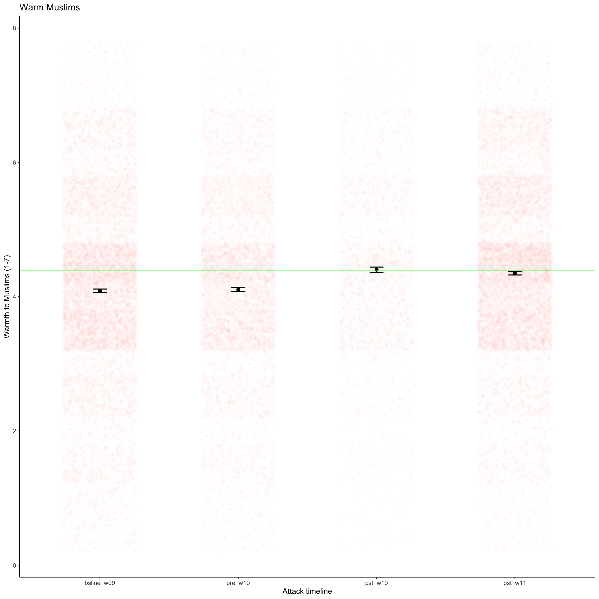
Figure 1: Change in acceptance of Muslims following the Christchurch Mosque attacks March 15, 2019. Green horizonal line indicates peak acceptance of Muslims, which occurred following the attacks (N = 11272, Years = 2017-2020, Source = New Zealand Attitudes and Values Study)
- Following the Christchurch Mosque attacks, warmth towards Muslim grew.
- Despite this growth, warmth to Muslims lags behind all other groups (except overweight people.)
- Following the mosque attacks non-Pacific/Māori minority groups with Muslims also received a boost in warmth.
- The Muslim acceptance gap remains large.
Introduction
We investigate warmth to Muslims before and after the 15 March 2019 mosque attacks in a nationally diverse longitudinal sample of New Zealanders (N = 11,272), and clarify how levels of warmth changed to Muslims and other groups.1
Findings
- Following the attacks there was a substantial increase in warmth to Muslims (Figure 2a)
- Following the attacks, there was also a small boost in warmth to Immigrants (Figure 2b), Asians (Figure 2c), Indians (Figure 2d), Chinese people (Figure 2e), and Refugees (Figure 2f.)
- The boost in warmth was specific to Muslims and non-Pacific minorities (Figure 2a-f.)
- Despite the post-attack boost in warmth to Muslims, warmth to Muslims still lags behind warmth to other groups. (Figure 2a-f).
- Whether the in boost to warmth to Muslims and ethnic groups associated with Muslims persists remains unclear.
Muslims and groups non-Pacific ethnic minorities
Show code
lds3
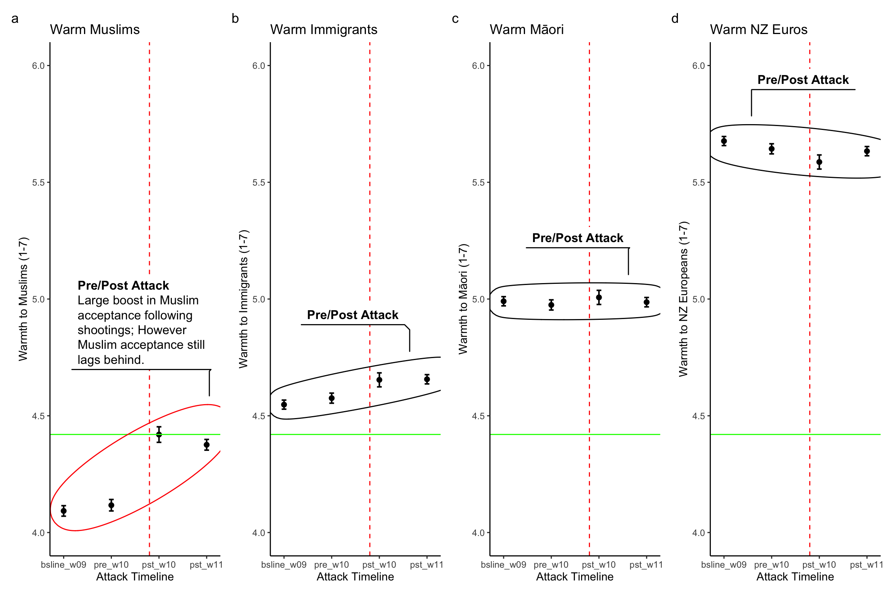
Figure 2: Increase in Warmth to Muslims After Shootings (red-dashed line), however, the acceptance of Muslims lags behind other minority groups. Green horizonal line indicates peak acceptance of Muslims, (N = 11272, Years = 2017-2020, Source = New Zealand Attitudes and Values Study)
Contrast groups that are not associated with Muslims.
Show code
lds4
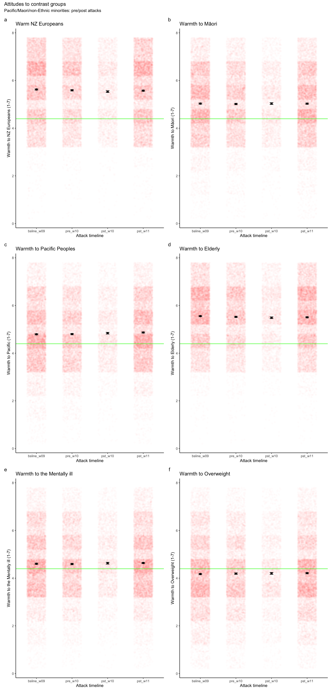
Figure 3: There is no evidence for substantial change in prejudice pre-post shootings among groups that are not associated with Muslims. Green horizonal line indicates peak acceptance of Muslims, which occurred following the attacks (N = 11272, Years = 2017-2020, Source = New Zealand Attitudes and Values Study)
Importance of findings
- Although the purpose of the Mosque attacks was to incite division, the attacks caused a strong boost in acceptance.
- The reasons for the boost in Muslim acceptance are unclear.
- Whether growth in acceptance will be sustained remains unclear
- Whether acceptance reverts to pre-shooting levels remains unclear.
Appendix 1: Design
Participants responded to waves 9, 10, and 11 of the New Zealand Attitudes and Values Study. In total there were 11481 participants who responded to all three waves. See Figure 4, Table 1
Show code
km2 %>%
select(Pre_PostATTACK) %>%
group_by(Pre_PostATTACK) %>%
summarise(n = n()) %>%
kbl(caption = "Participant numbers divided by condition: baseline, wave 10 pre/shootings, wave 10 post-shooting, and wave 11") %>%
kable_classic_2(c("striped", "hover"), full_width = TRUE)
| Pre_PostATTACK | n |
|---|---|
| bsline_w09 | 11481 |
| pre_w10 | 8120 |
| pst_w10 | 3361 |
| pst_w11 | 11481 |
Show code
## timeline
rarep<-df%>%
dplyr::filter(YearMeasured == 1) %>%
dplyr::filter(Wave == 2017 | Wave == 2018 | Wave == 2019) %>%
dplyr::group_by(Id) %>% filter(n() == 3) %>%
dplyr::filter(Wave == 2017 | Wave == 2018 | Wave == 2019) %>%
droplevels() %>%
dplyr::ungroup(Id) %>%
dplyr::mutate(timeline = make_date(year = 2009, month = 6, day = 30)+ TSCORE)%>%
dplyr:::count(day = floor_date(timeline, "day"))%>%
dplyr::mutate(Condition = factor(ifelse(day < "2018-06-18", -1,
ifelse(day >="2018-06-18" & day < "2019-03-15", 0,
ifelse( day >="2019-03-15" & day < "2019-06-18",1 ,
2))),
labels= c("PRE-ATTACK Baseline wv9 N = 11,481","PRE-ATTACK CONTROL rep measure wv10: n = 8120","IMMEDIATE POST-ATTACK rep measure wv10: PostAttack n = 3361", "DELAY POST-ATTACK Repeated measure post attack 2019: N= 11,481")))%>%
arrange(day)
#table(rarep$Condition)
# get data of change of baseline
dates_vline1<- as.Date("2018-06-18")
table(km2$Pre_PostATTACK)
bsline_w09 pre_w10 pst_w10 pst_w11
11481 8120 3361 11481 Show code
# get attack date
dates_vline2<- as.Date("2019-03-15")
dates_vline3<- as.Date("2019-06-18")
# for line in a graph
dates_vline2b<-which(rarep$day %in% dates_vline2)
dates_vline1b<-which(rarep$day %in% dates_vline1)
dates_vline3b<-which(rarep$day %in% dates_vline3)
lds2 <- ggplot(rarep, aes(day, n)) + geom_col(aes(fill = Condition)) + scale_x_date(date_labels = "%b/%Y",
limits = c(as.Date("2017-08-25"), as.Date("2020-10-15"))) +
scale_y_continuous(expand = c(0, 0), limits = c(0, NA)) +
geom_vline(xintercept = as.numeric(rarep$day[dates_vline2b]),
col = "red",
linetype = "dashed") +
xlab("NZAVS Waves years 2017 - 2020 daily counts") + ylab("Count of Responses")+
theme_classic() +
annotate(
"rect",
xmin = as.Date("2017-08-25"),
xmax = dates_vline1,
ymin = 0,
ymax = 900,
alpha = 0
) +
annotate(
"rect",
xmin = dates_vline2,
xmax = dates_vline3,
ymin = 0,
ymax = 900,
alpha = .3,
fill = "darkred"
) +
annotate(
"rect",
xmin = dates_vline1,
xmax = dates_vline2,
ymin = 0,
ymax = 900,
alpha = .3
) +
annotate(
"rect",
xmin = dates_vline3,
xmax = as.Date("2020-10-15"),
ymin = 0,
ymax = 900,
alpha = .05,
fill = "red"
) +
annotate(
"text",
x = as.Date("2018-10-15"),
y = 980,
label = "Wave 10
repeated pre-attacks"
) +
annotate(
"text",
x = as.Date("2018-01-15"),
y = 980,
label = "Wave 9
baseline (control)"
) +
annotate(
"text",
x = as.Date("2019-04-30"),
y = 980,
label = "Wave 10
repeated post attacks"
) +
annotate(
"text",
x = as.Date("2020-02-15"),
y = 980,
label = "Wave 11
repeated during the year following attacks"
) +
annotate(
geom = "curve",
x = as.Date("2018-02-15"),
y = 750,
xend = as.Date("2018-10-15"),
yend = 750,
curvature = -.3,
arrow = arrow(length = unit(2, "mm"))
) +
annotate(
geom = "curve",
x = as.Date("2018-02-15"),
y = 750,
xend = as.Date("2019-05-15"),
yend = 750,
curvature = -.3,
arrow = arrow(length = unit(2, "mm"))
) +
annotate("text",
x = as.Date("2018-02-01"),
y = 750,
label = "0") +
annotate("text",
x = as.Date("2018-11-05"),
y = 750,
label = "+1") +
annotate(
geom = "curve",
x = as.Date("2019-05-15"),
y = 800,
xend = as.Date("2020-05-15"),
yend = 750,
curvature = -.3,
arrow = arrow(length = unit(2, "mm"))
) +
annotate("text",
x = as.Date("2019-06-05"),
y = 750,
label = "+1") +
annotate("text",
x = as.Date("2020-05-30"),
y = 750,
label = "+2") +
annotate(
geom = "curve",
x = as.Date("2018-11-15"),
y = 800,
xend = as.Date("2020-05-15"),
yend = 750,
curvature = -.3,
arrow = arrow(length = unit(2, "mm"))
) +
theme(
legend.position = "top",
legend.text = element_text(size = 6),
legend.title = element_text(color = "Black", size = 8)
) +
scale_fill_viridis_d(option = "plasma")
### USE GRAPH OF TIMELINE
lds2
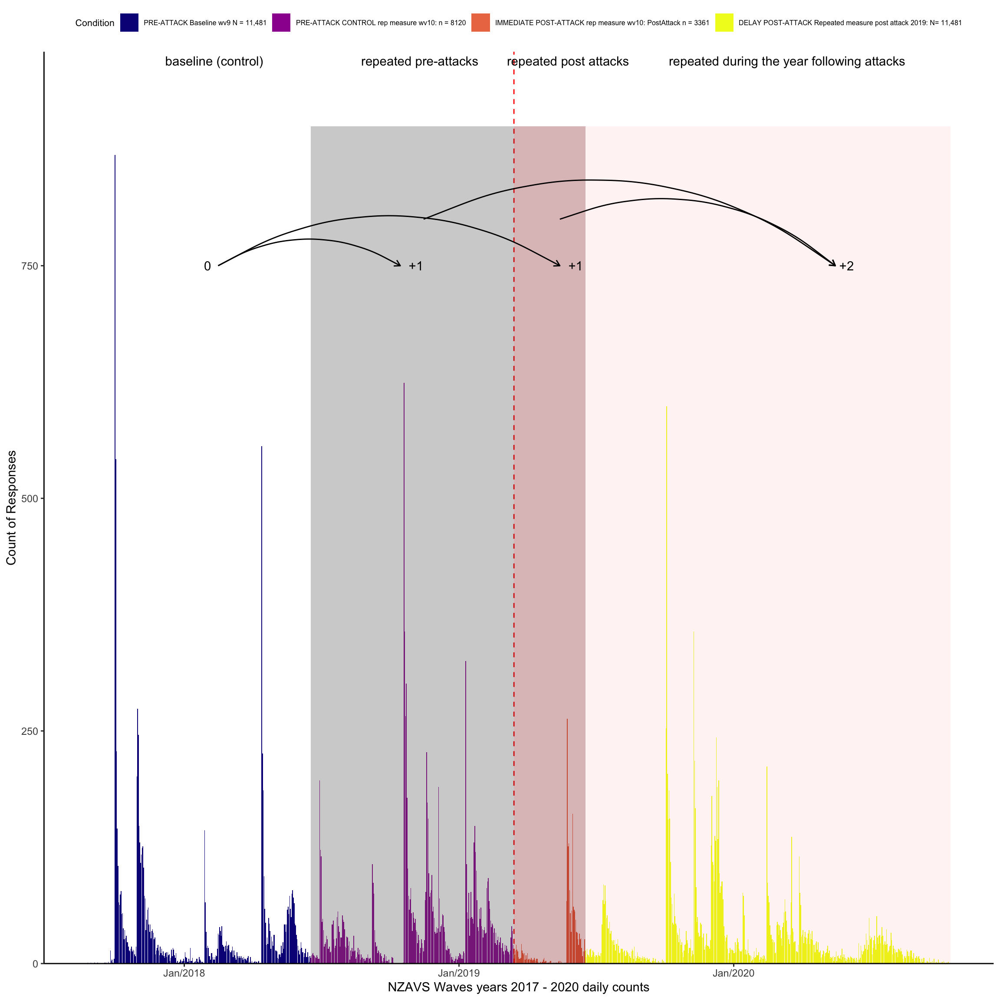
Figure 4: Within-participant repeated measures covering the years before and following the attacks allow precise estimates of attitudinal change within-people (N = 11,481).
Appendix 2: Background
New Zealand ranks among the world’s most tolerant societies (OECD 2011). However, Muslims are New Zealand’s least accepted minority group (Shaver et al. 2016, 2017; Hawi et al. 2019, 2019; Yogeeswaran et al. 2019; Greaves et al. 2020; Sibley et al. 2020; Highland et al. 2019).
In the context of New Zealand history, the relatively high levels of prejudice against Muslim, as well as the confusion of Muslims with Arabs, might seem surprising.
First, New Zealand’s cultural diversity exceeds that of Australia, the United Kingdom, France, Germany, the Netherlands, and Scandinavia. Muslims are only a small part of this diversity. In 2018, New Zealand’s Muslim, just over 1.5% of the total population. The Islamic community has been present in New Zealand since at least 1874 (Shepard, 2006). The New Zealand Muslim community is of diverse ethnic and cultural origins — of those that affiliated with Islam in 2013, 26.9% were born in Asia, 25.7% in New Zealand, 23.3% in the Middle East or Africa, and 21% in the Pacific Islands (Center, 2013). Thus, fewer than a quarter of New Zealand Muslims can be classified as ‘Arab.’
Another reason that anti-Muslim in New Zealand is puzzling is that New Zealand is one of the world’s most socially progressive and tolerant societies (OECD 2011), which has a long tradition of religious tolerance and accommodation of religious diversity.
A final source of puzzlement about anti-Muslim prejudice in New Zealand is that there is no record of any extremist Muslim group in New Zealand, nor have there been any reported attacks of Muslims on non-Muslims By contrast many attacks against the Muslim minority were reported prior to 15 March 2019, when 51 Muslims were murdered at two mosques in a single day. Members of Islamic communities in New Zealand have long reported verbal and physical harassment, vandalism, negative media portrayal, and/or have faced difficulties in the labour market @. Thus, while Muslims in New Zealand have a basis for concern about their experiences of anti-Muslim prejudice, there is no basis from in experience for anti-Muslim prejudice among the non-Muslim majority
Sources of anti-Muslim prejudice
In previous research, we found that levels of media exposure predicted lower warmth towards Muslims; notably, this effect held at both the low and high end of the political conservativism scale (Shaver et al. 2017). Whether changes in media coverage of Muslims contributed to rising Muslim acceptance following the attacks is a question that our future research will consider.
We also found that prior to the attacks, religiously identified New Zealanders were on average more accepting of Muslims (Shaver et al. 2016). Whether this difference held after the attacks is another question that we will consider in future research.
Appendix 3: Prejudice trends from 2012-2020 reveal a longstanding “Muslim Acceptance Gap”
Figure 5 shows the longer term trend warmth towards Muslims, begining in 2012, when the NZAVS first included questions about about attitudes to Muslims. As evident in the figure, despite gradually increasing warmth towards Muslims, the group as a whole has experienced greater prejudice than other groups. Prejudice of any kind, towards Muslims or other groups, should be addressed because prejudice unfairly affects life experiences for those who are the targets of it. Experiences of unfairness conflict with New Zealand’s aspirations to extend manaakitanga, and whanaungatanga to all New Zealanders.
For more analysis of prejudice trends in New Zealand see: (Sibley et al. 2020)
Show code
ld <- ggplot(data = dt,
aes(x = yrs,
y = Warm.Muslims))
lds_0 <-ld + geom_line(alpha = .005) +
stat_summary(
geom = "point",
fun = mean,
size = .1,
alpha = .2
) +
geom_smooth(method ="gam" ) + theme_minimal() + labs("") + theme(
legend.position = "right",
legend.text = element_text(size = 6),
legend.title = element_text(color = "Black", size = 8)
) + scale_colour_viridis_d(option = "plasma") + geom_vline(xintercept= 9.71, linetype="dashed", color = "red") +
geom_hline(yintercept= 4.395, color = "green") +
ylab("Warmth (1-7)") +
labs(title="Warmth to Muslims") # +
# xlab("Years 2011-2020, N = 22,254")
li <- ggplot(data = di,
aes(x = yrs,
y = Warm.Immigrants))
li_0 <-li + geom_line(alpha = .005) +
stat_summary(
geom = "point",
fun = mean,
size = .1,
alpha = .2
) +
geom_smooth(method = "gam") +
theme_minimal() + labs("") + theme(
legend.position = "right",
legend.text = element_text(size = 6),
legend.title = element_text(color = "Black", size = 8)
) + scale_colour_viridis_d(option = "plasma") +
geom_vline(xintercept= 9.71, linetype="dashed", color = "red") +
geom_hline(yintercept= 4.4, color = "green") +
ylab("Warmth (1-7)") +
labs(title="Warmth to Immigrants") #+
# xlab("Years 2011-2020, N = 22,254")
## indians
lm <- ggplot(data = dindians,
aes(x = yrs,
y = Warm.Indians))
lm_m <-lm + geom_line(alpha = .005) +
stat_summary(
geom = "point",
fun = mean,
size = .1,
alpha = .2
) +
geom_smooth( method = "gam" ) +
theme_minimal() + labs("") + theme(
legend.position = "right",
legend.text = element_text(size = 6),
legend.title = element_text(color = "Black", size = 8)
) + scale_colour_viridis_d(option = "plasma") +
geom_vline(xintercept= 9.71, linetype="dashed", color = "red") +
geom_hline(yintercept= 4.4, color = "green") +
ylab("Warmth (1-7)") +
labs(title="Warmth to Indians")
#+
# xlab("Years 2011-2020, N = 22,254")
# Chinese
lnz <- ggplot(data = dchinese,
aes(x = yrs,
y = Warm.Chinese))
lnz_0 <-lnz + geom_line(alpha = .005) +
stat_summary(
geom = "point",
fun = mean,
size = .1,
alpha = .2
) +
geom_smooth( method = "gam" ) +
theme_classic() + labs("") + theme(
legend.position = "right",
legend.text = element_text(size = 6),
legend.title = element_text(color = "Black", size = 8)
) + scale_colour_viridis_d(option = "plasma") +
geom_vline(xintercept= 9.71, linetype="dashed", color = "red") +
geom_hline(yintercept= 4.4, color = "green") +
ylab("Warmth (1-7)") +
labs(title="Warmth to Chinese") +
xlab("Years 2011-2020, N = 22,254")
lds_0 + li_0 + lm_m + lnz_0 + plot_layout(guides = 'collect', nrow = 1, byrow = FALSE) + plot_annotation(title = "Timeline of attitudes to different groups in New Zealand; years 2011-2020: Source: NZAVS, N = 22,254", subtitle = "Green line = maximum level of warmth for Muslims, red line = Mosque attacks; Alpha for points on graph were set to .02 to avoid overplotting; method for estimation", tag_levels = 'a')
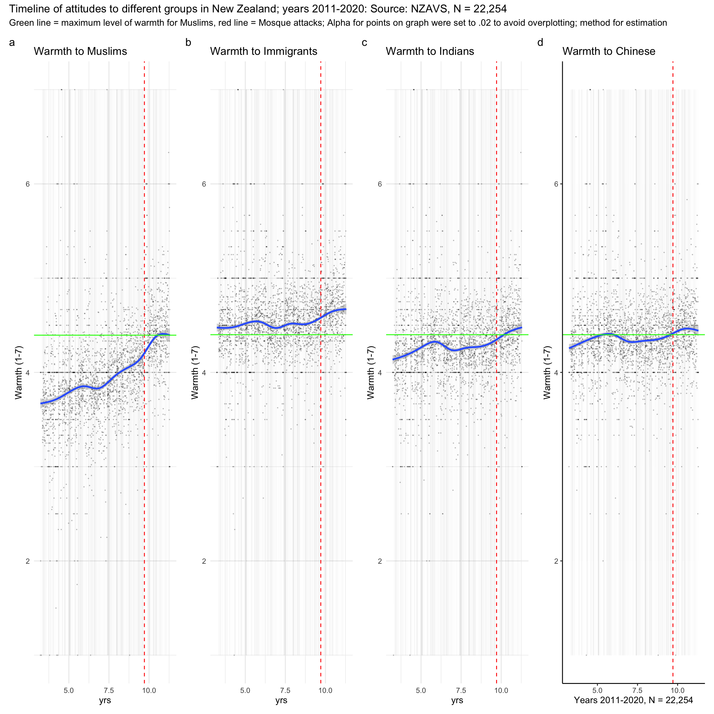
Figure 5: Within-person prejudice change pre/post attacks towards (a) Muslims, (b) Immigrants, (c) Māori, (d) NZ Europeans. Redline indicates mosque attacks. Greenline indicates maximum warmth to Muslims, which was strongly boosted post-attacks, yet lags behind other groups
Show code
m6 <- lmer(Warm.Muslims ~ cons_s * Attack + EthnicCats +
a_s +
r_s + (1|Id) , # dependence owing to the week of response
data=km2)
p6 <- plot(ggeffects::ggpredict(m6, terms = c("Attack [all]", "cons_s[all]"), ci = .89)) + xlab("Conservativism") + ylab("Warmth Muslims") + scale_colour_viridis_d()
p7 <- plot(ggeffects::ggpredict(m6, terms = c("cons_s[all]","Attack [all]"), ci = .89), add.data = TRUE, dot.alpha = 0.02, jitter = .2 ) + scale_y_continuous(limits = c(.5,7.5)) +
xlab("Political Conservativism (SD)") + ylab("Warmth Muslims (1-7") +
labs(title = "Warmth to Muslims") + scale_colour_viridis_d() +
theme(
# Change legend background color
# legend.background = element_rect(fill = "darkgray"),
# legend.key = element_rect(fill = "lightblue", color = NA),
# Change legend key size and key width
legend.key.size = unit(0.2, "cm"),
legend.direction = "vertical",,
legend.key.width = unit(0.2, "cm"),
) +
guides(size = 1.5)
desc <- "Post Shooting Difference"
p71<-p7 + annotate("rect",
xmin = 2.,
xmax = 2.5,
ymin = 3.5,
ymax = 4.1,
alpha = .2,
colour = "red") +
annotate(
"rect",
xmin = -2.,
xmax = -1.5,
ymin = 4.4,
ymax = 4.8,
alpha = .2,
colour = "red"
) +
annotate(
"text",
x = 0,
y = 7.2,
label = " Greater relative growth in
acceptance among conservatives",
colour = "brown3"
) +
annotate(
geom = "curve",
x = -1,
y = 6.7,
xend = -1.75,
yend = 4.9,
curvature = 0,
arrow = arrow(length = unit(2, "mm")),
colour = "red"
) +
annotate(
geom = "curve",
x = 1,
y = 6.7,
xend = 2.25,
yend = 4.2,
curvature = 0,
arrow = arrow(length = unit(2, "mm")),
colour = "red"
)
## Compare this to warmth to Maori
m8 <- lmer(Warm.Maori ~ cons_s * Attack + EthnicCats +
a_s +
r_s +(1|Id) , # dependence owing to the week of response
data=km2)
p8 <- plot(ggeffects::ggpredict(m8, terms = c("cons_s[all]","Attack [all]"), ci = .89),
add.data = TRUE, dot.alpha = 0.02, jitter = .2 ) + scale_y_continuous(limits = c(.5,7.5)) +
xlab("Political Conservativism (SD)") + ylab("Warmth Māori (1-7") +
labs(title = "Warmth to Māori") + scale_colour_viridis_d()+
theme(
# Change legend background color
# legend.background = element_rect(fill = "darkgray"),
# legend.key = element_rect(fill = "lightblue", color = NA),
# Change legend key size and key width
legend.key.size = unit(0.2, "cm"),
legend.direction = "vertical",
legend.key.width = unit(0.2, "cm")
)+
guides(size = 1.5)
## Warmth to NZEuro
m9 <- lmer(Warm.NZEuro ~ cons_s * Attack + EthnicCats +
a_s +
r_s +(1|Id) , # dependence owing to the week of response
data=km2)
p9 <- plot(ggeffects::ggpredict(m9, terms = c("cons_s[all]","Attack [all]"), ci = .89),
add.data = TRUE, dot.alpha = 0.02, jitter = .2 ) + scale_y_continuous(limits = c(.5,7.5)) +
xlab("Political Conservativism (SD)") + ylab("Warmth NZ Europeans (1-7") +
labs(title = "Warmth to NZ Europeans") + scale_colour_viridis_d() +
theme(
# Change legend background color
# legend.background = element_rect(fill = "darkgray"),
# legend.key = element_rect(fill = "lightblue", color = NA),
# Change legend key size and key width
legend.key.size = unit(0.2, "cm"),
legend.direction = "vertical",
legend.key.width = unit(0.2, "cm")
)+
guides(size = 1.5)
m10 <- lmer(Warm.Immigrants ~ cons_s * Attack + EthnicCats +
a_s +
r_s +(1|Id) , # dependence owing to the week of response
data=km2)
p10 <-
plot(
ggeffects::ggpredict(
m10,
terms = c("cons_s[all]", "Attack [all]"),
ci = .89
),
add.data = TRUE,
dot.alpha = 0.02,
jitter = .2
) + scale_y_continuous(limits = c(.5, 7.5)) +
xlab("Political Conservativism (SD)") + ylab("Warmth Immigrants (1-7") +
labs(title = "Warmth to Immigrants") + scale_colour_viridis_d()+
theme(
# Change legend background color
# legend.background = element_rect(fill = "darkgray"),
# legend.key = element_rect(fill = "lightblue", color = NA),
# Change legend key size and key width
legend.key.size = unit(0.2, "cm"),
legend.key.width = unit(0.2, "cm"),
legend.direction = "vertical") +
guides(size = 1.5) +
annotate(
"rect",
xmin = 2.,
xmax = 2.5,
ymin = 4.2,
ymax = 4.4,
alpha = .2,
colour = "red"
) +
annotate(
"rect",
xmin = -2.,
xmax = -1.5,
ymin = 4.75,
ymax = 4.95,
alpha = .2,
colour = "red"
) +
annotate(
"text",
x = 0,
y = 7.2,
label = "Boost to Immigrant Warmth was linear across political conservativism",
colour = "brown3"
) +
annotate(
geom = "curve",
x = -1,
y = 6.7,
xend = -1.75,
yend = 4.95,
curvature = 0,
arrow = arrow(length = unit(2, "mm")),
colour = "red"
) +
annotate(
geom = "curve",
x = 1,
y = 6.7,
xend = 2.25,
yend = 4.4,
curvature = 0,
arrow = arrow(length = unit(2, "mm")),
colour = "red"
)
Appendix 4: Political conservatives also grew more accepting of Muslims after the 2019 Mosque attacks.
Generally, greater political conservativism predicts greater minority group prejudice. In absolute terms, however, growth in Muslim acceptance following the shootings was stronger at the conservative end of the scale (see Figure 6.
Show code
lds4 <- p71 + p10 + p8 + p9 + plot_annotation(tag_levels = 'a') + plot_layout(ncol = 2, byrow = FALSE) + plot_layout(guides = 'collect')
lds4
![\label{fig:graphsmodelsPol} Warmth to Muslims (y-axis) and other groups by political conservativism (x-axis) pre/post shootings (the solid lines). The shift betweenand the purple/blue lines (pre-attacks) and the yellow/green lines (post-attacks) shows the magnitude of growth in minority group acceptance. Here we plot all expected values of the model as points. The darkness of the areas on the graph reflect densities of responses. This approach allows us to visualise the variance around average responses. Results reveal that the mosque attacks led to a greater increase in warmth towards Muslims among political conservatives. However, this population had more headroom for growth in warmth. Whether this boost in Muslim warmth is sustained remains to be seen: (N = 11272, Years = 2017-2020, Source = New Zealand Attitudes and Values Study)](report_muslim_acceptance_bulbuliaEtAl_files/figure-html5/graphsmodelsPol-1.png)
Figure 6: Warmth to Muslims (y-axis) and other groups by political conservativism (x-axis) pre/post shootings (the solid lines). The shift betweenand the purple/blue lines (pre-attacks) and the yellow/green lines (post-attacks) shows the magnitude of growth in minority group acceptance. Here we plot all expected values of the model as points. The darkness of the areas on the graph reflect densities of responses. This approach allows us to visualise the variance around average responses. Results reveal that the mosque attacks led to a greater increase in warmth towards Muslims among political conservatives. However, this population had more headroom for growth in warmth. Whether this boost in Muslim warmth is sustained remains to be seen: (N = 11272, Years = 2017-2020, Source = New Zealand Attitudes and Values Study)
Appendix 5: Regression Discontinuity Analysis
Show code
df_rdd <- df %>%
dplyr::filter(Wave == 2018) %>%
dplyr::select(
Id,
Age,
Male,
TSCORE,
EthnicCats,
Warm.Overweight,
Warm.Elderly,
Warm.MentalIllness,
Warm.Muslims,
Warm.Immigrants,
Warm.Asians,
Warm.Refugees,
Wave,
Warm.Maori,
Warm.NZEuro,
Warm.Indians,
Warm.Chinese,
Warm.Refugees,
Warm.Pacific,
Muslim,
Euro,
Relid,
Religious,
Pol.Orient,
TSCORE,
WSCORE,
Terrorism.Anxiety,
KESSLER6sum,
KESSLER6,
BELONG,
PWI,
SWB.SoC01,
YearMeasured,
WSCORE
) %>%
dplyr::filter(TSCORE >= 3395 & TSCORE <= 3695
)%>%
dplyr::mutate(Pre_Post_attack = as.factor(ifelse(
TSCORE >= 3545, "Post_Attack", "Pre_Attack"
))) %>%
dplyr::mutate(Neighbourhood_Community = SWB.SoC01) %>%
dplyr::mutate(Personal_Wellbeing = PWI) %>%
dplyr::mutate(Pre_Post_attack = forcats::fct_relevel(Pre_Post_attack, c("Pre_Attack", "Post_Attack"))) %>%
dplyr::mutate(days = as.integer(TSCORE),
years = days / 365) %>%
dplyr::mutate(days_0 = as.integer(days - min(days))) %>%
dplyr::filter(Muslim == 0)%>%
dplyr::mutate(Timeline = make_date(year = 2009, month = 6, day = 30)+ TSCORE)
length(unique(df_rdd$Id))
[1] 17228| Overall (N=17228) |
|
|---|---|
| Age | |
| Mean (SD) | 52.7 (13.6) |
| Median [Min, Max] | 54.4 [18.1, 99.1] |
| Missing | 1 (0.0%) |
| Male | |
| Not_Male | 10797 (62.7%) |
| Male | 6386 (37.1%) |
| Missing | 45 (0.3%) |
| EthnicCats | |
| Euro | 13998 (81.3%) |
| Maori | 1975 (11.5%) |
| Pacific | 316 (1.8%) |
| Asian | 641 (3.7%) |
| Missing | 298 (1.7%) |
Show code
df_rdd2 <- df %>%
dplyr::filter(Wave == 2018) %>%
dplyr::select(
Id,
Age,
Male,
TSCORE,
EthnicCats,
Warm.Overweight,
Warm.Elderly,
Warm.MentalIllness,
Warm.Muslims,
Warm.Immigrants,
Warm.Asians,
Warm.Refugees,
Wave,
Warm.Maori,
Warm.NZEuro,
Warm.Indians,
Warm.Chinese,
Warm.Refugees,
Warm.Pacific,
Muslim,
Euro,
Relid,
Religious,
Pol.Orient,
TSCORE,
WSCORE,
Terrorism.Anxiety,
KESSLER6sum,
KESSLER6,
BELONG,
PWI,
SWB.SoC01,
YearMeasured,
WSCORE
) %>%
dplyr::filter(TSCORE >= 3288 # July 1 2018
)%>%
dplyr::mutate(Pre_Post_attack = as.factor(ifelse(
TSCORE >= 3545, "Post_Attack", "Pre_Attack"
))) %>%
dplyr::mutate(Neighbourhood_Community = SWB.SoC01) %>%
dplyr::mutate(Personal_Wellbeing = PWI) %>%
dplyr::mutate(Pre_Post_attack = forcats::fct_relevel(Pre_Post_attack, c("Pre_Attack", "Post_Attack"))) %>%
dplyr::mutate(days = as.integer(TSCORE),
years = days / 365) %>%
dplyr::mutate(days_0 = as.integer(days - min(days))) %>%
dplyr::filter(Muslim == 0)%>%
dplyr::mutate(Timeline = make_date(year = 2009, month = 6, day = 30)+ TSCORE)
length(unique(df_rdd$Id))
[1] 17228Show code
plot(df_rdd$days_0)
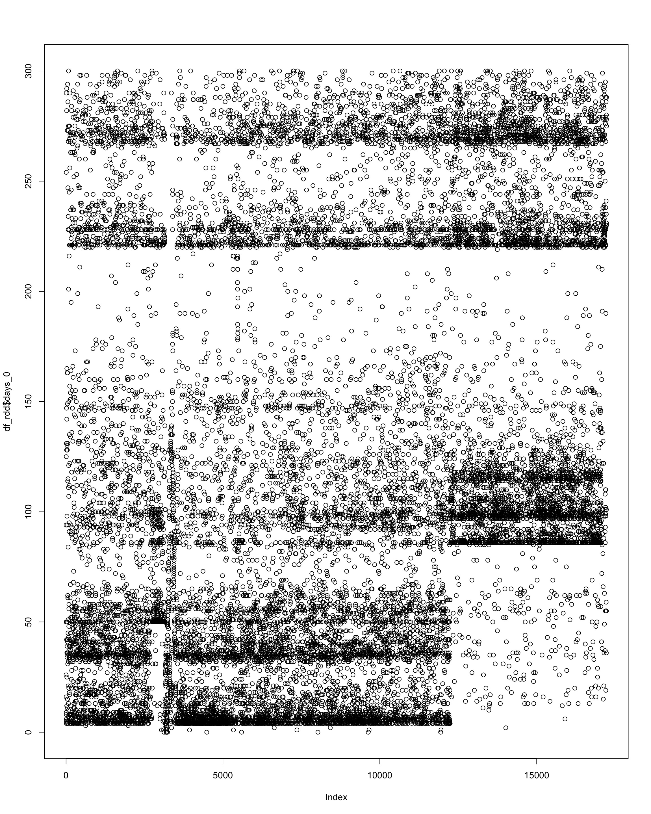
Show code
table1::table1(~ Age + Male + EthnicCats, data = df_rdd)
| Overall (N=17228) |
|
|---|---|
| Age | |
| Mean (SD) | 52.7 (13.6) |
| Median [Min, Max] | 54.4 [18.1, 99.1] |
| Missing | 1 (0.0%) |
| Male | |
| Not_Male | 10797 (62.7%) |
| Male | 6386 (37.1%) |
| Missing | 45 (0.3%) |
| EthnicCats | |
| Euro | 13998 (81.3%) |
| Maori | 1975 (11.5%) |
| Pacific | 316 (1.8%) |
| Asian | 641 (3.7%) |
| Missing | 298 (1.7%) |
Show code
# TERRORISM ANXIETY
df$YearMeasured
[1] 1 -1 -1 -1 -1 -1 -1 -1 -1 -1 0 1 0 0 0 1 1
[18] 1 1 1 1 1 1 0 0 0 0 0 0 0 0 0 0 1
[35] 0 0 0 0 0 0 1 0 1 1 1 1 0 0 0 0 0
[52] 0 0 0 0 1 0 0 0 0 0 0 0 0 0 0 1 0
[69] 0 1 0 0 0 0 0 0 0 1 1 0 1 0 0 0 0
[86] 0 1 0 1 0 0 0 0 0 0 -1 -1 -1 0 1 1 1
[103] 1 1 1 1 1 0 1 0 1 0 0 1 0 0 0 0 0
[120] 0 0 1 1 0 0 1 0 0 0 0 0 0 1 0 0 0
[137] 1 0 0 0 0 0 0 1 1 1 1 1 1 1 1 1 1
[154] 0 1 1 1 1 1 1 1 1 1 1 1 1 1 1 1 1
[171] 1 1 1 1 0 1 1 0 0 0 0 0 0 0 0 0 0
[188] 1 0 0 1 1 1 1 1 1 0 0 1 1 1 1 1 1
[205] 1 1 1 1 1 1 1 1 1 1 1 1 1 1 1 1 1
[222] 0 1 0 1 1 1 1 1 1 1 1 1 0 1 1 1 0
[239] 1 0 0 0 1 0 0 0 0 0 0 0 0 0 0 1 1
[256] 1 1 1 1 1 1 1 1 1 1 1 0 1 1 1 1 1
[273] 0 0 0 1 1 1 1 1 1 1 1 0 0 1 1 1 -1
[290] -1 -1 -1 -1 -1 -1 -1 0 1 1 1 1 1 1 1 1 1
[307] 1 1 1 1 1 1 1 1 1 1 1 0 0 1 1 1 1
[324] 1 1 1 1 1 1 1 1 1 1 1 0 0 0 -1 -1 -1
[341] 0 1 1 1 1 1 1 1 0 0 0 0 1 1 1 1 1
[358] 1 1 1 1 1 0 1 1 1 1 1 1 1 1 1 1 1
[375] 1 0 0 0 0 0 0 0 0 0 0 1 0 1 0 1 1
[392] 1 1 0 1 1 1 1 1 0 0 0 0 -1 -1 -1 0 1
[409] 1 1 1 1 1 1 1 1 1 1 1 1 1 1 1 1 1
[426] 1 1 1 1 1 1 1 1 1 1 1 1 1 1 1 1 1
[443] 1 1 1 1 1 1 1 1 1 1 1 1 1 1 1 1 1
[460] 0 1 1 1 0 0 0 0 0 0 0 0 0 0 1 1 1
[477] 1 1 1 1 1 1 1 0 1 1 0 0 0 0 0 0 0
[494] 0 0 1 1 1 1 1 1 1 1 1 1 1 1 0 0 0
[511] 0 0 0 0 0 0 1 1 1 1 1 1 1 1 1 1 1
[528] 1 1 1 1 1 1 1 1 -1 -1 -1 0 1 1 0 0 0
[545] 0 0 0 0 0 0 1 1 1 1 1 1 1 1 1 1 1
[562] 1 0 0 0 0 0 0 0 0 0 0 1 0 0 0 0 0
[579] 0 0 0 0 0 1 1 1 0 1 0 0 0 0 0 0 1
[596] 1 1 1 1 1 1 0 1 1 1 1 1 1 1 1 1 1
[613] 1 1 1 1 1 0 0 0 1 0 0 0 1 0 0 1 1
[630] 0 0 1 1 0 0 0 0 0 1 1 1 1 1 1 1 1
[647] 1 1 1 1 1 1 1 1 1 1 1 1 0 0 1 1 1
[664] 0 0 0 0 0 0 0 0 1 1 0 0 0 0 0 0 0
[681] 0 0 1 0 0 0 0 0 0 0 0 0 0 1 1 1 1
[698] 1 1 1 1 1 1 1 1 1 0 0 0 0 1 0 0 0
[715] 0 1 1 1 1 1 1 0 1 0 1 0 1 0 0 0 0
[732] -1 -1 -1 -1 -1 0 1 1 1 1 1 1 1 1 1 1 1
[749] 1 1 1 1 1 1 1 1 1 1 1 1 1 1 1 1 1
[766] 0 1 1 1 1 1 0 1 1 1 1 1 1 1 1 1 1
[783] 1 1 1 1 1 1 1 0 0 0 1 1 1 0 0 0 0
[800] -1 -1 -1 0 1 1 1 1 1 1 1 1 1 1 1 1 1
[817] 1 1 1 1 1 1 0 1 1 1 1 1 1 1 1 1 1
[834] 1 1 1 1 1 1 -1 -1 -1 -1 -1 -1 -1 0 1 1 1
[851] 1 0 1 1 1 1 1 1 1 0 0 0 0 0 1 1 0
[868] 0 0 1 1 1 0 1 1 1 1 1 1 1 1 1 1 1
[885] 0 1 1 1 0 0 0 1 1 1 0 0 1 1 0 0 0
[902] 0 1 1 1 1 1 1 1 0 0 0 0 1 0 0 0 0
[919] 0 0 0 0 0 0 1 1 0 0 0 0 0 0 0 0 0
[936] 1 1 0 0 1 1 0 1 0 1 1 1 1 1 1 1 1
[953] 1 1 0 1 0 1 1 1 1 0 1 0 0 1 1 1 1
[970] 0 0 0 0 0 0 0 0 0 0 1 1 1 0 1 1 1
[987] 1 1 1 1 1 0 0 0 0 0 0 0 0 0 0 1 0
[1004] 1 0 0 0 0 0 0 1 0 1 1 1 1 1 1 1 1
[1021] 1 1 1 1 1 1 1 1 1 1 1 1 1 1 1 1 1
[1038] 1 1 1 1 1 1 1 1 1 1 1 1 1 1 1 1 0
[1055] 1 1 1 1 1 1 1 1 1 1 1 1 1 1 1 1 1
[1072] 1 1 1 1 1 1 1 1 1 0 1 1 1 1 1 0 0
[1089] 0 1 0 0 0 0 0 0 0 0 0 0 1 1 1 1 1
[1106] 1 0 0 0 0 0 1 1 0 0 0 0 0 0 0 0 0
[1123] 1 1 1 1 1 1 1 1 1 1 1 1 1 1 1 1 1
[1140] 1 1 1 1 1 1 1 1 0 1 0 0 0 0 0 0 1
[1157] 1 1 1 1 1 1 1 1 1 1 1 0 0 0 1 0 1
[1174] 0 0 0 1 1 1 0 0 1 0 0 0 0 1 1 1 0
[1191] 0 0 0 0 0 0 0 0 0 1 0 1 1 1 1 0 0
[1208] 0 0 0 1 1 1 1 1 1 0 0 0 0 0 1 1 1
[1225] 1 1 1 1 1 1 1 1 1 0 0 0 0 0 0 0 0
[1242] 0 0 1 1 1 1 1 1 1 1 1 1 1 1 1 1 1
[1259] 1 1 1 1 1 1 1 1 1 1 1 1 1 1 1 1 1
[1276] 1 1 1 0 1 0 1 1 1 -1 -1 0 1 1 0 1 0
[1293] 1 0 1 0 1 0 1 1 0 1 1 1 1 0 1 1 1
[1310] 1 1 1 1 1 1 1 1 1 1 1 1 1 1 1 1 1
[1327] 0 0 1 1 1 1 0 0 0 0 0 0 0 0 0 0 1
[1344] 0 0 0 1 1 0 0 0 0 0 1 1 1 1 1 1 1
[1361] 1 1 1 0 1 0 0 1 1 1 0 0 0 0 0 1 0
[1378] 0 0 0 0 0 0 0 1 0 1 0 0 0 0 0 0 0
[1395] 0 0 0 1 0 1 0 1 0 0 0 0 0 0 1 1 1
[1412] 1 1 1 1 1 1 -1 0 1 1 1 1 1 1 1 1 1
[1429] 1 1 1 0 1 0 1 1 1 1 1 0 0 1 0 0 0
[1446] 0 0 0 0 0 0 0 1 0 0 1 1 0 0 0 0 0
[1463] 0 1 1 1 1 1 1 0 0 0 0 0 1 1 1 1 0
[1480] 1 0 1 0 0 0 1 1 0 1 0 0 0 0 0 1 0
[1497] 1 1 1 1 1 1 1 1 1 1 1 1 1 0 1 0 0
[1514] 0 0 0 0 0 1 1 0 0 0 0 0 -1 -1 -1 0 1
[1531] 0 0 0 0 0 1 0 1 0 1 1 0 0 0 0 0 0
[1548] 0 0 0 0 1 1 1 1 1 1 1 1 1 1 1 1 1
[1565] 0 0 0 0 0 0 0 0 0 1 1 1 1 1 1 0 1
[1582] 1 0 0 1 1 1 0 1 1 1 1 1 1 1 1 0 0
[1599] 0 0 0 0 0 0 0 0 1 1 0 0 0 0 0 0 0
[1616] 0 0 1 1 1 1 1 1 1 1 1 0 0 1 1 1 1
[1633] 1 1 1 1 1 1 0 1 1 1 1 1 1 1 1 1 1
[1650] 1 1 1 1 1 1 0 0 1 0 0 0 1 1 1 1 1
[1667] 1 1 1 1 1 1 1 0 0 0 0 0 0 0 0 0 0
[1684] 1 1 1 1 1 0 0 0 0 0 0 1 0 0 0 0 0
[1701] 1 0 0 0 0 1 1 1 1 1 1 0 0 0 0 0 1
[1718] 1 1 1 1 1 1 1 1 1 1 1 0 0 0 0 0 0
[1735] 0 0 0 0 1 1 1 1 1 1 1 1 1 1 1 1 0
[1752] 0 0 0 0 0 0 0 0 0 1 1 1 1 1 1 1 1
[1769] 1 1 1 1 1 1 1 1 1 1 1 1 1 1 1 1 1
[1786] 1 1 1 0 0 0 0 0 1 1 1 1 1 1 0 0 0
[1803] 1 0 1 0 0 0 0 1 1 1 0 0 0 1 0 0 0
[1820] 0 0 1 1 1 1 0 1 1 0 0 0 0 0 0 0 0
[1837] 0 1 1 1 1 1 1 1 1 0 0 1 1 1 1 1 1
[1854] 1 1 1 1 1 1 1 1 0 1 1 0 0 0 0 0 0
[1871] 1 1 1 1 1 0 0 1 0 1 0 1 1 1 0 1 1
[1888] 1 1 0 0 0 1 1 1 1 1 1 0 1 1 1 1 1
[1905] 1 0 1 0 0 0 0 0 0 0 1 0 0 1 1 0 1
[1922] 0 0 0 0 1 1 1 1 1 1 1 1 1 1 1 1 0
[1939] 0 0 1 0 1 0 0 0 1 1 1 1 1 -1 -1 -1 -1
[1956] -1 -1 0 1 1 1 1 1 1 1 1 1 1 1 1 1 1
[1973] 1 1 1 1 1 1 0 1 1 1 1 1 1 1 1 1 1
[1990] 1 1 1 1 0 0 0 1 1 1 0 1 1 1 1 1 1
[2007] 1 1 1 1 1 1 1 1 1 1 0 0 0 0 0 0 0
[2024] 0 1 1 1 1 1 1 1 1 1 1 0 1 1 1 1 1
[2041] 0 0 1 0 1 0 1 1 1 1 0 1 1 1 1 1 1
[2058] 1 0 0 1 1 1 1 1 1 0 0 1 1 1 1 1 1
[2075] 1 1 1 1 1 1 1 1 1 1 1 1 1 1 1 1 1
[2092] 1 1 1 1 1 1 1 1 1 1 1 0 0 0 0 1 0
[2109] 0 0 0 0 1 1 1 1 1 1 1 1 1 1 1 1 1
[2126] 0 0 1 0 1 0 0 1 0 1 0 0 0 0 0 0 0
[2143] 0 0 0 1 1 1 1 1 1 0 0 0 0 0 1 1 1
[2160] 1 1 1 1 1 1 1 1 1 1 1 1 1 1 0 0 1
[2177] 1 0 1 0 0 1 0 0 0 1 0 0 0 1 1 1 1
[2194] 1 1 1 1 0 1 1 1 1 1 1 1 1 1 1 1 1
[2211] 1 1 1 0 0 0 0 0 0 0 0 0 1 1 1 1 1
[2228] 1 1 1 0 1 1 1 1 0 -1 -1 -1 -1 -1 -1 -1 0
[2245] 1 0 0 0 0 0 0 0 0 0 0 1 0 0 0 0 0
[2262] 0 0 0 0 0 1 0 0 0 0 0 0 0 0 1 0 1
[2279] 1 1 1 1 1 1 1 0 1 1 1 1 1 0 0 0 0
[2296] -1 -1 -1 0 1 1 1 1 1 1 1 1 1 1 1 1 1
[2313] 1 1 0 0 0 0 0 0 0 1 1 1 1 0 0 0 0
[2330] 0 0 0 1 1 1 0 1 1 0 1 0 0 0 1 1 1
[2347] 1 1 1 1 1 0 0 0 1 1 0 0 -1 -1 -1 -1 -1
[2364] -1 0 1 0 0 0 0 0 0 0 0 0 0 1 0 0 0
[2381] 0 0 0 0 0 0 0 1 0 0 0 0 0 0 -1 -1 -1
[2398] 0 1 1 1 1 1 1 0 0 0 0 0 1 1 1 1 1
[2415] 1 0 1 0 0 1 1 0 0 0 0 0 0 0 0 0 0
[2432] 1 0 0 0 0 0 0 0 0 0 0 1 1 1 1 1 1
[2449] 1 1 1 1 1 1 1 1 1 1 1 1 1 1 1 1 1
[2466] 1 1 1 1 1 1 1 1 1 1 1 1 1 1 1 1 1
[2483] 1 0 0 0 1 0 0 0 0 0 0 0 0 0 0 1 1
[2500] 1 1 1 1 0 0 0 0 0 1 1 0 0 1 0 0 -1
[2517] -1 -1 0 1 1 1 1 1 1 1 1 1 1 0 1 1 1
[2534] 1 0 0 0 0 0 0 0 1 1 1 1 1 1 1 1 1
[2551] 1 0 1 1 1 0 1 1 1 1 0 1 1 1 1 1 0
[2568] 0 0 0 0 0 1 0 1 1 1 0 -1 -1 -1 -1 -1 -1
[2585] 0 1 0 0 0 0 0 0 0 0 0 0 1 1 1 0 1
[2602] 1 1 1 1 1 1 1 1 1 1 1 1 1 1 1 1 1
[2619] 1 1 1 1 1 1 1 1 1 1 1 1 1 1 1 1 0
[2636] 0 1 1 1 1 1 0 0 1 0 0 0 0 0 1 0 1
[2653] 0 1 0 1 0 0 0 1 0 0 1 0 0 0 1 0 0
[2670] 0 0 0 0 1 1 1 1 1 0 0 0 0 0 0 1 0
[2687] 0 1 1 1 1 1 1 1 1 1 1 1 1 1 1 1 1
[2704] 1 1 1 1 1 0 0 0 0 0 0 0 0 0 1 0 0
[2721] 0 0 0 0 0 0 0 0 1 1 1 1 1 1 0 1 1
[2738] 1 1 1 1 1 1 0 0 0 0 0 1 0 1 1 1 1
[2755] 1 1 1 0 0 0 0 1 1 1 1 1 1 1 1 1 1
[2772] 1 1 0 0 0 0 0 0 0 0 0 0 1 1 1 1 1
[2789] 1 1 1 1 1 1 1 1 1 1 1 1 1 -1 -1 -1 0
[2806] 1 0 0 1 1 0 0 0 0 0 0 1 1 1 1 0 1
[2823] 1 1 1 1 0 1 0 0 1 1 0 0 0 0 0 0 1
[2840] 1 0 1 1 1 0 0 0 0 0 1 1 0 0 1 1 1
[2857] 1 1 1 1 1 1 1 -1 -1 -1 -1 -1 -1 -1 0 1 1
[2874] 1 1 1 1 1 1 1 1 1 1 1 1 1 1 1 1 1
[2891] 1 1 1 1 1 1 1 1 1 1 1 0 1 1 1 1 1
[2908] 0 1 1 1 1 0 1 1 1 1 0 0 0 0 0 0 0
[2925] 0 1 1 1 1 0 0 0 0 0 0 0 0 1 1 1 1
[2942] 1 1 1 1 1 1 1 1 1 0 1 1 0 0 0 0 0
[2959] 0 1 1 1 1 1 1 1 1 1 1 1 1 1 1 1 1
[2976] 1 1 1 1 1 1 1 1 1 0 1 1 1 1 1 1 1
[2993] 1 1 0 0 0 1 0 0 0 0 0 1 0 0 0 0 0
[3010] 0 0 0 0 0 1 0 0 0 0 0 0 0 0 0 0 1
[3027] 0 0 0 0 0 1 0 0 0 0 1 0 1 0 0 0 1
[3044] 1 0 0 0 1 1 1 1 1 1 1 1 1 1 1 1 1
[3061] 0 1 1 1 1 1 1 1 1 1 1 1 1 1 1 1 1
[3078] 0 0 0 1 1 1 1 1 1 1 1 1 1 1 1 1 0
[3095] 0 0 0 1 1 1 0 1 1 1 1 1 0 0 1 1 1
[3112] 1 0 1 1 0 0 0 0 0 0 0 0 0 1 0 0 0
[3129] 0 0 0 0 0 0 0 1 0 0 0 0 0 0 0 0 0
[3146] 0 1 1 0 0 0 0 0 0 0 0 0 1 0 0 0 0
[3163] 0 0 0 0 0 0 1 0 0 0 0 0 0 0 0 0 0
[3180] 1 1 1 1 1 1 1 1 1 0 1 1 0 0 0 0 0
[3197] 0 0 0 0 0 1 0 0 0 0 0 0 0 0 0 0 1
[3214] 1 0 0 0 0 0 0 0 0 0 1 1 1 1 0 0 0
[3231] 0 0 0 0 1 1 1 1 1 1 1 1 1 1 1 1 1
[3248] 1 1 1 1 1 1 1 1 0 1 1 1 1 1 1 1 1
[3265] 1 1 0 1 0 0 0 0 0 0 0 0 0 0 1 1 0
[3282] 1 0 -1 -1 -1 -1 -1 0 1 1 1 -1 -1 -1 -1 -1 -1
[3299] -1 0 1 1 1 1 1 1 1 1 1 1 1 1 0 0 0
[3316] 0 0 0 0 0 0 0 1 1 1 1 1 1 1 1 1 1
[3333] 1 1 1 1 1 1 1 1 1 1 1 1 1 0 0 1 1
[3350] 1 1 1 1 1 0 1 0 1 0 1 1 1 1 1 0 1
[3367] 1 1 1 1 1 1 1 0 0 0 0 1 1 1 1 1 1
[3384] 1 1 1 1 1 1 1 1 1 1 1 1 1 1 1 1 1
[3401] 0 0 0 0 0 0 0 0 0 0 1 1 1 0 1 1 1
[3418] 1 0 0 0 1 1 1 1 1 1 1 1 1 0 0 1 1
[3435] 1 1 1 1 1 1 1 1 1 1 1 1 1 1 1 1 1
[3452] 1 1 1 1 0 0 0 0 0 0 0 0 0 0 1 0 0
[3469] 0 0 0 0 0 0 0 0 1 1 1 1 1 1 1 1 1
[3486] 1 1 1 1 1 1 1 1 1 1 1 1 1 1 1 1 1
[3503] 0 1 1 0 0 0 0 1 1 0 0 0 0 0 0 0 1
[3520] 0 1 1 1 0 0 0 0 0 0 0 0 1 0 1 1 0
[3537] 1 0 0 1 1 0 1 1 0 1 1 -1 -1 -1 -1 -1 0
[3554] 1 1 0 0 0 0 0 0 0 0 0 1 1 1 1 0 1
[3571] 1 1 0 1 0 1 0 0 0 0 0 0 0 0 0 0 1
[3588] 1 1 1 1 1 1 1 1 1 1 1 0 1 1 1 1 1
[3605] 1 1 1 1 1 1 -1 -1 -1 -1 -1 -1 -1 -1 0 1 1
[3622] 1 1 1 1 1 1 1 1 1 1 1 1 1 0 0 0 0
[3639] 0 0 0 1 0 1 0 0 0 0 0 1 0 1 1 1 1
[3656] 1 1 1 1 1 1 1 1 1 1 1 0 1 0 0 0 1
[3673] 0 0 1 1 0 0 0 0 0 0 0 0 0 1 1 0 0
[3690] 0 1 0 1 0 0 0 1 1 1 1 1 1 1 1 1 1
[3707] 1 1 1 1 0 0 -1 -1 -1 -1 -1 0 1 1 1 1 1
[3724] 1 1 1 1 1 1 1 1 1 1 1 1 1 1 1 1 1
[3741] 1 1 1 1 1 1 1 1 1 1 1 1 1 1 1 1 1
[3758] 1 1 1 1 1 1 1 1 0 1 1 1 1 1 1 1 1
[3775] 0 0 0 0 0 0 0 0 0 0 1 1 1 1 1 1 1
[3792] 1 0 0 0 1 1 0 1 1 0 1 1 1 0 1 1 1
[3809] 0 0 0 0 0 0 0 0 0 1 1 1 1 0 0 0 0
[3826] 0 0 0 1 1 1 1 1 1 1 1 1 1 1 1 0 0
[3843] 0 0 0 0 0 0 0 0 1 1 1 1 1 1 1 1 1
[3860] 1 1 1 1 1 1 1 1 1 1 1 1 1 1 1 1 1
[3877] 1 1 1 1 1 1 1 1 1 1 1 1 1 1 1 0 0
[3894] 0 1 0 0 1 0 0 0 0 0 0 0 1 1 1 1 1
[3911] 0 1 1 0 0 0 1 1 1 1 -1 -1 -1 -1 -1 -1 0
[3928] 1 1 1 1 1 1 1 1 1 1 1 1 1 1 1 1 1
[3945] 0 -1 -1 -1 0 1 0 0 0 0 0 0 0 0 0 0 1
[3962] 0 0 0 0 0 0 0 0 0 0 1 1 0 0 0 0 0
[3979] 0 0 0 0 1 0 0 0 0 0 0 0 0 0 0 1 1
[3996] 0 1 1 1 1 1 1 1 1 1 1 1 1 1 1 1 1
[4013] 1 1 1 1 1 1 1 1 1 1 1 1 1 1 1 0 0
[4030] 1 1 1 0 0 0 0 0 1 0 0 0 0 0 0 0 0
[4047] 0 0 1 0 0 0 0 0 0 0 0 0 0 1 0 0 1
[4064] 1 1 1 1 1 0 0 1 1 1 1 1 1 1 1 1 1
[4081] 1 1 1 1 1 1 1 1 1 1 1 1 1 1 1 1 1
[4098] 1 1 1 1 0 1 1 1 0 1 1 1 1 1 1 1 1
[4115] 1 1 1 1 0 0 1 0 1 1 1 1 1 1 1 1 1
[4132] 1 1 1 1 1 1 1 1 1 1 1 1 1 1 1 1 1
[4149] 1 1 1 1 0 1 1 0 0 0 1 1 1 1 1 1 1
[4166] 1 1 1 1 1 0 0 0 0 0 0 0 0 0 0 1 0
[4183] 0 0 0 0 0 0 0 0 0 1 0 0 1 1 1 1 1
[4200] 1 1 0 1 1 1 1 0 0 -1 -1 -1 -1 0 1 1 -1
[4217] -1 -1 -1 -1 -1 -1 -1 0 1 1 1 1 1 1 1 1 1
[4234] 1 1 1 1 1 1 1 1 1 1 1 1 1 1 1 1 1
[4251] 1 1 -1 -1 -1 -1 0 1 1 0 0 0 0 0 0 0 0
[4268] 0 1 1 0 0 0 0 -1 -1 -1 -1 0 1 1 1 1 1
[4285] 1 1 1 1 1 1 1 1 1 1 1 1 1 1 1 1 1
[4302] 1 0 0 1 1 1 1 1 0 1 1 1 1 0 0 0 1
[4319] 0 1 0 0 0 1 1 1 1 1 1 1 1 1 1 1 1
[4336] 1 1 1 1 1 1 1 1 1 1 1 1 1 1 1 1 1
[4353] 1 1 1 0 1 1 1 1 1 1 1 1 1 1 1 1 1
[4370] 1 1 1 1 1 1 0 1 0 1 1 1 1 1 1 1 1
[4387] 1 1 1 1 1 0 0 0 0 0 0 0 0 0 1 1 1
[4404] 1 1 1 1 1 1 1 1 1 0 1 1 1 1 1 1 1
[4421] 1 0 1 1 1 1 1 1 1 1 0 1 1 1 0 0 1
[4438] 1 1 0 1 1 1 0 1 0 0 0 0 0 0 0 0 0
[4455] 0 1 1 1 0 1 1 0 0 0 0 0 1 1 1 1 0
[4472] 1 1 0 0 0 0 1 0 0 1 0 0 0 0 0 0 0
[4489] 1 0 0 0 0 0 0 0 0 0 0 1 0 0 0 1 1
[4506] 1 1 1 1 0 1 1 1 1 1 1 1 1 1 1 0 1
[4523] 0 -1 -1 -1 -1 -1 -1 -1 -1 0 1 0 0 0 0 0 0
[4540] 0 0 0 0 1 0 0 0 0 0 0 0 0 0 0 1 1
[4557] 0 0 0 0 0 0 0 1 1 1 1 1 0 1 1 0 0
[4574] 0 0 0 1 1 1 1 0 1 1 1 1 1 1 1 0 0
[4591] 1 0 0 0 0 0 0 0 1 0 0 1 0 1 0 0 0
[4608] 0 0 1 0 0 0 0 0 0 0 0 1 0 1 1 1 1
[4625] 1 1 1 1 0 0 0 1 1 1 1 1 1 1 1 1 1
[4642] 1 1 0 0 0 0 0 0 0 0 0 0 1 0 0 0 0
[4659] 0 0 0 0 0 0 1 0 0 0 0 0 0 0 0 0 0
[4676] 1 1 1 0 0 0 0 -1 -1 -1 0 1 1 1 1 1 1
[4693] 1 1 1 1 1 1 0 1 1 1 1 1 1 1 1 1 1
[4710] 0 0 1 1 0 0 0 0 0 0 1 0 0 0 0 0 0
[4727] 0 0 0 0 1 1 1 1 1 1 1 1 1 1 1 1 1
[4744] 1 1 1 1 1 1 0 1 1 1 0 0 0 0 0 0 0
[4761] 0 0 0 1 0 0 1 1 0 1 1 1 1 1 1 1 1
[4778] 1 1 1 1 1 1 1 1 1 1 1 0 1 1 1 1 1
[4795] 1 1 1 1 1 1 1 0 0 0 0 0 0 1 0 0 1
[4812] 1 1 1 1 1 1 1 1 1 0 0 0 0 0 0 0 0
[4829] 0 1 0 0 0 0 0 0 0 0 0 0 1 0 0 0 0
[4846] 0 0 0 0 0 0 1 0 0 0 0 0 0 0 0 0 0
[4863] 1 1 1 1 0 1 1 1 1 1 1 1 1 1 1 1 1
[4880] 1 1 1 1 1 1 1 1 1 1 0 1 1 1 1 1 1
[4897] 0 0 0 0 0 0 0 0 0 0 1 1 1 1 1 1 1
[4914] 1 1 1 0 1 1 1 1 1 1 1 1 1 1 1 1 1
[4931] 1 1 1 1 1 1 1 1 1 1 1 0 0 0 0 0 0
[4948] 0 0 0 1 1 1 1 1 1 1 1 1 1 1 1 1 1
[4965] 1 1 1 0 1 1 1 1 1 0 1 0 1 0 1 1 0
[4982] 0 0 1 0 0 0 0 0 0 0 0 0 0 1 1 1 1
[4999] 1 1 0 0 0 0 0 1 1 0 0 1 1 1 1 0 1
[5016] 1 1 1 1 1 1 1 1 1 1 1 1 1 0 0 0 0
[5033] 0 0 0 0 0 0 1 1 -1 -1 -1 -1 -1 -1 -1 -1 0
[5050] 1 0 0 0 0 0 0 0 0 0 0 1 1 -1 -1 -1 -1
[5067] -1 -1 -1 -1 0 1 0 1 0 1 1 1 1 0 1 1 1
[5084] 1 1 1 1 1 1 1 0 0 1 1 1 0 0 0 0 0
[5101] 0 0 0 0 1 0 0 0 0 0 0 0 0 0 0 1 1
[5118] 1 1 1 1 1 1 1 1 1 1 1 1 1 1 1 1 1
[5135] 1 1 1 1 1 1 1 1 1 1 1 1 1 1 1 1 1
[5152] 1 1 1 1 1 1 0 0 1 1 1 1 0 1 1 1 0
[5169] 0 0 1 0 0 0 0 0 0 0 0 0 0 1 -1 -1 -1
[5186] -1 -1 -1 -1 -1 -1 0 1 1 1 1 1 1 1 -1 -1 -1
[5203] 0 1 0 1 1 1 0 0 1 0 0 0 1 0 1 1 1
[5220] 0 1 0 0 0 0 1 1 0 0 0 0 0 0 0 0 0
[5237] 1 1 1 1 1 1 1 1 1 1 1 1 0 0 0 0 0
[5254] 0 0 0 1 1 1 0 0 1 1 1 1 1 1 1 1 1
[5271] 1 1 1 1 1 1 1 1 1 1 1 1 1 0 1 1 1
[5288] 1 -1 -1 0 1 1 1 1 1 1 1 -1 -1 -1 0 1 0
[5305] 0 0 1 0 0 1 1 0 0 1 1 1 1 0 0 0 0
[5322] 0 0 0 1 1 1 1 1 1 1 1 0 0 0 1 1 1
[5339] 1 1 1 1 1 1 1 1 1 1 1 1 1 1 1 1 1
[5356] 1 0 1 1 0 0 0 0 0 0 0 0 0 1 0 0 0
[5373] 1 1 1 1 1 1 1 1 1 0 1 1 1 0 1 0 1
[5390] 1 1 1 1 1 1 1 1 1 1 1 1 1 0 0 0 0
[5407] 0 0 0 0 0 0 1 1 1 1 1 1 1 1 1 1 1
[5424] 1 0 0 0 0 0 0 0 0 0 0 1 1 1 1 1 1
[5441] 0 0 0 0 0 1 1 1 1 0 0 0 0 0 0 0 1
[5458] 1 1 1 1 1 1 0 1 0 0 1 0 0 0 0 0 0
[5475] 0 0 0 0 1 1 1 1 1 1 1 1 1 1 1 1 0
[5492] 0 0 0 0 0 0 0 0 0 1 1 0 0 0 0 0 0
[5509] 0 0 0 1 1 0 0 0 0 0 0 0 0 0 1 1 1
[5526] 1 1 1 1 1 1 1 1 1 0 0 0 0 0 0 0 0
[5543] 0 0 1 1 1 1 1 1 1 1 1 1 1 1 0 1 1
[5560] 1 1 1 1 1 1 0 1 1 1 1 1 1 1 1 1 1
[5577] 1 1 0 0 1 0 0 0 0 0 0 0 1 1 1 1 1
[5594] 1 1 1 1 1 0 1 1 0 0 0 0 0 0 0 0 0
[5611] 1 1 0 0 0 1 0 0 0 0 0 1 0 0 0 0 0
[5628] 0 0 0 0 0 1 0 0 1 1 1 1 1 1 0 0 1
[5645] 0 1 0 1 1 1 1 1 1 1 1 0 0 0 0 0 0
[5662] 0 0 0 0 1 1 1 0 1 1 0 0 0 0 0 1 1
[5679] 0 1 1 1 1 0 0 1 0 1 1 1 1 1 1 1 1
[5696] 1 1 1 1 1 1 1 0 0 0 0 0 0 0 1 1 1
[5713] 1 1 1 1 1 1 1 1 1 1 1 1 1 1 1 1 1
[5730] 1 1 1 1 1 1 1 1 1 1 1 1 1 1 1 1 1
[5747] 1 1 1 1 0 1 1 1 0 0 0 0 0 0 0 0 0
[5764] 0 1 1 1 1 1 1 0 -1 -1 -1 0 1 0 0 1 0
[5781] 1 0 0 0 0 0 1 0 1 1 1 1 1 1 1 1 1
[5798] 1 1 1 1 1 1 1 0 0 0 0 1 0 1 1 1 1
[5815] 1 1 1 0 0 1 1 1 1 1 1 0 -1 -1 -1 0 1
[5832] 0 0 1 1 0 1 0 0 0 0 1 1 1 1 1 1 1
[5849] 1 0 -1 0 1 1 1 1 0 0 0 0 0 0 0 1 1
[5866] 0 0 0 0 0 0 0 0 0 1 1 1 1 1 1 1 1
[5883] 0 0 0 1 1 0 1 0 0 0 0 0 0 0 1 1 1
[5900] 0 1 0 0 0 0 0 0 1 0 0 1 1 1 0 0 0
[5917] 1 0 1 1 1 0 0 0 0 0 0 0 0 1 0 0 0
[5934] 0 0 0 0 0 0 0 1 1 0 1 1 1 0 0 0 1
[5951] 1 1 0 0 0 0 0 0 0 0 0 0 1 1 0 1 -1
[5968] -1 -1 -1 -1 -1 0 1 0 0 0 0 1 1 1 1 1 1
[5985] 1 1 1 1 1 0 0 0 0 0 0 1 1 1 1 1 1
[6002] 1 1 1 1 1 1 1 0 0 1 0 1 1 1 1 1 1
[6019] 1 1 1 0 0 0 0 0 0 0 1 1 1 1 1 1 1
[6036] 1 1 1 1 1 1 1 0 1 1 1 1 1 1 1 1 1
[6053] 1 1 1 0 0 0 0 0 0 1 1 1 0 0 0 0 0
[6070] 0 0 0 1 1 1 1 1 1 1 1 1 1 1 1 0 0
[6087] 0 0 0 -1 -1 -1 -1 0 1 0 0 0 0 0 0 0 0
[6104] 0 0 1 1 1 1 1 1 1 1 1 1 1 1 1 1 1
[6121] 1 1 1 0 0 1 0 1 0 1 1 0 0 0 0 0 0
[6138] 0 1 1 1 1 0 0 0 0 0 0 0 1 1 1 -1 -1
[6155] -1 -1 -1 -1 -1 0 1 1 1 1 1 1 1 0 0 0 0
[6172] 1 0 0 0 0 0 0 0 0 0 0 1 1 1 1 1 1
[6189] 1 1 1 1 1 1 1 1 1 1 1 1 1 1 1 1 1
[6206] 1 1 0 1 1 1 1 0 1 1 1 1 0 0 0 0 0
[6223] 0 0 0 0 1 1 1 1 1 -1 -1 -1 -1 -1 0 1 1
[6240] 1 1 1 1 1 1 1 1 1 1 1 1 1 1 1 1 1
[6257] 1 1 1 1 0 1 1 1 1 1 1 1 1 1 1 1 1
[6274] 1 1 1 1 0 0 1 0 1 1 1 1 1 1 1 1 1
[6291] 1 1 1 1 0 0 0 0 0 0 0 0 0 1 1 1 1
[6308] 1 1 1 1 1 1 1 1 0 0 0 0 0 0 0 0 0
[6325] 0 1 0 0 1 1 0 0 0 0 1 0 1 0 0 0 1
[6342] 0 0 0 0 0 0 1 0 0 0 0 0 0 0 0 0 0
[6359] 1 1 0 0 0 0 0 0 0 0 0 1 0 0 0 0 0
[6376] 0 0 0 0 0 1 0 -1 -1 -1 -1 -1 -1 -1 -1 0 1
[6393] 1 1 1 1 1 1 1 1 1 1 1 1 1 0 0 0 1
[6410] 0 0 0 0 1 1 1 0 1 1 1 1 1 1 1 1 1
[6427] 1 1 1 1 1 1 0 1 1 1 0 1 0 0 0 0 0
[6444] 0 0 0 1 1 1 1 1 0 1 1 1 1 1 1 0 0
[6461] 0 0 0 0 0 0 0 0 1 1 1 1 1 1 1 0 0
[6478] 0 0 1 1 1 1 1 1 1 1 1 1 1 1 1 1 1
[6495] 1 1 1 1 1 1 1 1 0 0 1 1 1 0 0 0 0
[6512] 0 1 1 1 1 1 0 0 -1 -1 -1 0 1 0 1 1 1
[6529] 0 0 1 1 1 1 1 1 1 1 1 1 1 1 1 0 1
[6546] 1 0 0 0 0 0 0 0 0 0 0 1 1 0 1 1 1
[6563] 1 1 1 1 1 1 1 1 1 1 1 1 1 1 1 1 1
[6580] 1 1 1 1 1 1 1 1 1 1 1 1 1 1 1 1 1
[6597] 1 1 0 0 1 1 0 0 0 0 0 0 0 0 0 1 0
[6614] 1 0 0 0 0 0 0 0 0 1 0 0 0 0 0 0 0
[6631] 0 0 0 1 0 0 1 1 1 0 0 0 0 0 1 1 1
[6648] 1 1 1 1 1 1 1 1 1 1 1 0 0 0 0 0 0
[6665] 0 0 1 1 1 1 1 1 1 1 1 1 1 1 1 0 0
[6682] 1 1 1 1 1 1 1 1 1 1 1 1 1 1 1 1 1
[6699] 1 1 0 0 1 0 0 0 0 0 0 0 1 1 1 1 1
[6716] 1 1 1 1 1 1 1 1 0 1 1 1 1 1 1 1 1
[6733] 1 1 1 1 1 1 0 1 0 1 1 1 1 1 1 1 1
[6750] 1 1 0 0 1 1 1 1 -1 -1 -1 -1 -1 -1 -1 0 1
[6767] 1 1 -1 -1 -1 -1 -1 -1 -1 0 1 0 0 1 1 1 1
[6784] 1 1 1 0 1 1 1 1 1 1 1 1 1 1 1 1 0
[6801] 0 1 0 1 1 1 0 1 0 1 0 0 0 0 0 1 0
[6818] 0 1 0 1 1 1 1 1 1 1 1 1 1 0 1 1 1
[6835] 1 1 1 0 0 0 0 0 1 1 1 1 0 0 1 1 1
[6852] 1 1 1 1 1 1 1 1 1 1 1 1 1 1 1 0 1
[6869] 0 1 0 1 1 1 0 1 0 0 1 0 0 0 0 0 1
[6886] 0 1 0 0 0 0 0 0 0 0 0 0 1 1 1 1 1
[6903] 1 1 1 1 0 0 1 1 1 1 1 1 1 1 1 0 0
[6920] 1 0 1 1 1 1 1 1 1 0 0 1 1 0 0 0 0
[6937] 0 0 0 0 0 1 1 1 1 1 1 1 1 1 1 1 1
[6954] 1 1 1 1 1 1 1 1 1 1 1 1 1 0 0 0 0
[6971] 0 0 0 0 1 1 1 1 1 1 -1 -1 -1 -1 0 1 1
[6988] 1 0 1 1 0 0 0 1 0 1 1 0 0 0 0 0 0
[7005] 0 1 1 1 1 1 0 1 0 0 0 0 0 1 1 1 1
[7022] 1 1 1 1 1 0 0 0 1 1 1 1 1 1 1 1 1
[7039] 1 1 1 0 1 1 0 0 0 0 0 0 0 1 1 0 0
[7056] 0 0 0 -1 -1 -1 0 1 1 0 0 0 0 0 -1 -1 -1
[7073] 0 1 1 0 0 0 0 0 0 0 0 0 1 1 1 0 0
[7090] 0 1 0 1 0 0 1 0 0 0 1 1 1 1 1 1 1
[7107] 1 1 1 1 1 1 1 1 1 1 1 1 1 1 0 -1 -1
[7124] -1 -1 -1 -1 0 1 1 1 1 1 1 1 1 0 1 1 1
[7141] 1 1 0 1 1 1 1 1 1 1 1 1 1 1 1 1 1
[7158] 1 1 1 1 1 1 1 1 1 1 1 1 1 1 1 1 0
[7175] 0 1 1 1 0 0 0 0 0 1 0 1 0 0 0 0 0
[7192] 0 0 0 1 1 1 1 1 1 1 1 1 1 1 1 1 1
[7209] 1 1 1 1 1 1 1 1 1 0 0 0 0 0 0 0 0
[7226] 0 0 1 1 1 1 1 1 1 1 1 1 1 1 0 0 0
[7243] 0 0 0 0 0 0 0 1 1 1 1 1 1 0 1 1 1
[7260] 1 1 0 1 0 0 0 0 0 0 0 0 1 1 0 -1 -1
[7277] -1 -1 -1 -1 -1 0 1 0 0 0 0 0 0 0 0 0 0
[7294] 1 1 1 1 1 1 1 1 1 1 1 1 1 1 1 1 1
[7311] 1 1 1 1 1 1 1 0 1 1 1 1 1 1 1 0 1
[7328] 1 1 1 1 1 1 1 1 1 1 1 0 0 0 0 0 0
[7345] 0 0 0 0 1 1 1 1 1 1 1 1 1 1 1 1 1
[7362] 0 -1 -1 -1 -1 -1 -1 -1 0 1 0 1 1 1 1 1 1
[7379] 1 1 1 1 1 0 0 0 0 0 0 0 0 0 1 0 0
[7396] 1 1 0 0 1 0 1 0 1 1 1 1 1 1 0 1 0
[7413] 1 1 1 0 0 0 0 0 0 0 0 0 0 1 1 1 1
[7430] 1 1 1 1 1 1 0 1 1 1 0 0 0 0 0 0 0
[7447] 0 1 0 0 0 1 1 0 0 1 1 0 1 0 0 0 0
[7464] 0 0 0 0 0 0 1 1 0 1 1 1 1 1 0 1 0
[7481] 1 1 1 1 1 1 1 1 1 1 1 1 1 1 1 1 1
[7498] 1 1 1 1 1 1 1 1 1 1 1 1 1 1 1 1 1
[7515] 1 1 1 0 1 0 0 0 0 0 1 1 1 1 1 1 0
[7532] 0 0 0 0 1 1 1 0 0 0 0 0 0 0 0 1 1
[7549] 1 1 1 0 0 0 0 1 1 1 0 0 0 0 0 0 0
[7566] 0 0 0 1 1 1 1 1 1 1 1 0 1 1 1 1 1
[7583] 1 1 1 0 1 0 1 1 1 0 0 0 0 0 0 0 0
[7600] 0 0 1 1 0 1 1 0 0 1 0 0 0 1 1 1 1
[7617] 0 0 0 0 0 0 0 1 0 0 0 0 0 0 0 0 0
[7634] 0 1 1 0 0 0 0 1 1 1 0 0 1 0 0 1 1
[7651] 0 0 0 0 0 0 1 0 0 1 1 1 1 1 1 1 1
[7668] 1 1 1 1 1 1 1 1 1 0 0 1 1 1 1 1 1
[7685] 1 1 0 1 0 1 1 1 1 0 0 0 0 0 0 0 1
[7702] 0 1 0 0 0 0 0 0 0 0 1 1 1 1 0 1 1
[7719] 1 1 1 0 1 0 0 0 0 1 0 0 0 0 0 1 1
[7736] 1 1 1 1 1 1 1 1 1 1 0 1 1 1 1 1 1
[7753] 1 1 0 1 0 0 0 0 0 0 0 0 0 0 1 1 0
[7770] 0 0 0 0 0 0 0 0 1 1 1 1 1 1 1 1 1
[7787] 1 1 1 0 0 1 1 1 1 1 1 1 1 1 1 1 1
[7804] 1 1 1 -1 -1 -1 0 1 1 1 1 1 1 1 1 0 1
[7821] 0 1 0 0 0 0 0 0 0 0 0 0 1 0 0 0 0
[7838] 0 0 0 0 0 0 1 1 1 1 1 1 1 1 1 0 0
[7855] 1 1 1 1 1 1 1 1 1 0 0 1 1 1 1 1 1
[7872] 1 1 1 1 1 1 1 0 0 0 0 0 0 0 0 0 1
[7889] 1 -1 -1 -1 -1 -1 -1 -1 -1 0 1 1 1 1 1 1 1
[7906] 1 1 1 1 1 0 0 1 0 0 0 0 0 0 0 1 1
[7923] 1 1 1 1 0 0 1 0 0 1 1 1 1 1 1 1 1
[7940] 1 1 1 1 1 1 1 1 1 1 1 1 1 0 1 0 0
[7957] 1 0 1 0 1 1 0 0 1 1 1 1 1 1 1 1 1
[7974] 1 1 1 1 1 1 1 1 1 1 1 0 0 1 0 0 0
[7991] 0 0 0 0 0 1 0 1 1 1 1 1 1 1 1 1 0
[8008] 0 1 1 -1 -1 -1 -1 -1 -1 -1 -1 0 1 0 0 0 0
[8025] 0 0 0 0 0 0 1 1 1 0 -1 -1 -1 -1 -1 -1 0
[8042] 1 1 1 0 1 1 1 1 1 1 1 1 1 1 0 0 0
[8059] 0 0 0 0 0 1 0 0 0 0 0 0 0 0 0 0 1
[8076] 1 0 0 0 0 0 0 0 0 0 1 1 1 1 1 1 1
[8093] 1 1 1 1 1 1 0 1 0 0 0 1 0 0 0 1 1
[8110] 1 1 1 1 1 1 1 1 1 1 0 0 0 0 0 0 0
[8127] 0 0 0 1 0 0 0 0 0 1 1 0 1 0 1 1 1
[8144] 0 0 0 1 0 0 0 0 1 1 1 1 1 1 1 1 1
[8161] 1 0 1 0 0 0 0 0 0 0 0 1 1 1 0 -1 -1
[8178] -1 -1 -1 -1 -1 -1 0 1 1 1 1 1 1 1 1 1 1
[8195] 1 1 1 1 1 1 1 1 1 1 1 0 1 1 1 1 1
[8212] 1 1 1 1 1 1 1 1 0 0 0 0 0 0 0 0 0
[8229] 1 1 1 1 1 1 1 1 1 1 1 1 1 1 1 1 1
[8246] 1 1 1 1 1 1 1 1 1 1 1 1 1 1 1 1 1
[8263] 0 0 1 1 1 1 1 1 1 1 1 1 1 1 1 1 1
[8280] 1 1 1 1 1 1 1 1 1 1 1 1 1 1 1 1 1
[8297] 1 1 1 1 1 1 1 1 1 1 1 1 1 1 1 1 1
[8314] 1 1 1 1 0 0 0 0 0 0 0 0 0 0 1 1 0
[8331] 0 0 0 0 0 0 0 0 1 1 0 0 0 0 0 0 0
[8348] 0 0 1 1 0 0 0 0 0 0 0 0 0 1 1 1 1
[8365] 1 1 1 1 1 0 0 1 1 1 1 1 1 1 1 1 1
[8382] 1 1 1 0 0 0 0 0 0 0 0 0 1 1 1 1 1
[8399] 1 0 1 1 1 1 1 1 1 0 0 0 0 -1 -1 -1 0
[8416] 1 1 1 1 1 1 1 1 1 1 1 1 1 1 1 1 1
[8433] 1 1 1 1 1 1 1 1 1 1 1 1 1 1 1 1 1
[8450] 1 1 1 1 1 1 1 1 1 1 1 0 0 1 1 1 1
[8467] 1 1 1 1 1 1 1 1 1 1 1 1 0 1 0 1 1
[8484] 0 1 1 1 1 1 0 0 1 1 1 1 1 1 1 1 1
[8501] 1 1 1 1 1 1 1 -1 -1 -1 -1 -1 -1 0 1 1 0
[8518] 0 0 0 0 0 0 0 0 1 1 0 0 0 0 0 0 0
[8535] 0 0 1 0 1 1 1 1 1 1 0 0 1 1 1 1 1
[8552] 1 1 1 1 1 1 1 1 0 0 0 0 1 0 0 0 1
[8569] 0 1 0 0 0 0 0 0 0 0 1 1 1 1 1 1 1
[8586] 1 1 1 1 1 0 1 1 0 1 1 0 0 1 0 0 0
[8603] 1 1 1 0 1 0 0 1 0 0 0 1 0 1 1 1 1
[8620] 1 1 0 0 0 1 1 1 0 1 1 1 1 1 0 0 1
[8637] 1 1 1 1 1 1 1 1 1 0 1 1 1 1 1 1 1
[8654] 1 1 1 1 1 0 1 1 1 1 0 0 0 0 0 1 0
[8671] 0 0 0 0 0 0 0 1 1 1 1 1 1 1 1 1 1
[8688] 1 0 0 1 1 1 1 1 1 1 1 1 1 1 1 1 1
[8705] 1 0 1 1 1 0 1 1 1 1 0 0 0 1 0 0 0
[8722] 0 0 1 0 0 0 0 0 0 0 0 0 0 1 1 1 1
[8739] 1 1 0 0 0 0 0 1 0 0 1 1 0 0 0 0 0
[8756] 0 1 0 0 1 1 1 1 1 1 1 1 1 1 1 1 1
[8773] 1 1 1 1 1 1 1 1 1 1 1 1 1 1 1 1 1
[8790] 1 1 1 1 1 1 1 1 1 1 1 1 1 1 1 1 1
[8807] 0 0 0 0 1 1 1 1 1 1 1 1 1 1 1 1 1
[8824] 1 1 0 0 0 0 1 0 1 0 1 0 0 1 0 0 0
[8841] 0 0 0 0 1 0 0 0 0 0 0 0 0 0 0 1 1
[8858] 1 1 1 1 1 1 0 1 1 1 1 1 0 0 0 0 0
[8875] 0 0 0 1 1 1 1 1 1 1 1 1 1 1 1 1 1
[8892] 1 1 1 1 1 1 1 1 1 1 1 1 1 1 1 1 1
[8909] 1 1 1 1 1 1 1 1 1 1 1 1 1 1 1 1 1
[8926] 1 1 1 1 1 1 0 1 1 1 1 1 1 0 0 0 0
[8943] 0 1 1 0 1 1 1 1 1 1 1 1 1 0 0 0 0
[8960] 0 0 0 0 0 0 1 0 0 0 0 0 0 0 0 0 0
[8977] 1 1 1 1 1 1 1 1 1 1 1 1 1 1 1 1 1
[8994] 1 1 1 1 1 1 1 1 1 1 1 1 1 0 0 0 1
[9011] 0 0 0 0 0 0 0 0 0 0 1 0 0 1 1 1 0
[9028] 1 1 1 1 1 1 1 1 1 1 1 1 1 1 1 1 0
[9045] 0 0 0 0 0 0 0 0 0 1 1 1 1 1 1 1 1
[9062] 1 0 1 1 1 1 1 1 1 1 1 1 1 1 1 1 1
[9079] 0 0 0 0 0 0 0 0 1 1 0 1 1 1 1 1 0
[9096] 1 1 1 1 1 1 0 1 1 1 1 1 1 1 1 1 1
[9113] -1 -1 -1 -1 -1 -1 0 1 1 1 1 1 1 1 1 0 1
[9130] 1 1 1 1 1 1 1 1 1 1 1 1 1 1 0 0 0
[9147] 0 0 0 0 0 0 1 1 1 1 1 1 1 1 1 1 1
[9164] 1 1 0 0 0 0 0 0 0 0 0 1 1 1 1 1 1
[9181] 1 1 1 1 1 1 0 1 1 1 1 1 1 1 1 1 1
[9198] 1 1 1 1 1 1 1 1 1 1 1 1 1 1 1 1 1
[9215] 1 1 0 1 1 1 1 1 1 1 1 1 1 1 1 1 1
[9232] 1 1 1 1 1 -1 -1 -1 0 1 1 0 1 1 1 1 1
[9249] 1 1 0 1 1 0 0 0 0 0 0 0 0 0 1 1 1
[9266] 1 1 1 1 1 1 1 1 1 1 1 1 1 1 1 1 1
[9283] 1 0 1 1 1 1 1 1 1 1 0 0 1 1 1 1 1
[9300] 1 1 1 -1 -1 -1 0 1 1 0 0 0 0 0 0 0 0
[9317] 0 1 0 0 0 0 0 0 0 0 0 0 1 1 1 1 1
[9334] 1 1 1 1 1 1 1 1 1 1 1 1 1 1 1 1 1
[9351] 1 1 1 1 0 1 1 0 1 1 1 1 1 1 0 0 0
[9368] 0 0 0 0 0 1 0 0 0 0 0 0 0 0 0 0 1
[9385] 1 0 1 0 0 1 0 0 0 1 1 1 1 1 1 1 1
[9402] 1 0 1 1 1 0 0 0 0 0 0 0 0 1 0 1 0
[9419] 0 1 1 1 1 1 1 0 1 1 1 1 0 1 1 1 1
[9436] 0 0 0 1 0 0 0 0 0 0 0 0 0 0 1 0 0
[9453] 0 1 0 0 0 0 0 0 1 1 1 1 1 1 1 1 1
[9470] 1 1 1 1 1 1 1 1 1 1 1 1 1 1 0 0 0
[9487] 0 0 0 0 0 0 0 1 1 1 1 1 0 0 0 0 0
[9504] 0 1 1 1 1 1 1 1 1 1 1 1 1 1 1 1 1
[9521] 1 1 1 1 1 1 1 0 0 1 1 1 1 1 1 1 1
[9538] 1 1 -1 -1 -1 -1 -1 -1 -1 -1 0 1 1 1 1 1 1
[9555] 1 1 1 1 1 1 0 0 0 0 0 0 0 0 0 0 1
[9572] 1 1 1 0 1 0 0 0 0 0 1 1 1 1 1 1 0
[9589] -1 -1 -1 0 1 0 0 0 0 0 0 0 0 0 0 1 1
[9606] 1 1 1 1 1 1 1 1 1 1 0 0 0 0 0 0 0
[9623] 0 0 0 1 1 1 1 1 1 1 1 1 1 1 1 1 0
[9640] 1 1 1 0 1 1 1 1 1 0 0 0 0 0 0 0 0
[9657] 0 0 1 0 0 0 0 0 0 0 0 0 0 1 1 1 1
[9674] 1 1 1 0 0 0 0 1 1 1 1 1 1 1 1 0 1
[9691] 1 1 1 1 1 1 1 1 1 1 1 0 1 1 0 1 1
[9708] 1 1 1 1 1 1 1 1 0 1 1 1 1 1 1 1 1
[9725] 1 0 0 1 1 1 1 1 1 1 1 1 1 1 1 1 1
[9742] 1 1 1 1 1 1 1 0 1 1 1 0 0 0 0 0 1
[9759] 0 0 0 0 0 0 0 0 0 0 1 1 1 1 1 1 0
[9776] 0 0 0 0 1 1 1 1 1 1 1 1 1 0 0 1 0
[9793] 0 0 0 0 0 0 0 0 0 1 1 1 1 1 1 0 1
[9810] 1 1 1 1 1 1 0 1 1 0 1 0 0 0 1 0 1
[9827] 1 1 1 0 1 0 0 0 1 0 0 1 1 0 1 1 0
[9844] 0 0 1 1 1 1 1 1 1 0 0 0 0 1 0 0 0
[9861] 0 0 0 0 0 1 0 1 1 1 1 1 1 1 1 1 1
[9878] 1 1 1 1 0 0 0 0 0 0 1 1 1 1 1 1 1
[9895] 1 1 1 1 1 1 1 0 0 0 0 0 0 0 0 0 0
[9912] 1 0 1 0 0 0 0 0 0 0 0 1 1 0 0 0 0
[9929] 0 0 0 0 0 1 1 1 1 1 1 1 1 1 1 1 1
[9946] 1 1 1 1 1 1 1 0 0 0 1 1 1 1 1 1 1
[9963] 1 1 1 1 1 0 0 0 0 0 0 0 0 0 0 1 1
[9980] 1 1 1 1 1 1 1 1 1 1 1 1 1 1 1 1 1
[9997] 1 0 0 1 0 0 0 1 1 1 0 0 1 0 1 1 0
[10014] 1 1 0 0 0 0 0 0 1 1 0 1 1 0 1 1 0
[10031] 0 1 1 1 1 0 0 1 0 0 0 0 0 1 1 1 1
[10048] 1 1 1 1 1 1 1 1 1 1 1 1 1 1 1 1 1
[10065] 1 1 1 1 1 1 1 1 1 1 0 0 1 1 1 1 0
[10082] 1 0 0 0 0 0 1 0 0 0 0 0 0 0 0 0 0
[10099] 1 1 1 1 1 1 1 1 1 1 1 1 1 1 0 -1 -1
[10116] -1 -1 -1 -1 0 1 1 1 1 1 1 1 1 1 1 1 1
[10133] 1 1 1 1 0 0 0 0 0 0 1 1 1 1 1 1 0
[10150] 1 0 0 0 1 1 1 1 1 1 0 0 0 0 0 1 0
[10167] 0 0 0 0 0 0 0 0 0 1 0 0 0 0 0 0 1
[10184] 0 0 1 1 1 1 1 1 1 1 1 1 1 1 1 0 1
[10201] 1 1 1 1 1 1 1 1 1 1 1 1 1 1 1 1 1
[10218] 1 1 1 1 1 1 1 1 1 1 1 1 0 1 1 1 1
[10235] 1 1 1 1 0 1 0 1 1 1 1 1 1 1 1 1 1
[10252] 1 1 0 0 1 1 1 1 1 0 1 1 1 1 1 0 0
[10269] 0 -1 -1 -1 -1 0 1 1 1 1 1 1 1 1 1 1 1
[10286] 1 1 1 1 1 1 1 1 1 1 1 1 1 1 1 1 1
[10303] 1 1 1 1 1 1 1 1 1 1 0 0 0 0 0 0 1
[10320] 1 1 1 1 1 1 1 1 1 1 1 1 1 1 1 1 1
[10337] 1 0 1 1 1 1 1 1 1 1 1 1 0 0 1 1 1
[10354] 1 1 1 1 1 1 1 1 1 1 1 1 1 1 1 1 1
[10371] 1 1 1 1 0 0 0 0 0 0 0 0 0 0 1 1 1
[10388] 1 1 1 0 1 0 0 0 1 1 0 0 0 1 1 1 1
[10405] 1 1 1 1 1 1 1 1 1 1 1 1 1 1 0 0 0
[10422] 0 0 1 0 1 0 0 1 1 0 0 1 0 0 1 0 0
[10439] 1 1 0 0 1 1 1 1 1 0 0 0 1 0 0 0 0
[10456] 0 0 0 1 1 1 1 0 1 0 1 0 0 1 0 1 0
[10473] 1 1 0 1 0 1 0 1 0 0 1 1 1 1 1 1 1
[10490] 1 1 1 1 0 1 0 0 0 0 0 0 0 0 0 0 1
[10507] 1 1 1 1 1 1 1 1 1 1 1 1 0 1 1 0 0
[10524] 0 0 0 0 1 1 1 1 1 1 1 1 1 1 1 1 1
[10541] 1 1 1 1 1 1 1 1 1 1 1 1 1 1 1 1 1
[10558] 1 1 1 1 1 0 1 0 0 0 0 0 0 0 1 0 1
[10575] 1 1 1 1 1 0 1 0 1 1 0 0 0 0 1 0 0
[10592] 0 0 1 0 0 0 1 0 0 0 0 0 0 1 1 1 1
[10609] 1 1 1 1 1 1 1 1 1 1 1 1 1 1 -1 -1 -1
[10626] 0 1 1 0 0 0 1 1 1 0 0 0 1 0 0 1 1
[10643] 0 0 0 0 0 0 1 1 1 1 0 0 0 0 0 0 0
[10660] 1 1 1 1 1 0 0 0 0 0 0 1 0 1 1 1 1
[10677] 0 1 1 0 0 1 1 1 1 1 1 1 1 1 1 0 1
[10694] 0 1 1 1 1 0 1 0 1 0 1 0 1 0 0 0 0
[10711] 0 0 0 0 1 1 1 1 1 1 1 1 1 1 1 1 1
[10728] 1 1 1 1 1 1 1 1 1 1 0 0 0 1 0 0 0
[10745] 0 0 0 1 1 1 1 1 1 0 1 0 1 0 1 -1 -1
[10762] -1 -1 -1 -1 -1 -1 -1 0 1 0 0 0 1 1 0 1 0
[10779] 0 1 1 1 1 1 1 1 1 1 1 1 1 1 1 1 1
[10796] 1 1 1 1 1 1 1 1 0 0 1 0 0 0 0 0 0
[10813] 0 1 1 1 1 1 1 1 1 1 1 1 1 0 1 1 1
[10830] 1 1 1 1 1 1 1 1 1 1 1 1 1 1 1 1 1
[10847] 1 0 0 1 0 0 0 0 0 0 0 1 1 1 1 1 1
[10864] 1 1 1 1 1 1 0 0 0 0 0 0 0 0 0 0 1
[10881] 1 0 0 1 0 0 0 0 0 0 1 1 1 1 1 1 1
[10898] 1 1 1 0 1 1 1 1 1 1 1 1 1 1 1 1 1
[10915] 1 1 1 1 1 1 1 1 1 1 0 0 0 0 0 0 0
[10932] 0 0 0 1 0 0 0 0 0 0 0 0 0 0 1 1 1
[10949] 1 1 1 1 1 0 0 0 1 1 0 0 0 0 0 0 0
[10966] 0 0 1 1 1 0 0 0 0 -1 -1 -1 0 1 1 1 1
[10983] 1 0 1 0 0 0 0 1 1 1 1 1 0 0 0 0 0
[11000] 0 1 1 1 1 1 1 0 0 0 0 0 1 0 0 1 1
[11017] 1 1 1 1 1 1 1 1 1 1 1 1 -1 -1 -1 -1 0
[11034] 1 1 1 1 1 1 1 1 1 1 1 1 0 0 0 0 0
[11051] 0 0 0 1 0 1 1 1 1 1 1 1 1 1 1 1 1
[11068] 1 1 1 0 1 1 1 1 1 1 1 1 1 1 1 1 1
[11085] 1 1 1 1 1 1 1 1 0 0 0 0 0 0 0 1 1
[11102] 1 1 1 1 1 1 0 0 0 1 1 1 1 1 1 1 1
[11119] 1 1 1 1 1 1 1 1 1 -1 -1 -1 -1 0 1 1 1
[11136] 1 1 1 1 1 1 1 1 1 1 0 0 0 0 1 0 0
[11153] 0 0 1 1 1 1 1 1 1 1 1 1 1 1 1 0 0
[11170] 1 0 0 0 0 0 0 1 1 1 1 1 1 1 1 1 1
[11187] 1 1 1 1 0 1 0 1 1 0 0 1 1 1 1 1 1
[11204] 1 1 1 1 0 0 1 1 1 1 1 1 1 1 0 1 1
[11221] 1 1 1 1 1 1 1 1 1 1 0 1 1 1 1 1 1
[11238] 1 1 1 1 1 1 1 1 1 1 1 1 1 1 1 1 1
[11255] 1 1 1 1 1 1 1 1 1 1 1 0 1 0 0 0 1
[11272] 0 0 0 0 1 1 1 0 0 0 0 0 0 0 0 1 1
[11289] 0 1 1 1 0 1 0 1 1 1 1 1 0 1 0 0 0
[11306] 0 0 0 1 1 1 1 1 1 1 1 1 1 1 1 0 0
[11323] 0 0 0 0 0 0 0 0 1 0 1 1 0 0 0 0 0
[11340] 0 0 1 1 0 0 0 0 0 0 0 0 0 1 1 1 1
[11357] 1 1 1 1 0 0 0 1 1 1 0 0 0 0 0 0 0
[11374] 0 1 1 0 1 1 0 0 0 0 0 0 1 1 1 1 1
[11391] 1 1 1 1 0 0 1 1 1 1 1 1 1 1 1 1 1
[11408] 1 1 1 1 1 1 1 1 1 1 0 1 1 1 1 1 1
[11425] 1 1 1 1 1 1 1 1 1 0 1 1 0 0 1 1 1
[11442] 1 1 1 1 1 1 1 1 1 1 1 1 0 0 0 0 0
[11459] 0 0 0 0 1 1 1 1 1 0 1 1 0 0 0 1 1
[11476] 1 1 1 1 -1 -1 -1 -1 0 1 0 0 0 0 0 0 0
[11493] 0 0 0 1 0 1 1 1 1 1 1 1 1 1 1 1 1
[11510] 1 1 1 1 1 0 0 1 1 1 1 1 1 1 1 1 1
[11527] 1 1 1 1 1 1 1 1 1 1 1 1 1 1 1 1 1
[11544] 1 1 1 1 1 1 1 1 1 1 1 1 1 1 1 1 1
[11561] 1 1 1 1 1 1 1 1 1 1 1 1 1 1 0 0 0
[11578] 0 0 0 1 1 1 1 0 0 0 -1 -1 -1 -1 -1 -1 0
[11595] 1 0 1 1 1 0 0 0 0 0 1 1 1 1 1 1 1
[11612] 1 1 1 1 1 1 0 0 0 0 0 0 0 0 0 0 1
[11629] 1 1 1 1 1 0 1 0 1 1 1 0 1 0 1 1 1
[11646] 0 1 0 0 1 1 1 1 1 1 1 1 1 1 1 1 1
[11663] 1 1 1 1 1 1 1 1 0 1 1 1 1 1 1 1 1
[11680] 1 1 1 1 1 1 1 1 1 1 1 1 1 1 1 1 1
[11697] 1 1 1 1 1 1 1 0 1 1 1 1 1 0 0 0 0
[11714] 0 0 1 1 1 1 1 1 1 1 1 1 0 1 1 1 1
[11731] 1 1 1 1 1 1 1 1 1 1 1 0 0 1 0 0 0
[11748] 0 1 1 0 1 0 1 1 1 1 1 0 1 0 0 0 0
[11765] 0 0 0 0 0 0 1 1 1 1 1 1 1 1 1 1 1
[11782] 1 1 0 1 0 1 0 0 0 0 0 1 1 1 1 0 0
[11799] 0 0 0 0 0 1 0 0 0 1 1 1 1 1 0 1 1
[11816] 1 1 1 1 1 1 1 1 1 1 1 1 0 0 0 0 0
[11833] 1 0 0 0 1 0 0 0 0 1 0 0 0 0 0 1 1
[11850] 1 1 1 1 1 1 1 1 1 1 1 1 1 1 1 1 1
[11867] 1 1 1 1 0 0 0 0 0 0 0 0 0 0 1 1 1
[11884] 1 1 1 1 1 0 1 0 1 1 1 1 1 1 1 1 1
[11901] 1 1 1 1 1 1 1 1 1 1 1 1 1 1 0 0 0
[11918] 0 0 0 0 0 0 0 1 1 1 1 1 1 1 1 0 1
[11935] 1 1 1 1 1 1 1 1 1 1 1 1 1 1 1 1 1
[11952] 1 1 1 1 1 1 1 1 1 1 1 1 1 1 1 1 1
[11969] 1 1 1 1 1 1 1 1 1 1 1 1 1 1 1 1 1
[11986] 0 1 0 1 1 1 0 0 0 0 0 0 0 0 0 0 1
[12003] 1 1 1 1 0 0 0 0 0 0 1 1 1 1 1 1 1
[12020] 0 1 1 1 1 1 1 1 1 1 1 0 1 0 0 1 1
[12037] 1 1 1 1 1 1 1 0 0 1 0 0 0 0 0 0 0
[12054] 0 0 0 1 1 1 1 1 1 1 1 0 1 0 1 0 0
[12071] 0 0 0 0 0 0 0 0 1 1 0 1 1 1 1 1 1
[12088] 1 1 1 1 1 1 1 0 0 1 0 1 1 1 1 1 1
[12105] 1 1 1 1 1 1 1 1 1 0 0 1 1 0 0 0 0
[12122] 0 1 1 1 1 1 1 1 1 1 1 0 1 1 0 1 1
[12139] 1 0 0 0 0 0 1 1 1 1 1 1 1 1 1 1 1
[12156] 1 0 0 1 1 1 1 0 0 0 0 1 1 1 1 1 1
[12173] 1 1 1 1 1 1 1 1 1 1 1 1 1 1 1 1 1
[12190] 1 1 1 1 1 1 1 1 1 1 1 1 1 1 1 1 1
[12207] 1 0 1 1 1 1 0 0 0 0 0 0 0 0 0 1 1
[12224] 1 1 1 0 1 1 0 1 1 1 0 -1 -1 -1 -1 -1 -1
[12241] -1 -1 0 1 1 1 1 1 1 1 0 0 0 0 1 0 0
[12258] 1 1 1 1 1 1 0 0 1 0 0 1 0 0 1 0 0
[12275] 0 0 1 1 1 1 1 0 1 0 0 0 0 1 1 0 1
[12292] 1 1 1 1 0 0 0 1 1 0 1 1 1 1 1 1 1
[12309] 1 1 1 1 1 1 1 1 1 1 1 1 1 0 0 0 0
[12326] 0 1 1 1 0 1 1 1 1 0 1 1 0 0 0 0 0
[12343] 1 1 1 1 0 1 0 0 0 0 0 1 0 0 0 0 0
[12360] 0 0 0 0 0 1 1 1 1 1 1 1 1 1 1 1 1
[12377] 1 1 1 1 1 0 0 0 1 0 1 0 0 1 0 0 1
[12394] 1 0 0 0 1 0 1 0 0 0 0 0 0 0 0 1 0
[12411] 0 0 0 0 0 0 0 0 0 1 1 0 1 1 1 1 1
[12428] 0 0 0 1 0 0 0 0 0 1 0 1 0 0 1 1 1
[12445] 1 1 0 0 0 0 0 1 1 1 1 1 1 1 1 1 0
[12462] 1 0 1 1 1 1 1 0 1 0 0 0 0 1 0 0 0
[12479] 0 1 0 0 0 0 0 1 1 1 1 1 1 1 1 0 1
[12496] 1 1 1 1 1 1 1 0 0 1 0 0 1 1 1 1 1
[12513] 1 1 1 0 1 1 1 0 1 1 1 1 1 1 0 1 1
[12530] 1 0 1 1 1 1 0 1 0 0 0 1 0 0 0 0 0
[12547] 0 0 0 0 0 1 1 1 1 1 1 1 1 1 1 1 1
[12564] 1 0 0 0 0 0 0 0 0 0 1 1 1 1 1 1 1
[12581] 1 0 1 1 1 1 0 0 1 1 1 1 0 0 1 1 1
[12598] 0 0 1 1 1 0 1 1 1 1 1 1 1 0 0 0 0
[12615] 0 0 0 1 1 0 1 0 1 0 0 0 0 0 1 1 1
[12632] 1 1 1 1 1 1 1 1 1 0 0 0 0 0 0 0 0
[12649] 0 0 1 1 1 1 1 1 1 1 1 1 0 1 1 1 1
[12666] 1 1 1 1 1 1 1 1 1 0 1 1 1 0 0 0 1
[12683] 0 1 1 1 1 1 1 1 1 1 1 1 1 1 1 1 1
[12700] 1 1 1 0 0 0 1 0 0 0 0 0 0 0 0 0 0
[12717] 1 1 1 1 1 1 1 1 1 1 1 1 0 0 0 0 0
[12734] 0 0 0 0 0 1 1 1 1 1 1 1 1 1 1 1 1
[12751] 1 1 1 1 1 1 1 1 1 1 1 0 0 0 0 0 1
[12768] 1 1 1 0 1 1 0 0 0 0 0 0 0 0 0 1 1
[12785] 1 1 1 1 1 1 1 0 1 1 1 1 1 1 1 1 1
[12802] 1 1 0 1 0 0 0 0 0 0 0 0 0 0 1 0 0
[12819] 0 0 0 0 0 0 0 0 1 1 1 1 1 1 1 1 1
[12836] 0 1 1 1 1 1 1 1 1 1 1 1 1 1 0 0 0
[12853] 0 0 0 0 0 0 0 1 1 1 1 1 1 1 1 1 1
[12870] 1 1 0 -1 -1 -1 -1 -1 -1 -1 -1 0 1 0 0 1 0
[12887] 0 0 0 0 0 0 1 1 1 1 1 1 1 1 1 1 1
[12904] 1 1 0 0 0 0 0 0 0 0 0 1 1 0 0 0 0
[12921] 0 0 0 0 0 1 1 1 1 1 1 0 1 1 0 0 1
[12938] 1 1 1 1 1 1 1 0 1 1 1 1 1 1 1 1 1
[12955] 1 1 1 1 1 1 1 1 1 1 1 1 1 1 1 1 1
[12972] 1 1 0 1 1 1 0 1 1 1 1 1 0 1 0 0 1
[12989] 0 1 0 1 1 1 0 0 0 0 0 0 0 0 1 1 1
[13006] 1 1 1 1 1 1 1 1 1 0 1 1 0 0 0 0 0
[13023] 0 0 1 1 0 0 0 0 0 0 0 0 0 1 1 1 1
[13040] 1 1 1 1 0 0 0 1 0 0 0 0 0 0 0 0 0
[13057] 0 1 1 1 1 1 1 1 1 0 0 0 1 1 1 1 1
[13074] 1 1 1 1 1 1 1 0 0 0 0 0 0 0 0 1 0
[13091] 1 1 1 0 1 1 1 1 1 1 1 1 1 1 1 1 1
[13108] 1 1 1 1 1 1 1 1 1 1 1 1 1 1 0 1 1
[13125] 1 1 1 1 1 1 1 0 -1 0 1 1 0 1 1 0 0
[13142] 0 0 0 0 1 1 1 0 0 0 0 0 0 0 0 1 1
[13159] 1 1 1 0 0 0 0 1 0 1 1 1 1 1 1 1 1
[13176] 1 1 1 1 1 1 1 1 1 1 0 0 0 0 1 0 0
[13193] 0 1 1 0 0 0 1 0 1 1 1 1 1 1 1 1 0
[13210] 1 1 1 1 1 1 1 1 0 1 1 0 0 1 0 0 1
[13227] 1 1 1 1 1 0 0 1 0 0 0 0 0 0 0 0 0
[13244] 0 1 1 0 0 0 1 0 1 0 0 0 1 1 1 0 1
[13261] 0 0 0 0 0 0 1 1 0 0 1 0 0 0 0 0 0
[13278] 1 1 1 0 1 1 0 0 0 0 0 1 1 0 0 0 -1
[13295] -1 -1 -1 -1 0 1 1 1 1 1 1 1 1 1 1 1 1
[13312] 1 1 1 0 1 1 1 1 1 1 1 0 1 1 1 0 0
[13329] 1 0 0 0 1 0 0 0 0 0 0 0 0 0 0 1 0
[13346] 0 0 0 0 0 0 0 0 0 1 1 1 1 0 1 1 1
[13363] 1 1 1 1 1 1 1 1 1 1 1 1 0 0 1 1 1
[13380] 1 1 1 1 1 1 1 1 1 1 1 0 1 1 0 1 0
[13397] 1 0 1 1 1 1 1 1 1 1 1 1 1 1 1 1 1
[13414] 1 0 0 0 0 0 0 1 0 0 0 0 0 0 0 0 0
[13431] 0 1 1 1 1 1 0 0 0 0 0 0 1 1 1 1 1
[13448] 1 1 1 1 1 0 1 1 1 1 1 0 0 0 0 0 0
[13465] 1 1 0 0 1 1 0 0 0 0 0 1 0 0 0 0 0
[13482] 0 0 0 0 0 1 1 1 0 1 1 1 0 0 0 0 1
[13499] 1 1 1 1 1 1 0 1 1 0 1 1 1 1 1 1 1
[13516] 1 1 1 1 1 1 1 1 0 0 0 1 0 1 0 1 1
[13533] 1 1 1 1 1 1 1 0 1 1 1 1 0 1 1 1 1
[13550] 1 0 1 1 1 1 1 1 1 1 1 1 1 1 1 1 1
[13567] 1 1 1 1 1 1 1 0 1 1 1 1 0 0 0 0 0
[13584] 0 0 1 1 1 1 1 1 1 1 1 1 0 1 1 0 0
[13601] 1 0 0 1 0 1 1 1 1 1 1 1 1 1 1 1 1
[13618] 1 1 0 0 0 0 -1 -1 -1 -1 -1 0 1 1 1 1 1
[13635] 1 1 1 1 1 1 1 0 0 0 0 0 0 0 0 0 0
[13652] 1 1 0 1 1 1 1 1 1 1 1 1 1 1 1 1 1
[13669] 1 1 1 1 0 1 1 1 1 0 0 0 0 0 0 0 1
[13686] 1 1 1 1 1 1 1 0 0 0 1 1 1 1 1 1 1
[13703] 1 1 1 1 1 0 0 0 0 0 0 0 0 0 0 1 0
[13720] 0 0 0 1 0 0 0 0 0 1 1 1 0 0 0 0 0
[13737] 0 0 0 1 1 1 1 1 1 1 1 1 1 0 1 1 1
[13754] 1 0 1 0 0 0 0 0 1 1 1 0 1 1 0 0 0
[13771] 0 0 1 1 1 1 1 1 1 1 1 1 1 1 -1 -1 -1
[13788] -1 -1 -1 -1 -1 -1 0 1 0 0 0 0 1 1 1 1 1
[13805] 1 1 0 0 1 0 0 0 0 0 0 1 1 1 1 1 1
[13822] 1 1 1 1 1 1 1 1 0 1 1 1 1 0 0 0 0
[13839] 1 1 1 1 1 1 1 1 1 1 1 1 1 1 1 1 1
[13856] 1 1 1 1 1 1 1 0 0 -1 -1 -1 -1 -1 -1 0 1
[13873] 1 1 1 1 1 1 0 1 1 1 1 1 1 1 1 1 1
[13890] 1 1 1 1 1 1 1 1 1 1 1 1 1 1 1 1 0
[13907] 0 0 0 0 0 0 0 0 0 1 0 0 0 0 0 0 0
[13924] 0 0 0 1 0 1 0 0 0 0 0 0 0 0 1 0 0
[13941] 0 0 1 0 0 0 0 0 1 1 1 0 0 0 0 0 0
[13958] 0 0 1 1 0 1 1 1 1 0 0 1 0 1 1 1 1
[13975] 1 1 1 1 1 0 0 1 1 1 1 1 1 1 1 1 1
[13992] 1 1 -1 -1 -1 -1 -1 -1 -1 -1 -1 0 1 1 1 1 1
[14009] 1 1 1 1 1 0 1 1 1 1 1 1 1 1 1 1 1
[14026] 1 0 0 0 0 0 0 0 0 0 0 1 1 1 1 1 1
[14043] 1 1 1 1 1 1 1 1 1 1 1 1 1 1 1 1 1
[14060] 0 1 1 1 1 0 0 1 1 0 1 1 1 1 1 1 1
[14077] 1 1 1 1 1 0 1 0 1 1 0 1 0 0 1 1 1
[14094] -1 -1 -1 -1 -1 -1 -1 -1 0 1 1 1 0 0 0 0 0
[14111] 0 0 0 1 1 1 1 1 1 1 1 1 1 1 1 0 -1
[14128] -1 -1 -1 -1 -1 -1 -1 0 1 1 1 1 1 1 1 1 1
[14145] 1 0 1 1 1 1 1 1 1 1 1 1 0 1 0 0 1
[14162] 1 1 1 1 0 0 0 1 1 1 1 1 1 1 1 1 1
[14179] 1 1 1 1 1 1 1 1 1 1 1 1 1 1 1 0 -1
[14196] -1 -1 -1 -1 -1 0 1 1 1 1 1 1 1 1 1 0 0
[14213] 1 1 0 1 1 1 1 1 1 1 1 1 1 1 1 1 1
[14230] 1 1 1 1 0 1 0 0 0 0 0 0 0 1 0 0 1
[14247] 1 1 1 1 1 1 1 1 1 1 1 1 1 1 1 1 1
[14264] 1 1 1 1 1 1 1 1 0 1 0 1 0 0 0 1 1
[14281] 1 1 0 1 1 1 0 1 1 1 1 1 0 0 0 0 0
[14298] 0 0 0 1 1 1 1 1 1 0 0 0 0 0 1 1 1
[14315] 1 1 1 1 1 0 0 0 1 1 0 0 0 1 1 1 1
[14332] 0 0 1 1 1 1 1 1 1 0 1 1 1 1 1 1 1
[14349] 0 1 1 1 1 0 0 1 1 1 1 0 0 0 0 0 0
[14366] 0 1 1 1 1 1 1 1 1 1 0 0 1 0 1 0 0
[14383] 0 0 1 1 0 0 1 0 0 0 1 0 1 0 1 0 0
[14400] 1 1 1 1 1 1 1 1 1 1 1 1 1 1 1 1 0
[14417] 0 0 0 0 0 1 1 0 1 0 1 0 0 0 0 0 1
[14434] 1 1 0 0 0 0 0 0 1 1 1 1 1 1 1 0 0
[14451] 0 0 0 0 1 0 0 0 0 0 0 0 0 0 0 1 0
[14468] 0 0 0 0 0 0 0 0 0 1 1 1 1 1 1 1 0
[14485] 0 0 0 1 0 0 0 0 0 0 0 0 0 0 1 1 1
[14502] 1 1 1 1 1 0 1 0 1 1 1 1 1 1 1 1 1
[14519] 1 1 1 1 0 0 0 1 1 0 0 0 0 1 1 1 1
[14536] 1 1 1 1 1 1 1 1 0 -1 -1 -1 -1 -1 -1 -1 -1
[14553] 0 1 1 1 0 0 0 0 0 0 0 0 1 1 0 0 0
[14570] 0 0 0 0 0 0 1 1 1 1 1 1 1 1 1 1 0
[14587] 1 1 1 1 1 1 1 1 0 0 0 1 1 1 1 1 1
[14604] 1 1 1 1 1 1 1 1 1 1 1 1 1 1 1 1 1
[14621] 1 1 1 1 1 1 1 1 1 1 1 0 0 0 0 0 0
[14638] 0 0 0 0 1 1 1 0 1 1 1 1 1 1 1 1 1
[14655] 0 1 1 1 0 1 0 0 0 1 1 1 1 1 1 1 1
[14672] 1 1 1 1 1 1 1 1 1 1 1 1 1 1 1 1 0
[14689] 1 0 1 1 1 1 0 0 1 1 1 1 1 1 1 1 1
[14706] 1 1 1 1 1 1 1 1 1 1 1 1 1 1 1 1 1
[14723] 1 1 0 0 0 0 0 1 -1 -1 -1 -1 -1 -1 -1 -1 -1
[14740] 0 1 1 1 1 1 1 1 1 1 1 1 1 1 1 0 0
[14757] 1 1 0 0 1 1 1 1 0 0 1 1 1 1 1 1 1
[14774] 1 1 1 1 1 1 1 1 1 1 1 1 1 1 1 1 1
[14791] 1 1 1 0 0 1 1 1 1 1 1 1 1 1 1 1 1
[14808] 1 1 0 1 1 1 1 1 1 1 1 0 0 0 0 0 0
[14825] 0 0 0 0 1 1 1 1 1 1 1 1 1 1 1 1 1
[14842] 1 1 1 1 1 1 1 1 1 1 1 1 1 1 1 1 1
[14859] 1 1 1 1 1 1 1 1 1 1 1 1 1 1 1 1 1
[14876] 1 1 1 1 1 1 1 1 1 0 0 0 0 0 0 1 0
[14893] 1 1 1 0 0 0 0 0 0 0 0 1 1 1 1 1 1
[14910] 1 1 0 0 0 1 1 1 1 0 1 1 1 1 1 1 1
[14927] 0 1 0 0 0 0 0 0 0 0 0 0 1 0 1 1 1
[14944] 1 1 1 1 1 0 1 1 0 1 1 1 0 1 0 0 0
[14961] 1 0 0 1 1 1 0 0 0 1 1 1 1 1 1 1 1
[14978] 1 1 1 1 1 1 1 1 1 1 1 1 1 1 1 1 1
[14995] 1 1 1 1 1 1 1 1 1 1 1 0 0 0 0 0 0
[15012] 0 0 0 0 1 0 1 1 1 1 1 1 0 0 1 1 1
[15029] 0 0 0 0 0 0 0 0 0 1 1 1 0 0 0 0 0
[15046] 0 0 0 1 1 1 1 1 1 1 1 1 1 1 1 1 1
[15063] 1 1 0 0 -1 -1 -1 0 1 1 1 1 1 1 1 1 1
[15080] 1 1 1 0 0 1 0 0 0 0 0 0 0 1 0 0 1
[15097] 1 1 1 0 0 0 0 1 1 1 1 1 1 1 1 1 1
[15114] 1 1 0 1 1 1 1 0 0 0 1 0 1 1 1 1 1
[15131] 1 1 1 1 1 1 1 1 1 1 1 1 0 1 0 1 1
[15148] 1 1 1 1 1 1 1 -1 -1 -1 0 1 1 1 1 1 1
[15165] 0 0 0 0 0 1 1 1 1 1 1 1 1 1 1 1 1
[15182] 0 0 1 1 1 1 1 0 1 1 1 1 1 1 1 1 1
[15199] 1 0 1 1 1 1 1 1 1 1 1 1 1 0 0 1 1
[15216] 1 1 1 1 1 0 0 0 0 1 1 0 1 1 1 1 1
[15233] 1 1 1 1 1 1 1 1 1 1 1 1 1 1 1 1 1
[15250] 0 0 0 0 0 0 0 0 1 1 1 1 1 1 1 1 1
[15267] 1 0 1 1 1 1 1 1 1 1 1 1 1 1 1 1 0
[15284] 1 1 0 0 0 1 0 1 1 1 1 1 1 1 1 1 1
[15301] 0 1 1 1 0 0 0 0 0 0 0 0 1 1 1 1 1
[15318] 1 0 1 0 0 0 1 1 1 1 1 1 1 1 1 1 0
[15335] 1 1 1 1 1 0 0 0 0 0 0 1 1 1 1 0 1
[15352] 1 1 1 1 1 1 1 0 0 0 0 0 0 0 0 0 1
[15369] 0 0 0 1 1 1 1 0 0 0 1 1 1 1 1 1 1
[15386] 1 1 1 1 1 1 1 0 1 1 1 1 1 1 0 1 0
[15403] 0 1 1 1 1 1 0 0 0 1 1 1 1 1 1 1 1
[15420] 0 -1 0 1 1 1 1 1 1 1 1 1 1 1 1 0 0
[15437] 1 0 0 0 0 0 0 0 1 0 0 0 1 1 0 0 0
[15454] 1 0 1 0 0 0 0 1 0 1 0 0 0 1 1 1 1
[15471] 0 0 0 0 0 0 0 1 0 0 1 0 1 0 0 1 0
[15488] 0 1 1 1 0 1 1 1 1 1 0 0 1 0 0 0 0
[15505] 0 1 0 0 1 0 1 0 0 0 0 0 0 0 0 0 0
[15522] 1 1 1 0 0 -1 -1 -1 -1 -1 0 1 1 1 1 1 1
[15539] 0 1 0 0 1 1 1 0 0 1 0 0 1 1 0 0 1
[15556] 1 1 0 1 0 0 0 0 0 0 1 1 1 1 1 1 1
[15573] -1 -1 -1 0 1 1 1 1 1 0 0 1 1 1 0 1 0
[15590] 0 0 0 0 1 0 0 0 0 1 1 0 0 0 0 0 0
[15607] 0 1 0 1 1 1 -1 -1 -1 -1 -1 -1 -1 0 1 1 1
[15624] 1 1 1 1 1 0 1 1 1 1 1 1 1 0 0 0 0
[15641] 0 1 1 0 0 0 0 0 0 0 0 0 0 1 1 0 0
[15658] 1 1 0 1 0 1 1 1 1 0 1 1 0 0 0 0 1
[15675] 1 1 1 1 1 1 1 1 -1 -1 -1 0 1 1 1 1 0
[15692] 0 0 0 0 0 0 1 1 1 0 0 0 0 0 0 0 0
[15709] 1 0 0 0 0 0 0 0 0 0 0 1 1 1 1 1 1
[15726] 1 1 1 1 1 1 1 1 1 1 1 1 1 1 1 0 1
[15743] 1 1 1 1 1 1 1 1 1 1 1 0 1 1 1 1 1
[15760] 1 1 1 1 1 0 0 0 0 0 0 0 0 0 0 1 1
[15777] 1 1 1 1 1 1 1 0 1 1 1 1 1 1 1 1 1
[15794] 1 1 1 1 1 1 0 1 1 1 1 0 1 1 1 0 0
[15811] 0 0 0 0 0 0 0 0 1 0 0 0 1 0 1 1 0
[15828] 1 0 1 1 -1 -1 -1 -1 -1 -1 -1 -1 0 1 1 1 1
[15845] 1 1 1 1 0 1 1 1 1 0 1 -1 -1 -1 -1 -1 -1
[15862] 0 1 1 0 1 1 1 1 1 1 1 1 1 1 -1 -1 -1
[15879] -1 -1 -1 -1 -1 0 1 0 0 0 0 0 0 0 0 0 0
[15896] 1 0 1 0 0 0 0 0 0 0 0 1 1 1 0 0 0
[15913] 0 0 0 1 1 1 1 0 0 1 1 1 1 1 1 0 1
[15930] 1 1 1 1 1 1 1 1 1 1 1 0 0 0 0 0 0
[15947] 0 0 0 0 1 1 1 1 1 1 0 0 1 1 0 1 1
[15964] 1 1 1 1 1 1 1 1 1 1 1 1 1 1 1 1 0
[15981] 1 0 1 1 1 1 1 1 1 1 1 1 1 0 1 0 1
[15998] 1 1 1 1 1 1 1 1 1 1 1 1 1 1 1 1 1
[16015] 1 1 1 1 1 1 1 0 0 0 0 1 0 1 1 1 0
[16032] 1 0 0 1 1 1 0 1 1 1 1 1 1 1 1 1 1
[16049] 1 1 -1 -1 -1 -1 -1 -1 -1 -1 -1 0 1 1 0 0 0
[16066] 0 0 0 0 0 0 1 1 1 0 1 0 1 0 0 1 1
[16083] 1 1 1 1 1 1 1 1 0 1 1 1 1 1 1 1 1
[16100] 1 1 1 1 1 1 1 0 0 1 0 1 0 0 0 1 1
[16117] 1 1 1 1 1 1 1 1 1 0 1 0 0 0 0 0 0
[16134] 0 0 0 0 1 1 1 1 1 1 1 1 1 1 1 1 1
[16151] 1 1 1 1 1 1 1 1 1 1 1 1 1 1 1 1 1
[16168] 1 0 1 1 1 1 0 0 1 0 1 0 0 0 1 1 1
[16185] 1 1 1 1 1 1 1 1 1 1 1 1 1 1 1 1 1
[16202] 1 1 1 1 1 1 1 1 1 1 1 1 1 1 0 0 1
[16219] 0 0 0 0 0 1 0 1 1 1 1 1 1 0 0 0 0
[16236] 0 1 0 1 1 1 1 1 1 1 1 1 1 1 1 1 1
[16253] 1 1 0 0 1 1 1 0 0 1 0 0 0 0 0 0 0
[16270] 1 1 1 1 1 1 1 1 1 1 1 1 0 1 0 1 1
[16287] 0 0 1 0 0 1 0 0 0 0 0 0 0 0 0 0 1
[16304] 1 1 1 1 1 1 1 0 -1 0 1 1 1 1 1 1 1
[16321] 1 1 1 1 1 1 1 1 1 1 1 1 1 1 1 1 1
[16338] 1 1 1 1 1 1 1 1 1 1 1 1 1 1 1 1 1
[16355] 1 1 1 1 1 0 0 0 0 0 0 0 1 0 1 1 1
[16372] 1 1 1 1 1 1 1 1 1 1 0 1 1 1 1 1 1
[16389] 1 1 1 0 0 0 0 0 0 0 0 0 0 1 1 1 1
[16406] 1 1 1 1 1 1 0 1 0 0 1 0 0 0 0 0 0
[16423] 0 1 1 1 1 1 1 1 1 1 1 0 1 1 1 -1 -1
[16440] -1 -1 -1 -1 -1 0 1 1 1 1 1 1 1 1 0 0 0
[16457] 1 1 1 1 1 1 1 1 1 1 1 1 1 1 1 1 1
[16474] 1 1 0 0 0 1 0 0 0 0 0 0 0 0 0 0 1
[16491] 1 1 1 1 1 0 1 0 1 1 1 1 1 1 1 1 1
[16508] 1 1 1 1 1 1 1 1 1 0 1 1 1 1 1 1 1
[16525] 1 1 1 1 1 1 1 0 1 1 1 1 1 1 1 1 1
[16542] 1 1 1 1 1 1 0 1 1 1 1 1 1 1 1 0 0
[16559] 0 0 0 0 0 0 1 1 1 1 1 1 1 1 1 1 1
[16576] 1 0 1 0 0 0 0 0 0 0 0 0 0 1 0 0 1
[16593] 0 0 0 0 0 0 0 1 1 1 1 1 1 1 1 1 1
[16610] 1 1 1 1 0 1 0 0 0 0 0 0 1 1 1 1 1
[16627] 1 1 1 1 1 1 1 1 1 1 1 1 0 0 0 0 0
[16644] 1 1 1 1 1 -1 -1 -1 -1 -1 0 1 0 0 0 0 0
[16661] 0 0 0 0 0 1 1 1 1 0 0 0 0 0 0 0 1
[16678] 0 0 0 1 0 1 1 1 1 1 1 1 1 1 1 1 0
[16695] 0 0 0 0 1 1 0 1 0 0 0 0 0 0 0 1 1
[16712] 1 1 1 1 1 1 0 0 0 1 0 0 0 0 0 0 0
[16729] 0 0 0 1 1 0 1 1 1 1 1 1 1 1 1 1 0
[16746] 1 1 1 1 1 1 1 1 1 1 0 0 0 0 0 0 0
[16763] 1 0 1 1 1 1 1 1 1 1 1 1 1 1 0 1 0
[16780] 0 0 0 0 0 0 0 1 1 0 1 1 1 0 0 0 0
[16797] 0 1 1 1 0 0 0 1 1 1 1 1 1 1 1 1 1
[16814] 1 1 1 1 1 1 1 0 0 0 0 0 0 0 0 0 0
[16831] 1 1 1 1 1 1 1 1 1 1 1 1 1 1 0 1 1
[16848] 1 1 1 1 1 1 1 1 1 1 1 1 1 0 0 0 1
[16865] 1 1 1 1 1 1 1 1 1 0 1 1 0 1 1 0 1
[16882] 1 0 0 0 1 1 1 0 1 0 1 1 0 1 1 1 1
[16899] 1 1 1 1 1 1 1 1 1 1 0 0 0 0 0 0 0
[16916] 0 0 0 1 0 0 0 0 0 0 0 0 0 0 1 1 1
[16933] 1 1 1 1 1 1 0 0 1 1 1 1 1 1 1 1 1
[16950] 1 1 1 0 0 0 0 0 0 0 0 0 0 1 1 1 1
[16967] 1 1 1 1 1 1 1 1 1 1 1 1 0 1 1 0 1
[16984] 1 1 1 1 1 1 1 1 1 1 1 1 1 1 0 0 0
[17001] 0 0 0 0 0 0 1 0 1 1 1 1 1 1 1 0 1
[17018] 1 0 1 1 1 0 0 0 0 0 0 1 1 1 0 1 1
[17035] 1 1 1 1 0 1 1 1 1 1 1 1 1 1 0 0 1
[17052] 0 0 0 0 0 0 0 0 0 0 1 0 0 1 0 0 0
[17069] 0 0 0 0 1 1 1 1 1 1 1 1 1 1 1 1 1
[17086] 0 1 0 1 1 0 0 1 1 1 1 1 1 1 1 1 1
[17103] 1 0 1 1 1 1 1 1 -1 -1 -1 -1 -1 0 1 0 0
[17120] 0 0 0 0 0 0 0 0 1 1 1 1 1 1 1 1 1
[17137] 1 1 1 1 1 1 1 0 1 1 0 0 0 1 1 -1 -1
[17154] -1 -1 -1 -1 -1 -1 0 1 1 1 1 1 1 1 1 0 1
[17171] 1 1 0 0 0 0 0 0 0 0 0 0 1 1 -1 -1 -1
[17188] -1 -1 -1 -1 -1 0 1 1 1 1 1 0 1 0 0 0 1
[17205] 1 1 0 0 0 0 0 0 0 1 0 1 1 1 1 1 1
[17222] 1 1 1 1 1 1 0 0 0 0 0 0 0 0 0 0 1
[17239] 0 0 0 0 0 0 0 0 0 0 1 1 1 1 1 0 0
[17256] 0 0 0 0 1 1 1 1 1 1 -1 -1 -1 -1 0 1 1
[17273] 1 1 1 1 1 1 1 1 1 1 1 1 1 1 1 1 1
[17290] 1 1 0 1 1 0 0 0 0 0 0 0 0 0 1 1 1
[17307] 1 1 0 0 0 0 0 0 1 1 1 1 1 1 1 1 1
[17324] 1 1 1 1 1 1 1 1 0 0 0 0 0 1 1 1 0
[17341] 1 0 0 0 0 0 0 1 1 0 0 0 0 0 0 0 0
[17358] 0 1 0 1 1 1 1 1 1 1 1 1 1 1 1 1 1
[17375] 1 1 1 1 1 1 1 1 0 0 -1 -1 -1 -1 -1 -1 0
[17392] 1 1 1 0 0 1 1 1 1 1 1 1 0 0 1 0 0
[17409] 0 0 0 0 0 1 1 1 1 1 1 1 1 1 1 1 1
[17426] 1 0 1 1 1 1 1 1 1 0 1 1 1 1 1 1 0
[17443] 0 0 0 0 1 0 0 0 0 0 0 0 0 0 0 1 0
[17460] 0 1 1 1 1 1 1 1 1 1 1 1 1 1 1 0 1
[17477] 1 1 0 1 1 1 1 1 1 1 -1 -1 -1 0 1 0 0
[17494] 0 0 0 0 -1 -1 -1 0 1 0 0 1 0 0 0 0 0
[17511] 0 0 1 1 1 1 1 1 1 1 0 0 0 1 1 1 0
[17528] 1 1 0 1 1 1 1 1 1 1 1 1 1 0 1 1 1
[17545] 0 1 1 1 1 1 1 1 1 0 1 1 1 0 0 0 0
[17562] 0 0 0 0 0 0 1 1 1 1 1 1 1 0 1 1 0
[17579] 1 1 1 1 1 1 1 1 1 1 1 1 1 1 1 1 1
[17596] 1 1 1 1 1 1 1 0 0 0 0 0 -1 -1 -1 0 1
[17613] 1 1 1 1 1 1 1 0 0 1 1 1 0 1 1 0 1
[17630] 1 0 0 0 1 1 1 1 1 0 1 1 0 0 0 1 1
[17647] 1 1 1 0 1 1 0 0 0 1 -1 -1 -1 -1 -1 -1 -1
[17664] -1 -1 0 1 1 1 1 1 1 1 1 1 1 1 1 0 0
[17681] 1 1 0 0 1 0 1 1 1 1 0 1 1 1 1 1 1
[17698] 1 1 1 1 1 1 1 1 1 1 1 1 0 1 0 1 1
[17715] 1 1 1 1 1 1 1 1 1 1 1 0 0 0 0 0 0
[17732] 0 1 0 0 1 1 0 0 0 0 0 0 1 0 0 1 0
[17749] 1 0 0 0 0 0 1 0 0 0 0 0 0 0 0 0 0
[17766] 1 1 0 1 1 1 0 1 0 0 0 1 1 1 1 1 1
[17783] 1 1 1 0 0 1 1 1 0 0 0 -1 -1 -1 -1 0 1
[17800] 0 1 0 0 0 0 0 0 0 0 1 1 1 1 1 1 1
[17817] 0 0 0 0 1 1 1 1 1 1 1 1 1 1 1 1 1
[17834] 1 1 1 1 1 1 1 1 1 1 1 0 0 0 0 0 0
[17851] 0 0 0 1 0 0 1 0 -1 -1 -1 -1 -1 0 1 1 0
[17868] 0 0 1 1 0 1 0 0 1 0 0 0 0 0 0 0 0
[17885] 0 0 1 1 1 1 1 1 1 1 1 0 0 1 1 1 1
[17902] 1 1 1 1 1 1 1 1 1 1 1 1 1 1 1 1 1
[17919] 1 1 1 1 1 1 1 1 1 1 1 1 1 0 1 0 1
[17936] 0 0 0 1 1 1 1 1 1 1 0 1 1 1 0 1 1
[17953] 1 0 0 0 0 0 0 0 0 0 0 1 0 0 0 0 0
[17970] 0 0 0 0 0 1 1 1 1 0 0 1 1 1 0 0 1
[17987] 1 1 0 1 1 1 0 0 0 0 1 0 0 0 0 0 1
[18004] 1 0 0 0 1 1 1 1 1 1 1 1 1 1 1 1 0
[18021] 0 0 0 0 0 0 0 0 0 1 1 1 1 1 1 1 1
[18038] 1 1 1 1 1 1 0 1 1 0 0 1 0 0 1 0 0
[18055] 0 0 0 0 0 0 0 0 1 1 1 1 1 1 1 1 1
[18072] 1 1 1 0 0 1 0 0 0 0 0 0 0 1 1 1 0
[18089] 1 1 1 1 0 1 1 1 1 1 1 1 0 1 1 1 1
[18106] 1 1 1 1 1 1 1 1 1 1 1 1 1 1 1 1 1
[18123] 1 1 1 0 0 1 1 1 1 1 1 1 1 1 1 1 1
[18140] 1 1 1 1 1 1 -1 -1 -1 -1 0 1 1 1 1 1 1
[18157] 0 0 0 0 0 1 0 1 0 0 0 0 0 0 0 0 1
[18174] 1 1 1 1 1 1 1 1 1 1 1 1 1 1 1 1 1
[18191] 0 1 1 0 1 0 0 0 0 0 0 0 0 1 1 1 1
[18208] 1 1 1 1 -1 -1 -1 -1 0 1 1 1 1 1 1 0 0
[18225] 0 0 0 1 1 0 0 0 0 0 0 0 0 0 1 1 1
[18242] 1 1 1 1 1 1 1 1 1 1 1 1 1 1 1 1 1
[18259] 1 1 1 0 1 0 0 0 0 0 0 0 0 1 1 1 1
[18276] 1 0 0 0 0 0 0 1 1 0 1 1 1 1 1 0 1
[18293] 1 1 1 1 1 1 1 1 1 1 1 1 1 1 1 1 0
[18310] 1 0 1 0 1 1 1 0 1 1 1 1 0 0 0 1 1
[18327] 1 1 1 1 1 1 1 1 1 1 1 1 1 1 1 1 1
[18344] -1 -1 -1 -1 0 1 0 0 0 1 1 1 1 1 0 0 1
[18361] 1 0 1 1 0 1 0 0 1 0 1 0 0 0 0 1 0
[18378] 0 0 0 0 1 1 1 1 0 0 1 1 1 1 1 1 0
[18395] 0 0 0 0 0 0 0 0 0 1 0 0 0 1 0 0 0
[18412] 0 0 0 1 0 0 0 0 0 0 0 0 0 0 1 1 1
[18429] 1 1 1 1 1 1 1 1 1 0 0 1 1 1 1 1 1
[18446] 0 0 1 1 1 1 1 1 1 1 1 1 1 1 1 1 1
[18463] 1 1 0 0 0 0 0 1 0 0 0 0 0 0 0 0 0
[18480] 0 1 1 1 0 1 1 0 0 0 1 0 1 1 1 1 1
[18497] 1 1 1 0 1 1 1 1 1 1 1 1 1 1 0 1 1
[18514] 1 1 1 1 1 1 1 1 1 1 1 1 1 0 1 0 -1
[18531] -1 -1 -1 -1 0 1 1 1 1 1 1 1 1 1 1 0 1
[18548] 1 1 1 1 1 1 1 1 1 1 1 1 1 1 1 1 1
[18565] 1 1 1 1 1 1 1 1 1 1 1 1 0 1 1 1 1
[18582] 1 1 1 0 1 1 1 1 1 1 1 1 1 1 1 1 1
[18599] 1 1 1 1 1 0 1 0 0 1 1 1 1 1 1 0 0
[18616] 1 1 1 0 0 0 1 0 1 1 1 1 1 1 1 1 1
[18633] 1 1 1 0 0 1 1 1 1 1 1 1 0 1 1 1 1
[18650] 1 1 1 1 0 0 0 1 1 0 1 1 1 1 0 0 1
[18667] 1 1 1 0 -1 -1 -1 -1 -1 -1 -1 0 1 1 1 1 1
[18684] -1 -1 -1 -1 -1 0 1 1 1 1 1 1 0 1 1 0 0
[18701] 1 1 1 1 1 1 0 0 0 0 1 1 1 1 1 1 1
[18718] 1 1 1 1 1 1 0 0 0 0 0 0 0 0 0 0 1
[18735] 1 1 1 1 1 1 1 0 1 1 1 1 1 1 1 1 1
[18752] 1 1 1 1 1 1 1 1 1 1 0 0 0 0 0 1 1
[18769] 1 1 1 1 1 1 1 1 1 1 1 1 1 1 1 1 1
[18786] 1 1 1 1 1 1 1 1 1 1 1 1 1 0 1 0 1
[18803] 1 1 1 1 1 1 0 0 1 1 1 1 1 1 1 1 1
[18820] 1 1 1 0 0 0 0 0 0 0 0 0 0 1 0 1 1
[18837] 1 1 1 1 1 1 1 1 1 1 1 1 1 1 1 0 1
[18854] 1 1 1 1 1 1 1 1 1 1 1 1 1 0 1 0 0
[18871] 1 1 0 1 1 0 1 0 1 1 0 1 1 1 0 1 0
[18888] 1 1 1 1 1 1 1 1 1 1 1 1 1 1 1 1 1
[18905] 1 1 1 1 1 1 1 1 1 1 1 1 1 1 1 1 1
[18922] 1 1 1 1 1 1 1 1 1 1 1 1 1 1 1 1 1
[18939] 1 0 0 0 1 0 0 0 0 0 0 0 0 0 0 1 1
[18956] 0 1 1 1 1 1 1 1 1 1 0 1 1 1 1 1 1
[18973] 1 0 0 1 1 1 1 1 1 1 1 1 1 1 1 1 1
[18990] 1 1 1 1 1 1 1 1 1 1 1 1 1 1 1 1 1
[19007] 1 1 1 1 1 1 1 1 1 1 1 1 1 1 1 0 0
[19024] 1 1 0 0 0 0 0 1 1 1 1 1 1 1 1 1 1
[19041] 1 1 1 1 1 1 1 1 1 1 1 1 1 1 1 1 1
[19058] -1 -1 -1 -1 -1 0 1 0 0 1 1 1 1 1 1 1 0
[19075] 1 1 1 1 1 1 1 1 1 1 1 1 1 1 1 1 1
[19092] 1 1 1 1 1 1 0 0 1 1 1 1 1 1 0 0 1
[19109] 1 1 1 1 1 1 1 1 1 1 1 0 0 0 0 0 0
[19126] 0 0 0 0 1 1 1 1 1 1 1 1 1 1 1 1 0
[19143] 0 0 0 0 0 0 0 0 0 1 1 1 1 1 1 1 1
[19160] 1 1 1 1 1 1 1 1 1 1 1 0 0 0 1 0 0
[19177] 0 0 0 0 0 0 0 0 1 1 1 1 1 1 1 1 1
[19194] 1 1 1 1 1 1 1 1 1 1 1 1 1 1 1 1 0
[19211] 0 0 0 0 0 0 0 1 1 1 0 0 0 0 0 0 1
[19228] 1 1 1 1 1 1 1 0 1 1 1 1 1 0 0 1 0
[19245] 0 0 0 0 0 0 1 1 1 1 1 1 -1 -1 -1 -1 0
[19262] 1 1 1 1 1 1 1 1 0 1 1 1 0 -1 -1 -1 -1
[19279] -1 -1 -1 -1 0 1 0 0 0 0 -1 -1 -1 -1 -1 0 1
[19296] 0 1 1 1 1 1 1 1 1 1 1 1 1 1 1 1 0
[19313] 0 0 0 0 1 1 1 1 1 1 1 1 1 1 1 1 0
[19330] 1 1 1 1 0 0 0 0 0 1 1 1 1 1 1 1 1
[19347] 1 1 1 1 1 1 1 1 1 1 1 1 1 1 1 1 1
[19364] 1 1 1 1 1 1 -1 0 1 1 1 1 1 1 1 1 1
[19381] 1 1 1 1 0 1 1 1 1 1 1 1 1 1 1 1 0
[19398] -1 -1 -1 -1 -1 -1 0 1 1 1 1 1 1 1 1 1 1
[19415] 1 1 1 1 1 1 1 0 0 0 0 0 1 1 1 1 0
[19432] 0 0 0 0 0 0 1 0 1 1 1 0 1 0 0 0 0
[19449] 1 1 1 1 1 1 1 1 1 0 0 1 1 1 1 1 1
[19466] 1 1 0 0 0 1 1 1 1 1 1 1 1 1 1 1 1
[19483] 1 1 1 1 1 1 1 1 1 1 1 1 1 1 1 1 1
[19500] 1 1 1 1 1 1 1 1 1 1 1 1 1 1 1 1 1
[19517] 1 1 1 1 1 -1 -1 -1 0 1 1 0 0 0 1 1 -1
[19534] -1 -1 0 1 1 1 1 1 1 1 1 1 1 1 1 1 1
[19551] 1 1 1 1 1 0 0 0 1 0 0 0 1 0 1 0 0
[19568] 0 0 1 1 1 0 0 0 0 0 0 0 0 1 0 1 1
[19585] 1 1 -1 -1 -1 -1 0 1 0 0 0 0 0 0 1 0 0
[19602] 0 1 0 1 1 1 1 1 1 1 1 1 1 1 0 0 0
[19619] 0 0 0 0 0 1 1 1 1 1 1 1 1 1 1 1 1
[19636] 1 0 0 0 0 0 0 0 0 0 0 1 0 0 0 1 0
[19653] 1 0 0 0 0 1 0 0 1 1 1 1 1 0 -1 0 1
[19670] 1 1 1 1 0 0 0 0 0 0 1 0 0 0 1 1 0
[19687] 1 0 0 0 1 1 1 1 1 1 1 1 1 1 1 1 1
[19704] 0 0 0 0 0 0 0 0 0 1 1 1 1 1 1 1 1
[19721] 0 -1 0 1 1 0 1 1 1 0 1 1 1 0 1 0 0
[19738] 0 0 0 0 0 0 0 0 1 1 1 1 1 1 1 1 1
[19755] 0 0 1 0 0 1 0 1 1 1 0 1 1 1 1 1 1
[19772] 1 1 1 1 1 1 1 1 0 0 0 0 0 0 0 1 0
[19789] 0 1 1 1 1 1 1 0 0 1 1 0 1 1 1 1 1
[19806] 1 1 1 0 1 1 1 1 1 1 1 1 1 1 1 1 1
[19823] 1 1 1 1 1 1 1 1 1 1 1 1 0 0 1 0 0
[19840] 0 0 0 0 0 1 1 1 1 1 1 1 1 1 1 1 1
[19857] 0 0 0 1 0 0 0 0 0 0 1 1 1 1 1 1 1
[19874] 1 1 1 1 1 1 1 1 1 1 1 1 1 1 1 1 1
[19891] 1 1 1 1 1 1 1 1 1 1 1 1 1 1 1 1 1
[19908] 1 1 0 1 0 0 0 0 0 0 0 0 0 0 1 1 1
[19925] 1 1 1 1 1 1 1 1 1 1 1 1 1 1 1 1 1
[19942] 1 1 1 1 0 0 0 0 0 0 0 0 0 1 1 1 1
[19959] 1 1 1 1 1 1 1 1 1 1 1 1 1 1 1 1 0
[19976] 0 1 1 1 1 1 1 1 1 0 0 0 1 1 1 1 1
[19993] 1 1 1 1 1 1 1 1 1 1 0 0 0 0 0 0 0
[20010] 1 0 0 1 1 0 0 0 0 1 0 1 1 1 0 0 1
[20027] 0 0 0 0 0 1 1 1 1 1 1 1 1 1 1 1 1
[20044] 0 1 0 0 1 0 0 1 0 0 1 0 0 0 0 1 0
[20061] 1 1 0 0 1 0 0 0 0 0 0 0 0 0 0 1 1
[20078] 0 0 0 0 0 0 0 0 0 1 1 1 1 1 1 1 1
[20095] 1 1 1 1 1 1 0 0 0 0 1 0 0 0 1 1 1
[20112] 1 1 1 1 1 1 1 1 1 0 0 0 0 0 0 0 0
[20129] 0 0 1 1 1 1 1 1 1 1 1 1 1 1 1 1 0
[20146] 1 1 0 -1 -1 -1 0 1 1 0 0 0 0 0 0 0 0
[20163] 0 1 1 1 1 0 1 1 1 1 1 1 1 1 1 1 1
[20180] 1 1 1 0 1 1 1 1 1 1 1 1 0 0 0 0 0
[20197] 1 1 1 1 1 0 0 0 0 0 0 1 1 0 0 0 0
[20214] 0 0 0 0 0 1 1 1 1 1 1 1 0 0 1 0 1
[20231] 1 1 1 1 1 1 1 1 1 1 1 1 0 0 0 0 0
[20248] 0 0 0 0 1 1 0 0 0 0 1 1 0 0 0 1 0
[20265] 0 0 0 0 1 0 1 0 0 1 1 1 1 1 1 1 1
[20282] 0 0 1 1 1 1 0 0 0 0 0 0 0 0 1 1 1
[20299] 1 1 1 1 1 1 1 1 1 1 1 1 1 1 1 1 1
[20316] 1 1 1 1 1 1 1 1 1 1 0 1 1 1 1 1 0
[20333] 1 0 0 0 0 0 0 1 1 1 1 1 1 1 1 0 -1
[20350] 0 1 1 1 1 1 0 1 1 0 1 0 1 0 0 0 0
[20367] 0 0 0 0 1 0 1 0 1 1 1 1 1 1 0 1 1
[20384] 1 1 1 1 1 1 1 1 1 0 0 1 0 0 1 1 1
[20401] 1 1 1 1 1 1 0 0 0 0 0 0 0 0 0 0 1
[20418] 1 0 1 1 1 1 1 1 1 1 1 1 0 0 1 1 1
[20435] 1 1 0 1 1 1 0 0 0 0 0 0 0 0 0 1 1
[20452] 0 0 1 1 0 1 0 1 1 1 0 0 0 1 1 1 1
[20469] 1 1 0 1 0 0 0 0 0 0 0 0 0 0 1 1 1
[20486] 0 0 0 0 0 0 0 0 1 0 0 0 0 0 0 0 0
[20503] 0 0 1 1 1 0 0 0 0 0 0 0 0 1 1 1 1
[20520] -1 -1 -1 -1 -1 -1 0 1 1 0 1 1 1 0 0 0 0
[20537] 0 1 1 1 1 1 1 1 1 1 0 0 1 0 0 0 0
[20554] 0 0 0 0 0 0 1 1 1 1 1 1 1 1 0 1 1
[20571] 1 1 1 1 1 1 1 1 1 1 1 1 1 1 1 1 1
[20588] 1 1 1 1 1 1 1 1 1 1 1 0 0 1 0 0 1
[20605] 1 0 1 1 1 0 1 1 0 1 1 0 0 0 0 0 0
[20622] 0 0 0 0 1 0 0 0 0 0 0 0 0 0 0 1 1
[20639] 1 1 1 1 1 1 1 1 0 1 1 1 1 1 1 0 1
[20656] 1 0 0 1 1 0 1 1 0 1 1 1 1 1 1 0 0
[20673] 0 0 1 0 0 0 0 0 1 1 1 1 1 1 0 0 0
[20690] 0 0 1 1 0 1 0 0 0 0 0 0 0 1 1 1 1
[20707] 1 1 1 1 1 1 1 1 1 1 1 1 1 1 1 1 1
[20724] 1 1 0 1 0 0 0 1 1 0 0 0 1 1 1 1 1
[20741] 1 1 1 1 1 0 1 1 1 1 1 1 1 1 0 1 1
[20758] 1 1 1 0 1 1 1 1 1 1 1 1 1 1 1 0 0
[20775] 0 0 0 0 0 1 1 1 1 1 1 0 -1 -1 -1 0 1
[20792] 1 1 1 1 1 1 1 1 1 1 1 1 1 1 1 1 1
[20809] 1 1 1 1 1 1 1 1 1 1 1 1 1 1 1 1 1
[20826] 1 1 1 1 1 1 1 1 1 1 1 1 1 1 1 1 1
[20843] 1 1 1 1 0 0 1 1 1 1 1 0 1 1 1 1 1
[20860] 1 1 1 1 1 1 1 1 1 1 1 1 1 1 1 1 1
[20877] 1 1 1 1 1 1 1 1 1 0 1 1 0 1 1 0 0
[20894] 1 0 0 0 0 0 1 1 1 1 1 1 1 1 1 1 1
[20911] 1 1 1 1 1 1 1 1 1 1 1 1 1 1 1 1 1
[20928] 1 1 1 0 0 0 1 1 1 1 1 1 1 1 1 1 1
[20945] 1 1 1 1 1 -1 -1 -1 -1 -1 0 1 1 1 1 1 1
[20962] -1 -1 -1 -1 0 1 1 0 1 1 0 0 0 0 0 0 1
[20979] 1 1 1 0 0 0 0 0 0 0 1 0 0 0 1 0 0
[20996] 0 0 0 0 1 1 0 0 0 0 0 0 0 0 0 1 1
[21013] 1 1 1 1 1 1 1 1 1 1 0 0 0 0 0 0 0
[21030] 0 0 0 1 1 1 1 1 1 1 1 1 0 1 1 0 0
[21047] 0 0 0 0 0 0 0 0 1 0 0 0 0 0 0 0 0
[21064] 0 0 1 1 0 1 1 1 1 0 1 0 0 1 1 1 1
[21081] 1 1 0 1 1 1 1 1 0 0 0 0 0 0 0 0 0
[21098] 0 1 1 1 1 1 1 1 1 0 -1 0 1 0 0 1 1
[21115] 1 1 1 1 0 0 1 0 0 0 0 0 0 0 0 0 0
[21132] 1 0 0 0 1 1 1 0 1 1 0 1 0 0 0 0 0
[21149] 0 0 0 0 0 1 0 1 0 0 0 0 0 0 0 0 1
[21166] 1 1 1 1 1 1 1 1 1 1 1 1 0 0 0 0 0
[21183] 0 0 0 0 1 1 1 1 1 1 1 1 1 1 1 1 0
[21200] 0 0 0 0 0 0 0 0 0 1 0 0 0 0 0 0 0
[21217] 0 0 0 1 1 1 1 1 1 1 1 1 1 1 1 0 0
[21234] 0 0 0 0 0 0 0 0 1 1 1 1 1 1 1 1 1
[21251] 1 0 1 1 1 1 0 0 0 0 1 1 0 1 0 0 0
[21268] 0 0 0 0 0 0 1 1 0 0 0 0 0 0 0 0 1
[21285] 0 1 1 1 1 1 1 1 1 0 -1 0 1 0 0 0 0
[21302] 0 0 0 0 0 0 1 1 1 1 1 1 1 1 1 1 1
[21319] 1 1 1 1 1 1 1 1 1 1 1 1 1 1 1 1 1
[21336] 1 1 1 1 1 1 1 1 0 0 0 0 0 0 0 0 1
[21353] 1 1 1 1 1 1 1 1 1 1 1 1 1 1 1 1 1
[21370] 1 1 1 0 1 1 0 1 1 1 1 1 1 1 1 1 1
[21387] 1 1 1 1 1 1 0 1 0 1 1 1 0 0 0 0 0
[21404] 0 0 0 1 1 1 1 1 1 1 1 1 1 1 1 1 1
[21421] 1 1 1 0 0 0 0 0 1 0 1 0 0 0 0 0 0
[21438] 0 0 1 0 0 0 0 0 0 0 0 0 0 1 1 1 1
[21455] 1 1 1 1 1 1 1 1 1 1 1 1 1 1 1 1 1
[21472] 1 1 0 0 0 -1 -1 -1 -1 -1 -1 0 1 1 0 1 1
[21489] 1 1 0 1 1 1 1 1 1 1 1 1 1 0 0 1 1
[21506] 1 1 0 0 1 0 0 0 0 0 0 1 1 1 1 1 1
[21523] 1 1 1 1 1 1 0 0 0 0 0 0 0 0 0 0 1
[21540] 1 1 1 1 1 1 1 1 1 1 1 0 0 1 1 1 1
[21557] 1 1 1 1 1 1 1 1 0 0 0 0 0 0 0 1 0
[21574] 0 0 0 0 0 0 0 0 0 1 1 1 1 1 1 1 1
[21591] 1 1 0 1 1 1 1 1 1 1 1 1 1 1 1 1 1
[21608] 1 1 1 1 1 1 1 1 1 0 0 0 1 1 0 1 1
[21625] 0 0 1 1 1 1 1 1 1 1 1 1 1 1 0 0 0
[21642] 0 1 0 0 1 1 0 1 0 1 0 0 0 0 0 0 0
[21659] 0 1 1 1 -1 -1 -1 -1 -1 -1 -1 0 1 1 1 1 1
[21676] 1 1 1 0 0 0 1 0 1 1 1 1 1 1 1 1 0
[21693] 1 1 1 1 1 1 1 1 1 1 1 1 1 1 1 1 1
[21710] 1 1 0 1 1 1 1 1 1 1 1 0 1 1 1 0 1
[21727] 1 1 0 1 1 1 1 1 0 1 1 1 1 1 1 1 1
[21744] 1 1 1 1 1 1 1 1 1 1 1 0 1 1 1 1 0
[21761] 0 1 1 1 1 0 1 0 0 1 1 1 1 1 1 1 1
[21778] 1 1 1 1 0 0 0 0 0 0 0 0 0 0 1 1 1
[21795] 1 1 1 0 1 0 1 0 1 0 1 0 0 0 0 0 0
[21812] 0 0 1 0 0 0 0 0 1 1 0 1 0 1 1 1 1
[21829] 1 1 1 1 1 1 1 1 1 1 1 1 1 0 0 0 0
[21846] 1 1 1 1 1 1 1 1 1 1 1 1 1 1 1 1 1
[21863] 1 1 1 1 1 1 1 1 1 1 0 1 1 1 1 1 1
[21880] 1 1 1 1 1 1 1 1 1 1 1 1 1 1 1 1 0
[21897] 0 0 0 0 0 1 1 1 1 1 1 1 1 0 0 0 1
[21914] 1 1 1 1 1 1 1 1 1 1 1 1 1 1 1 1 1
[21931] -1 -1 -1 0 1 1 0 1 1 1 1 1 1 1 1 1 1
[21948] 1 1 1 1 1 1 1 1 1 1 1 1 1 1 1 1 1
[21965] 1 1 1 1 1 1 0 1 1 1 0 0 0 0 1 1 1
[21982] 1 0 0 0 0 0 0 0 1 1 1 1 1 1 1 1 1
[21999] 1 1 1 1 1 1 0 0 0 0 0 0 0 1 1 0 0
[22016] 1 1 0 0 0 1 0 1 0 1 1 1 0 0 1 0 1
[22033] 0 1 1 1 1 1 1 0 1 1 0 0 1 0 0 0 0
[22050] 0 0 0 0 0 0 1 1 1 1 1 1 1 0 0 0 1
[22067] 1 0 1 1 0 1 1 1 0 1 1 1 1 1 1 1 1
[22084] 1 1 1 0 0 1 0 1 1 1 -1 -1 -1 -1 -1 0 1
[22101] 1 1 0 0 0 0 0 0 0 0 1 1 1 1 1 1 1
[22118] 1 1 1 1 1 1 1 1 1 1 1 1 1 1 1 1 1
[22135] 1 1 0 0 0 0 0 0 0 1 1 1 1 1 1 1 1
[22152] 1 1 1 1 0 0 0 0 0 0 0 0 0 0 1 1 1
[22169] 1 0 0 0 0 0 0 0 1 1 1 1 1 1 1 1 0
[22186] 1 1 1 0 0 1 1 1 1 0 0 0 0 1 1 1 1
[22203] 1 1 1 1 1 1 1 1 0 0 0 0 0 0 -1 -1 -1
[22220] 0 1 1 0 1 0 0 0 0 0 0 0 1 1 1 1 1
[22237] 0 1 1 1 1 1 1 1 1 1 1 1 1 1 1 1 1
[22254] 1 1 0 1 1 1 1 1 0 1 1 1 0 0 0 0 0
[22271] 0 0 0 0 0 1 1 1 1 1 1 0 1 1 1 1 1
[22288] 1 1 1 1 1 1 1 1 1 1 1 1 1 1 1 1 1
[22305] 1 1 1 1 1 1 1 1 1 1 1 1 1 1 1 1 1
[22322] 1 1 1 1 1 1 1 1 1 1 0 1 1 1 1 1 1
[22339] 1 1 1 1 1 1 1 1 1 1 1 1 0 1 1 0 0
[22356] 1 1 1 1 1 1 1 1 1 0 1 0 0 0 0 0 0
[22373] 0 0 1 1 1 1 1 1 1 1 1 1 1 1 1 1 1
[22390] 1 1 1 1 1 1 1 1 0 0 0 0 0 0 0 0 0
[22407] 0 1 1 1 -1 -1 -1 -1 -1 -1 -1 0 1 0 0 0 1
[22424] 0 0 0 0 0 0 1 0 0 0 0 0 0 0 0 0 0
[22441] 1 1 1 1 1 1 1 1 1 1 0 1 0 1 0 0 0
[22458] 0 0 0 0 0 1 1 1 1 1 1 1 1 1 1 1 1
[22475] 1 1 1 1 1 1 1 1 1 1 1 1 1 1 1 1 1
[22492] 1 1 1 1 1 0 1 1 1 1 0 1 0 0 0 1 1
[22509] 1 1 1 1 1 1 1 1 1 1 1 1 1 1 1 1 1
[22526] 1 1 0 1 1 1 1 0 1 1 1 1 1 1 1 1 1
[22543] -1 -1 -1 -1 -1 -1 -1 0 1 1 0 0 0 1 1 0 0
[22560] 0 0 1 1 0 1 1 1 1 1 1 1 1 1 0 0 1
[22577] 0 0 0 0 0 0 0 1 0 1 -1 -1 -1 -1 -1 -1 -1
[22594] 0 1 0 1 0 0 0 1 0 0 0 1 1 1 0 0 0
[22611] 0 0 0 0 0 0 1 1 0 0 1 1 0 0 0 0 0
[22628] 1 1 0 0 0 0 0 0 0 1 0 1 1 1 0 0 0
[22645] 0 0 0 0 0 1 1 1 1 1 1 1 1 1 1 1 1
[22662] 1 1 1 1 0 1 1 1 1 1 1 1 0 0 0 0 1
[22679] 0 0 1 1 1 1 1 1 1 1 1 1 0 0 0 1 1
[22696] 0 0 0 0 1 0 1 0 0 1 0 0 0 0 0 0 0
[22713] 0 0 0 1 0 0 0 0 0 0 0 0 1 0 1 1 1
[22730] 0 0 0 0 0 0 1 0 1 1 1 1 1 1 1 1 0
[22747] 0 1 1 1 0 1 1 0 0 1 0 0 0 1 1 1 1
[22764] 1 1 1 1 1 1 1 1 1 1 0 0 0 0 -1 -1 -1
[22781] 0 1 1 1 1 1 1 1 1 1 1 1 1 1 1 0 0
[22798] 0 0 1 1 1 0 1 1 1 1 1 1 1 1 1 1 1
[22815] 1 1 1 1 1 0 0 0 0 0 0 1 1 1 1 1 1
[22832] 1 1 1 1 1 1 0 0 0 0 -1 -1 -1 -1 -1 0 1
[22849] 0 0 0 0 0 0 -1 -1 -1 0 1 1 0 1 0 1 0
[22866] 1 0 1 0 1 1 1 0 1 1 1 1 1 1 1 1 0
[22883] 0 0 0 0 0 0 0 0 0 1 1 1 1 1 1 0 1
[22900] 1 0 1 1 1 1 0 1 1 1 0 0 0 0 1 1 1
[22917] 1 1 1 1 1 1 1 1 1 0 0 1 1 1 0 0 0
[22934] 0 0 1 0 0 1 0 1 -1 -1 -1 -1 0 1 1 1 0
[22951] 0 0 0 0 0 0 0 1 1 1 1 1 0 0 0 0 0
[22968] 0 1 1 1 0 0 0 0 0 0 0 0 1 1 1 1 1
[22985] 0 0 0 0 0 0 1 0 0 0 0 0 0 0 0 0 0
[23002] 1 1 1 1 1 1 1 1 1 1 1 1 0 0 0 0 0
[23019] 0 0 0 0 0 1 0 0 0 0 0 0 0 0 0 0 1
[23036] 1 1 1 1 1 1 1 1 1 1 1 0 0 0 0 0 0
[23053] 0 0 0 0 1 1 1 1 1 1 1 1 1 1 1 1 0
[23070] 0 0 0 0 0 0 0 0 0 1 0 0 1 0 0 0 0
[23087] 0 0 0 1 0 0 1 0 0 0 0 0 0 0 1 1 1
[23104] 1 1 1 1 1 1 1 1 1 -1 -1 -1 -1 -1 -1 -1 -1
[23121] -1 0 1 1 0 0 1 1 1 1 0 1 0 1 1 1 1
[23138] 1 1 1 1 1 1 1 1 1 0 1 1 1 1 1 0 0
[23155] 0 1 0 0 0 0 0 0 0 0 0 0 1 1 1 1 1
[23172] 1 1 1 1 1 0 1 1 1 1 1 1 1 1 1 1 1
[23189] 1 0 0 0 0 0 0 0 0 0 0 1 1 0 0 0 0
[23206] 0 0 0 0 0 1 1 1 1 1 1 1 0 0 0 0 1
[23223] 1 1 1 1 1 1 1 1 1 1 1 0 0 0 0 0 0
[23240] 0 0 1 1 1 1 0 1 1 0 0 1 1 0 0 1 1
[23257] 1 1 1 1 1 1 1 1 1 1 1 1 1 0 0 0 0
[23274] 0 0 0 1 0 0 1 1 1 1 1 1 1 1 1 1 1
[23291] 1 1 1 1 1 0 1 0 1 1 0 0 0 0 0 0 1
[23308] 1 0 1 1 1 0 0 0 0 -1 -1 -1 0 1 0 0 0
[23325] 0 0 0 0 0 0 0 1 1 1 1 1 1 1 1 1 1
[23342] 1 1 1 1 1 1 1 1 0 0 0 0 1 1 1 1 1
[23359] 1 1 1 1 0 0 1 1 1 1 1 1 1 1 1 1 1
[23376] 1 1 1 1 1 1 1 1 1 1 1 1 1 1 1 1 1
[23393] 1 1 1 1 1 1 1 1 1 1 0 0 1 0 0 0 1
[23410] 1 0 0 0 1 0 0 0 0 0 1 1 1 1 1 1 1
[23427] 1 1 1 1 1 1 1 1 1 1 0 1 1 1 1 1 1
[23444] 1 1 0 0 0 0 0 0 0 1 1 1 1 1 1 1 1
[23461] 1 0 1 1 0 0 1 0 0 0 0 0 0 0 1 1 1
[23478] 1 1 1 1 1 1 1 1 1 0 0 1 1 1 1 1 0
[23495] 1 1 1 1 0 0 0 0 0 0 0 1 1 1 0 0 0
[23512] 0 0 1 1 1 1 0 1 1 1 1 1 1 1 1 1 1
[23529] 0 1 1 0 0 1 1 1 1 1 0 0 1 1 1 1 1
[23546] 1 1 1 1 1 1 1 1 1 1 1 1 1 1 1 1 1
[23563] 1 1 1 1 1 1 0 0 0 0 0 1 0 0 0 0 0
[23580] 0 0 0 0 0 1 0 0 0 0 1 0 0 0 0 0 1
[23597] 1 0 0 0 1 0 0 0 0 0 1 1 0 1 1 1 0
[23614] 0 0 0 0 1 0 0 0 1 1 1 1 0 1 0 1 1
[23631] 1 1 1 1 1 1 0 0 0 1 1 1 1 1 1 1 1
[23648] 1 1 1 1 -1 -1 -1 -1 -1 -1 -1 -1 -1 0 1 1 1
[23665] 1 1 1 1 1 1 1 1 1 1 1 0 1 0 0 0 0
[23682] 1 0 1 1 1 1 1 1 1 1 1 1 1 1 1 1 1
[23699] 1 1 1 0 1 1 1 1 1 1 1 1 1 0 0 0 0
[23716] 0 1 0 0 0 0 0 0 0 0 0 0 1 1 1 1 1
[23733] 0 1 1 0 1 1 1 1 1 1 0 1 1 0 0 0 0
[23750] 1 0 1 0 0 0 0 0 0 0 0 1 1 1 1 1 1
[23767] 1 1 1 1 1 1 0 1 1 1 1 1 1 1 1 1 1
[23784] 1 1 1 1 0 0 0 0 0 0 1 1 -1 -1 -1 -1 -1
[23801] -1 -1 -1 0 1 1 1 1 1 1 1 1 1 1 0 1 1
[23818] 1 1 0 0 1 0 0 1 1 1 1 1 1 1 1 1 1
[23835] 1 1 1 1 1 1 1 1 0 0 0 0 0 0 1 1 1
[23852] 1 1 1 1 1 1 1 1 1 1 1 1 1 1 1 1 1
[23869] 1 1 1 1 1 1 1 1 1 1 1 1 1 1 0 0 0
[23886] 1 0 0 0 0 0 0 1 0 0 0 0 0 0 0 0 1
[23903] 1 1 1 1 1 1 1 1 1 1 1 1 1 0 1 1 1
[23920] 1 1 1 1 1 1 1 0 0 0 0 0 0 0 0 0 0
[23937] 1 1 1 1 0 1 0 1 1 1 0 1 0 0 1 1 0
[23954] 0 0 1 0 0 1 1 1 1 1 1 1 1 1 1 1 1
[23971] 1 1 0 1 1 1 1 0 0 0 1 1 1 1 0 1 0
[23988] 1 1 0 0 1 1 1 1 1 1 1 1 1 1 1 1 0
[24005] 0 1 0 1 1 1 1 1 0 1 1 1 1 1 0 0 0
[24022] 0 0 0 1 0 0 1 0 0 0 0 0 0 1 1 0 0
[24039] 1 1 1 1 1 1 1 0 1 0 1 1 1 1 1 1 1
[24056] 1 0 1 1 0 1 1 1 1 1 1 1 1 1 0 0 0
[24073] 0 0 0 0 0 0 0 1 1 1 1 1 1 1 1 1 1
[24090] 0 1 1 1 1 0 0 0 0 0 0 0 1 0 0 0 0
[24107] 0 0 0 0 0 0 1 1 1 1 1 1 1 1 0 1 1
[24124] 1 0 1 1 1 0 0 0 0 0 0 1 0 0 0 1 1
[24141] 0 0 0 0 1 1 1 1 1 1 1 1 1 1 1 1 1
[24158] 0 0 0 0 0 0 0 0 0 0 1 1 1 1 1 1 1
[24175] 1 1 1 1 1 0 0 0 0 0 0 0 0 0 0 1 1
[24192] 1 1 1 1 1 1 0 1 0 1 1 1 0 1 0 1 1
[24209] 1 1 1 1 0 0 0 0 0 0 0 0 0 0 1 0 1
[24226] 1 1 1 1 1 1 1 1 1 1 1 1 1 1 1 1 1
[24243] 1 1 1 1 0 0 0 0 0 0 0 0 0 1 1 1 1
[24260] 1 1 0 0 0 0 0 1 1 1 1 1 1 1 0 1 1
[24277] 0 1 1 1 1 0 1 1 1 1 1 1 1 1 0 0 1
[24294] 0 0 0 0 1 1 1 0 0 0 1 1 1 1 1 1 1
[24311] 1 1 1 1 1 1 1 1 1 1 1 1 1 1 1 0 0
[24328] 0 1 0 0 1 1 0 1 0 1 0 0 0 0 0 0 1
[24345] 0 0 0 0 0 0 0 0 0 0 1 0 0 0 0 0 0
[24362] 0 0 0 0 1 0 0 0 0 0 0 0 0 0 0 1 1
[24379] 1 1 0 0 0 0 0 0 0 1 0 0 0 0 0 0 0
[24396] 0 0 0 1 1 0 0 0 0 0 0 0 0 0 1 1 1
[24413] 1 1 1 1 1 1 1 1 1 0 0 0 0 0 0 0 0
[24430] 0 0 1 1 1 1 1 1 1 1 1 1 1 1 1 1 1
[24447] 1 1 1 1 1 1 1 1 0 -1 -1 -1 -1 -1 -1 -1 -1
[24464] 0 1 1 1 0 1 1 1 1 1 1 1 1 1 1 1 0
[24481] 1 1 0 0 1 0 1 0 0 1 1 1 1 1 1 1 0
[24498] 1 1 1 1 1 1 0 1 1 1 1 1 0 0 0 0 0
[24515] 0 0 0 0 0 1 0 0 0 0 0 0 0 0 0 0 1
[24532] 1 1 1 1 1 1 -1 -1 -1 0 1 1 1 1 1 1 1
[24549] 1 1 1 1 1 1 1 1 1 1 1 1 1 1 1 1 1
[24566] 1 1 1 1 1 0 1 0 0 1 1 1 1 0 0 0 0
[24583] 0 0 0 1 0 -1 -1 -1 -1 -1 -1 -1 -1 0 1 1 1
[24600] 1 0 0 0 0 0 0 0 1 1 1 1 1 1 1 1 1
[24617] 1 1 1 0 -1 -1 -1 -1 -1 -1 -1 -1 0 1 0 0 0
[24634] 0 0 0 1 1 1 0 1 1 0 0 1 0 0 0 0 0
[24651] 0 1 1 1 1 1 0 1 1 1 1 0 1 0 0 0 0
[24668] 0 0 0 0 0 0 1 1 1 1 1 1 1 1 0 1 1
[24685] 1 1 1 1 1 1 1 1 1 1 1 1 1 1 1 1 1
[24702] 1 1 1 1 1 1 0 0 1 1 1 1 1 1 1 1 1
[24719] 1 1 1 1 1 1 1 1 1 1 1 0 0 0 0 0 0
[24736] 0 0 0 0 1 1 1 1 1 1 1 1 1 1 1 1 1
[24753] 1 1 1 1 1 1 1 1 1 1 1 1 1 1 1 1 1
[24770] 1 1 1 1 0 0 0 1 1 0 0 0 0 0 1 1 1
[24787] 1 1 1 1 1 1 1 1 1 1 0 0 0 1 0 0 0
[24804] 1 1 1 1 1 1 1 1 1 1 1 1 1 1 0 0 1
[24821] 1 1 0 1 0 0 0 1 1 0 1 0 1 0 0 0 1
[24838] 0 1 0 0 0 0 0 0 0 0 0 0 1 0 0 0 0
[24855] 0 0 1 1 1 1 1 0 0 0 0 0 0 0 0 0 0
[24872] 1 0 1 1 0 0 0 1 1 0 1 1 0 0 0 0 0
[24889] 0 0 0 0 0 1 1 1 1 1 0 0 -1 -1 -1 0 1
[24906] 1 1 1 1 1 1 1 1 1 1 1 1 1 1 1 1 1
[24923] 1 1 0 0 1 1 1 1 0 0 1 1 0 0 0 1 1
[24940] 1 1 1 1 1 0 0 0 0 1 1 1 1 1 1 0 0
[24957] 0 0 0 1 1 1 1 1 1 1 0 0 1 0 1 1 0
[24974] 0 0 0 -1 -1 -1 -1 0 1 1 1 1 0 0 0 0 0
[24991] 0 0 1 1 1 1 1 1 -1 -1 -1 -1 0 1 1 1 1
[25008] 0 1 1 1 1 1 1 1 1 -1 -1 -1 -1 -1 -1 -1 -1
[25025] 0 1 1 1 1 1 0 0 1 0 1 1 1 0 1 1 1
[25042] 0 1 1 1 0 0 1 1 1 1 1 1 1 1 0 0 0
[25059] 1 1 0 0 0 0 0 0 0 0 0 1 1 1 1 1 1
[25076] 1 1 1 1 1 1 0 0 0 0 0 0 0 0 0 0 1
[25093] 0 0 0 0 0 0 0 0 0 0 1 1 1 1 1 1 1
[25110] 1 1 1 1 1 1 1 1 1 1 1 1 1 1 1 1 0
[25127] 0 1 1 1 1 1 1 1 1 1 1 1 1 1 1 0 0
[25144] 0 0 0 1 1 1 1 1 1 1 1 1 1 1 1 1 1
[25161] 1 1 1 1 1 1 1 1 1 1 1 1 1 0 0 0 0
[25178] 0 0 1 1 1 1 1 1 1 1 0 1 1 1 1 1 1
[25195] 1 1 1 1 1 1 1 1 1 0 0 0 0 0 0 0 0
[25212] 0 1 1 1 1 1 1 1 1 1 1 1 1 1 1 1 1
[25229] 1 1 1 0 1 1 1 1 1 0 0 0 0 0 0 0 0
[25246] 1 1 1 1 1 1 1 1 0 1 1 1 1 1 1 1 1
[25263] 1 1 1 0 0 1 0 0 0 0 0 0 0 0 0 0 1
[25280] 1 1 1 0 1 1 1 1 1 1 1 0 0 0 0 -1 -1
[25297] -1 -1 -1 0 1 1 1 1 1 1 1 1 1 1 1 1 1
[25314] 1 1 1 1 1 1 1 1 0 1 1 1 1 0 -1 -1 -1
[25331] -1 -1 0 1 1 1 1 1 1 1 1 1 0 0 1 0 0
[25348] 0 0 0 0 0 0 0 0 1 1 1 1 1 1 0 0 1
[25365] 1 0 1 0 0 0 1 1 0 1 0 0 0 1 1 1 1
[25382] 1 0 1 1 1 0 0 1 1 1 1 1 1 1 1 1 1
[25399] 1 1 1 0 0 0 0 0 0 0 1 1 1 0 0 0 0
[25416] 0 0 0 0 0 0 1 0 0 0 0 0 0 0 0 0 0
[25433] 1 0 0 0 1 1 0 0 1 0 0 1 1 1 1 1 1
[25450] 1 1 1 1 1 1 0 0 1 0 0 0 0 0 0 0 1
[25467] 0 0 0 0 0 0 0 0 0 0 1 0 1 0 1 0 1
[25484] 0 0 1 0 1 1 1 1 1 1 1 1 1 1 1 1 1
[25501] 1 1 1 1 1 1 1 0 1 1 1 1 1 1 1 1 1
[25518] 1 1 1 1 1 1 1 1 1 1 1 1 1 1 1 0 0
[25535] 0 0 0 0 0 0 0 0 1 1 1 1 1 1 1 1 1
[25552] 1 1 1 1 1 1 1 1 1 1 1 1 1 1 0 0 0
[25569] 0 0 1 1 1 0 0 1 0 0 0 0 0 0 0 0 0
[25586] 0 1 1 0 1 1 1 1 1 1 0 0 1 1 1 1 1
[25603] 1 1 1 1 1 0 1 0 0 0 0 0 0 0 0 0 0
[25620] 1 0 0 0 0 0 0 1 1 1 1 1 1 1 1 1 1
[25637] 1 1 1 1 1 1 1 1 1 1 1 0 0 1 0 0 1
[25654] 1 1 1 1 1 1 1 1 1 1 1 0 0 1 1 1 0
[25671] 0 0 0 0 1 1 1 1 1 1 1 1 1 1 1 1 0
[25688] 0 1 0 1 0 1 0 0 0 1 1 1 1 1 0 0 0
[25705] 0 1 1 1 0 0 0 0 0 0 0 0 0 0 1 1 0
[25722] 1 0 1 1 1 0 1 1 1 1 0 0 0 1 1 1 1
[25739] 1 1 1 1 1 1 1 1 1 -1 -1 -1 0 1 0 0 0
[25756] 0 0 0 0 0 0 0 1 1 1 1 1 1 1 1 1 1
[25773] 1 1 -1 -1 -1 -1 -1 -1 -1 -1 -1 0 1 0 0 0 0
[25790] 0 1 1 1 1 1 1 1 1 1 1 1 1 1 1 1 1
[25807] 1 0 0 0 0 0 0 0 0 0 0 1 1 1 1 1 1
[25824] 1 1 1 1 1 1 0 0 0 0 0 0 0 0 0 0 1
[25841] 1 1 1 1 1 0 1 0 1 0 1 0 1 0 0 0 0
[25858] 0 0 0 0 1 0 0 0 0 0 0 0 0 0 0 1 1
[25875] 1 1 1 1 1 1 1 1 1 1 1 1 1 1 1 1 1
[25892] 1 1 1 1 1 1 1 1 1 1 1 1 1 1 1 1 1
[25909] 1 1 1 1 0 1 1 1 1 1 1 1 1 0 1 1 1
[25926] 1 1 1 1 0 0 0 0 0 0 0 0 0 1 1 1 1
[25943] 1 0 0 -1 -1 -1 0 1 1 1 1 0 0 0 0 0 0
[25960] 0 1 1 1 1 1 1 1 1 1 1 0 1 1 0 0 0
[25977] 0 0 0 0 0 0 1 0 0 0 0 0 0 0 0 0 0
[25994] 1 1 1 1 1 1 1 1 1 1 1 1 0 0 0 0 0
[26011] 0 0 0 0 0 1 1 1 1 1 1 1 1 1 1 1 1
[26028] 0 0 -1 -1 -1 -1 -1 -1 -1 0 1 0 0 0 0 0 0
[26045] 0 0 0 0 1 1 1 0 0 0 0 0 0 0 0 1 1
[26062] 1 1 1 0 0 0 0 0 0 1 1 0 1 1 1 1 1
[26079] 1 1 1 1 0 0 0 1 1 1 0 0 0 0 1 0 0
[26096] 0 0 0 1 1 1 0 0 1 1 1 1 1 1 1 0 1
[26113] 1 1 1 1 1 1 1 1 1 0 1 1 1 1 1 0 0
[26130] 1 0 0 0 0 1 1 1 1 1 0 0 0 0 0 0 0
[26147] 0 1 1 1 0 0 0 0 -1 -1 -1 0 1 1 1 1 1
[26164] -1 -1 -1 -1 -1 0 1 0 0 1 1 1 1 1 1 1 1
[26181] 1 1 1 1 1 -1 -1 -1 -1 -1 0 1 1 1 1 1 1
[26198] 1 1 1 1 0 1 0 0 0 0 0 0 0 0 0 0 1
[26215] 0 0 1 1 1 0 0 0 0 0 1 0 1 0 0 0 0
[26232] 1 0 1 0 1 1 1 1 0 0 -1 -1 -1 -1 0 1 0
[26249] 0 0 0 0 0 0 0 0 0 1 0 0 1 1 0 0 1
[26266] 0 1 0 1 1 1 1 1 1 1 1 0 0 0 1 1 1
[26283] 1 1 1 0 1 1 1 0 1 1 1 1 1 1 1 1 1
[26300] 1 1 1 1 1 1 1 1 1 1 0 -1 0 1 1 1 1
[26317] 1 1 0 -1 -1 -1 0 1 1 1 1 0 0 0 0 0 0
[26334] 0 1 1 0 0 0 0 0 0 0 0 0 1 0 0 0 0
[26351] 0 0 0 0 0 0 1 1 1 0 1 1 1 0 1 1 1
[26368] 1 0 1 1 0 0 0 0 0 1 1 1 1 0 0 0 1
[26385] 0 0 1 1 1 1 1 1 0 1 0 0 0 0 0 0 1
[26402] 1 1 1 1 1 1 1 1 1 1 1 1 1 1 1 1 1
[26419] 1 1 1 1 1 1 1 1 1 1 1 1 1 1 1 1 1
[26436] 1 1 1 0 0 0 0 0 0 1 0 1 1 1 1 0 1
[26453] 1 1 1 1 1 1 0 0 0 0 0 0 0 0 1 0 0
[26470] 0 0 0 0 0 0 0 0 1 1 1 1 1 1 1 1 1
[26487] 1 0 1 1 1 1 1 1 1 1 1 1 1 1 1 1 1
[26504] 1 1 1 0 0 0 0 1 1 1 1 1 0 1 1 0 1
[26521] 1 1 0 1 1 1 1 1 1 1 0 0 1 1 1 1 1
[26538] 0 0 0 0 0 0 1 0 0 0 0 0 0 0 0 0 0
[26555] 1 1 -1 -1 -1 -1 -1 -1 -1 -1 0 1 1 1 1 1 1
[26572] 1 1 1 1 0 1 0 0 0 0 0 0 1 0 1 0 1
[26589] 1 1 0 0 0 0 0 0 0 0 1 1 1 1 1 1 1
[26606] 1 1 1 1 1 1 1 1 1 1 1 1 1 1 1 1 1
[26623] 1 1 1 1 -1 -1 -1 -1 0 1 1 1 1 1 1 1 1
[26640] 0 1 1 1 1 0 0 0 0 0 0 0 0 0 1 1 1
[26657] 1 1 0 1 1 0 1 0 1 1 1 1 1 1 1 1 1
[26674] 1 1 1 1 1 1 1 1 1 1 1 1 1 1 1 1 1
[26691] 1 1 1 1 1 1 1 1 1 1 1 1 1 0 0 0 0
[26708] 0 1 1 1 0 1 1 1 0 1 0 1 1 1 1 1 1
[26725] 1 1 1 1 1 1 1 1 0 1 1 1 1 1 1 0 1
[26742] 1 1 1 0 0 0 0 0 0 0 0 1 1 0 0 0 0
[26759] 0 0 0 0 0 1 1 1 1 1 1 1 1 1 1 1 1
[26776] 1 1 1 1 1 1 1 1 1 1 1 0 0 0 0 0 0
[26793] 0 0 0 0 1 -1 -1 -1 -1 -1 -1 -1 -1 -1 0 1 1
[26810] 1 0 1 0 0 0 0 0 0 1 0 1 0 0 0 0 1
[26827] 1 0 1 1 0 0 0 0 0 0 0 0 0 0 1 1 1
[26844] 1 1 1 1 1 1 1 1 1 1 1 1 1 1 1 1 1
[26861] 1 1 1 1 1 1 1 1 1 1 1 1 1 1 1 1 1
[26878] 0 1 0 1 0 0 0 1 1 1 1 1 1 1 1 1 1
[26895] 1 1 1 1 1 1 1 1 1 1 1 0 1 1 1 1 1
[26912] 1 0 0 0 0 0 1 1 1 1 1 1 1 1 0 0 0
[26929] 1 1 1 1 1 1 1 1 1 0 0 1 1 1 1 0 0
[26946] 0 0 0 0 0 1 1 1 1 1 1 1 1 1 1 1 1
[26963] 1 1 1 1 1 1 1 1 1 0 1 1 1 1 1 0 0
[26980] 0 0 0 0 1 0 0 0 0 0 0 0 0 0 0 1 0
[26997] 0 0 0 0 0 0 0 0 0 1 1 1 1 1 1 1 1
[27014] 1 1 1 1 0 0 0 1 0 0 0 0 0 0 1 1 1
[27031] 1 1 1 1 1 1 0 0 1 1 0 1 1 1 0 1 0
[27048] 0 1 1 1 1 1 1 1 1 1 1 1 1 1 0 0 1
[27065] 0 0 0 0 1 1 1 1 1 1 1 1 1 0 -1 -1 -1
[27082] 0 1 1 0 0 0 0 0 0 0 0 0 1 1 1 1 1
[27099] 1 1 1 1 1 1 1 1 1 1 1 1 1 1 1 1 1
[27116] 1 1 1 1 1 1 0 1 1 1 0 1 1 1 1 1 1
[27133] 1 1 1 1 1 1 1 1 1 1 1 1 1 1 1 1 1
[27150] 1 1 1 1 1 1 1 1 1 1 1 1 1 0 0 0 0
[27167] 0 0 0 0 1 1 1 1 1 1 1 1 1 1 1 1 1
[27184] 1 1 1 1 1 1 1 1 0 1 1 1 1 1 1 1 1
[27201] 1 1 1 1 -1 -1 -1 -1 -1 -1 -1 -1 -1 0 1 0 0
[27218] 0 0 0 0 0 0 0 0 1 1 1 1 1 1 1 1 1
[27235] 0 0 1 0 0 1 0 1 1 1 0 1 1 1 1 1 1
[27252] 1 1 1 1 1 1 1 1 0 1 0 0 0 0 0 0 0
[27269] 0 1 1 0 0 1 1 1 1 1 1 0 1 0 0 1 1
[27286] 1 1 1 1 0 0 1 1 1 1 0 1 1 1 1 1 1
[27303] 1 1 1 1 1 1 1 1 1 1 1 1 1 1 -1 -1 -1
[27320] -1 -1 -1 -1 0 1 0 1 0 0 0 0 -1 -1 -1 0 1
[27337] 1 1 1 1 1 1 1 1 1 1 1 0 1 0 0 1 0
[27354] 0 1 1 0 1 1 1 1 1 1 1 1 1 0 0 1 1
[27371] 0 1 1 0 0 0 0 1 0 1 1 1 0 0 0 0 0
[27388] 0 0 0 1 1 0 0 0 0 0 0 0 0 0 1 1 1
[27405] 1 1 1 1 1 1 1 1 1 0 0 0 0 0 0 0 0
[27422] 0 0 1 1 0 0 0 1 1 0 0 0 0 1 0 1 0
[27439] 0 0 0 0 0 0 0 1 0 1 1 0 0 1 1 1 1
[27456] 0 1 1 1 1 1 1 1 1 1 0 0 1 1 1 1 0
[27473] 1 1 0 0 0 0 1 0 0 0 1 0 1 1 0 1 0
[27490] 1 1 1 0 1 1 0 1 1 0 0 1 0 0 0 0 0
[27507] 0 0 0 0 0 1 1 1 1 1 1 1 1 1 1 1 1
[27524] 0 0 0 0 1 0 0 0 0 0 1 1 0 1 1 1 1
[27541] 1 1 1 1 1 1 1 0 0 1 0 0 0 1 0 1 0
[27558] 0 0 0 0 0 0 0 0 0 1 1 1 1 1 1 1 1
[27575] 0 1 0 1 0 0 0 1 1 1 1 1 1 1 1 1 1
[27592] 1 1 1 0 -1 -1 -1 0 1 1 1 1 1 1 1 1 1
[27609] 1 0 1 0 0 0 0 0 0 0 0 0 0 1 1 0 1
[27626] 1 1 1 1 1 1 0 1 0 0 0 0 0 0 0 0 0
[27643] 0 1 1 0 1 1 0 0 0 0 1 1 1 0 0 0 0
[27660] 0 0 0 0 0 0 1 1 1 1 1 1 1 1 1 1 1
[27677] 1 1 1 1 1 1 1 1 1 1 1 1 1 1 1 1 1
[27694] 1 1 1 1 1 1 1 1 1 1 1 0 1 0 0 0 1
[27711] 0 0 0 0 0 0 0 0 0 0 1 1 1 1 1 1 1
[27728] 1 1 1 1 1 1 1 1 1 1 1 1 1 1 1 1 1
[27745] 1 1 1 1 1 1 1 0 0 1 1 1 1 1 1 1 1
[27762] 1 1 1 1 1 1 1 1 0 0 0 1 0 0 1 1 1
[27779] 1 1 1 1 1 1 1 0 1 1 1 1 1 1 1 1 1
[27796] 1 1 1 0 0 0 0 0 0 0 0 0 0 1 1 1 1
[27813] 1 1 1 1 1 0 1 1 0 0 0 0 0 0 0 0 0
[27830] 0 1 1 1 1 1 1 1 1 1 0 0 1 0 0 1 0
[27847] 0 0 0 1 1 0 1 0 0 1 0 0 0 0 0 0 0
[27864] 1 1 0 0 0 0 0 0 0 0 0 1 1 1 1 1 1
[27881] 1 1 1 1 1 1 0 0 0 0 0 0 0 0 0 0 1
[27898] 1 1 1 1 1 1 1 1 1 1 1 1 1 -1 -1 -1 -1
[27915] -1 -1 -1 0 1 1 1 1 1 1 1 1 1 1 1 1 0
[27932] 0 0 0 0 0 0 0 0 0 1 1 0 1 0 0 1 0
[27949] 1 0 1 1 0 0 0 0 0 0 0 0 0 0 1 1 0
[27966] 1 0 0 0 0 0 0 0 1 1 1 1 1 1 1 1 1
[27983] 1 1 1 1 1 1 1 1 1 1 1 0 1 1 1 1 1
[28000] 0 1 1 0 0 1 0 1 0 0 0 0 0 0 0 0 0
[28017] 0 1 0 0 0 0 0 0 0 0 0 0 1 1 0 0 1
[28034] 1 1 1 1 1 1 1 1 1 1 1 1 1 1 1 1 0
[28051] 1 1 1 1 1 1 1 1 1 0 0 1 0 0 0 0 0
[28068] 1 1 0 1 1 1 1 1 1 1 1 1 1 1 1 1 1
[28085] 1 0 1 1 1 1 1 1 1 0 1 0 0 0 0 0 0
[28102] 0 0 0 0 1 0 0 0 1 0 0 0 0 0 0 1 1
[28119] 0 0 0 0 0 0 0 0 0 1 1 0 1 1 1 1 1
[28136] 1 1 1 1 1 1 1 0 1 0 1 0 1 1 1 0 0
[28153] 0 1 1 1 1 1 1 1 1 1 0 0 0 1 0 0 0
[28170] 0 0 1 1 1 1 1 1 1 1 0 0 1 1 0 1 1
[28187] 1 1 1 1 1 1 0 1 1 1 1 1 1 1 -1 -1 -1
[28204] 0 1 0 0 0 0 0 0 0 0 0 0 1 1 0 1 1
[28221] 1 1 1 1 0 0 1 1 1 1 1 1 0 1 0 1 1
[28238] 1 1 1 1 1 1 1 1 1 1 1 1 -1 -1 -1 -1 -1
[28255] -1 -1 -1 -1 0 1 1 1 1 1 1 1 1 1 1 1 1
[28272] 1 0 0 0 0 0 0 0 0 0 1 1 1 1 1 1 1
[28289] 1 1 0 1 1 1 1 1 1 0 0 0 0 1 1 1 1
[28306] 1 1 1 1 1 1 0 0 0 1 1 1 1 1 1 1 1
[28323] 1 0 0 1 0 1 1 1 1 1 0 1 1 1 1 1 1
[28340] 0 0 0 0 0 0 1 1 1 1 1 1 1 1 1 1 1
[28357] 1 1 1 1 1 1 1 1 1 1 1 1 1 1 0 0 0
[28374] 0 0 0 0 0 0 0 1 1 1 1 1 1 1 1 1 1
[28391] 1 1 1 1 1 1 1 0 1 1 1 0 1 0 0 0 0
[28408] 0 0 0 0 0 0 1 1 1 0 -1 -1 -1 -1 -1 -1 0
[28425] 1 1 1 1 1 1 1 1 0 1 1 1 1 1 1 1 1
[28442] 1 1 1 1 1 1 1 1 1 1 1 1 1 1 1 0 1
[28459] 1 0 0 0 0 0 0 0 0 0 1 0 0 0 1 1 0
[28476] 1 0 1 0 1 0 0 0 0 0 0 0 0 0 0 1 1
[28493] 1 1 1 1 1 1 1 0 0 1 1 0 0 0 0 0 0
[28510] 0 1 1 1 1 1 1 1 1 1 1 1 1 1 1 1 1
[28527] 1 0 0 0 -1 -1 -1 0 1 0 1 1 1 1 1 1 1
[28544] 1 1 1 1 1 1 1 1 1 1 1 1 1 1 0 1 1
[28561] 1 1 1 1 1 1 1 1 1 1 1 1 1 1 1 1 1
[28578] 1 1 1 1 1 1 1 0 0 0 0 0 1 0 0 0 0
[28595] 0 0 0 0 0 0 1 1 1 1 1 1 1 -1 -1 -1 0
[28612] 1 0 0 0 0 0 0 0 0 0 0 1 0 0 0 0 0
[28629] 0 0 0 0 0 1 1 1 1 1 1 1 1 1 1 1 1
[28646] 1 1 1 1 1 1 1 1 1 1 1 0 1 1 1 1 1
[28663] 1 1 1 1 1 1 1 1 1 1 1 0 0 0 1 1 1
[28680] 1 1 1 1 1 1 1 0 0 1 0 0 0 0 0 0 0
[28697] 0 0 0 1 1 1 1 1 1 1 1 1 1 1 1 0 0
[28714] 0 0 0 0 0 0 1 0 1 1 1 1 0 0 0 0 0
[28731] 0 0 1 1 1 1 0 1 1 1 0 1 0 1 1 1 1
[28748] 1 1 1 1 1 0 0 1 0 0 0 1 0 0 -1 -1 -1
[28765] 0 1 1 1 0 0 0 0 0 0 0 0 1 1 1 1 0
[28782] 0 0 0 0 0 0 1 1 1 1 1 1 1 1 1 1 1
[28799] 1 1 1 1 1 1 1 1 1 1 1 1 1 1 1 1 1
[28816] 1 1 1 1 1 1 1 1 1 1 1 0 1 0 1 1 1
[28833] 1 1 1 1 1 1 1 1 1 1 1 1 0 0 0 0 0
[28850] 0 0 0 0 1 1 1 1 1 1 1 0 0 1 0 1 1
[28867] 1 1 0 1 1 0 0 0 0 1 1 1 1 1 1 1 1
[28884] 1 1 1 1 0 0 1 1 0 0 1 1 1 1 1 1 1
[28901] 1 1 1 1 1 1 1 0 1 1 0 1 1 1 1 1 1
[28918] 1 0 1 1 1 1 1 1 1 1 0 0 1 1 1 1 1
[28935] 1 1 1 1 1 1 1 1 1 1 1 1 1 1 1 1 1
[28952] 1 1 1 1 1 1 1 1 1 1 1 1 1 1 1 1 1
[28969] 1 1 1 0 0 0 1 1 0 1 1 1 0 0 0 0 0
[28986] 1 -1 -1 -1 -1 -1 -1 -1 -1 -1 0 1 0 0 0 0 0
[29003] 0 0 0 0 0 1 1 1 1 1 1 0 0 0 0 0 1
[29020] 0 0 0 0 0 0 0 0 0 0 1 1 0 0 0 0 -1
[29037] -1 -1 -1 0 1 0 0 0 0 0 0 0 0 0 0 1 0
[29054] 0 0 0 0 0 0 0 0 0 1 1 1 1 0 0 0 0
[29071] 0 0 0 1 0 0 0 0 0 0 0 0 0 0 1 1 0
[29088] 0 0 0 0 0 0 0 0 1 0 0 0 0 0 0 0 0
[29105] 0 0 1 1 1 1 1 1 1 1 1 1 1 1 0 0 0
[29122] 0 0 0 0 0 0 0 1 0 0 0 0 0 0 0 0 0
[29139] 0 1 1 0 1 1 1 0 0 0 1 0 1 0 1 0 1
[29156] 0 1 0 0 0 0 1 0 0 0 0 0 0 0 0 0 0
[29173] 1 0 0 0 0 0 0 0 0 0 0 1 1 1 0 1 1
[29190] 0 1 0 0 0 1 0 1 1 1 1 0 1 0 1 1 1
[29207] 1 1 0 0 0 0 0 0 0 0 1 1 1 1 1 1 1
[29224] 1 1 1 1 1 1 1 1 1 1 1 1 1 0 1 1 1
[29241] 1 1 1 1 1 1 1 1 1 1 0 0 0 0 0 0 0
[29258] 0 0 0 1 0 0 0 0 0 0 0 0 0 0 1 0 0
[29275] 1 1 1 1 1 0 0 0 1 0 0 0 1 0 0 1 1
[29292] 1 1 1 0 0 0 0 0 1 1 0 0 0 1 0 0 0
[29309] 0 1 0 0 0 0 0 1 1 0 0 0 0 0 0 0 0
[29326] 0 1 1 1 1 1 1 1 1 1 0 0 1 1 1 1 1
[29343] 1 1 1 0 1 0 1 1 1 1 1 1 1 1 0 1 0
[29360] 1 1 1 1 1 1 1 1 1 1 1 1 1 0 1 0 0
[29377] 1 0 0 1 0 1 0 0 0 0 0 0 0 0 0 0 1
[29394] 1 1 1 1 1 1 1 1 1 0 1 1 1 1 0 1 0
[29411] 0 0 0 1 1 0 0 1 1 1 0 0 0 1 0 1 1
[29428] 1 1 1 1 1 1 1 1 1 1 1 0 1 0 0 0 0
[29445] 0 0 0 1 1 1 1 1 1 1 1 1 1 1 1 1 1
[29462] 1 1 1 1 1 0 0 1 1 1 1 1 1 1 1 0 0
[29479] 1 0 1 1 0 1 1 1 1 1 1 0 1 1 0 1 1
[29496] 1 1 1 1 1 1 1 1 1 1 1 0 0 0 0 0 0
[29513] 0 1 1 1 1 1 1 1 1 1 1 1 1 1 0 0 0
[29530] 0 0 0 0 0 0 1 1 1 1 1 1 1 1 1 0 1
[29547] 1 1 1 1 1 1 1 1 1 1 1 1 1 1 1 1 1
[29564] 1 1 0 0 0 1 1 1 1 1 1 1 1 1 1 1 1
[29581] 1 1 1 1 1 1 1 1 1 1 1 0 0 0 0 1 0
[29598] 0 0 0 0 1 0 0 0 0 0 0 0 0 0 0 1 0
[29615] 0 0 0 0 0 0 0 0 0 1 1 1 1 1 1 1 1
[29632] 1 1 0 1 1 1 1 1 1 1 1 1 1 1 1 1 0
[29649] 0 0 0 0 0 0 0 0 1 1 1 1 1 1 1 0 0
[29666] 0 0 1 1 1 1 1 1 1 0 1 1 1 1 1 1 1
[29683] 1 1 1 1 1 1 1 1 1 1 1 1 1 1 1 1 1
[29700] 1 1 0 1 1 1 1 1 1 1 1 1 1 0 0 0 0
[29717] 0 0 0 0 0 0 1 1 1 0 1 1 0 1 0 0 0
[29734] 1 1 1 1 1 1 1 1 1 0 0 1 0 0 1 0 0
[29751] 0 0 0 0 0 1 1 1 0 1 0 0 0 0 0 0 1
[29768] 1 1 1 1 1 1 1 0 0 0 1 0 0 1 0 1 1
[29785] 1 1 1 0 1 1 1 1 1 0 0 0 0 0 0 1 1
[29802] 1 1 1 1 1 1 1 1 1 1 1 1 1 1 1 1 1
[29819] 0 0 0 1 1 1 1 1 -1 -1 -1 -1 -1 0 1 1 0
[29836] 0 1 0 0 0 0 0 0 1 0 0 0 0 0 0 0 0
[29853] 0 0 1 1 1 0 1 1 1 1 0 0 0 1 1 0 0
[29870] 0 0 0 0 0 0 0 1 1 0 0 0 0 0 0 0 0
[29887] 0 1 1 1 1 1 1 1 1 1 1 0 1 1 1 1 1
[29904] 1 1 1 1 1 1 1 0 0 0 0 0 0 0 0 0 0
[29921] 1 1 1 1 1 1 0 0 0 0 0 1 0 1 0 0 0
[29938] 0 0 0 0 0 1 1 1 1 1 1 1 1 1 1 1 1
[29955] 1 1 1 1 1 1 1 1 1 1 1 1 1 0 0 0 0
[29972] 0 0 0 0 1 1 0 0 0 0 0 1 0 0 0 1 1
[29989] 1 1 1 1 0 0 0 0 0 1 -1 -1 -1 -1 -1 -1 -1
[30006] -1 -1 0 1 1 0 1 0 0 0 0 0 0 0 1 1 1
[30023] 0 1 0 1 0 0 0 0 1 1 1 1 1 1 1 1 0
[30040] 0 1 1 1 1 1 1 1 1 -1 -1 -1 0 1 1 1 1
[30057] 1 1 1 1 0 0 0 1 1 1 0 0 0 1 0 0 0
[30074] 0 1 0 0 1 1 1 1 1 1 1 1 1 0 0 0 0
[30091] 0 0 0 0 0 0 1 1 1 1 1 1 1 1 1 1 1
[30108] 1 1 1 1 1 1 -1 -1 -1 -1 0 1 0 0 0 0 0
[30125] 0 0 0 1 1 1 1 1 1 1 1 1 1 0 0 0 1
[30142] 1 0 1 1 0 0 0 0 0 0 1 1 0 0 0 0 0
[30159] 0 0 0 0 1 1 1 1 1 1 1 -1 -1 -1 0 1 1
[30176] 1 1 1 1 1 1 1 1 1 1 1 1 1 0 0 0 0
[30193] 0 0 0 1 0 0 1 1 0 0 0 0 0 0 1 0 0
[30210] 0 0 0 0 0 0 0 0 1 1 0 0 1 1 1 1 1
[30227] 1 1 1 1 1 0 0 1 1 1 1 1 1 1 1 1 1
[30244] 1 1 1 1 1 1 1 1 0 0 0 0 0 0 0 0 0
[30261] 0 1 1 0 0 0 0 0 0 0 0 0 1 1 1 1 1
[30278] -1 -1 -1 -1 -1 0 1 1 1 1 1 0 0 0 0 0 0
[30295] 1 1 1 1 0 1 0 1 1 1 0 1 1 1 1 1 1
[30312] 1 1 1 1 1 1 1 1 1 1 1 1 1 1 1 0 1
[30329] 1 1 1 1 1 1 1 1 1 1 1 0 1 1 1 1 1
[30346] 1 1 1 0 1 1 1 1 1 0 0 1 0 0 0 1 1
[30363] 1 1 1 1 1 1 1 0 0 1 0 0 1 1 1 0 1
[30380] 0 0 1 1 0 0 0 1 1 0 1 0 0 1 1 0 0
[30397] 0 0 0 0 0 0 0 0 1 1 1 1 1 1 1 1 1
[30414] 1 1 1 1 1 1 1 1 1 1 1 1 1 1 1 0 1
[30431] 1 0 1 1 1 1 1 1 0 1 1 1 1 1 1 1 0
[30448] 0 1 0 0 0 0 0 0 0 0 0 0 1 1 1 0 1
[30465] 1 1 1 1 1 1 1 1 1 1 1 1 1 1 1 1 1
[30482] 1 1 1 0 1 0 0 0 0 0 0 1 0 1 1 1 0
[30499] 0 0 0 0 0 1 1 1 1 1 1 1 1 1 1 1 1
[30516] 1 1 1 1 1 0 1 0 0 1 1 1 1 1 1 1 1
[30533] 1 1 1 1 1 1 0 1 1 0 1 1 1 1 0 1 1
[30550] 0 0 0 0 0 0 0 0 0 1 1 1 1 0 1 1 1
[30567] 1 1 0 1 1 1 1 1 1 1 1 1 1 1 1 1 1
[30584] 0 0 0 0 0 0 0 0 1 1 1 1 1 1 1 1 0
[30601] 1 1 1 0 0 0 1 0 0 1 0 0 1 1 0 0 0
[30618] 1 0 0 1 0 0 0 1 1 0 1 1 1 0 1 0 0
[30635] 0 1 1 1 0 1 0 0 0 0 0 0 1 1 1 1 1
[30652] 1 1 1 1 0 0 1 1 1 1 1 1 1 1 1 1 1
[30669] 1 1 1 1 1 1 1 1 1 1 1 1 0 0 1 0 0
[30686] 0 0 0 0 0 1 1 1 1 1 1 1 1 1 1 1 1
[30703] 0 0 0 0 0 0 0 0 0 0 1 1 1 0 0 0 0
[30720] 0 0 0 0 1 1 1 1 0 0 0 0 0 0 0 1 0
[30737] 0 0 1 1 0 0 0 0 0 1 0 0 1 1 1 1 1
[30754] 1 1 1 1 0 0 0 0 0 0 0 0 0 0 1 0 1
[30771] 0 1 0 1 1 0 0 0 1 0 1 0 1 0 0 0 0
[30788] 0 0 1 0 0 0 0 1 1 1 0 0 0 1 1 0 0
[30805] 0 0 0 0 0 0 0 1 1 1 1 0 0 0 0 0 0
[30822] 0 1 1 0 0 1 0 0 0 0 0 0 1 0 0 1 0
[30839] 1 0 0 1 1 1 1 0 0 0 0 0 0 0 0 0 0
[30856] 1 1 1 1 1 1 0 0 0 0 0 1 1 1 1 1 1
[30873] 1 1 1 0 1 1 0 0 0 0 0 0 0 0 0 0 1
[30890] 0 0 0 0 0 0 0 0 0 0 1 1 1 1 1 1 1
[30907] 1 1 1 1 1 0 0 0 0 0 0 0 0 0 0 1 0
[30924] 0 1 1 1 1 1 1 1 1 1 0 1 0 0 0 0 0
[30941] 0 0 0 1 0 1 0 0 0 0 0 0 0 0 1 1 1
[30958] 1 1 1 0 1 0 1 0 1 1 1 1 1 1 1 0 0
[30975] 0 0 1 0 0 1 0 1 0 1 1 1 1 1 0 0 0
[30992] 0 0 1 0 0 1 0 1 1 1 1 1 0 0 0 1 0
[31009] 0 1 1 1 1 1 1 1 1 1 1 0 1 1 1 1 1
[31026] 1 1 1 0 0 0 1 1 1 1 1 1 0 1 0 1 0
[31043] 1 0 0 0 -1 -1 -1 -1 -1 -1 0 1 0 1 1 1 1
[31060] 1 1 0 1 1 1 0 0 0 1 1 1 1 1 1 1 1
[31077] 1 1 0 1 0 1 1 0 0 1 1 1 1 1 1 1 0
[31094] 1 0 0 0 1 1 1 1 1 1 1 1 1 1 1 1 1
[31111] 1 1 1 1 1 1 1 1 1 1 1 0 0 1 1 0 0
[31128] 0 0 0 1 1 1 1 1 1 1 1 1 1 0 1 1 1
[31145] 1 1 1 1 1 1 1 1 1 1 1 1 1 1 1 1 0
[31162] 1 1 1 1 0 1 1 1 1 1 1 1 1 1 0 0 0
[31179] 0 0 0 0 0 1 0 1 1 0 0 1 1 0 0 0 0
[31196] 0 1 0 0 0 0 0 0 0 0 0 0 1 0 1 1 1
[31213] 1 1 0 1 1 1 1 -1 -1 -1 -1 -1 -1 -1 -1 -1 0
[31230] 1 0 0 1 0 0 0 0 0 0 0 1 1 1 1 1 1
[31247] 1 1 1 0 0 1 1 1 1 1 1 1 1 1 1 1 1
[31264] 0 1 1 1 1 1 1 1 1 1 1 1 0 0 1 0 0
[31281] 0 0 0 0 1 1 1 1 1 1 1 1 1 1 1 1 1
[31298] 1 1 0 1 0 0 0 0 0 1 1 1 1 1 1 1 1
[31315] 1 1 1 1 0 0 0 0 0 0 0 0 0 0 1 0 0
[31332] 0 1 0 0 0 0 1 1 1 0 1 0 1 1 0 0 0
[31349] 0 0 1 1 1 1 0 1 0 1 0 1 0 1 1 1 1
[31366] 1 1 1 1 0 0 0 1 1 1 1 1 1 1 1 1 1
[31383] 1 1 1 1 1 1 1 1 1 1 1 1 1 1 1 0 0
[31400] 1 0 0 0 0 0 1 1 1 1 1 1 0 0 0 0 0
[31417] 1 0 0 0 0 0 0 0 0 0 0 1 1 1 1 1 1
[31434] 1 1 1 1 1 1 1 1 0 0 0 0 -1 -1 -1 0 1
[31451] 1 0 1 1 0 1 0 1 1 1 1 1 0 0 0 -1 -1
[31468] -1 -1 -1 0 1 1 1 1 1 1 1 1 1 1 1 1 0
[31485] 0 -1 -1 -1 -1 -1 -1 -1 0 1 1 1 1 1 1 1 0
[31502] 0 0 1 1 1 1 1 1 1 1 1 1 1 1 1 1 1
[31519] 1 1 1 1 1 1 1 0 1 1 1 0 0 0 0 0 0
[31536] 1 1 1 1 1 1 1 1 1 1 1 1 1 1 0 0 1
[31553] 1 0 1 0 0 0 0 1 1 1 1 1 1 1 1 1 1
[31570] 1 1 1 1 1 1 1 1 0 0 0 1 1 0 0 0 0
[31587] 0 1 0 0 0 0 1 1 0 0 0 0 0 0 0 0 0
[31604] 1 1 0 0 0 0 0 1 1 0 0 1 1 1 1 1 1
[31621] 1 1 1 1 0 1 1 1 1 1 1 1 1 1 1 1 1
[31638] 0 0 1 1 1 1 1 1 1 1 1 1 1 1 1 1 0
[31655] 0 1 1 1 1 0 0 0 0 0 0 0 0 0 0 1 1
[31672] 1 1 1 1 0 1 1 1 1 1 1 1 1 1 1 1 1
[31689] 1 1 1 1 1 1 1 1 1 1 1 1 1 1 1 1 1
[31706] 0 0 1 1 1 1 1 1 1 1 1 1 0 0 0 0 0
[31723] 0 0 1 0 1 0 1 1 0 1 0 0 0 1 1 1 0
[31740] 0 0 0 0 0 0 0 1 1 1 1 1 1 0 1 1 1
[31757] 0 1 1 0 1 1 0 0 1 0 1 0 1 0 0 0 0
[31774] 0 0 0 0 0 0 1 1 1 1 1 1 0 1 0 0 0
[31791] 1 0 0 0 0 0 0 0 0 0 0 1 1 1 1 1 1
[31808] 1 1 1 1 1 1 1 1 1 1 1 1 1 0 0 0 1
[31825] 1 0 0 0 0 0 0 0 0 0 1 1 0 1 1 1 1
[31842] 1 1 1 1 1 -1 -1 -1 -1 -1 -1 -1 -1 -1 0 1 0
[31859] 0 1 0 0 0 0 0 0 0 1 0 1 1 0 0 0 0
[31876] 0 0 0 1 1 1 1 1 1 1 1 1 1 1 1 1 1
[31893] 1 1 1 0 1 0 0 0 1 1 1 1 1 1 1 1 1
[31910] 1 0 1 1 1 1 0 0 0 0 0 0 0 1 1 1 1
[31927] 1 1 1 1 0 1 1 1 1 1 1 1 1 0 -1 -1 -1
[31944] 0 1 1 1 1 1 1 1 1 1 1 1 1 1 1 1 1
[31961] 1 1 1 1 1 1 1 0 0 0 0 0 0 0 0 0 0
[31978] 1 1 0 0 0 0 0 0 0 0 0 1 0 0 0 0 0
[31995] 0 0 0 0 0 1 0 0 0 0 1 1 1 1 1 1 1
[32012] 1 1 0 0 0 0 0 0 0 0 1 1 1 1 1 1 1
[32029] 1 1 1 1 1 0 0 0 0 0 0 0 0 0 0 1 1
[32046] 0 0 0 0 0 0 0 0 0 1 1 1 1 1 1 1 1
[32063] 1 1 1 1 1 1 1 1 1 1 1 0 1 1 1 0 0
[32080] 0 0 0 0 0 0 0 0 1 0 0 0 0 0 0 0 0
[32097] 0 0 1 1 0 1 1 1 1 1 1 1 1 1 1 1 1
[32114] 1 1 1 1 1 1 1 1 0 0 0 0 0 0 0 0 0
[32131] 0 1 1 1 1 1 1 1 1 1 1 1 1 1 1 0 0
[32148] 0 0 0 0 1 0 1 1 1 1 1 1 1 1 1 1 1
[32165] 1 1 0 0 0 0 0 1 0 0 0 1 0 1 1 0 1
[32182] 1 1 1 1 0 1 1 0 0 0 0 0 0 0 0 0 1
[32199] 1 1 1 1 1 1 1 1 1 1 1 1 1 1 1 1 1
[32216] 1 1 1 1 1 1 1 1 0 0 0 0 0 0 0 1 1
[32233] 1 1 0 1 0 0 0 0 0 1 1 1 1 1 1 1 1
[32250] 0 1 1 1 1 1 1 1 1 1 1 1 1 1 1 0 0
[32267] 0 0 0 0 0 0 0 0 1 1 1 1 1 1 1 1 1
[32284] 0 1 1 1 1 1 1 1 1 1 1 1 0 1 0 0 0
[32301] 0 0 1 1 0 1 1 1 0 1 0 1 0 0 1 0 0
[32318] 0 1 0 0 0 1 0 0 0 0 1 1 1 0 0 0 0
[32335] 0 0 0 0 0 0 1 1 1 0 0 0 0 0 0 0 0
[32352] 1 1 1 1 1 1 1 1 1 1 0 1 1 1 1 1 1
[32369] 1 1 1 1 1 1 1 1 1 1 0 1 0 0 1 1 1
[32386] 1 1 1 1 1 1 1 1 1 1 1 1 1 1 1 -1 -1
[32403] -1 -1 -1 0 1 0 0 0 0 0 0 0 0 0 0 1 1
[32420] 1 1 1 1 0 1 1 1 1 1 1 1 1 1 1 0 1
[32437] 1 1 1 1 1 1 1 1 1 1 1 1 1 1 1 1 1
[32454] 1 1 1 0 0 0 0 0 1 1 1 1 1 1 1 1 1
[32471] 1 1 1 1 1 1 1 1 1 1 1 1 0 1 1 1 1
[32488] 1 1 1 1 1 1 1 1 0 1 1 1 1 1 1 1 1
[32505] 1 1 0 0 0 0 1 0 0 0 0 0 1 1 1 1 1
[32522] 1 1 1 1 1 1 1 0 0 0 0 0 0 0 1 1 1
[32539] 1 1 0 0 -1 -1 -1 -1 -1 -1 0 1 0 0 0 0 0
[32556] 0 0 0 0 0 1 0 0 0 0 0 0 0 0 0 0 1
[32573] 0 0 0 0 0 0 0 0 0 0 1 1 1 1 1 1 0
[32590] 1 0 1 0 1 1 1 1 1 1 1 1 1 1 1 1 1
[32607] 1 1 0 0 1 1 1 1 1 1 1 1 1 1 1 1 1
[32624] 1 1 1 1 0 0 0 1 1 1 0 1 1 1 1 0 0
[32641] 0 0 0 0 0 0 0 0 1 1 1 1 0 0 0 0 0
[32658] 0 0 1 0 0 0 0 0 0 0 0 0 0 1 1 1 1
[32675] 1 1 1 1 1 1 1 1 1 1 -1 -1 -1 -1 -1 -1 -1
[32692] 0 1 1 1 1 1 1 1 1 0 1 1 1 1 1 1 1
[32709] 1 1 1 1 1 1 1 1 1 1 1 1 1 1 1 1 1
[32726] 1 1 1 0 0 0 0 0 0 0 0 1 1 1 1 0 1
[32743] 0 1 1 1 1 1 1 1 1 0 1 1 1 1 1 0 1
[32760] 0 0 0 0 0 0 0 0 0 0 1 1 1 1 1 1 1
[32777] 1 1 1 1 1 1 1 0 0 0 0 0 0 0 0 1 1
[32794] 1 1 0 1 1 1 0 1 0 1 1 1 0 1 1 1 1
[32811] 1 1 0 1 0 0 0 1 1 0 0 0 0 1 1 0 0
[32828] 0 0 0 0 0 1 0 0 1 1 1 1 1 1 1 1 0
[32845] 1 1 1 1 1 1 1 1 1 1 0 0 0 1 1 1 1
[32862] 1 1 0 1 1 1 1 1 1 1 1 1 1 1 1 1 0
[32879] 1 1 1 1 0 0 0 0 0 0 0 0 1 0 0 0 1
[32896] 0 0 0 0 0 0 1 1 1 1 1 1 1 1 1 1 1
[32913] 1 1 1 1 1 1 1 0 0 1 0 1 1 1 0 0 0
[32930] -1 -1 -1 -1 0 1 1 1 1 1 1 0 0 0 0 0 1
[32947] 0 0 0 0 0 0 0 0 0 0 1 1 1 0 1 1 1
[32964] 1 1 1 1 1 1 1 0 1 1 0 1 1 1 1 1 1
[32981] 1 1 1 1 1 1 1 1 1 1 0 0 0 0 1 1 0
[32998] 0 1 0 1 1 1 1 1 0 0 0 0 0 0 1 1 0
[33015] 0 0 0 0 1 1 1 1 1 0 0 0 1 1 0 0 0
[33032] 0 0 1 1 0 1 1 1 1 1 1 1 1 1 0 0 0
[33049] 1 0 0 0 0 1 0 1 1 1 0 0 1 0 0 0 1
[33066] 0 1 1 1 1 1 1 1 1 1 1 1 1 1 1 1 1
[33083] 1 1 1 1 1 0 1 1 1 1 1 1 1 1 1 1 1
[33100] 1 1 1 1 1 1 1 1 1 1 1 1 0 0 1 1 1
[33117] 1 1 1 0 0 1 0 1 0 0 0 0 0 0 1 0 1
[33134] 0 0 1 1 1 1 1 1 1 1 1 1 1 0 0 0 0
[33151] 1 1 0 1 1 1 0 1 0 1 0 1 0 1 0 1 1
[33168] 0 1 1 0 0 0 0 0 0 1 0 -1 -1 -1 -1 -1 -1
[33185] -1 -1 0 1 0 0 0 0 0 0 0 0 0 0 1 1 1
[33202] 1 1 1 1 -1 -1 -1 0 1 1 0 0 0 0 0 0 0
[33219] 0 0 1 0 0 0 0 0 0 0 0 0 0 1 1 1 0
[33236] 0 0 0 0 0 0 0 1 1 1 1 0 0 0 0 0 0
[33253] 0 1 0 -1 -1 -1 -1 -1 -1 -1 -1 0 1 0 0 0 0
[33270] 0 0 0 0 0 0 1 1 1 1 1 1 1 1 1 1 1
[33287] 1 1 0 1 1 1 1 1 1 0 0 1 1 1 0 0 0
[33304] 0 0 0 1 1 1 0 0 0 0 0 0 1 0 0 0 1
[33321] 0 0 1 1 1 1 0 0 0 0 1 1 1 1 1 1 1
[33338] 1 1 1 0 1 1 0 1 0 0 0 1 1 0 1 1 1
[33355] 1 1 1 1 1 1 1 1 1 1 0 0 0 0 0 0 0
[33372] 0 0 1 1 0 0 1 1 0 0 0 0 0 0 1 0 0
[33389] 0 0 0 0 0 0 0 0 1 0 0 0 0 0 1 0 1
[33406] 0 0 1 1 0 0 0 0 0 0 0 0 0 1 1 1 1
[33423] 1 0 1 0 0 1 0 1 0 0 0 0 0 0 0 0 0
[33440] 0 1 0 0 0 0 0 0 0 0 0 0 1 1 1 1 1
[33457] 1 1 1 1 1 1 1 0 0 0 0 0 0 0 0 0 0
[33474] 1 1 1 1 1 1 1 1 1 1 1 1 1 0 1 1 1
[33491] 1 1 1 1 1 1 0 0 0 0 0 0 0 0 0 0 1
[33508] 1 1 1 1 0 0 -1 -1 -1 0 1 1 1 1 1 1 1
[33525] 1 1 1 1 1 1 1 1 1 1 1 1 1 1 1 1 1
[33542] 1 1 1 1 1 1 1 1 1 1 0 0 0 0 0 0 0
[33559] 0 0 0 1 1 1 1 0 0 0 0 0 0 0 1 0 0
[33576] 0 1 1 1 1 1 1 1 1 1 0 1 0 0 0 0 0
[33593] 0 0 1 0 0 0 1 1 1 1 1 1 0 1 1 1 1
[33610] 1 1 1 1 1 1 1 1 0 0 0 0 0 0 0 0 0
[33627] 0 1 1 0 0 0 0 1 1 1 1 1 1 0 1 1 0
[33644] 1 1 1 1 1 1 1 1 1 1 1 1 1 1 1 1 1
[33661] 1 0 1 0 0 0 0 0 0 0 0 1 1 1 1 1 1
[33678] 1 1 1 1 1 1 1 1 1 1 1 1 1 1 1 1 1
[33695] 1 1 1 1 1 0 1 1 1 0 1 1 0 0 0 0 0
[33712] 0 0 0 0 1 0 0 0 0 0 0 0 0 0 0 1 0
[33729] 0 0 0 0 0 0 0 0 0 1 0 1 1 0 0 0 0
[33746] 0 0 0 1 0 0 1 0 0 0 0 0 0 0 1 0 1
[33763] 1 1 1 1 1 1 0 0 1 1 1 1 1 1 1 1 1
[33780] 0 0 1 0 0 0 0 0 0 0 0 0 0 1 0 0 0
[33797] 0 1 1 1 0 0 0 1 1 0 0 0 0 0 0 0 0
[33814] 0 1 1 1 1 1 1 1 1 1 0 0 1 1 1 1 1
[33831] 1 1 1 1 1 1 1 1 0 1 1 1 1 1 1 1 1
[33848] 1 0 1 1 1 1 1 0 0 0 0 1 1 1 1 1 1
[33865] 1 1 1 1 1 1 1 1 1 1 1 1 1 1 0 0 1
[33882] 1 1 0 1 0 0 0 0 0 0 1 1 1 1 1 1 1
[33899] 1 1 0 0 1 1 1 1 1 1 1 1 1 1 1 1 1
[33916] 1 1 1 1 1 0 0 0 0 1 1 0 1 1 1 1 1
[33933] 1 1 1 1 0 0 1 0 -1 -1 -1 -1 -1 0 1 1 1
[33950] 1 1 1 1 0 0 0 0 1 1 1 1 1 1 1 1 1
[33967] 1 1 1 1 1 1 1 1 1 1 1 1 1 1 0 0 1
[33984] 0 1 0 0 0 0 0 1 1 1 1 1 1 1 1 0 0
[34001] 0 1 0 0 0 0 0 0 0 0 0 0 1 1 1 1 1
[34018] 1 0 0 0 0 0 1 1 1 1 1 1 1 1 1 1 1
[34035] 1 1 1 1 1 1 1 1 1 1 1 1 1 1 1 1 1
[34052] 1 1 1 1 1 1 1 0 1 1 1 1 0 0 0 1 1
[34069] 1 1 1 1 0 0 0 0 1 0 1 1 1 1 1 1 1
[34086] 1 0 1 0 1 0 0 0 0 0 0 0 0 0 0 1 1
[34103] 1 1 1 1 1 1 1 1 1 1 1 1 1 1 1 1 1
[34120] 0 0 0 1 1 0 1 1 1 0 0 1 1 0 1 0 0
[34137] 0 1 1 1 0 0 0 0 1 1 1 1 1 1 1 1 1
[34154] 0 1 1 1 1 1 1 1 1 0 1 1 0 1 1 1 1
[34171] 1 1 1 1 1 1 1 1 0 0 0 0 0 0 0 0 0
[34188] 0 1 1 0 1 1 1 1 1 1 1 0 1 0 0 0 0
[34205] 0 0 0 0 0 0 1 0 0 0 0 0 0 0 0 0 0
[34222] 1 1 1 0 0 0 0 0 0 0 0 1 1 1 1 1 1
[34239] 1 0 0 1 0 1 0 1 1 1 1 1 1 1 1 0 1
[34256] 1 1 1 1 1 1 0 0 0 0 1 0 1 1 1 0 1
[34273] 1 1 1 0 1 1 1 1 1 1 1 1 1 1 1 1 0
[34290] 0 0 0 0 -1 -1 -1 -1 0 1 1 1 1 1 1 1 1
[34307] 1 1 1 1 1 1 1 1 1 1 1 0 1 1 1 1 1
[34324] 0 0 0 0 0 0 0 0 1 0 1 1 1 0 1 1 0
[34341] 0 0 1 1 1 1 0 1 1 1 1 1 1 1 1 0 1
[34358] 1 1 1 1 1 1 1 1 1 1 1 0 0 0 0 0 0
[34375] 0 1 1 1 1 1 1 0 1 0 1 0 1 1 1 1 1
[34392] 1 0 0 1 1 0 1 1 1 1 1 1 1 1 1 1 1
[34409] 1 0 0 0 0 0 0 0 0 0 0 1 1 0 1 1 1
[34426] 1 1 0 0 0 1 0 0 0 0 0 0 0 0 0 0 1
[34443] 1 1 1 1 1 1 1 1 1 0 1 1 0 0 0 0 0
[34460] 0 0 0 0 1 1 0 1 1 1 1 1 1 1 1 1 0
[34477] 1 1 1 0 0 0 0 0 0 1 0 0 0 0 0 0 0
[34494] 0 1 1 1 1 1 1 1 1 1 1 1 1 1 1 1 1
[34511] 1 1 1 1 1 1 1 0 1 0 0 1 0 1 1 0 0
[34528] 0 0 1 1 1 1 1 1 1 1 1 1 1 1 1 1 1
[34545] 1 1 1 1 1 1 1 1 0 0 0 0 0 0 0 0 0
[34562] 0 1 0 0 1 1 1 1 1 0 1 1 1 0 0 0 0
[34579] 0 0 0 0 0 0 1 0 0 0 0 0 0 0 0 0 0
[34596] 1 1 1 1 1 1 1 1 1 1 1 1 1 1 1 1 1
[34613] 1 1 1 1 1 1 1 1 1 1 1 1 1 1 1 1 1
[34630] 0 0 0 0 0 0 0 0 0 0 1 1 0 1 0 1 1
[34647] 1 1 1 0 1 0 0 0 0 0 0 0 0 0 0 1 1
[34664] 1 1 1 1 1 1 1 1 1 1 0 0 0 0 0 0 0
[34681] 0 0 0 1 1 1 1 1 1 1 1 1 1 0 1 1 1
[34698] 1 1 1 1 1 1 1 0 1 1 1 1 1 1 1 0 1
[34715] 0 0 1 1 1 1 1 1 1 1 0 1 1 1 1 1 0
[34732] 0 0 0 0 0 0 0 1 0 0 0 0 1 0 0 0 0
[34749] 0 1 1 1 1 1 1 1 1 1 1 1 1 0 0 0 0
[34766] 0 0 0 0 0 0 1 0 0 0 0 -1 -1 -1 -1 -1 0
[34783] 1 0 0 0 1 1 1 1 1 1 0 1 1 1 0 0 0
[34800] 0 0 0 0 0 1 1 1 1 0 0 0 0 0 0 0 1
[34817] 0 0 0 0 0 0 0 0 0 0 1 0 0 0 0 0 0
[34834] -1 -1 -1 0 1 1 1 0 0 0 0 0 0 0 0 1 0
[34851] 0 0 -1 -1 -1 -1 -1 -1 0 1 1 1 1 1 1 1 1
[34868] 1 0 0 1 1 1 1 1 0 0 0 0 0 0 1 1 1
[34885] 0 1 1 1 1 0 1 1 1 1 1 1 1 1 1 1 1
[34902] 1 1 1 0 0 1 1 0 0 1 0 0 0 1 1 1 1
[34919] 0 1 1 0 0 0 0 1 0 0 0 0 0 0 0 0 0
[34936] 0 1 1 1 1 1 0 0 0 0 0 0 1 1 1 1 1
[34953] 1 1 1 1 1 1 1 1 1 1 1 1 1 1 0 1 1
[34970] 1 1 1 1 1 1 1 1 1 1 1 1 1 1 1 1 1
[34987] 0 0 0 0 1 1 1 1 1 1 1 1 1 1 1 1 1
[35004] 1 1 1 1 1 1 1 1 1 1 1 1 1 1 1 1 0
[35021] 0 1 1 1 1 0 0 0 0 0 0 0 0 0 0 1 0
[35038] 1 0 1 1 1 0 0 0 0 1 1 1 1 1 1 1 1
[35055] 1 1 1 1 1 1 1 1 0 1 1 1 1 0 1 0 1
[35072] 1 0 1 0 1 1 0 0 1 1 1 1 1 1 1 1 1
[35089] 0 1 1 1 1 1 1 1 1 1 1 1 1 1 1 1 1
[35106] 1 1 1 0 0 1 1 1 0 0 0 0 0 0 0 0 0
[35123] 0 1 1 1 1 1 1 1 1 1 1 1 1 0 0 0 1
[35140] 0 1 0 0 0 1 1 1 0 0 0 0 0 0 0 0 0
[35157] 1 1 1 1 1 1 1 1 1 1 0 1 0 1 0 0 1
[35174] 0 0 1 1 0 1 0 0 1 0 0 0 0 0 0 0 1
[35191] 1 0 0 1 1 1 1 0 0 0 1 1 0 1 1 0 0
[35208] 0 0 1 1 1 1 0 0 0 1 1 1 1 1 1 1 1
[35225] 0 0 0 0 0 -1 -1 -1 0 1 0 0 0 0 0 0 -1
[35242] -1 -1 0 1 0 1 0 1 1 1 1 1 1 0 1 0 0
[35259] 0 0 0 0 0 0 1 1 1 1 1 1 1 1 1 1 1
[35276] 1 1 1 1 1 1 1 1 1 1 1 1 1 1 1 0 0
[35293] 0 0 0 0 0 0 0 1 1 1 1 1 1 0 1 1 1
[35310] 1 1 1 1 1 1 1 1 1 1 1 1 1 1 1 1 0
[35327] 0 0 0 0 0 0 1 1 1 1 1 1 1 1 1 1 1
[35344] 1 1 0 1 0 0 0 0 0 0 0 1 1 0 1 1 1
[35361] 1 1 1 1 1 1 1 1 1 1 0 1 1 0 1 1 1
[35378] 1 1 1 1 1 1 1 1 1 1 1 1 1 1 1 1 0
[35395] 0 0 0 0 1 1 1 1 1 1 1 1 0 0 1 1 1
[35412] 0 0 1 0 1 1 0 1 0 1 1 1 1 1 1 1 1
[35429] 1 1 1 1 1 1 1 1 1 1 1 1 1 1 1 1 1
[35446] 1 1 1 1 0 1 1 1 1 1 0 0 0 0 0 0 0
[35463] 0 0 1 1 0 0 0 0 0 0 0 0 0 1 0 0 0
[35480] 0 0 0 0 0 0 0 1 1 0 1 0 0 0 0 1 0
[35497] 0 1 0 1 1 0 0 0 1 0 0 0 1 1 1 1 1
[35514] 1 1 1 1 1 1 1 1 0 1 0 0 0 0 0 0 0
[35531] 1 0 0 0 0 0 0 0 0 0 0 1 1 1 1 1 1
[35548] 1 1 1 1 1 1 1 1 0 1 1 1 1 1 1 1 1
[35565] -1 -1 -1 -1 -1 -1 -1 -1 -1 0 1 1 1 1 1 0 1
[35582] 1 1 1 1 1 1 1 1 -1 -1 -1 -1 -1 -1 0 1 0
[35599] 0 0 0 0 0 0 0 0 0 1 1 1 1 1 1 1 1
[35616] 1 1 1 1 0 1 0 1 1 1 -1 -1 -1 0 1 1 0
[35633] 1 0 0 0 0 0 0 0 1 1 0 1 1 1 1 1 0
[35650] 1 1 1 0 0 1 1 0 0 0 0 0 0 1 0 0 0
[35667] 1 1 0 1 1 0 0 1 1 1 0 -1 -1 -1 -1 -1 -1
[35684] 0 1 1 1 1 1 1 0 1 0 0 0 1 1 1 1 1
[35701] 1 1 1 0 0 0 1 1 1 1 1 1 1 1 0 0 0
[35718] 1 1 0 0 0 0 0 0 0 0 0 1 1 1 1 1 1
[35735] 0 0 0 1 0 1 0 0 1 1 1 1 1 1 1 0 1
[35752] 1 1 1 1 1 1 1 1 1 1 1 0 0 0 0 0 0
[35769] 0 0 0 0 1 1 1 1 1 1 1 1 1 0 1 1 0
[35786] 0 1 1 1 1 1 1 1 1 1 1 1 1 1 1 1 1
[35803] 1 1 0 1 1 1 1 1 0 0 0 0 0 0 1 0 1
[35820] 0 0 0 0 0 0 0 0 1 0 0 0 0 0 0 0 1
[35837] 0 0 1 1 1 1 1 0 0 1 0 1 0 1 1 1 1
[35854] 1 1 1 1 1 1 1 1 0 0 0 0 0 0 0 0 0
[35871] 0 1 1 1 1 1 1 1 1 1 0 1 1 1 1 1 1
[35888] 1 1 1 1 1 1 1 0 0 0 0 0 0 -1 -1 -1 0
[35905] 1 0 0 0 0 0 0 0 0 0 0 1 0 0 1 0 1
[35922] 1 1 0 0 0 1 1 1 -1 -1 -1 -1 -1 -1 -1 0 1
[35939] 1 0 0 0 0 0 -1 -1 -1 0 1 1 1 1 1 1 1
[35956] 1 1 1 1 1 1 1 1 1 1 1 1 1 1 1 1 1
[35973] 1 0 0 1 1 1 0 1 0 1 1 1 0 0 0 0 0
[35990] 0 0 0 1 1 1 0 0 0 0 0 0 0 0 1 1 0
[36007] 1 1 0 0 0 0 0 0 1 1 1 1 1 0 0 0 0
[36024] 0 0 1 0 1 1 1 1 0 1 1 0 0 1 1 1 1
[36041] 1 0 1 1 0 1 1 1 0 1 1 1 1 1 1 0 1
[36058] 1 1 0 0 1 0 0 0 0 0 0 0 1 1 0 1 1
[36075] 1 1 0 1 0 0 1 1 1 1 1 1 1 1 0 1 0
[36092] 1 1 -1 -1 -1 -1 -1 -1 -1 -1 0 1 1 0 0 0 0
[36109] 0 0 0 0 0 1 1 1 1 1 1 1 1 1 0 0 1
[36126] 1 0 1 1 1 0 0 0 0 0 1 0 1 1 1 0 1
[36143] 1 1 0 0 1 1 0 1 1 1 1 1 1 1 1 1 1
[36160] 1 1 0 0 0 1 0 1 1 1 1 1 -1 -1 -1 -1 -1
[36177] -1 -1 0 1 1 1 1 1 1 1 1 1 1 0 1 0 0
[36194] 0 0 1 1 1 1 1 0 1 1 1 1 1 1 0 1 1
[36211] 1 1 1 1 1 1 1 1 1 1 1 0 1 1 1 1 1
[36228] 1 1 1 1 1 0 1 1 1 1 1 1 1 1 1 1 1
[36245] 0 1 1 1 0 0 1 1 0 0 0 1 1 1 0 0 0
[36262] 0 0 0 0 0 0 1 1 1 1 1 1 1 1 1 1 1
[36279] 1 1 0 0 1 1 0 0 0 1 0 1 0 0 0 0 0
[36296] 0 0 0 0 0 1 0 0 0 0 0 0 0 0 0 0 1
[36313] 1 1 1 1 1 1 1 0 0 0 1 1 1 1 1 1 1
[36330] 1 1 1 0 1 0 1 1 1 1 1 1 1 1 0 1 1
[36347] 1 1 1 1 1 1 1 1 1 1 1 1 1 1 1 1 1
[36364] 1 1 1 1 1 1 1 1 1 1 0 0 1 0 1 1 1
[36381] 1 1 1 1 1 1 1 1 1 1 1 1 1 1 0 1 0
[36398] 1 0 1 1 1 1 1 0 0 0 0 0 0 1 1 1 1
[36415] 1 1 1 1 1 1 1 1 0 0 0 0 0 0 0 0 0
[36432] 0 1 1 1 1 1 1 1 1 1 0 0 1 1 0 1 0
[36449] 0 1 0 0 0 0 1 1 0 0 0 1 1 1 0 0 0
[36466] 1 0 0 0 0 0 0 0 0 0 0 1 1 1 1 0 0
[36483] 0 0 0 0 0 1 1 1 1 1 1 1 1 1 1 1 1
[36500] 1 1 1 1 1 1 1 0 0 0 1 1 1 1 1 0 0
[36517] 1 1 1 1 1 0 1 0 0 0 0 0 0 0 0 1 1
[36534] 0 0 1 1 1 -1 -1 -1 0 1 1 0 1 1 0 0 0
[36551] 0 0 0 1 1 1 1 1 1 1 1 1 1 1 1 1 1
[36568] 1 0 0 0 0 0 0 0 1 1 1 1 1 1 1 1 0
[36585] 1 0 1 0 1 1 0 1 0 0 0 0 0 1 1 1 1
[36602] 1 1 0 1 0 1 0 1 1 1 1 1 1 1 1 1 1
[36619] 0 1 0 0 1 0 0 1 0 0 0 0 1 1 1 1 0
[36636] 0 0 0 0 0 0 1 0 0 0 0 0 1 0 0 0 0
[36653] 1 1 1 1 0 0 0 0 0 0 0 1 1 1 1 1 1
[36670] 1 1 1 1 0 1 1 1 1 1 1 1 1 1 1 1 1
[36687] 0 0 1 1 1 1 1 1 1 0 1 1 1 1 1 1 1
[36704] 1 1 1 0 1 1 1 1 1 1 1 1 1 1 0 1 1
[36721] 1 1 1 1 1 1 1 1 1 1 1 1 0 -1 -1 -1 -1
[36738] -1 -1 0 1 0 0 0 0 0 0 0 0 0 0 1 1 0
[36755] 0 0 1 1 1 0 1 0 1 0 0 0 0 0 0 0 0
[36772] 0 0 1 0 0 0 0 0 1 1 1 1 1 1 0 0 0
[36789] 0 0 0 -1 -1 -1 0 1 1 1 1 1 1 1 1 1 1
[36806] 0 1 0 0 1 0 0 0 0 1 1 1 1 1 1 1 1
[36823] 1 1 0 0 0 0 1 1 0 1 1 0 0 0 0 0 0
[36840] 1 0 0 0 0 0 0 0 0 1 0 1 0 0 1 1 1
[36857] 1 1 1 1 0 1 1 0 1 1 1 1 1 1 1 0 1
[36874] 1 1 1 1 1 1 1 1 1 1 1 0 0 0 0 0 1
[36891] 1 1 1 0 1 0 1 1 1 1 1 1 1 1 1 1 1
[36908] 1 1 1 0 0 0 0 0 0 1 1 1 1 1 1 1 1
[36925] 1 1 1 1 1 1 0 0 0 0 0 0 0 0 1 1 1
[36942] 0 1 0 0 0 1 0 0 1 1 0 1 0 0 1 0 1
[36959] 1 1 1 0 1 0 0 0 0 0 0 0 0 1 0 0 0
[36976] 0 0 0 0 0 0 0 1 1 1 1 1 1 1 1 1 1
[36993] 1 1 1 0 1 1 1 0 0 0 0 0 1 0 0 0 1
[37010] 1 0 1 0 1 1 1 1 1 1 1 1 1 1 1 1 1
[37027] 1 1 1 1 1 1 1 1 0 1 0 1 1 1 1 1 1
[37044] 1 1 0 1 1 1 0 0 1 1 1 0 1 1 0 0 1
[37061] 1 1 1 1 1 1 1 1 1 1 1 1 1 1 1 1 1
[37078] 1 1 1 1 1 0 1 0 1 1 0 0 1 0 0 1 1
[37095] 0 1 1 1 0 0 0 0 0 1 1 1 1 1 1 1 1
[37112] 0 1 1 1 1 0 0 0 0 0 1 1 0 0 1 1 1
[37129] 1 0 1 0 0 0 0 0 1 0 0 0 0 0 0 0 0
[37146] 0 0 1 0 0 0 1 1 0 1 0 0 0 1 1 1 1
[37163] 1 1 1 1 1 1 1 1 1 1 1 1 1 1 1 0 0
[37180] 0 1 1 1 1 1 1 1 1 1 1 0 1 0 0 0 0
[37197] 0 0 0 0 0 0 1 1 1 1 1 1 1 1 1 1 1
[37214] 1 0 0 0 0 0 0 0 0 0 0 1 0 0 0 0 0
[37231] 0 0 0 0 0 1 1 1 1 1 1 1 -1 -1 -1 0 1
[37248] 1 1 1 1 1 1 1 1 0 0 1 1 1 1 1 1 1
[37265] 1 1 1 1 1 -1 -1 -1 -1 -1 -1 -1 -1 -1 0 1 0
[37282] 0 0 0 0 0 0 0 0 0 1 0 0 0 1 0 1 1
[37299] 1 1 1 1 1 1 1 1 1 1 0 1 1 0 1 0 0
[37316] 0 1 1 0 1 0 0 0 1 1 1 1 1 1 1 1 1
[37333] 1 1 1 1 1 1 1 1 1 1 1 1 1 1 1 1 1
[37350] 1 1 0 0 0 1 0 1 1 1 1 0 1 0 0 0 0
[37367] 0 1 0 0 1 1 1 0 0 0 0 0 1 1 0 0 0
[37384] 0 0 0 0 0 0 1 1 0 0 0 1 1 1 1 0 1
[37401] 1 0 1 1 1 1 1 1 1 1 1 1 0 0 1 1 1
[37418] 0 0 0 0 0 1 0 0 0 0 0 0 0 0 1 0 1
[37435] 0 0 0 1 1 0 0 0 0 0 1 1 1 1 1 1 1
[37452] 1 1 1 1 1 1 1 1 1 1 1 1 1 1 1 1 1
[37469] 1 1 1 1 1 1 1 1 1 1 1 1 1 1 1 1 1
[37486] 0 1 0 1 1 1 1 1 1 1 1 1 0 1 1 1 1
[37503] 1 1 1 1 1 1 0 0 1 0 1 1 1 0 0 0 0
[37520] 0 0 1 0 0 0 0 0 0 0 0 0 0 1 1 1 1
[37537] 0 0 1 1 1 1 1 1 0 0 0 0 0 0 0 0 0
[37554] 0 1 1 1 1 1 1 0 1 1 1 1 1 1 1 1 1
[37571] 0 0 0 0 0 0 1 1 1 1 1 0 1 1 0 1 1
[37588] 1 1 1 1 1 1 1 0 0 0 0 1 1 1 1 0 1
[37605] 1 1 1 0 0 1 0 0 1 0 0 0 0 0 1 0 1
[37622] 1 0 1 0 0 0 0 0 0 0 1 0 0 0 0 0 0
[37639] 0 1 0 1 1 1 1 1 1 1 1 1 1 1 1 1 1
[37656] 1 1 1 1 1 1 1 1 1 1 1 0 0 1 1 1 1
[37673] 0 0 0 1 1 1 1 1 1 1 1 1 1 1 1 1 1
[37690] 1 1 1 1 1 1 1 1 1 0 0 0 0 0 0 0 0
[37707] 0 0 1 1 1 1 1 1 1 1 1 0 0 1 0 0 0
[37724] 0 0 0 0 0 0 0 1 1 1 1 1 1 1 1 1 1
[37741] 1 1 1 1 1 1 1 1 1 1 1 1 1 0 0 0 1
[37758] 0 0 0 0 0 0 1 0 0 0 0 -1 -1 -1 -1 -1 0
[37775] 1 0 0 0 0 0 0 0 0 0 0 1 1 1 1 1 1
[37792] 1 1 1 1 1 1 0 1 1 1 1 1 1 0 0 0 1
[37809] 1 1 1 1 1 1 1 1 1 1 1 0 0 0 0 0 0
[37826] 0 0 0 0 1 0 0 0 0 0 0 0 0 0 0 1 0
[37843] 0 0 0 0 0 0 0 0 0 1 1 1 1 1 1 1 1
[37860] 0 1 0 1 1 1 1 1 1 1 1 1 1 1 1 1 1
[37877] 1 1 1 1 1 1 1 1 1 0 0 0 0 1 0 1 0
[37894] 1 0 1 1 1 1 1 0 0 0 0 0 0 1 1 0 1
[37911] 1 1 0 0 0 0 0 1 1 0 0 0 0 0 0 0 0
[37928] 0 1 1 1 1 0 0 0 0 0 0 0 1 1 1 0 0
[37945] 0 -1 -1 -1 -1 0 1 1 1 1 1 1 1 1 1 1 1
[37962] 1 1 1 0 0 0 0 0 0 0 0 1 1 1 1 1 1
[37979] 0 0 0 0 0 1 0 0 0 0 0 1 1 0 1 1 1
[37996] 1 1 1 1 1 1 1 1 1 1 1 0 0 0 0 0 0
[38013] 0 0 0 0 1 1 1 1 1 1 1 1 1 1 1 1 0
[38030] 0 1 0 1 0 0 0 0 0 1 1 1 1 1 1 1 0
[38047] 1 0 0 1 1 1 1 1 1 1 1 1 1 1 1 1 1
[38064] 0 0 0 0 1 1 1 1 1 1 1 1 1 1 1 1 1
[38081] 1 0 1 1 1 1 1 1 1 1 1 1 1 1 1 1 1
[38098] 1 1 1 1 1 0 0 1 1 0 0 1 1 0 1 1 1
[38115] 1 1 0 1 0 1 1 0 0 0 0 0 1 1 1 1 1
[38132] 1 1 1 1 1 0 1 1 1 1 1 1 1 1 0 1 1
[38149] 1 1 1 1 1 1 1 1 1 1 1 1 0 1 1 1 1
[38166] 0 0 0 1 0 1 0 0 0 1 1 1 0 1 1 0 1
[38183] 0 0 0 0 0 0 0 0 0 0 1 1 0 0 1 0 0
[38200] 1 1 0 0 1 0 0 0 0 0 0 -1 -1 -1 0 1 1
[38217] 1 1 1 1 1 1 1 1 1 1 0 0 0 1 1 0 0
[38234] 1 0 0 1 1 1 1 1 1 1 1 0 1 1 1 0 0
[38251] 0 0 0 0 0 0 0 0 1 0 0 1 1 1 1 1 1
[38268] 1 1 1 0 0 0 0 0 0 0 0 0 0 1 1 0 1
[38285] 1 0 1 1 1 1 1 1 1 1 1 1 1 1 1 1 0
[38302] 0 1 1 0 0 0 0 0 0 0 0 0 1 1 1 1 1
[38319] 1 1 1 1 1 1 1 1 1 1 1 1 1 1 0 0 0
[38336] 1 1 1 1 1 1 1 0 0 1 1 1 1 1 1 1 1
[38353] 1 1 1 1 1 1 1 1 0 0 0 0 0 0 0 0 1
[38370] 1 1 0 1 0 1 0 0 0 0 1 1 0 1 0 1 0
[38387] 0 1 0 1 1 0 1 1 1 1 1 1 1 1 1 1 1
[38404] 1 1 1 0 0 0 0 1 1 1 1 1 1 1 1 1 1
[38421] 1 1 1 1 1 0 1 0 0 0 1 0 0 0 1 1 0
[38438] 0 0 0 0 0 0 0 0 1 1 1 1 1 1 1 1 1
[38455] 1 0 1 1 1 1 1 1 1 0 1 1 0 1 0 0 0
[38472] -1 -1 -1 -1 -1 -1 0 1 0 0 0 0 0 0 0 0 0
[38489] 0 1 1 1 1 0 0 0 0 0 0 0 1 0 0 0 0
[38506] 0 0 0 0 1 0 1 1 1 1 1 1 1 1 1 0 0
[38523] 1 1 1 1 1 1 1 1 0 1 0 1 1 1 1 0 0
[38540] 0 0 0 0 0 1 1 0 0 0 0 0 0 0 0 0 1
[38557] 0 1 1 1 1 1 1 1 0 0 1 0 1 1 0 0 0
[38574] 1 0 0 0 1 1 1 1 0 0 0 0 0 0 0 1 1
[38591] 1 0 0 0 0 0 0 0 0 1 0 0 0 0 0 0 0
[38608] 0 0 0 1 1 1 0 1 1 1 1 1 1 0 1 1 1
[38625] 1 0 0 0 0 0 0 0 1 1 0 1 0 1 0 0 0
[38642] 0 0 1 1 1 1 1 1 0 0 1 0 0 1 1 1 1
[38659] 1 1 1 1 1 1 1 1 1 1 1 0 0 0 0 0 0
[38676] 0 1 1 1 1 1 1 1 1 1 1 1 1 1 1 1 1
[38693] 1 1 1 1 1 0 1 0 0 0 1 1 1 1 1 1 1
[38710] 1 0 0 1 0 0 0 0 0 0 0 1 1 1 1 1 1
[38727] 1 1 1 0 1 1 1 0 0 0 0 0 0 1 1 0 1
[38744] 1 1 1 1 1 1 0 0 0 0 1 1 1 1 0 0 0
[38761] 0 0 0 0 1 1 1 1 1 1 1 1 0 0 0 1 1
[38778] 1 1 1 1 1 1 1 1 0 1 1 1 1 1 1 1 1
[38795] 1 1 1 1 0 0 0 0 0 0 -1 -1 -1 0 1 1 1
[38812] 1 1 1 0 0 1 0 0 1 0 1 1 0 0 0 0 0
[38829] 0 0 1 0 0 0 0 0 0 0 0 0 0 1 1 0 0
[38846] 0 0 0 0 0 0 0 1 1 1 1 1 1 1 1 1 1
[38863] 1 1 0 0 0 0 0 0 0 0 0 0 1 0 0 0 0
[38880] 0 0 1 1 1 0 1 0 1 0 0 0 0 0 0 0 0
[38897] 1 1 1 1 1 1 1 1 1 1 1 1 0 0 1 1 1
[38914] 0 1 1 1 1 1 1 0 -1 -1 -1 -1 -1 -1 -1 0 1
[38931] 1 0 -1 -1 -1 -1 -1 -1 -1 0 1 0 0 1 0 0 0
[38948] 0 1 1 1 1 1 1 0 1 1 0 1 1 1 0 1 1
[38965] 0 1 0 0 0 0 0 1 1 1 0 0 0 0 0 0 0
[38982] 0 0 0 1 0 0 0 0 0 0 0 0 0 0 1 0 0
[38999] 0 1 0 0 0 0 0 0 1 0 0 1 1 1 1 1 1
[39016] 1 1 1 1 1 1 0 0 0 0 0 0 0 1 1 1 1
[39033] 1 0 1 1 0 0 1 1 0 0 0 0 0 1 0 0 0
[39050] 1 1 1 1 1 1 1 0 0 1 0 0 1 1 1 1 1
[39067] 1 1 1 1 1 1 1 0 0 0 0 0 1 0 0 0 0
[39084] 1 0 0 0 0 0 0 0 0 0 0 1 1 0 1 0 0
[39101] 0 -1 -1 -1 0 1 1 1 1 1 1 0 0 0 0 0 1
[39118] 1 0 0 0 0 0 0 0 1 0 1 1 1 0 1 1 1
[39135] 0 0 0 0 1 0 1 1 1 0 0 0 0 0 0 1 1
[39152] 1 1 1 1 1 1 1 1 1 1 0 1 1 1 1 0 1
[39169] 1 1 1 1 0 1 1 1 1 1 1 0 0 0 1 1 1
[39186] 1 1 0 0 0 0 0 0 1 1 1 1 1 1 1 1 1
[39203] 1 1 1 1 1 1 1 1 1 1 1 0 0 1 1 1 1
[39220] 1 0 0 0 0 0 0 1 1 0 0 0 0 0 0 0 0
[39237] 0 1 1 1 1 1 0 1 1 1 0 1 1 1 1 1 1
[39254] 1 1 1 1 0 1 1 1 0 0 0 0 0 0 0 0 0
[39271] 1 1 1 1 1 1 0 1 0 1 0 1 1 0 0 0 1
[39288] 1 1 0 1 1 1 0 0 1 1 1 0 1 0 0 0 1
[39305] 1 1 1 1 1 1 1 0 1 1 1 0 0 0 0 0 0
[39322] 0 0 0 0 1 1 1 1 1 0 0 0 0 0 0 1 0
[39339] 0 0 0 0 0 0 0 1 0 1 0 1 0 0 0 0 0
[39356] 0 0 0 1 0 0 0 0 0 0 0 0 0 0 1 1 0
[39373] 1 -1 -1 -1 -1 -1 -1 0 1 1 0 0 1 1 0 1 1
[39390] 0 1 1 0 0 1 1 0 0 0 0 0 0 1 0 0 0
[39407] 0 0 0 0 0 0 0 1 0 1 1 1 1 0 0 0 0
[39424] 0 1 0 1 1 0 1 1 1 0 0 0 1 0 0 0 0
[39441] 0 0 0 0 0 0 1 0 0 0 0 0 0 0 0 1 1
[39458] 1 1 1 0 1 0 1 1 0 1 0 1 1 1 0 0 1
[39475] 0 1 0 0 0 1 1 1 1 1 1 1 1 1 1 1 1
[39492] 1 1 1 1 1 -1 -1 -1 -1 0 1 0 0 0 0 -1 -1
[39509] -1 -1 -1 0 1 1 1 0 0 0 1 1 1 1 0 1 0
[39526] 0 0 0 0 0 1 0 0 0 1 1 1 1 1 1 1 1
[39543] 0 1 1 1 1 0 1 1 1 0 1 0 -1 0 1 1 1
[39560] 1 1 1 1 1 0 1 0 1 0 0 0 0 0 0 0 0
[39577] 0 0 1 1 1 1 1 1 1 1 1 1 1 1 1 1 1
[39594] 1 1 1 1 0 1 0 1 1 0 1 0 0 0 0 0 0
[39611] 0 1 1 1 1 1 1 1 1 1 1 1 1 0 0 0 0
[39628] 0 1 1 0 1 0 1 0 0 0 0 0 0 0 0 0 0
[39645] 1 1 1 1 1 1 1 1 0 1 1 1 1 0 1 0 1
[39662] 0 1 0 1 1 1 1 1 1 1 1 1 1 1 1 1 1
[39679] 1 1 1 1 1 1 1 1 1 1 1 1 1 1 1 1 1
[39696] 1 1 1 1 1 1 1 1 1 1 1 1 1 1 1 1 1
[39713] 1 1 1 1 0 1 0 1 0 1 1 1 1 1 1 1 1
[39730] 1 1 1 1 0 0 1 0 0 0 0 0 0 0 1 1 0
[39747] 1 1 1 1 1 0 0 0 1 0 0 0 0 0 0 1 0
[39764] 1 0 1 0 1 1 1 1 1 1 1 1 1 1 -1 -1 -1
[39781] -1 -1 -1 -1 -1 -1 0 1 1 1 1 1 1 1 1 0 0
[39798] 0 1 1 1 1 1 0 0 0 0 0 0 1 0 0 0 1
[39815] 1 1 0 0 1 1 1 1 1 1 1 1 1 1 1 1 0
[39832] 1 1 1 1 1 1 1 1 1 1 0 1 1 0 1 1 1
[39849] 1 1 1 1 1 1 1 1 1 1 1 1 1 1 1 1 1
[39866] 1 0 1 1 1 0 0 0 0 0 1 1 0 1 1 1 0
[39883] 1 0 1 1 1 0 1 0 0 0 0 1 0 0 0 1 0
[39900] 0 0 0 0 1 1 1 0 0 1 1 1 1 1 1 1 1
[39917] 1 1 1 1 1 1 1 1 1 1 1 1 1 1 1 0 0
[39934] 0 0 1 0 0 0 0 0 1 1 1 1 1 1 1 1 1
[39951] 1 1 1 1 1 1 1 1 1 1 0 1 1 1 0 1 0
[39968] 1 1 0 1 0 1 0 1 1 1 1 1 1 1 1 1 1
[39985] 1 1 1 0 0 0 0 0 0 0 0 0 1 0 0 0 1
[40002] 1 0 0 0 0 0 1 0 0 0 1 1 0 0 0 0 0
[40019] 1 1 1 1 1 1 1 1 1 1 1 1 0 0 1 0 0
[40036] 0 0 0 1 0 1 0 0 0 0 0 0 0 0 0 0 1
[40053] 0 1 1 1 1 1 1 1 1 0 1 1 0 1 1 1 0
[40070] 0 1 1 1 1 1 1 1 0 1 0 1 1 1 1 1 0
[40087] 0 0 1 1 0 1 0 1 0 1 0 0 0 0 0 0 0
[40104] 0 0 0 1 1 1 1 0 1 1 1 1 1 0 1 1 1
[40121] 1 1 1 1 1 1 1 1 1 1 1 1 1 1 1 0 1
[40138] 0 0 1 1 1 1 1 0 0 1 1 1 0 1 0 0 0
[40155] 0 0 0 0 0 0 0 1 1 1 1 0 1 1 1 0 1
[40172] 0 1 1 0 0 0 0 0 0 0 0 0 1 0 1 0 0
[40189] 0 0 0 0 0 0 1 1 1 1 1 1 1 1 1 1 0
[40206] 1 1 0 0 0 1 1 0 0 0 1 1 1 1 1 1 1
[40223] 1 1 1 0 1 1 1 1 1 1 1 1 1 1 1 1 1
[40240] 1 0 0 0 1 0 0 1 1 1 1 0 0 0 0 0 0
[40257] 0 0 0 0 1 0 0 0 0 0 0 0 0 0 0 1 1
[40274] 0 1 1 0 0 0 0 0 0 1 1 0 0 0 0 1 0
[40291] 0 1 0 1 1 1 1 0 1 1 0 0 1 0 1 1 1
[40308] 1 1 1 1 1 0 1 1 1 1 0 0 1 1 0 1 0
[40325] 0 0 1 0 0 1 0 0 0 0 0 0 0 1 1 1 0
[40342] 1 0 0 0 0 0 0 1 1 1 1 1 1 1 1 1 1
[40359] 1 1 1 1 0 1 1 0 1 1 1 1 1 -1 -1 -1 -1
[40376] -1 -1 -1 -1 -1 0 1 1 1 0 1 1 0 -1 -1 -1 0
[40393] 1 1 1 0 0 1 1 1 1 0 0 1 1 0 1 0 1
[40410] 0 1 0 0 0 1 1 1 1 1 0 0 0 0 0 0 1
[40427] 1 0 0 0 0 0 0 0 0 0 1 0 0 0 0 0 0
[40444] 0 0 0 0 1 0 -1 -1 -1 -1 -1 -1 -1 -1 0 1 1
[40461] 1 1 1 1 1 1 0 1 0 1 0 0 0 0 0 0 0
[40478] 0 0 0 1 0 0 0 0 1 0 -1 -1 -1 0 1 0 0
[40495] 0 0 0 0 0 0 0 0 1 0 0 0 0 0 0 0 0
[40512] 0 0 1 1 0 1 1 1 1 1 1 1 0 1 1 1 1
[40529] 1 1 1 1 1 1 0 1 1 1 1 1 1 1 1 1 0
[40546] 0 1 1 1 1 0 1 1 1 1 1 1 1 1 1 0 1
[40563] 1 0 0 1 0 0 1 1 1 1 0 0 0 0 0 1 0
[40580] 1 1 1 1 1 1 1 1 1 1 1 1 1 1 1 1 1
[40597] 1 1 1 0 0 1 1 1 1 1 1 1 1 1 1 1 1
[40614] 1 0 0 0 0 -1 -1 -1 -1 0 1 0 1 1 1 0 1
[40631] 1 1 1 1 1 1 1 1 1 1 1 1 1 0 0 1 1
[40648] 1 0 0 0 0 0 0 0 0 1 1 1 1 1 1 1 1
[40665] 1 1 1 1 0 0 0 0 0 0 0 0 0 0 1 1 1
[40682] 1 1 1 1 1 1 1 1 1 1 1 1 1 1 1 1 1
[40699] 1 1 1 0 1 0 1 0 0 0 0 0 0 1 0 0 0
[40716] 0 0 0 0 0 0 0 1 0 0 0 0 0 0 -1 -1 -1
[40733] 0 1 0 0 1 1 1 1 1 1 1 0 1 1 1 1 1
[40750] 1 1 1 1 0 0 1 0 0 0 0 0 0 0 0 0 0
[40767] 1 0 0 1 0 0 0 0 0 0 0 1 1 0 1 0 1
[40784] 0 0 0 1 0 1 0 0 -1 -1 -1 -1 -1 -1 -1 0 1
[40801] 1 1 1 1 1 1 1 1 1 1 1 1 1 1 1 0 0
[40818] 0 0 0 0 1 1 1 1 1 1 0 0 0 -1 0 1 0
[40835] 0 0 0 0 0 0 0 0 0 1 0 0 0 0 0 0 0
[40852] 0 0 0 1 1 1 1 1 1 1 1 1 1 1 1 0 0
[40869] 0 0 0 0 0 0 0 0 1 0 0 0 0 0 0 1 1
[40886] 1 1 1 0 1 0 0 0 0 0 0 0 0 1 1 1 1
[40903] 1 0 1 1 1 1 1 1 0 0 1 0 0 0 0 0 0
[40920] 0 1 1 1 1 0 1 1 1 1 1 1 1 1 1 1 1
[40937] 1 0 0 1 0 0 1 1 1 1 1 1 0 -1 -1 -1 0
[40954] 1 1 1 1 0 1 1 0 0 1 0 1 0 0 1 1 1
[40971] 1 1 0 0 0 1 0 0 0 0 0 0 0 0 0 0 1
[40988] 1 0 0 0 0 0 0 0 0 0 1 1 1 1 1 1 1
[41005] 1 1 1 1 1 1 1 1 0 0 0 0 0 0 0 1 1
[41022] 1 1 1 1 0 1 0 1 0 1 1 1 1 1 1 1 1
[41039] 1 1 1 1 1 1 1 1 1 1 1 0 1 1 1 0 0
[41056] 1 0 0 0 0 0 0 0 1 0 0 0 0 0 0 0 0
[41073] 0 0 1 0 1 1 1 1 1 1 1 0 0 1 1 1 1
[41090] 1 1 1 1 1 1 1 1 1 1 1 1 1 1 0 1 0
[41107] 0 1 0 0 0 0 0 0 0 0 0 0 1 1 0 1 1
[41124] 1 1 1 0 0 0 1 0 0 0 0 0 0 0 0 0 0
[41141] 1 0 0 1 0 0 0 -1 -1 -1 0 1 0 0 0 0 0
[41158] 0 0 0 0 0 1 1 1 0 0 0 1 0 0 0 0 1
[41175] 1 1 1 1 1 1 1 0 0 1 1 1 1 1 1 1 1
[41192] 1 0 1 1 1 1 1 1 1 1 1 1 1 1 1 1 1
[41209] 1 1 0 0 0 0 0 0 0 1 1 1 1 0 1 1 1
[41226] 1 1 1 1 1 1 1 1 1 1 1 1 0 0 1 0 0
[41243] 0 0 0 0 0 0 0 0 1 0 0 0 0 0 0 0 0
[41260] 0 0 1 1 0 1 0 0 0 0 0 0 0 1 1 1 1
[41277] 1 1 1 1 0 1 1 1 1 0 1 1 0 0 1 0 0
[41294] 0 1 1 1 1 1 1 1 1 1 1 1 1 1 0 1 0
[41311] 1 1 1 0 1 0 1 1 0 1 1 1 1 1 1 1 0
[41328] 1 1 0 1 0 0 0 0 0 0 0 1 1 1 1 1 1
[41345] 1 1 1 0 1 1 1 1 1 1 1 0 0 0 0 0 1
[41362] 1 1 0 0 0 0 0 0 0 0 1 1 1 1 1 1 1
[41379] 1 1 1 1 1 1 1 1 1 1 1 1 0 1 0 1 1
[41396] 1 1 0 0 1 1 1 1 1 1 0 0 0 0 1 0 0
[41413] 0 0 0 1 1 1 1 1 1 1 1 1 0 1 1 1 0
[41430] -1 -1 -1 -1 -1 -1 -1 0 1 0 0 0 0 0 0 0 0
[41447] 0 0 1 1 1 1 1 1 1 1 1 1 0 1 1 0 0
[41464] 0 0 0 0 0 0 0 1 1 1 1 1 1 1 1 1 1
[41481] 0 1 1 0 0 0 0 0 0 0 1 1 1 1 1 1 1
[41498] 1 1 1 1 1 1 1 0 1 1 1 1 1 1 1 1 1
[41515] 1 0 1 1 1 1 1 1 0 0 0 1 1 1 0 0 0
[41532] 0 0 0 0 0 1 0 0 0 0 0 0 0 0 0 0 1
[41549] 1 1 0 0 0 0 0 0 1 1 1 0 1 0 0 0 0
[41566] 0 0 0 0 1 1 0 0 0 0 0 0 0 0 0 1 1
[41583] 1 1 1 1 1 1 1 1 1 1 0 1 0 0 0 0 0
[41600] 0 0 0 1 1 1 0 0 0 0 0 0 0 0 1 1 0
[41617] 1 1 1 1 1 1 1 0 1 1 0 1 1 1 1 1 1
[41634] 1 0 1 1 1 1 1 0 0 1 1 0 0 1 0 0 0
[41651] 0 0 0 0 0 0 0 1 1 1 1 1 1 1 1 1 1
[41668] 0 1 1 0 0 0 0 0 0 0 0 0 1 1 1 1 1
[41685] 1 1 1 1 1 1 1 1 1 1 1 0 0 0 0 0 0
[41702] 1 0 0 0 0 0 0 0 0 0 0 1 1 1 1 1 1
[41719] 1 1 1 1 1 1 1 1 1 1 1 1 1 1 1 1 1
[41736] 0 1 0 1 1 1 1 1 0 0 1 0 0 -1 -1 -1 -1
[41753] -1 -1 -1 0 1 1 1 1 1 1 1 1 1 1 1 1 1
[41770] 1 1 0 0 0 1 1 1 1 1 0 0 0 0 0 0 0
[41787] 0 0 0 1 1 1 1 1 1 1 1 1 1 0 1 1 1
[41804] 1 1 1 0 0 1 0 1 1 0 0 0 0 0 0 0 0
[41821] 0 0 1 1 1 1 1 1 1 1 1 1 1 1 0 0 1
[41838] 0 0 0 0 0 0 0 1 1 1 1 1 1 1 1 1 1
[41855] 0 1 1 1 1 1 1 1 1 1 1 0 1 1 1 1 1
[41872] 0 0 1 1 1 1 1 0 1 0 0 0 0 0 0 0 0
[41889] 1 0 0 0 0 0 0 0 0 0 0 1 0 1 0 0 0
[41906] 0 0 0 0 0 1 1 0 1 1 1 1 1 1 0 1 1
[41923] 0 0 0 0 0 0 0 0 0 0 1 1 0 0 1 1 0
[41940] 0 1 0 1 1 0 0 1 0 0 0 0 0 0 0 1 1
[41957] 1 1 1 0 0 0 0 0 0 1 0 0 1 1 1 1 0
[41974] 0 0 0 1 1 1 1 1 0 0 0 0 1 1 1 0 1
[41991] 1 1 1 1 1 1 1 1 1 1 1 0 1 1 1 1 1
[42008] 1 1 1 1 1 1 1 1 1 1 0 0 1 1 1 1 1
[42025] -1 -1 -1 -1 -1 -1 0 1 1 0 1 1 1 0 0 1 0
[42042] 0 1 0 0 0 0 0 0 0 0 0 0 1 1 1 0 1
[42059] 0 0 0 0 0 0 1 0 0 0 0 0 0 0 0 0 0
[42076] 1 0 0 0 0 0 0 0 0 0 0 1 0 0 0 1 1
[42093] 0 1 0 0 0 1 1 1 1 1 1 0 0 0 0 0 1
[42110] 0 1 1 1 1 1 0 0 0 0 1 0 0 0 0 1 1
[42127] 0 1 1 1 1 1 1 1 1 1 1 1 1 1 1 1 0
[42144] 0 0 0 0 0 0 0 0 0 1 1 1 1 1 1 1 0
[42161] 0 1 1 1 0 0 0 1 0 0 0 0 0 0 1 1 1
[42178] 1 1 0 0 0 0 0 0 1 1 1 1 1 1 1 0 1
[42195] 1 0 1 1 1 0 1 0 0 0 0 0 0 1 1 0 1
[42212] 0 0 0 0 1 0 0 1 0 0 0 0 0 0 0 0 0
[42229] 0 1 1 1 1 1 1 1 1 1 1 0 1 0 0 0 1
[42246] 0 1 0 0 0 0 1 1 1 1 1 1 1 1 1 1 1
[42263] 1 1 0 0 -1 -1 -1 -1 -1 -1 0 1 1 1 1 1 0
[42280] 1 1 0 1 1 1 1 1 1 1 1 1 1 0 0 0 1
[42297] 1 1 1 1 1 1 1 1 1 1 1 0 0 0 0 0 0
[42314] 0 0 0 0 1 1 1 -1 -1 -1 -1 -1 -1 -1 0 1 0
[42331] 0 0 0 0 0 0 0 1 1 1 1 1 1 1 1 1 0
[42348] 1 1 1 1 1 1 1 1 1 1 1 1 1 1 1 0 0
[42365] 0 1 1 0 1 1 0 1 1 1 0 1 1 1 1 1 1
[42382] 1 1 1 1 1 1 0 0 0 1 1 0 0 1 0 1 0
[42399] 0 0 1 0 1 0 0 1 1 0 0 0 0 0 0 0 0
[42416] 0 1 0 1 1 1 1 1 1 0 0 0 1 0 1 1 0
[42433] 1 0 1 0 0 1 1 0 0 0 0 0 0 0 0 0 0
[42450] 1 1 1 1 1 1 1 1 0 1 1 1 1 1 1 1 1
[42467] 1 1 0 1 0 1 1 0 1 1 0 1 1 1 1 1 1
[42484] 1 1 1 1 1 1 1 0 1 1 1 1 1 1 1 1 1
[42501] 1 1 1 1 1 1 1 1 1 1 1 1 1 1 1 1 1
[42518] 1 1 1 1 1 1 1 1 1 1 1 1 1 1 1 1 1
[42535] 1 1 0 1 1 1 1 1 1 1 1 1 1 1 1 1 1
[42552] 0 0 0 0 0 0 0 0 1 0 0 0 1 0 1 0 0
[42569] 0 0 1 1 0 0 0 1 0 0 0 0 0 1 1 1 1
[42586] 1 1 1 1 1 1 1 1 1 1 1 1 1 1 1 1 1
[42603] 1 1 1 1 1 0 1 0 0 0 0 0 1 1 1 1 1
[42620] 1 1 1 1 1 1 1 1 0 1 0 0 0 0 1 0 0
[42637] 1 1 1 1 1 1 1 1 1 1 1 1 1 1 1 0 1
[42654] 0 0 1 0 1 1 0 0 1 1 1 1 1 1 1 1 1
[42671] 1 1 0 1 1 1 1 1 1 1 1 1 1 1 1 1 1
[42688] 1 1 1 1 1 1 1 1 1 1 1 1 1 1 1 1 0
[42705] 1 0 0 0 0 0 0 0 1 1 1 1 1 1 1 1 1
[42722] 0 0 0 1 0 0 1 1 1 0 1 0 1 0 1 1 1
[42739] 1 1 1 1 1 1 0 0 1 0 0 0 0 0 0 0 0
[42756] 0 0 1 0 1 1 0 0 1 0 1 0 0 1 1 1 1
[42773] 1 1 0 1 0 1 1 1 1 1 1 1 1 0 -1 -1 -1
[42790] 0 1 1 1 1 1 0 0 0 0 0 0 1 0 -1 -1 -1
[42807] -1 -1 -1 -1 -1 0 1 1 1 1 1 1 1 1 0 1 1
[42824] 1 1 0 0 0 0 0 1 1 1 1 1 0 1 1 1 1
[42841] 0 0 0 0 0 1 1 0 0 1 1 1 0 0 0 0 1
[42858] 1 0 0 0 0 0 0 0 0 0 1 1 0 0 0 0 1
[42875] 0 0 0 1 1 1 1 1 1 1 0 1 0 1 1 1 0
[42892] 0 1 1 1 1 1 0 0 0 1 1 1 1 0 0 0 0
[42909] 0 0 0 1 0 0 0 1 0 1 1 1 1 0 1 1 1
[42926] -1 -1 -1 -1 -1 -1 -1 0 1 0 0 0 0 0 0 0 0
[42943] 0 0 1 1 1 1 1 1 1 1 1 1 0 1 0 0 0
[42960] 0 0 0 0 0 0 0 1 1 1 1 1 1 1 1 1 1
[42977] 1 1 1 1 0 0 0 0 0 0 0 0 1 1 1 1 1
[42994] 1 1 1 1 1 1 1 1 1 1 1 1 1 0 1 0 0
[43011] 1 1 0 1 1 1 1 1 1 1 0 1 1 1 1 1 1
[43028] 1 1 1 0 1 1 0 0 0 1 1 0 1 0 0 0 1
[43045] 0 0 0 0 0 0 0 0 0 0 1 1 1 0 0 0 0
[43062] 1 0 0 0 1 1 0 0 0 0 0 0 0 0 0 1 1
[43079] 0 1 1 1 1 1 1 1 1 1 1 1 1 1 1 1 1
[43096] 1 1 0 1 1 1 1 1 1 1 1 1 1 1 1 1 1
[43113] 1 1 1 1 1 1 1 1 1 0 0 0 0 0 0 0 0
[43130] 0 0 1 0 0 0 0 0 1 0 0 0 0 1 0 1 1
[43147] 0 1 0 0 0 0 0 1 0 0 0 0 0 0 0 0 0
[43164] 0 1 1 1 1 1 1 1 1 1 1 1 1 1 1 1 1
[43181] 1 1 1 1 1 1 1 0 1 1 1 0 1 1 0 0 0
[43198] 1 0 0 1 1 1 1 0 0 0 0 1 1 1 1 1 1
[43215] 1 1 1 1 1 1 1 1 1 1 1 1 1 1 0 0 1
[43232] 0 1 1 1 1 1 1 1 1 1 1 0 0 1 0 1 1
[43249] 1 1 0 0 1 0 0 0 0 0 0 0 0 0 0 1 1
[43266] 1 1 1 1 1 1 1 1 1 1 1 1 1 1 1 1 1
[43283] 1 1 1 1 0 1 1 1 1 1 1 1 0 1 1 1 1
[43300] 1 1 1 1 1 1 1 1 1 1 1 1 1 1 1 1 1
[43317] 1 1 1 0 1 1 1 1 1 1 1 1 1 1 1 0 1
[43334] 1 1 0 0 0 0 0 1 1 1 1 1 0 0 0 0 0
[43351] 0 1 1 1 1 1 1 1 1 1 1 1 1 1 1 0 0
[43368] 0 0 0 0 0 0 1 0 1 0 0 0 0 0 0 0 0
[43385] 1 0 0 0 0 0 0 0 0 0 0 1 1 1 1 1 1
[43402] 1 1 1 1 1 1 0 0 0 0 0 0 0 0 0 0 1
[43419] 1 1 1 1 1 1 1 1 1 1 1 0 0 0 0 0 0
[43436] 0 0 0 0 1 0 0 0 0 0 0 0 0 0 0 1 1
[43453] 1 1 1 1 1 1 1 0 0 1 1 1 1 1 1 1 1
[43470] 1 1 1 1 1 0 1 0 0 0 0 1 0 0 1 1 1
[43487] 1 1 1 1 1 1 1 1 1 1 1 1 1 1 1 0 1
[43504] 1 1 1 1 1 1 1 1 1 1 1 0 0 1 1 1 1
[43521] 1 1 1 1 1 1 1 1 0 0 1 1 0 0 0 0 0
[43538] 0 1 1 1 1 1 1 1 0 0 0 0 1 1 1 0 0
[43555] 1 0 1 0 0 0 1 0 0 1 1 1 1 0 1 0 1
[43572] 1 1 1 1 1 0 0 0 0 1 0 1 1 1 0 0 1
[43589] 0 0 0 0 1 1 1 1 1 1 1 1 1 0 1 0 1
[43606] 1 0 0 0 0 0 0 0 0 0 1 1 1 0 0 0 1
[43623] 0 0 0 1 1 1 1 1 1 1 1 1 1 1 1 1 1
[43640] 1 1 1 1 1 1 1 1 1 1 0 0 0 1 1 0 0
[43657] 0 0 0 1 1 1 1 0 1 1 1 1 1 1 1 1 1
[43674] 1 1 1 1 1 1 1 1 1 1 1 1 0 1 1 1 0
[43691] 0 0 1 1 1 1 0 1 0 0 0 0 0 1 1 1 1
[43708] 1 1 1 1 1 1 1 1 -1 -1 -1 -1 -1 -1 -1 -1 -1
[43725] 0 1 1 1 1 1 1 1 1 1 1 1 1 1 1 0 1
[43742] 0 0 0 0 0 1 1 1 1 1 1 1 0 1 0 1 1
[43759] 1 0 0 0 0 0 0 0 0 0 0 1 0 1 1 1 1
[43776] 0 0 0 0 0 1 0 0 1 1 1 1 1 1 0 0 1
[43793] 1 1 1 1 1 1 1 1 1 1 1 0 0 0 0 0 0
[43810] 0 0 0 0 1 0 0 0 0 0 0 0 0 0 0 1 0
[43827] 0 1 1 0 0 0 1 1 0 1 0 0 0 0 0 0 0
[43844] 0 0 0 1 0 -1 -1 -1 -1 -1 -1 -1 -1 0 1 1 1
[43861] 1 1 1 1 1 1 1 1 1 1 1 1 1 1 1 1 1
[43878] 0 0 1 1 1 1 1 1 1 1 1 1 1 1 1 1 1
[43895] 0 0 0 0 0 0 0 1 1 1 1 1 1 1 1 1 1
[43912] 1 1 1 1 1 1 1 1 1 1 1 0 1 1 1 1 0
[43929] 1 0 0 0 0 0 1 1 1 1 1 1 0 0 1 0 0
[43946] 1 1 1 1 1 1 1 1 1 1 1 1 1 1 1 1 1
[43963] 1 0 0 0 0 1 0 0 0 1 0 0 0 0 0 0 1
[43980] 0 0 -1 -1 -1 -1 -1 -1 -1 0 1 0 0 0 0 0 0
[43997] 0 0 0 0 1 1 1 1 1 1 1 1 1 1 1 1 1
[44014] 1 1 1 1 1 1 1 0 0 1 0 0 0 0 0 0 0
[44031] 0 0 0 1 0 0 0 0 0 0 0 0 0 0 1 0 0
[44048] 0 0 0 0 0 0 0 0 1 1 1 1 1 1 1 1 1
[44065] 1 1 1 0 1 1 1 1 1 1 0 0 0 1 0 0 0
[44082] 0 0 0 0 0 0 0 1 1 0 1 0 0 0 0 0 0
[44099] 0 1 1 1 1 1 1 1 1 1 1 1 1 1 1 1 1
[44116] 1 1 0 1 0 0 1 1 1 1 1 0 1 0 0 0 0
[44133] 1 0 0 0 0 0 0 0 0 0 0 1 0 0 0 0 0
[44150] 0 1 0 0 0 1 1 1 1 0 1 0 0 1 0 0 1
[44167] 1 1 1 1 1 1 1 1 1 1 1 1 0 1 1 1 1
[44184] 1 1 0 0 1 1 1 1 1 1 1 1 1 1 1 1 0
[44201] 0 0 0 0 0 0 0 0 0 1 0 0 0 0 0 0 0
[44218] 0 0 0 1 1 1 0 0 0 0 0 0 0 0 1 0 1
[44235] 1 0 0 0 0 0 0 0 1 1 0 0 0 0 0 0 0
[44252] 0 0 1 0 0 0 0 0 0 0 0 0 0 1 0 0 0
[44269] 0 0 0 0 0 0 0 1 1 0 0 0 0 0 0 0 0
[44286] 0 1 0 0 0 0 0 1 0 0 0 0 1 1 1 0 0
[44303] 0 -1 -1 -1 -1 0 1 1 1 1 1 0 0 0 0 0 0
[44320] 1 1 1 1 1 1 1 1 1 1 1 1 0 0 0 0 0
[44337] 1 1 0 0 0 1 0 1 0 1 1 1 1 1 0 0 1
[44354] 1 0 0 0 0 0 0 0 0 0 1 1 1 1 1 0 -1
[44371] -1 -1 -1 0 1 1 1 1 1 1 1 1 1 1 1 1 1
[44388] 1 0 0 0 0 0 0 0 0 1 1 1 1 1 1 1 1
[44405] 1 1 1 1 1 1 1 1 1 1 1 1 0 0 1 1 0
[44422] 1 1 1 1 0 0 0 0 1 1 1 1 1 1 1 1 1
[44439] 1 1 1 1 0 1 0 1 0 0 0 0 0 1 1 0 1
[44456] 0 0 0 0 0 0 0 1 1 1 1 1 1 1 1 1 1
[44473] 1 1 1 0 1 0 0 0 0 0 0 0 1 1 1 0 0
[44490] 0 0 0 0 0 1 1 1 1 1 1 1 1 1 0 0 1
[44507] 1 0 0 0 0 0 0 0 0 0 0 1 1 1 1 1 1
[44524] 1 0 0 0 0 1 1 1 1 1 1 1 1 1 0 0 1
[44541] 0 0 0 0 0 0 -1 -1 -1 0 1 1 1 1 1 1 0
[44558] 0 0 0 0 1 1 0 0 0 0 0 0 0 0 0 1 1
[44575] 1 1 1 1 1 1 1 1 1 1 1 1 1 1 1 1 1
[44592] 1 1 1 1 0 0 0 0 0 0 0 0 0 0 1 1 1
[44609] 1 1 1 1 1 1 1 1 1 1 0 1 0 1 0 0 0
[44626] 0 0 1 1 1 1 1 1 1 1 1 0 0 1 1 0 0
[44643] 0 0 0 0 0 0 0 1 0 1 1 1 1 1 1 1 1
[44660] 1 1 0 0 0 0 0 0 0 0 0 0 1 0 0 1 0
[44677] 1 0 1 0 1 1 1 0 0 0 0 0 0 0 0 0 0
[44694] 1 1 0 1 0 0 1 0 0 1 0 1 1 1 1 1 1
[44711] 1 1 1 1 1 1 1 1 1 1 1 1 1 1 1 0 1
[44728] 1 0 0 0 0 0 0 0 0 0 1 1 0 0 0 0 0
[44745] 0 0 0 0 1 0 0 1 0 0 1 1 0 0 0 1 1
[44762] 1 1 1 1 1 1 1 1 1 1 1 1 1 0 0 0 0
[44779] 0 0 0 1 1 1 0 0 0 0 0 0 1 1 1 1 1
[44796] 1 1 1 1 1 1 1 1 1 1 1 1 1 1 1 1 0
[44813] -1 0 1 1 1 1 1 1 1 1 1 1 1 1 -1 -1 -1
[44830] -1 -1 -1 -1 -1 -1 0 1 1 1 1 1 1 1 0 0 0
[44847] 0 1 0 0 1 0 0 0 0 0 0 0 1 0 0 0 0
[44864] 0 0 0 0 0 0 1 1 0 1 1 1 0 0 0 0 0
[44881] 1 1 1 1 1 1 1 1 1 1 1 1 1 0 1 0 0
[44898] 0 0 0 0 0 1 1 1 1 1 0 0 0 0 0 0 1
[44915] 1 1 1 1 1 1 1 1 1 1 1 0 0 0 0 0 0
[44932] 0 0 0 0 1 1 1 1 1 1 1 1 1 1 1 1 1
[44949] 1 1 1 1 0 0 0 0 0 1 1 1 1 1 0 0 1
[44966] 1 0 0 1 0 0 1 1 1 1 1 1 1 1 1 0 0
[44983] 1 1 1 1 1 0 1 0 1 0 0 1 1 1 1 1 1
[45000] 1 1 1 1 0 0 1 1 0 0 0 0 0 1 1 1 0
[45017] 1 1 0 0 0 0 0 1 1 0 1 0 0 0 0 0 0
[45034] 0 1 1 1 1 1 1 1 1 1 1 1 1 1 1 1 1
[45051] 1 1 1 0 1 1 1 1 0 1 1 1 1 1 1 1 1
[45068] 1 1 1 1 1 1 0 0 0 0 0 1 1 0 0 0 0
[45085] 0 0 0 0 0 1 1 1 1 1 0 1 1 1 1 1 1
[45102] 0 0 1 1 0 1 0 0 0 0 1 1 1 1 1 1 1
[45119] 1 1 1 1 1 1 1 1 1 0 0 0 0 0 0 1 1
[45136] 1 1 1 1 1 1 1 1 1 1 1 0 0 0 0 0 0
[45153] 0 0 0 1 1 0 0 0 0 0 0 0 0 0 1 0 0
[45170] 0 0 0 0 0 0 1 0 1 0 0 0 0 0 0 0 0
[45187] 0 0 1 1 0 1 1 1 1 1 1 1 0 1 1 1 1
[45204] 1 1 1 0 0 0 0 1 1 1 1 1 1 1 1 1 0
[45221] 0 1 1 1 1 0 0 0 0 0 1 1 1 1 0 0 0
[45238] 0 0 1 0 0 0 1 1 0 0 0 0 0 0 0 0 0
[45255] 1 1 1 1 1 1 0 0 0 0 0 1 1 1 1 1 1
[45272] 1 1 1 1 1 1 1 0 0 0 0 0 0 0 0 0 1
[45289] 1 1 1 1 1 1 1 0 0 1 1 1 1 1 1 1 1
[45306] -1 -1 -1 0 1 0 0 0 1 1 1 1 1 0 0 1 1
[45323] 1 1 1 1 1 1 -1 -1 0 1 1 1 0 0 0 0 0
[45340] 0 1 1 1 1 1 1 1 1 1 1 1 1 1 1 1 1
[45357] 1 0 0 0 0 0 0 0 1 1 1 1 1 1 1 1 0
[45374] 0 0 1 1 -1 -1 -1 -1 -1 -1 -1 -1 0 1 1 1 0
[45391] 0 0 0 0 0 0 0 1 1 0 1 0 0 0 1 0 0
[45408] 0 1 0 1 0 0 0 1 1 0 1 0 1 1 1 1 1
[45425] 1 1 1 1 1 1 1 1 1 1 1 1 1 1 1 1 1
[45442] 1 1 1 1 1 1 1 1 1 0 0 1 0 0 1 1 1
[45459] 1 1 1 1 0 1 0 0 1 1 0 0 0 0 0 0 1
[45476] 1 0 0 0 0 0 0 0 0 0 1 0 0 0 0 0 0
[45493] 0 0 0 0 1 1 1 1 1 1 1 1 1 1 1 1 1
[45510] 0 0 0 0 0 0 0 0 0 1 0 0 1 1 1 0 0
[45527] 1 1 1 1 1 1 0 0 0 0 0 0 0 0 1 0 1
[45544] 0 0 0 0 0 0 0 0 1 1 1 0 -1 -1 -1 -1 -1
[45561] -1 0 1 1 1 0 1 1 1 0 0 0 0 1 1 1 1
[45578] 1 1 0 1 1 1 1 1 1 1 1 1 1 1 1 1 1
[45595] 1 1 0 1 1 1 1 1 1 1 1 1 1 1 1 1 1
[45612] 1 1 0 0 0 0 1 1 0 1 1 1 0 0 0 0 0
[45629] 1 0 1 1 0 0 1 0 0 0 0 1 1 1 1 1 1
[45646] 1 1 1 1 1 1 1 0 0 1 1 1 1 1 1 1 1
[45663] 1 1 1 1 1 1 1 1 1 1 1 1 1 1 1 1 1
[45680] 0 1 1 0 1 1 1 1 1 1 1 1 1 1 1 1 0
[45697] 1 1 1 1 1 1 0 0 0 1 1 0 0 1 1 0 0
[45714] 0 0 0 1 0 1 1 1 1 1 1 1 1 1 1 0 1
[45731] 1 0 0 0 0 0 1 0 1 1 1 1 1 1 1 1 1
[45748] 1 1 1 1 1 0 1 1 0 0 0 0 0 1 0 0 1
[45765] 0 1 -1 -1 -1 -1 0 1 0 0 0 0 0 0 0 0 0
[45782] 0 1 1 1 1 1 1 1 1 1 1 1 1 1 1 1 1
[45799] 0 0 0 0 0 0 1 1 1 1 1 0 1 1 1 1 0
[45816] 1 1 1 1 1 1 1 1 1 1 1 1 1 0 1 1 1
[45833] 0 0 0 0 1 1 1 1 1 1 1 1 1 1 1 1 1
[45850] 1 1 1 1 1 1 1 1 0 0 1 1 1 1 1 1 1
[45867] 1 1 1 1 1 1 1 1 1 1 1 1 1 1 1 1 0
[45884] 0 0 1 1 0 1 0 0 0 1 1 1 1 0 1 0 0
[45901] 1 1 0 1 1 1 1 1 1 1 1 1 1 1 1 0 1
[45918] 1 1 1 1 1 -1 -1 0 1 1 1 1 1 1 0 0 1
[45935] 1 1 1 0 0 0 1 1 0 0 0 0 0 1 1 1 1
[45952] 1 1 1 1 0 0 0 1 1 1 1 1 0 0 1 1 0
[45969] 0 1 1 1 1 1 1 1 1 1 1 1 1 1 1 1 1
[45986] 0 0 0 0 0 1 1 0 0 1 1 1 1 1 0 0 0
[46003] 1 0 0 0 0 0 0 0 0 0 0 1 1 1 0 1 0
[46020] 0 0 0 0 0 1 0 1 1 1 1 1 1 1 0 0 1
[46037] 0 0 1 1 1 1 1 0 1 1 1 0 0 0 0 0 0
[46054] 0 0 0 0 1 1 1 1 1 1 1 1 1 1 0 1 0
[46071] 0 0 1 0 0 0 0 0 0 1 1 1 1 1 1 1 1
[46088] 1 1 1 1 1 1 1 1 1 1 1 1 1 1 1 1 1
[46105] 1 1 0 0 0 0 0 0 1 1 0 1 1 1 1 1 0
[46122] 1 0 1 1 1 1 1 0 0 0 0 0 0 1 1 1 1
[46139] 1 1 0 0 0 0 0 1 0 0 0 0 0 0 0 1 0
[46156] 0 1 1 0 0 0 -1 -1 -1 -1 -1 0 1 0 0 0 0
[46173] 0 0 0 0 0 0 1 1 1 1 1 -1 -1 -1 -1 -1 0
[46190] 1 0 0 0 0 0 0 0 0 0 0 1 1 1 1 1 1
[46207] 1 1 1 1 1 1 0 1 1 1 1 1 1 1 1 1 1
[46224] 1 1 1 1 1 1 1 1 1 1 1 1 1 1 1 1 1
[46241] 1 1 1 1 1 1 1 0 1 0 0 0 0 0 0 1 1
[46258] 1 1 1 1 1 1 1 1 1 1 1 1 0 0 0 1 1
[46275] 0 1 1 1 0 0 0 0 0 0 0 0 1 0 1 0 0
[46292] 0 0 0 1 0 1 0 0 1 1 0 0 0 0 0 0 0
[46309] 0 0 1 1 0 1 0 0 0 1 1 1 0 1 1 1 1
[46326] 1 0 1 1 0 0 0 1 1 1 1 1 1 1 1 1 1
[46343] 1 1 1 1 1 1 1 1 1 1 1 1 1 1 1 1 1
[46360] 1 1 1 1 1 0 1 0 0 0 0 0 0 0 0 0 0
[46377] 1 1 1 1 1 1 1 1 1 1 1 1 1 1 1 1 1
[46394] -1 -1 -1 -1 0 1 1 1 1 1 1 1 1 1 1 1 1
[46411] 1 1 1 1 1 1 1 1 1 1 1 0 0 0 0 0 0
[46428] 0 0 0 0 1 1 1 1 0 0 0 1 1 1 1 1 0
[46445] -1 -1 -1 -1 -1 -1 -1 -1 0 1 0 0 0 0 0 0 0
[46462] 0 0 0 1 0 0 1 1 1 0 1 0 1 1 1 0 1
[46479] 1 0 0 0 0 0 0 0 1 1 1 1 1 0 1 0 0
[46496] 0 0 1 1 0 0 1 1 1 1 0 1 0 1 0 0 0
[46513] 0 0 0 0 0 0 0 1 1 1 0 0 0 0 0 0 0
[46530] 0 1 1 0 0 0 0 0 0 0 0 0 1 1 1 1 1
[46547] 1 0 1 0 0 0 1 1 1 1 1 1 1 1 1 1 1
[46564] 1 1 1 1 1 1 0 1 1 1 1 1 1 1 1 0 0
[46581] 0 0 0 0 0 1 1 0 0 0 0 0 0 0 0 0 1
[46598] 0 0 0 0 0 0 0 0 0 0 1 0 0 0 0 0 0
[46615] 0 0 0 0 1 1 1 1 1 1 1 1 1 1 1 1 1
[46632] 1 1 1 0 0 0 0 0 0 1 0 0 0 0 0 0 -1
[46649] -1 -1 0 1 0 0 1 0 0 1 0 0 0 0 1 1 1
[46666] 0 0 0 0 0 0 0 0 1 0 0 1 0 1 1 1 1
[46683] 0 0 1 0 0 0 0 0 0 0 0 0 0 1 1 1 1
[46700] 1 0 0 0 0 0 0 1 1 1 1 1 1 1 1 1 1
[46717] 1 1 1 0 1 0 0 0 0 0 0 0 1 1 1 1 1
[46734] 1 1 0 0 0 0 1 1 1 0 0 0 -1 -1 -1 -1 0
[46751] 1 0 0 0 0 0 0 0 0 0 0 1 0 0 0 -1 -1
[46768] -1 -1 -1 -1 0 1 1 1 1 0 1 1 1 0 1 1 1
[46785] 1 1 0 0 1 0 0 0 0 0 1 1 1 1 1 1 1
[46802] 1 1 1 1 1 1 0 0 0 0 0 0 0 0 0 1 0
[46819] 0 0 0 0 0 0 0 0 0 1 1 1 1 1 1 1 1
[46836] 1 1 0 1 1 1 1 1 1 1 1 1 1 1 1 1 1
[46853] 1 1 1 1 1 1 1 1 1 0 -1 -1 -1 -1 -1 -1 -1
[46870] -1 0 1 0 0 0 0 0 0 0 0 0 0 1 1 1 1
[46887] 1 1 1 1 1 1 1 1 0 0 0 1 0 0 0 0 0
[46904] 0 1 1 0 1 1 0 1 1 1 0 0 1 1 0 0 0
[46921] 0 0 0 0 0 0 1 1 1 1 1 1 1 1 1 1 1
[46938] 1 1 1 1 1 1 1 1 1 1 1 1 0 0 0 0 -1
[46955] -1 -1 -1 -1 0 1 1 1 1 1 1 1 1 1 1 0 1
[46972] 1 0 1 0 -1 -1 -1 -1 -1 0 1 1 0 1 0 0 0
[46989] 0 0 0 0 1 1 1 1 1 1 1 1 1 1 1 1 1
[47006] 1 1 1 1 1 1 1 1 1 1 1 1 0 1 0 1 1
[47023] 1 1 1 1 0 0 0 0 0 0 0 0 0 0 1 0 0
[47040] 0 0 0 0 0 0 0 0 1 1 1 1 1 1 1 1 1
[47057] 1 1 1 1 0 1 1 0 0 0 0 1 0 1 1 1 1
[47074] 1 0 1 0 0 0 0 1 1 1 1 1 1 1 0 0 0
[47091] 0 1 0 0 0 0 0 0 0 0 0 0 1 0 0 0 0
[47108] 0 0 0 0 0 0 1 0 0 0 0 0 1 1 1 0 1
[47125] 1 0 0 0 0 0 0 0 0 1 0 1 1 1 1 1 1
[47142] 1 1 1 1 1 1 1 1 1 1 1 1 0 0 0 0 1
[47159] 1 1 1 1 1 1 1 0 0 0 1 1 0 0 0 0 0
[47176] 0 0 0 0 1 1 0 0 1 0 0 0 0 0 0 1 1
[47193] 1 1 1 1 1 1 1 1 1 1 1 1 0 0 0 0 1
[47210] 1 0 0 1 0 0 1 0 0 0 0 0 0 0 1 1 1
[47227] 1 1 1 1 0 1 1 0 1 1 1 0 1 1 1 0 1
[47244] 1 1 1 1 1 1 1 1 1 1 1 1 1 1 1 1 1
[47261] 1 0 0 0 0 1 1 1 0 0 0 0 0 0 0 0 0
[47278] 0 1 0 0 0 0 0 0 0 0 0 0 1 0 0 0 0
[47295] 1 0 0 0 0 0 1 0 0 1 1 0 0 0 0 0 0
[47312] 1 1 1 1 1 1 1 0 0 1 1 1 1 1 1 0 0
[47329] 1 1 0 0 0 1 1 1 1 1 1 1 1 1 1 1 1
[47346] 1 1 1 1 1 1 1 1 1 1 1 0 0 1 0 0 1
[47363] 1 1 1 1 1 0 0 0 1 1 1 1 1 0 0 1 0
[47380] 0 0 0 0 0 0 0 1 1 1 0 0 0 0 0 0 0
[47397] 0 0 0 1 1 0 0 0 0 0 0 0 0 0 1 1 1
[47414] 1 1 1 1 1 1 1 0 1 0 0 1 1 0 1 1 0
[47431] 1 0 1 0 0 0 0 0 0 0 0 0 0 1 1 1 1
[47448] 1 1 0 1 0 0 1 1 0 0 0 0 0 0 0 0 0
[47465] 0 1 1 1 1 1 1 1 1 1 1 1 1 1 0 1 1
[47482] 1 1 1 1 0 0 1 1 1 1 1 1 1 0 0 0 0
[47499] 1 0 0 0 0 0 0 0 0 0 0 1 1 1 1 0 1
[47516] 0 0 0 0 0 1 1 1 0 1 1 0 1 1 1 1 1
[47533] 1 0 1 1 1 0 1 0 0 0 1 1 1 -1 -1 -1 -1
[47550] -1 -1 -1 0 1 1 1 1 1 1 1 1 1 1 1 1 0
[47567] 1 1 0 0 0 0 0 0 0 1 1 1 1 1 1 1 1
[47584] 1 1 1 1 1 0 1 1 1 0 0 0 1 1 1 0 0
[47601] 0 0 0 0 0 0 0 0 1 1 0 0 0 0 0 0 0
[47618] 0 0 1 1 1 1 1 1 1 1 1 1 0 1 1 0 0
[47635] 0 0 0 0 0 0 1 1 1 0 0 1 1 1 1 0 1
[47652] 0 1 0 0 0 0 0 0 0 0 0 0 1 1 0 1 0
[47669] 0 0 1 1 1 1 1 0 0 0 0 0 0 0 0 0 0
[47686] 1 1 1 1 1 1 1 1 0 1 1 1 0 0 0 0 0
[47703] 0 0 0 0 0 1 1 1 1 1 1 1 1 1 1 1 1
[47720] 1 1 1 1 1 1 1 0 0 0 1 1 1 1 0 0 0
[47737] 0 0 0 0 1 1 0 1 0 0 0 0 0 1 0 1 0
[47754] 0 0 0 0 0 0 0 0 0 1 1 1 1 1 1 1 1
[47771] 1 1 1 1 1 1 0 1 1 0 0 0 0 0 1 1 0
[47788] 0 0 0 0 0 0 0 0 1 1 1 1 1 1 1 1 1
[47805] 0 0 1 1 1 0 0 1 0 0 0 0 0 1 0 0 0
[47822] 0 0 0 0 0 0 0 1 1 0 0 0 0 0 0 0 0
[47839] 0 1 1 0 0 0 0 0 0 0 0 0 1 0 0 0 0
[47856] 0 0 0 0 0 0 1 0 0 1 1 1 1 1 1 1 1
[47873] 1 0 1 0 0 1 1 0 0 0 0 1 1 1 1 1 1
[47890] 1 1 1 1 1 1 0 -1 -1 -1 -1 -1 -1 -1 -1 0 1
[47907] 0 0 1 0 0 0 0 0 1 0 1 0 0 0 0 0 0
[47924] 0 0 0 0 1 1 1 1 1 1 1 1 1 1 0 1 1
[47941] 0 1 0 0 0 1 0 0 0 1 1 1 0 1 1 0 1
[47958] 0 0 0 1 1 1 1 1 1 1 1 1 1 1 1 0 0
[47975] 0 0 0 0 0 0 0 0 1 1 1 1 1 1 1 1 0
[47992] 0 0 1 1 1 1 0 0 0 0 0 0 0 1 0 0 0
[48009] 0 0 0 0 0 0 0 1 0 0 1 1 1 1 1 1 1
[48026] 1 1 1 1 1 1 1 1 1 1 1 1 1 0 0 0 1
[48043] 0 0 0 0 0 0 1 1 1 1 1 1 1 1 1 1 1
[48060] 1 0 0 0 0 0 0 0 0 0 0 1 0 1 1 0 0
[48077] 0 0 0 0 0 1 1 1 1 1 1 1 1 1 1 1 1
[48094] 1 0 0 0 0 0 0 0 0 0 1 1 1 1 0 0 0
[48111] 0 0 0 0 1 0 0 0 0 0 0 0 0 0 0 1 1
[48128] 1 1 1 1 1 1 0 1 0 1 1 1 1 0 0 1 0
[48145] 0 0 0 1 1 0 1 1 1 1 1 1 1 1 1 1 1
[48162] 1 1 1 1 1 1 1 1 1 1 0 0 0 0 0 0 0
[48179] 0 0 1 1 0 0 1 0 0 0 0 0 0 1 0 0 1
[48196] 1 1 1 1 1 1 1 1 1 0 0 0 0 0 0 0 0
[48213] 0 1 -1 -1 -1 -1 -1 -1 -1 -1 -1 0 1 0 0 0 0
[48230] 0 0 0 0 0 0 1 1 1 1 1 1 1 1 0 1 1
[48247] 1 0 0 1 1 1 1 1 1 1 1 1 1 1 1 1 1
[48264] 1 1 1 1 1 1 0 0 0 1 0 0 0 0 0 0 1
[48281] 0 0 1 1 1 1 1 1 1 1 1 0 0 0 0 0 1
[48298] 0 0 0 0 1 1 1 1 1 1 0 0 0 0 0 1 1
[48315] 1 1 1 1 1 1 1 1 1 1 1 1 1 1 1 1 1
[48332] 1 1 1 1 0 0 0 0 0 0 0 0 0 0 1 1 0
[48349] 0 0 0 0 0 0 0 0 1 0 0 0 0 0 0 0 0
[48366] 0 0 1 0 0 0 0 0 0 0 0 0 0 1 1 1 1
[48383] 1 1 1 1 0 1 0 1 0 0 0 0 0 0 0 0 0
[48400] 0 1 1 1 1 1 1 1 1 1 1 1 1 0 0 0 0
[48417] 0 0 0 0 0 0 1 0 0 0 0 0 0 0 0 1 0
[48434] 1 1 1 1 1 1 1 1 1 1 0 1 0 0 0 0 0
[48451] 0 0 0 0 0 1 1 0 1 1 1 0 0 0 0 0 1
[48468] 1 1 1 1 1 1 1 1 1 1 1 1 1 1 1 1 1
[48485] 1 1 1 1 1 1 1 1 1 1 1 1 1 0 0 1 1
[48502] 1 1 1 1 1 1 0 0 0 1 1 0 1 1 1 1 1
[48519] 1 0 0 1 1 1 1 1 1 1 1 1 1 1 1 1 0
[48536] 1 1 1 1 1 0 1 1 1 1 0 0 0 0 0 0 0
[48553] 0 0 1 1 1 1 1 1 1 1 1 1 0 1 0 0 0
[48570] 0 0 0 0 0 0 0 1 1 1 1 1 1 1 1 1 1
[48587] 1 1 1 0 0 0 0 1 1 0 0 0 1 1 0 1 1
[48604] 1 0 0 0 1 1 1 0 0 0 0 0 0 0 0 1 0
[48621] 1 0 0 0 0 0 1 1 1 1 1 1 1 1 1 1 1
[48638] 1 1 1 1 0 1 1 1 1 1 1 1 1 1 0 0 1
[48655] 0 0 0 0 0 0 0 0 0 0 1 0 0 0 0 0 0
[48672] 0 0 0 0 1 1 1 1 1 1 1 1 0 1 1 1 0
[48689] 0 1 1 1 1 1 1 1 1 1 1 1 0 0 0 0 0
[48706] 0 0 0 1 0 1 1 1 1 1 1 1 1 1 1 1 1
[48723] 0 0 0 0 0 0 0 0 1 1 0 1 1 1 1 1 0
[48740] 0 0 1 1 1 1 1 1 1 1 1 1 1 1 0 0 1
[48757] 0 0 1 0 0 1 0 1 0 0 0 0 0 0 0 0 0
[48774] 0 1 1 1 1 1 1 1 1 1 1 1 1 1 1 1 1
[48791] 1 1 1 1 1 1 1 1 1 1 1 1 1 1 1 1 1
[48808] 1 0 0 0 0 0 0 0 0 0 0 1 0 0 0 0 0
[48825] 1 0 0 0 0 1 0 0 0 0 0 0 0 0 0 0 1
[48842] 1 1 1 1 1 1 1 1 1 1 1 0 0 0 0 1 0
[48859] 0 0 0 0 1 0 0 0 0 0 0 0 0 0 0 1 1
[48876] 1 1 1 1 1 1 1 1 1 1 1 1 1 1 1 1 1
[48893] 1 1 1 1 1 1 1 1 1 1 1 1 1 1 1 1 0
[48910] 0 0 0 0 0 0 0 0 1 1 1 1 1 1 1 0 0
[48927] 0 0 1 1 1 1 1 1 1 1 1 1 1 1 1 1 1
[48944] 1 1 1 1 1 1 0 1 1 1 1 1 1 1 1 1 1
[48961] 0 1 1 1 1 1 1 1 1 1 1 1 1 0 0 0 0
[48978] 0 0 0 0 0 0 1 1 0 1 1 1 1 1 1 1 1
[48995] 1 1 1 1 0 1 0 0 0 0 0 1 1 0 0 0 1
[49012] 1 1 1 1 1 1 1 1 1 1 1 1 1 1 1 0 1
[49029] 0 0 0 0 0 0 0 0 0 0 1 1 -1 -1 -1 -1 -1
[49046] -1 -1 -1 0 1 1 1 1 1 1 1 1 1 1 1 1 1
[49063] 1 1 1 1 1 1 0 0 0 1 0 0 1 0 0 0 0
[49080] 0 0 0 1 0 0 0 0 0 0 0 0 0 0 1 0 0
[49097] 1 1 0 0 0 0 0 0 1 0 1 1 0 1 1 1 0
[49114] 0 0 1 0 0 0 0 0 0 0 0 0 0 1 0 0 1
[49131] 0 1 1 1 1 1 0 1 0 0 0 0 0 0 0 0 0
[49148] 0 1 0 0 0 0 0 0 0 0 0 0 1 0 0 0 0
[49165] 0 0 0 0 0 0 1 1 1 1 1 1 1 1 1 1 1
[49182] 1 1 0 1 1 1 1 1 1 1 1 1 0 0 0 0 0
[49199] 0 0 0 0 0 1 1 1 1 1 1 1 1 1 1 0 1
[49216] 1 0 1 1 1 1 1 0 1 0 1 1 1 1 1 1 1
[49233] 1 1 0 0 1 1 1 1 1 1 1 1 1 1 1 1 1
[49250] 1 1 1 1 1 1 1 1 1 1 0 0 1 1 1 1 1
[49267] 1 1 1 1 0 0 0 0 0 0 0 0 0 0 1 1 1
[49284] 1 1 1 1 1 0 0 0 1 1 1 1 1 1 0 0 0
[49301] 0 0 1 1 1 1 1 1 1 1 1 1 1 1 1 1 1
[49318] 0 0 1 1 0 0 0 1 1 1 1 1 1 1 1 1 1
[49335] 1 1 0 0 0 0 0 0 0 0 0 0 1 1 1 0 1
[49352] 1 1 1 1 1 1 1 1 1 1 1 1 1 1 1 1 1
[49369] 1 0 0 1 1 1 0 1 1 0 0 1 1 0 0 0 0
[49386] 0 0 0 0 0 1 0 0 0 0 0 -1 -1 -1 -1 0 1
[49403] 1 1 1 1 1 1 -1 -1 -1 0 1 1 1 0 1 1 1
[49420] 1 0 0 0 1 1 1 0 1 0 0 0 1 0 1 1 1
[49437] 1 1 1 1 0 1 1 1 0 1 1 1 1 1 1 1 1
[49454] 1 1 1 1 1 1 1 1 0 0 0 0 0 0 1 1 1
[49471] 0 0 0 0 0 0 1 0 1 0 0 0 0 0 0 0 0
[49488] 0 0 1 1 1 1 1 1 1 1 0 1 0 1 0 1 0
[49505] 0 0 0 0 0 1 0 1 1 1 1 0 1 1 0 0 0
[49522] 0 1 1 1 1 1 0 0 0 0 0 0 1 1 1 1 1
[49539] 1 1 1 1 1 1 1 0 1 1 1 1 1 1 0 0 0
[49556] 1 1 1 0 0 0 -1 -1 -1 -1 0 1 0 0 0 0 0
[49573] 0 0 0 0 0 1 1 1 1 1 1 1 1 1 1 0 1
[49590] 1 1 1 1 1 1 0 1 0 0 1 1 1 1 1 0 0
[49607] 0 0 1 1 1 1 1 1 1 1 1 1 0 -1 0 1 1
[49624] 1 1 1 1 1 1 1 1 1 1 1 0 0 0 1 1 0
[49641] 0 1 1 1 1 1 1 1 1 1 1 1 1 1 1 1 1
[49658] 1 1 1 1 1 1 1 1 1 1 1 1 1 1 1 1 1
[49675] 1 0 1 1 0 1 1 1 1 1 1 0 0 1 0 0 0
[49692] 0 0 0 0 0 0 0 1 0 0 0 0 0 0 0 0 0
[49709] 0 1 1 1 1 1 1 1 1 1 1 1 1 1 0 0 0
[49726] 0 0 0 0 0 0 1 1 1 1 1 1 1 -1 -1 -1 0
[49743] 1 1 1 1 1 1 1 1 0 1 0 1 1 1 1 0 1
[49760] 1 0 0 0 0 1 1 1 1 1 1 1 -1 -1 -1 0 1
[49777] 1 1 1 1 1 1 1 1 1 1 1 1 1 1 1 1 1
[49794] 1 0 1 1 1 1 1 1 0 0 0 0 0 1 0 1 1
[49811] 1 1 1 1 1 1 0 1 0 1 1 1 1 1 1 1 1
[49828] 1 1 1 1 1 1 1 1 1 1 1 1 1 0 1 0 0
[49845] 0 0 0 0 0 0 0 0 1 1 1 1 1 1 0 1 1
[49862] 1 1 1 1 1 0 1 1 1 1 1 1 1 1 1 1 1
[49879] 0 1 0 0 0 0 0 1 1 0 0 0 0 0 0 0 0
[49896] 0 1 0 0 0 0 0 0 0 0 0 0 1 1 1 1 1
[49913] 1 1 1 1 1 1 1 0 1 0 0 1 0 0 0 0 0
[49930] 1 1 1 1 1 1 1 1 1 1 1 1 1 1 1 1 1
[49947] 1 1 1 1 1 1 1 1 1 1 1 1 1 1 1 1 1
[49964] 1 1 1 1 1 1 1 1 1 0 1 0 0 0 0 0 0
[49981] 0 0 0 0 1 1 1 1 1 1 1 0 1 1 1 1 1
[49998] 0 0 0 0 0 0 0 0 0 1 1 1 1 1 1 1 1
[50015] 1 1 1 1 0 0 0 0 0 0 0 0 0 0 1 0 0
[50032] 0 0 0 0 0 0 0 0 1 0 0 0 0 0 0 0 0
[50049] 0 0 1 1 1 1 1 1 0 0 0 1 0 1 1 1 1
[50066] 1 0 0 0 0 0 0 1 1 1 1 1 1 1 1 1 1
[50083] 1 1 1 1 1 1 1 1 1 1 1 1 1 1 1 0 1
[50100] 1 1 1 1 1 1 1 1 1 1 1 1 1 1 1 1 1
[50117] 1 1 1 1 1 1 0 1 1 1 0 1 0 0 0 0 0
[50134] 0 0 0 0 0 1 1 1 1 1 1 1 1 1 1 1 1
[50151] 1 1 1 1 1 1 1 1 1 1 1 1 1 1 1 1 1
[50168] 1 1 1 1 1 1 1 0 0 0 0 0 0 0 0 1 1
[50185] 1 1 1 1 1 1 1 1 1 1 0 0 0 0 0 0 0
[50202] 0 0 0 1 1 0 1 1 1 1 1 1 1 1 1 1 1
[50219] 1 1 1 1 1 0 0 0 1 1 1 1 1 1 0 0 0
[50236] 0 0 1 0 0 1 1 1 1 1 1 1 0 1 1 1 1
[50253] 1 1 1 1 1 1 1 1 0 0 0 0 0 0 0 0 0
[50270] 0 1 1 0 0 0 0 0 0 0 0 0 1 0 0 0 0
[50287] 0 0 0 0 0 0 1 1 1 1 1 1 0 0 0 0 0
[50304] 1 0 1 1 1 1 1 1 1 1 1 1 1 0 1 0 0
[50321] 0 0 0 0 0 1 1 1 1 1 1 1 1 1 1 0 1
[50338] 1 1 1 1 1 1 1 1 1 1 1 1 1 1 1 1 1
[50355] 1 1 0 0 1 1 1 1 1 1 1 1 1 1 1 1 0
[50372] 1 1 0 0 0 0 0 0 0 1 1 1 0 1 0 0 1
[50389] 1 1 1 1 1 1 1 1 0 1 1 1 0 0 1 1 1
[50406] 1 1 1 1 1 1 0 1 1 1 0 1 1 1 1 1 1
[50423] 1 1 1 0 0 0 0 0 0 0 0 0 0 1 0 0 0
[50440] 0 0 0 0 0 0 0 1 1 1 1 1 1 1 1 1 1
[50457] 1 1 0 0 0 0 0 0 0 0 0 0 1 0 0 0 0
[50474] 0 0 0 0 0 0 1 0 1 1 1 1 0 0 0 0 1
[50491] 1 1 0 0 0 0 0 0 0 0 0 1 0 0 1 1 0
[50508] 0 0 0 0 0 1 1 0 0 0 0 0 0 0 0 0 1
[50525] 1 1 0 1 1 1 1 1 1 0 1 0 0 1 0 0 0
[50542] 0 0 0 0 1 1 1 1 1 1 1 1 1 1 1 1 0
[50559] 1 0 0 0 0 0 0 0 0 1 1 1 0 0 0 0 0
[50576] 0 0 0 1 0 0 0 0 0 0 0 0 0 0 1 1 1
[50593] 1 1 1 1 1 1 1 0 1 1 1 1 1 1 1 1 1
[50610] 1 1 1 1 1 1 1 1 1 1 1 1 1 1 1 1 1
[50627] 1 1 0 0 0 0 0 1 1 1 1 1 0 0 0 0 0
[50644] 0 1 1 1 1 1 1 1 1 1 0 0 1 0 0 0 0
[50661] 0 0 0 0 0 0 1 1 1 0 1 1 1 1 0 0 1
[50678] 1 1 1 1 1 1 0 0 1 1 0 1 1 1 0 0 0
[50695] 0 0 0 0 0 1 1 0 1 0 1 1 1 0 0 0 1
[50712] 0 0 0 0 0 0 0 0 0 0 1 1 1 1 1 1 1
[50729] 1 0 1 1 1 1 0 0 0 0 0 0 0 0 0 1 0
[50746] 1 0 0 0 1 0 0 0 0 1 0 1 1 1 1 1 1
[50763] 1 1 0 1 1 1 1 1 1 1 1 1 1 1 1 0 1
[50780] 1 1 0 1 1 0 1 0 1 0 0 0 0 0 0 0 0
[50797] 0 0 1 1 1 1 1 1 1 1 1 1 1 1 0 0 0
[50814] 0 0 0 0 0 0 0 1 1 0 1 1 1 0 1 0 0
[50831] 0 1 1 1 0 0 0 0 0 0 0 0 1 1 1 1 1
[50848] 1 1 1 1 1 1 1 1 0 0 1 0 1 0 0 0 0
[50865] 1 0 0 1 1 0 1 1 0 0 0 1 1 1 1 1 0
[50882] 1 1 1 1 1 1 0 0 0 0 0 0 0 0 0 0 1
[50899] 0 0 0 1 1 1 1 1 1 1 1 0 0 0 0 0 0
[50916] 0 0 0 0 1 1 1 1 1 1 1 1 0 1 1 1 0
[50933] 1 0 0 0 0 0 0 0 0 1 1 1 1 1 1 1 1
[50950] 1 1 1 1 1 1 1 1 1 -1 -1 -1 -1 0 1 0 0
[50967] 0 0 0 0 0 0 0 0 1 0 1 1 1 1 1 1 1
[50984] 1 1 1 0 1 1 1 1 1 1 1 1 1 1 1 1 1
[51001] 1 1 1 1 1 1 0 1 1 1 1 1 1 1 1 1 1
[51018] 1 1 0 0 0 1 1 0 0 0 0 0 1 1 1 1 1
[51035] 1 1 0 0 0 0 1 1 0 0 1 1 0 0 0 0 0
[51052] 1 0 0 0 0 0 0 0 0 0 0 1 0 0 0 -1 -1
[51069] -1 -1 -1 -1 0 1 1 0 0 0 0 0 0 0 0 0 1
[51086] 1 1 1 1 1 1 1 0 1 1 1 1 1 0 1 1 1
[51103] 1 1 1 1 1 1 1 1 1 0 1 0 1 1 0 1 0
[51120] 0 0 0 0 0 0 0 0 0 1 0 0 0 0 0 0 1
[51137] 1 0 0 1 0 0 0 0 0 0 0 0 0 0 1 1 0
[51154] 1 0 1 -1 -1 -1 -1 0 1 1 0 -1 -1 -1 -1 -1 -1
[51171] -1 0 1 0 1 1 0 1 0 0 0 0 0 1 1 0 1
[51188] 1 1 0 0 0 0 0 1 0 0 0 1 1 0 1 1 1
[51205] 1 1 0 0 0 0 0 0 0 0 0 0 1 1 1 0 0
[51222] 0 0 0 0 0 0 1 0 0 1 1 0 0 0 0 0 0
[51239] 1 0 0 0 0 0 1 0 0 1 1 1 0 0 0 0 0
[51256] 0 0 0 0 0 1 0 0 0 0 0 0 0 0 0 0 1
[51273] 0 0 1 1 1 1 1 1 0 0 1 1 1 1 1 1 1
[51290] 1 0 0 0 1 1 1 0 1 1 1 1 0 1 0 1 1
[51307] 1 1 1 1 1 1 1 1 1 1 0 0 0 0 0 0 0
[51324] 0 0 0 1 1 1 1 1 0 1 1 0 1 0 1 1 1
[51341] 1 0 1 1 1 1 1 1 1 1 1 1 1 1 1 1 1
[51358] 1 1 1 0 0 0 0 0 0 0 0 0 0 1 1 1 1
[51375] 1 1 1 1 0 0 0 1 0 0 0 0 0 0 0 0 0
[51392] 0 1 1 1 0 0 1 1 1 0 1 1 1 1 1 1 0
[51409] 0 1 0 0 0 0 1 1 1 1 1 1 1 1 0 1 1
[51426] 1 0 0 0 0 0 0 0 0 0 0 1 1 1 1 1 1
[51443] 1 1 1 1 0 1 1 1 1 1 1 1 1 1 1 1 1
[51460] 1 1 1 1 1 1 1 1 1 1 1 1 1 1 1 1 1
[51477] 1 1 1 1 1 1 0 0 0 0 0 0 0 0 0 1 1
[51494] 1 1 1 1 1 1 1 1 1 1 1 1 1 1 1 1 1
[51511] 1 1 1 1 1 0 0 0 0 0 0 1 1 1 1 0 0
[51528] 0 0 1 1 0 1 0 0 1 0 0 0 0 0 0 0 0
[51545] 0 0 1 1 1 1 1 1 1 1 1 -1 0 1 1 1 1
[51562] 1 1 1 1 1 1 1 1 0 0 0 0 0 0 1 0 0
[51579] 0 1 1 1 1 1 0 1 1 1 0 0 1 0 0 0 0
[51596] 0 0 0 0 0 0 1 1 0 1 1 0 0 0 0 0 0
[51613] 1 1 1 1 1 1 1 1 1 1 1 1 1 1 1 1 1
[51630] 1 1 1 0 0 1 1 0 0 1 1 1 1 1 1 0 1
[51647] 0 0 0 0 0 0 0 0 0 0 1 1 1 1 0 1 1
[51664] 1 0 0 1 1 0 0 1 0 0 0 0 0 0 0 1 1
[51681] 1 1 0 0 0 0 0 0 0 1 1 1 1 1 1 1 1
[51698] 0 1 0 1 1 1 1 1 1 1 1 1 1 1 1 0 0
[51715] 1 1 1 0 1 0 1 0 1 1 0 0 1 1 1 1 0
[51732] 0 1 1 0 0 0 0 0 0 0 0 0 0 1 0 0 0
[51749] 0 0 0 0 0 0 0 1 0 1 0 0 0 0 0 0 0
[51766] 0 1 0 0 0 0 0 0 0 0 0 0 1 0 0 0 0
[51783] 0 0 0 0 0 0 1 0 0 0 0 0 0 0 0 0 0
[51800] 1 1 1 0 0 0 1 0 0 1 0 1 1 1 1 -1 -1
[51817] -1 -1 -1 -1 0 1 1 1 1 1 1 0 0 0 0 0 1
[51834] 0 0 0 0 0 0 0 0 0 0 1 1 1 1 1 1 1
[51851] 1 1 1 1 1 1 0 0 0 0 0 0 0 0 0 1 0
[51868] 0 0 1 1 0 0 0 0 0 1 0 0 0 0 0 1 1
[51885] 0 0 0 1 1 1 1 1 1 1 1 1 0 0 1 1 1
[51902] 1 1 1 1 1 1 1 1 1 0 0 0 0 0 0 0 0
[51919] 0 0 1 0 0 0 0 0 0 0 0 0 0 1 1 0 0
[51936] 0 0 0 0 0 0 0 1 0 0 0 0 0 0 0 0 0
[51953] 0 1 1 1 0 0 0 0 0 0 0 0 1 0 1 0 0
[51970] 0 0 0 0 0 0 1 0 1 0 0 0 0 0 0 0 0
[51987] 1 1 0 0 0 1 0 1 1 0 0 1 1 1 1 1 1
[52004] 1 1 1 1 1 1 0 0 0 0 0 0 0 0 0 0 1
[52021] 1 0 1 1 1 1 1 1 1 1 1 0 0 0 0 1 0
[52038] 0 0 0 0 1 0 1 1 1 1 0 0 0 0 0 1 1
[52055] 1 1 1 1 0 1 1 1 1 1 1 0 1 1 0 0 0
[52072] 0 0 0 1 1 1 1 1 1 1 0 0 0 0 1 1 0
[52089] 0 0 0 0 0 0 0 0 1 0 0 0 0 0 0 0 0
[52106] 0 0 1 0 1 1 1 1 1 1 1 1 0 1 1 0 0
[52123] 0 1 1 1 0 1 1 1 0 0 0 0 0 0 0 0 0
[52140] 0 1 1 1 1 1 1 1 -1 -1 -1 0 1 1 0 0 1
[52157] 1 0 0 0 0 0 1 1 0 1 0 0 0 0 0 0 0
[52174] 1 1 1 1 1 1 1 1 1 1 1 1 1 1 1 1 1
[52191] 1 1 1 1 1 1 1 1 1 1 1 1 1 1 1 1 1
[52208] 1 1 1 1 0 1 1 1 1 0 1 1 1 1 1 1 1
[52225] 1 0 0 0 1 0 0 1 1 1 1 1 1 1 1 1 1
[52242] 0 0 0 1 0 0 0 0 0 1 0 1 1 1 1 1 1
[52259] 1 1 1 1 1 1 1 1 0 1 1 1 1 1 1 1 1
[52276] 1 0 0 0 0 0 0 0 1 1 1 1 1 0 1 0 0
[52293] 0 0 1 1 0 0 0 0 0 0 0 0 0 1 1 1 1
[52310] 1 1 1 1 1 1 1 1 0 0 0 0 0 0 0 0 0
[52327] 0 1 0 0 0 0 0 0 0 0 0 0 1 0 0 1 0
[52344] 0 0 0 0 1 0 1 0 0 0 0 0 0 0 0 0 0
[52361] 1 0 0 0 1 1 1 1 1 1 1 1 1 0 1 1 1
[52378] 1 0 1 0 0 1 1 0 0 0 0 0 1 1 0 1 1
[52395] 1 1 1 1 1 1 1 1 1 1 1 0 0 0 0 0 0
[52412] 0 0 0 0 1 1 1 1 1 1 1 0 0 0 0 1 0
[52429] 0 0 0 0 0 0 0 0 0 1 0 0 0 0 0 0 0
[52446] 0 0 0 1 0 0 0 0 0 0 0 0 0 0 1 1 0
[52463] 1 1 1 1 1 0 0 0 1 1 1 1 1 1 1 1 1
[52480] 1 1 1 1 0 1 1 1 1 1 1 1 1 1 1 0 0
[52497] 0 0 0 0 0 0 0 1 0 1 0 1 0 0 0 0 0
[52514] 0 1 1 1 1 1 1 0 1 0 1 1 1 1 0 1 1
[52531] 1 1 1 1 1 0 1 1 1 0 1 1 0 1 0 1 0
[52548] 1 1 0 0 1 1 1 1 1 1 0 1 1 1 1 0 0
[52565] 0 0 0 0 0 1 1 1 1 1 1 1 1 1 1 0 1
[52582] 0 0 0 0 0 0 0 0 0 0 1 1 0 0 0 0 0
[52599] 0 0 0 0 1 1 0 0 0 0 0 0 0 0 0 1 0
[52616] 0 1 0 0 0 0 0 0 0 1 0 0 -1 -1 -1 -1 -1
[52633] -1 -1 0 1 0 0 0 0 0 0 0 0 0 0 1 1 1
[52650] 1 1 1 1 1 1 1 1 1 1 1 1 1 1 1 1 0
[52667] 1 1 1 0 1 1 0 -1 -1 -1 -1 -1 0 1 1 1 1
[52684] 1 1 1 1 1 1 1 1 0 0 0 0 0 0 0 0 0
[52701] 0 1 1 1 1 1 0 0 0 0 0 0 1 1 1 1 1
[52718] 1 1 1 1 1 1 1 0 0 1 1 1 0 1 1 1 1
[52735] 1 0 0 0 1 0 0 0 0 0 0 1 1 1 1 1 1
[52752] 1 1 1 1 1 1 1 1 1 0 1 1 1 1 1 1 1
[52769] 1 1 1 1 1 1 1 1 1 1 1 0 0 1 1 1 1
[52786] 1 0 0 1 1 1 1 1 1 1 1 1 1 1 1 1 1
[52803] 0 0 0 0 0 0 0 0 0 1 1 0 1 1 0 0 0
[52820] 1 0 0 1 0 0 0 0 0 0 0 0 0 0 1 0 -1
[52837] -1 -1 -1 -1 -1 -1 -1 0 1 0 0 0 0 0 0 0 0
[52854] 0 0 1 0 0 0 0 0 0 0 0 0 0 1 0 0 0
[52871] 0 0 0 0 0 0 0 1 1 1 1 1 1 1 1 1 1
[52888] 1 1 1 1 1 1 1 1 1 1 1 1 1 1 1 1 1
[52905] 1 1 1 1 1 1 1 1 1 1 1 1 1 1 1 1 1
[52922] 1 0 0 0 0 0 0 0 0 0 0 1 1 1 1 1 1
[52939] 1 1 1 1 1 1 1 1 1 1 1 1 1 1 1 1 1
[52956] 0 0 0 0 0 0 0 0 0 0 1 0 0 0 0 0 0
[52973] 0 0 0 0 1 1 1 1 1 1 1 1 1 1 1 1 1
[52990] 1 1 0 1 1 1 1 1 0 1 1 1 1 1 1 1 1
[53007] 1 1 1 1 1 1 1 1 0 1 1 0 1 1 1 1 1
[53024] 1 1 1 1 1 1 1 1 1 0 1 1 1 1 1 1 1
[53041] 1 1 1 1 1 1 1 1 1 1 1 1 1 1 1 1 1
[53058] 1 1 1 1 1 1 1 1 1 1 1 0 0 0 0 0 0
[53075] 0 1 1 1 1 1 0 0 0 0 0 0 1 1 1 0 0
[53092] 0 0 0 0 0 0 1 1 1 0 1 1 1 1 0 0 1
[53109] 1 0 0 0 0 0 0 0 0 0 0 1 0 0 0 0 0
[53126] 1 1 0 1 0 1 1 1 1 1 1 1 1 1 1 0 1
[53143] 1 1 1 1 1 1 1 0 1 0 1 1 1 1 0 0 0
[53160] 0 0 0 0 1 1 1 1 1 1 1 1 0 0 0 1 1
[53177] 1 0 1 0 0 0 0 0 0 1 0 1 1 1 0 0 1
[53194] 1 1 1 1 0 0 0 0 0 0 0 0 0 0 1 0 0
[53211] 1 0 0 0 0 0 0 0 1 1 1 1 1 1 1 1 1
[53228] 1 1 1 0 0 0 0 0 0 0 0 0 0 1 1 1 1
[53245] 1 1 1 1 1 1 1 1 0 0 0 0 0 0 0 0 0
[53262] 0 1 1 1 1 1 1 1 1 0 1 1 1 0 0 0 0
[53279] 0 0 0 0 0 0 1 1 1 1 0 0 0 0 0 0 0
[53296] 1 1 1 1 1 1 1 1 0 1 1 1 1 1 1 1 0
[53313] 0 0 0 0 0 1 0 0 0 1 0 0 0 0 0 0 1
[53330] 1 0 0 1 1 1 1 1 0 0 1 1 1 0 1 1 0
[53347] 0 1 0 0 1 1 1 0 0 0 0 0 0 0 1 1 1
[53364] 1 0 0 1 1 1 0 0 0 1 1 1 1 1 1 1 1
[53381] 1 1 0 1 0 0 1 0 0 0 0 0 0 0 1 1 1
[53398] 0 1 1 1 1 0 1 0 1 1 0 0 0 0 0 -1 -1
[53415] -1 0 1 1 1 0 0 1 0 1 0 0 0 1 0 0 0
[53432] 0 0 0 0 0 0 0 1 1 1 1 1 1 1 1 1 1
[53449] 1 1 1 1 0 0 1 1 1 1 0 1 1 1 1 0 0
[53466] 0 1 1 1 1 1 1 1 1 1 1 1 1 1 1 1 1
[53483] 1 1 1 1 1 1 1 0 0 0 0 1 1 0 0 0 0
[53500] 0 0 0 0 0 1 1 1 1 1 1 0 0 1 0 0 1
[53517] 1 1 1 1 1 1 1 1 1 1 1 0 0 0 0 0 0
[53534] 0 0 0 0 1 1 1 1 1 1 1 1 1 1 1 1 1
[53551] 1 1 1 1 1 1 1 1 1 1 1 0 1 1 1 1 1
[53568] 1 0 0 1 1 0 0 0 0 0 0 0 0 0 1 1 0
[53585] 0 0 0 0 -1 -1 -1 0 1 1 1 1 1 0 0 0 0
[53602] 0 0 1 1 0 1 0 0 0 0 0 0 0 1 0 1 0
[53619] 1 1 0 0 0 1 0 1 0 1 1 1 1 1 1 0 0
[53636] 0 1 0 0 0 0 0 0 0 0 0 0 1 0 0 0 0
[53653] 0 0 0 0 0 0 1 0 0 1 0 1 1 1 0 1 0
[53670] 1 0 0 0 0 0 0 0 0 0 0 1 1 0 0 0 0
[53687] 0 0 0 0 0 1 0 1 1 1 1 1 1 0 0 1 1
[53704] 0 0 1 1 1 1 1 1 1 1 1 1 1 1 1 1 1
[53721] 1 1 1 1 1 1 1 1 1 1 1 1 1 1 0 1 1
[53738] 1 0 1 0 1 1 1 1 1 1 1 1 1 1 1 1 1
[53755] 1 1 1 1 1 1 1 1 1 1 1 1 1 1 1 1 1
[53772] 0 0 0 0 0 0 0 0 1 1 0 0 1 0 1 0 0
[53789] 0 0 1 0 0 0 0 0 0 0 0 0 0 1 0 1 1
[53806] 1 0 0 0 1 0 1 1 1 1 1 1 1 1 1 1 1
[53823] 1 1 0 0 1 0 0 0 0 1 0 0 1 0 0 1 1
[53840] 0 0 0 0 1 1 1 0 0 0 0 0 0 0 0 0 0
[53857] 1 1 0 1 0 1 1 1 0 0 1 1 1 1 1 1 1
[53874] 1 1 1 1 1 1 0 1 1 1 1 1 1 1 1 1 1
[53891] 0 0 0 0 0 0 0 0 0 0 1 1 1 1 1 1 1
[53908] 1 0 1 0 1 0 0 0 0 0 0 1 0 0 0 1 1
[53925] 0 0 0 0 0 0 0 0 0 1 1 1 1 1 1 0 1
[53942] 1 1 1 1 1 1 1 1 1 1 1 1 1 1 1 1 1
[53959] 1 1 1 1 1 0 1 1 1 0 0 1 1 1 1 1 1
[53976] 1 1 1 1 1 1 1 1 1 1 0 1 0 1 0 0 1
[53993] 1 0 1 1 1 0 1 1 1 0 0 0 0 0 0 0 0
[54010] 0 1 1 1 1 1 1 1 1 1 1 1 1 1 1 1 0
[54027] 0 1 0 0 0 0 1 1 0 0 1 1 1 1 0 0 0
[54044] 1 1 1 1 0 0 1 1 0 1 0 1 1 1 1 1 1
[54061] 1 1 1 0 0 1 1 1 1 1 1 1 1 1 1 0 1
[54078] 0 0 0 0 1 0 0 1 0 0 1 0 0 0 0 0 0
[54095] 0 0 0 0 1 1 0 1 1 1 1 1 1 0 0 1 0
[54112] 0 0 0 0 0 0 0 0 0 1 1 1 0 1 1 1 0
[54129] 1 0 0 1 1 1 1 1 1 1 1 0 1 1 1 1 1
[54146] 1 1 1 1 1 1 1 1 1 1 0 0 0 0 0 0 0
[54163] 1 0 1 0 1 1 1 0 1 1 0 1 1 1 0 0 0
[54180] 0 0 0 0 1 0 0 1 1 1 -1 -1 -1 -1 -1 -1 -1
[54197] 0 1 0 0 0 0 0 0 0 0 0 0 1 1 0 0 0
[54214] 0 0 0 0 0 0 1 1 1 1 1 1 1 1 0 1 1
[54231] 1 0 1 1 0 0 0 0 1 0 1 1 0 0 1 1 1
[54248] 1 1 1 0 0 1 1 1 1 1 1 0 1 1 1 1 1
[54265] 1 0 0 1 1 0 1 0 1 1 1 1 0 1 1 1 1
[54282] 1 1 0 0 1 1 1 1 0 0 0 0 1 1 1 1 1
[54299] 1 0 0 0 0 0 0 1 0 1 0 1 1 1 1 1 1
[54316] -1 -1 0 1 1 0 1 0 1 0 0 1 0 0 1 1 1
[54333] 0 0 0 -1 -1 -1 -1 0 1 1 1 1 1 1 1 1 1
[54350] 1 1 1 1 1 1 1 1 1 1 1 1 1 1 1 1 1
[54367] 1 1 1 1 1 1 1 1 1 1 1 1 1 1 0 1 1
[54384] 1 1 1 1 1 1 1 1 1 1 1 0 1 1 1 1 1
[54401] 1 0 1 0 1 1 1 1 1 1 1 1 1 1 1 1 1
[54418] 1 1 0 1 1 1 1 1 1 0 0 1 1 1 1 1 1
[54435] 1 1 1 1 1 1 0 0 0 0 0 0 0 0 0 0 1
[54452] 0 0 0 0 0 0 0 0 0 0 1 1 1 1 1 1 1
[54469] 1 1 1 1 1 1 1 1 1 1 1 1 1 1 1 1 1
[54486] 1 1 1 0 0 0 0 0 0 1 1 0 1 1 1 1 1
[54503] 1 1 0 1 1 0 0 1 1 1 0 0 0 0 1 0 1
[54520] 1 1 0 1 0 0 0 0 1 0 0 1 1 1 1 1 1
[54537] 1 1 1 1 0 0 0 0 0 0 0 0 0 1 1 1 1
[54554] 1 1 1 1 1 1 1 1 0 0 0 0 0 0 0 0 0
[54571] 0 1 0 0 1 1 1 1 1 1 1 1 1 1 1 1 0
[54588] 1 1 1 1 1 1 1 1 1 1 1 1 1 1 1 1 1
[54605] 1 0 0 0 0 0 0 0 0 0 0 1 1 1 1 1 1
[54622] 1 1 1 1 1 1 0 0 1 0 0 0 0 0 0 0 1
[54639] 1 0 1 1 1 0 1 1 1 1 1 0 0 0 0 0 0
[54656] 0 0 0 0 1 1 1 1 1 1 1 1 1 1 1 1 0
[54673] 0 -1 -1 -1 -1 -1 -1 -1 0 1 1 1 1 1 1 1 1
[54690] 1 1 0 1 1 1 1 0 0 0 0 0 0 0 1 1 1
[54707] 1 1 0 1 0 0 0 0 1 0 1 0 1 0 1 0 1
[54724] 0 0 1 0 0 0 0 0 0 0 0 0 0 1 0 1 0
[54741] 0 0 0 0 0 0 0 1 0 0 0 0 0 0 0 0 0
[54758] 0 1 1 1 1 1 1 1 1 1 1 1 1 1 1 1 1
[54775] 0 1 1 0 1 1 1 1 1 1 1 1 1 1 1 1 1
[54792] 1 0 0 0 0 0 0 0 0 0 0 1 1 1 1 1 0
[54809] 1 1 0 1 1 1 1 1 1 1 1 1 1 1 1 1 1
[54826] 0 0 0 0 1 0 0 0 0 0 1 1 1 1 1 1 1
[54843] 1 1 1 1 1 1 1 1 1 1 0 0 0 0 1 1 1
[54860] 1 1 1 1 1 1 -1 -1 0 1 1 0 0 0 0 0 0
[54877] 0 0 0 1 0 0 0 1 1 1 0 0 1 1 1 0 0
[54894] 0 0 0 0 0 0 0 0 1 0 0 1 1 0 0 1 0
[54911] 0 0 1 1 1 1 1 1 1 1 1 1 1 1 1 1 1
[54928] 1 1 1 1 1 1 1 1 1 -1 -1 -1 -1 -1 -1 -1 -1
[54945] 0 1 0 0 0 0 0 0 0 0 1 0 1 1 0 0 1
[54962] 1 0 0 0 0 0 1 1 1 1 1 1 1 1 1 0 0
[54979] 1 1 1 1 1 1 1 1 1 1 1 1 0 0 0 0 0
[54996] 0 0 0 1 1 1 1 1 1 1 1 1 1 0 1 0 1
[55013] 1 1 1 1 1 1 1 1 1 1 1 0 1 1 0 1 1
[55030] 1 1 1 1 1 1 1 1 -1 -1 -1 -1 -1 -1 0 1 0
[55047] 0 0 0 0 0 1 0 0 0 1 1 0 1 1 1 1 1
[55064] 1 1 1 1 1 1 1 0 0 0 0 0 0 0 1 1 0
[55081] 0 0 0 0 0 0 0 0 1 1 1 1 1 1 1 1 0
[55098] 1 0 1 1 1 1 1 1 1 1 0 0 0 1 1 1 1
[55115] 1 1 1 1 1 1 1 1 1 0 0 1 1 0 0 0 0
[55132] 1 1 0 0 0 0 0 0 0 0 0 0 1 0 0 1 1
[55149] 1 0 1 1 0 0 1 1 1 0 0 0 0 0 0 0 0
[55166] 1 1 1 1 1 1 0 1 0 0 0 1 1 0 0 0 0
[55183] 0 0 0 0 0 1 1 1 1 1 1 1 1 1 1 0 1
[55200] 1 1 1 1 1 0 0 0 0 0 1 0 0 1 0 0 0
[55217] 0 0 0 0 1 1 0 0 -1 -1 -1 -1 -1 -1 0 1 1
[55234] 1 1 1 1 0 0 0 0 0 1 0 0 0 0 0 0 0
[55251] 0 0 0 1 1 1 1 1 1 1 1 1 1 1 1 1 0
[55268] 1 1 1 0 1 0 0 0 1 1 0 0 0 0 0 0 0
[55285] 0 0 1 1 1 1 1 1 1 1 1 1 1 1 1 1 1
[55302] 1 1 1 1 1 1 1 1 0 0 0 0 0 0 0 0 0
[55319] 0 1 1 1 1 1 1 1 1 1 1 0 1 0 0 0 0
[55336] 0 0 0 0 0 0 1 1 1 1 1 1 1 1 0 0 0
[55353] 1 0 0 0 0 0 0 0 0 0 0 1 0 0 1 1 0
[55370] 0 0 0 0 0 1 1 1 1 1 1 1 1 1 1 1 1
[55387] 1 1 1 1 1 0 0 0 0 0 1 1 1 1 1 1 1
[55404] 1 1 1 1 1 1 1 1 1 1 1 0 0 0 0 1 1
[55421] 1 1 1 1 1 1 0 0 1 1 1 0 0 0 0 0 1
[55438] 0 1 0 1 0 0 0 0 0 0 0 0 1 0 1 1 1
[55455] 1 1 1 1 1 1 1 0 1 0 0 0 0 0 0 0 0
[55472] 0 0 1 1 1 0 1 1 1 1 1 1 1 1 1 1 0
[55489] 1 1 1 1 0 1 1 1 0 0 0 0 0 0 0 0 0
[55506] 0 1 1 1 1 1 1 1 1 0 0 0 1 1 0 0 1
[55523] 0 0 0 0 0 0 1 1 1 1 1 1 1 1 1 1 1
[55540] 1 0 0 0 0 0 0 0 0 0 0 1 0 0 0 1 0
[55557] 0 1 0 0 0 1 1 1 1 1 1 1 1 0 1 0 1
[55574] 1 0 0 0 0 0 0 0 1 1 1 1 1 1 1 1 1
[55591] 1 1 1 1 1 1 0 1 1 1 1 1 0 1 1 1 1
[55608] 1 1 1 1 1 0 1 1 1 1 1 0 1 1 1 0 0
[55625] 0 1 1 1 1 1 1 1 1 1 1 0 1 1 1 1 0
[55642] 0 0 1 1 0 0 1 0 1 0 1 0 1 1 0 1 0
[55659] 0 0 1 0 0 0 0 0 0 0 0 0 0 1 1 1 1
[55676] 1 1 1 1 1 1 1 1 1 0 0 0 0 0 0 0 0
[55693] 0 1 1 0 1 0 0 0 0 0 0 0 1 1 1 1 0
[55710] 0 1 1 1 0 0 1 0 -1 -1 -1 -1 -1 -1 -1 -1 0
[55727] 1 0 0 0 0 0 0 0 0 0 0 1 1 1 1 1 1
[55744] 1 1 1 1 1 1 0 1 1 1 1 0 0 0 0 0 1
[55761] 1 1 1 1 1 1 1 1 1 1 1 1 1 1 1 1 1
[55778] 1 1 1 1 1 1 1 1 1 1 1 1 1 1 1 1 1
[55795] 1 1 1 0 0 0 0 0 0 1 1 0 0 0 0 0 0
[55812] 0 0 0 1 1 1 1 1 1 1 1 1 1 1 1 0 0
[55829] 0 0 0 0 1 1 1 0 1 1 0 1 0 0 0 1 0
[55846] 0 0 1 1 1 1 1 1 1 1 1 1 1 1 0 0 1
[55863] 1 0 1 1 0 1 0 1 0 0 1 0 0 0 0 0 0
[55880] 0 1 1 1 0 0 0 0 0 0 1 0 1 1 1 1 1
[55897] 1 1 1 1 0 1 1 1 1 1 1 1 1 1 1 1 1
[55914] 1 1 0 0 0 0 0 0 0 0 0 1 1 1 1 0 0
[55931] 0 0 0 0 0 1 1 1 1 1 1 1 1 0 0 0 1
[55948] 0 0 0 0 0 1 0 0 0 0 1 1 1 1 1 0 0
[55965] 0 0 0 0 1 1 1 1 0 0 0 0 0 0 0 1 0
[55982] 0 1 0 1 1 1 0 1 0 1 1 1 1 1 1 1 1
[55999] 1 1 1 1 1 1 1 1 1 1 1 1 1 1 1 1 0
[56016] 1 1 1 1 -1 -1 -1 0 1 1 1 1 1 1 1 1 0
[56033] 1 0 1 1 1 1 1 1 1 -1 -1 -1 0 1 0 0 1
[56050] 0 1 0 0 1 0 1 1 1 0 0 1 1 0 0 0 0
[56067] 1 1 1 1 1 1 1 1 1 1 1 0 1 1 1 1 1
[56084] 0 0 0 0 0 0 1 1 0 0 0 0 0 0 0 0 0
[56101] 1 1 1 1 1 1 1 1 1 1 1 1 0 0 1 0 0
[56118] 1 0 0 0 0 1 1 1 1 1 0 0 0 0 0 0 1
[56135] 1 0 1 1 1 0 1 0 1 1 1 1 0 0 0 0 0
[56152] 0 0 0 0 1 1 0 0 0 0 0 0 0 0 0 1 1
[56169] 1 1 1 1 1 1 0 1 0 1 0 0 0 0 0 0 0
[56186] 0 0 0 1 1 1 1 1 1 1 1 0 1 1 1 1 1
[56203] 1 1 1 1 1 1 1 1 1 1 1 1 1 -1 -1 -1 -1
[56220] -1 0 1 1 0 0 0 0 0 0 0 0 0 1 1 1 1
[56237] 1 1 1 1 1 1 1 1 0 0 0 1 1 1 0 0 0
[56254] 0 1 1 1 1 1 1 0 0 0 0 0 1 0 1 0 0
[56271] 0 0 0 0 0 0 1 1 1 1 1 1 1 1 0 1 1
[56288] 1 1 0 0 1 0 0 0 0 0 0 1 1 1 0 0 0
[56305] 0 0 0 0 0 1 1 1 1 1 1 1 1 1 1 1 1
[56322] 1 1 0 0 0 0 0 0 0 0 1 0 0 0 0 0 0
[56339] 0 0 0 0 1 0 1 0 1 1 1 0 0 0 0 1 1
[56356] 1 1 1 1 1 1 1 1 1 1 1 1 1 1 1 1 1
[56373] 1 1 1 1 1 1 1 1 1 1 1 1 0 1 1 0 0
[56390] 0 0 0 0 -1 -1 -1 0 1 0 0 0 0 0 0 0 0
[56407] 0 0 1 0 1 1 1 0 0 0 0 0 0 1 1 1 1
[56424] 1 1 1 1 0 1 1 1 1 1 1 1 1 1 1 1 0
[56441] 0 1 1 0 0 0 0 0 1 1 0 0 1 0 0 0 0
[56458] 0 0 0 0 0 0 1 0 0 0 0 0 0 0 0 0 0
[56475] 1 1 1 1 1 1 1 1 1 1 1 1 1 0 0 0 0
[56492] 0 0 0 0 0 1 1 0 1 1 0 0 0 0 0 1 1
[56509] 1 1 1 1 1 1 1 1 1 0 1 1 0 1 1 1 1
[56526] 1 1 0 1 1 1 1 1 1 1 1 1 1 1 0 1 0
[56543] 0 0 0 0 0 0 0 0 0 1 1 1 1 1 1 1 1
[56560] 1 1 1 1 0 1 1 1 0 0 1 0 0 1 1 0 1
[56577] 0 0 0 0 0 0 0 0 1 1 0 1 1 1 0 1 1
[56594] 1 1 1 1 1 1 0 0 0 0 0 0 0 1 1 1 1
[56611] 1 1 1 1 1 1 1 1 0 0 0 0 0 0 0 0 0
[56628] 0 1 1 1 1 1 1 1 1 1 1 1 1 1 1 1 1
[56645] 1 1 1 1 1 1 1 1 1 0 1 0 1 1 0 0 0
[56662] 1 1 1 0 1 0 0 0 0 1 1 1 1 1 1 1 1
[56679] 1 1 1 1 1 1 1 1 0 0 -1 -1 -1 -1 -1 0 1
[56696] 1 1 0 1 1 1 1 1 1 0 1 0 0 0 0 0 0
[56713] 0 0 0 0 1 0 0 0 0 0 0 0 0 0 0 1 1
[56730] 1 1 1 1 1 1 1 1 1 1 0 0 0 0 0 0 0
[56747] 0 0 0 1 0 0 0 0 0 0 1 0 0 0 1 0 0
[56764] 0 0 0 0 0 0 0 0 1 1 1 1 1 1 1 1 0
[56781] 1 1 1 1 0 0 -1 -1 -1 -1 -1 -1 0 1 1 1 1
[56798] 1 1 1 1 1 1 1 1 1 0 0 0 0 0 0 0 0
[56815] 0 1 0 0 0 0 1 0 1 0 0 0 1 0 0 0 0
[56832] 0 0 0 0 0 0 1 1 1 1 1 1 1 1 0 1 1
[56849] 1 1 1 1 1 1 1 1 1 0 1 1 1 1 1 1 1
[56866] 1 1 1 1 0 1 0 1 1 1 0 0 1 1 1 0 1
[56883] 0 0 0 0 1 0 0 0 0 0 1 1 1 1 1 1 1
[56900] 1 1 1 1 1 1 1 1 1 1 1 1 1 1 1 1 1
[56917] 1 1 1 1 1 1 1 1 1 1 1 1 0 0 1 0 0
[56934] 0 0 0 1 1 1 -1 -1 -1 -1 -1 -1 -1 0 1 1 1
[56951] 1 1 1 1 1 1 1 1 1 0 0 0 0 0 0 0 0
[56968] 0 0 1 1 1 0 0 0 0 0 0 0 0 1 1 0 1
[56985] 0 0 0 0 0 1 1 1 0 0 0 0 0 0 1 0 0
[57002] 0 1 0 0 0 0 0 0 0 0 0 0 1 1 1 1 1
[57019] 1 0 1 1 0 1 1 1 1 1 1 1 1 1 1 1 1
[57036] 1 1 0 1 1 0 0 1 1 1 0 1 0 1 1 1 1
[57053] 1 1 1 1 1 1 1 0 1 0 0 0 0 0 0 0 1
[57070] 1 0 0 1 1 0 0 0 1 1 1 1 1 1 1 1 -1
[57087] -1 -1 -1 0 1 0 0 0 0 0 0 1 0 1 1 1 1
[57104] 1 1 1 1 1 1 0 0 0 1 1 0 0 1 1 0 0
[57121] 0 1 0 1 1 1 1 1 1 1 0 0 0 0 1 0 0
[57138] 0 0 0 0 0 0 0 0 1 1 1 1 1 1 1 1 0
[57155] 1 0 1 1 1 1 1 1 1 1 1 1 0 1 1 1 1
[57172] 1 1 1 1 1 0 1 1 1 0 1 0 0 0 0 0 0
[57189] 0 1 1 0 0 0 1 0 1 0 0 1 1 1 1 1 1
[57206] 0 1 0 0 1 0 1 1 1 1 1 1 1 1 1 1 1
[57223] 1 1 1 1 1 1 1 1 1 1 1 1 0 0 1 1 0
[57240] 1 0 0 0 0 1 1 1 1 1 0 1 0 0 0 1 1
[57257] 1 1 1 1 0 0 0 0 0 0 1 1 1 0 0 0 0
[57274] 0 0 0 0 1 1 1 1 1 1 1 1 1 1 1 1 1
[57291] 1 1 1 0 0 1 0 1 1 1 1 1 0 1 0 1 0
[57308] 0 0 0 1 0 0 0 0 0 0 0 0 0 0 1 1 1
[57325] 1 1 0 0 1 1 1 0 1 0 0 1 0 0 0 1 0
[57342] 0 1 1 1 1 1 1 1 1 1 1 1 1 1 0 0 0
[57359] 0 0 0 0 0 0 0 1 0 1 0 0 1 0 1 0 1
[57376] 1 1 1 1 1 1 1 1 1 1 1 1 1 0 0 0 0
[57393] 0 0 0 0 0 0 1 1 1 1 1 1 1 1 0 -1 0
[57410] 1 1 0 0 0 0 0 0 0 0 0 1 1 0 0 0 0
[57427] 0 0 0 0 0 1 0 0 0 0 0 1 0 0 0 0 1
[57444] 1 1 1 1 1 1 1 0 0 1 1 1 1 1 1 1 1
[57461] 1 1 0 1 1 1 1 1 1 1 1 0 1 1 0 1 0
[57478] 0 0 0 0 0 0 0 0 0 1 0 0 0 0 0 0 0
[57495] 0 0 0 1 1 1 1 0 1 1 1 0 1 1 1 0 0
[57512] 0 0 0 0 -1 -1 -1 0 1 1 1 1 1 1 1 1 1
[57529] 1 1 1 1 0 1 1 1 1 1 1 1 1 1 1 1 1
[57546] 1 1 1 1 0 0 0 1 1 1 1 1 1 1 1 0 0
[57563] 1 1 1 1 1 1 -1 -1 -1 -1 -1 0 1 1 1 1 1
[57580] 1 1 1 1 1 0 1 0 1 0 0 1 1 0 0 0 0
[57597] 1 0 1 1 0 1 1 1 0 1 1 1 0 0 0 0 0
[57614] 0 0 0 0 0 1 0 0 0 1 0 0 0 1 0 0 1
[57631] 0 0 1 1 0 1 1 0 0 1 1 0 0 0 0 0 0
[57648] 0 0 0 0 1 0 0 -1 -1 -1 -1 -1 -1 -1 0 1 1
[57665] 1 1 1 1 1 1 1 1 1 1 1 1 1 0 1 0 0
[57682] 1 0 0 1 0 0 1 1 1 1 1 1 1 1 1 1 1
[57699] 1 1 1 0 0 0 0 0 1 1 1 1 1 1 1 1 1
[57716] 0 0 1 1 1 1 1 1 1 1 0 0 0 1 1 1 1
[57733] 1 1 1 1 1 1 1 1 1 1 1 1 1 1 1 0 0
[57750] 0 1 1 1 0 0 0 0 0 0 0 0 1 1 1 0 0
[57767] 0 0 0 0 0 0 1 1 0 0 1 1 1 1 1 1 1
[57784] 1 1 1 1 1 1 1 1 1 1 1 1 1 0 1 1 1
[57801] 1 1 0 0 0 1 1 1 1 0 1 1 0 0 0 0 1
[57818] 0 0 0 0 0 0 0 0 0 0 1 1 1 1 1 1 1
[57835] 1 1 1 1 1 1 1 1 0 0 0 0 0 0 0 1 1
[57852] 1 1 1 1 1 1 1 1 1 1 1 1 1 0 0 0 0
[57869] 0 0 0 1 1 0 0 0 1 0 0 0 1 0 1 1 0
[57886] 0 0 0 1 1 1 0 0 1 1 0 1 0 0 0 0 0
[57903] 0 0 1 1 1 1 1 1 1 1 1 1 1 1 1 0 1
[57920] 0 1 0 0 0 1 0 1 0 0 0 0 0 0 0 0 0
[57937] 0 1 0 0 0 0 0 0 0 0 0 0 1 0 0 1 1
[57954] 1 0 0 0 0 0 1 0 0 0 0 0 0 0 0 0 0
[57971] 1 1 1 1 1 -1 -1 -1 -1 -1 0 1 0 0 1 1 1
[57988] 1 1 1 1 1 1 0 0 0 0 1 0 0 0 1 0 1
[58005] 1 0 0 0 0 0 0 0 1 1 1 0 0 0 0 0 0
[58022] 0 0 0 0 1 1 1 1 0 0 0 0 0 0 0 1 1
[58039] 0 0 1 1 1 0 1 0 0 1 1 0 1 0 1 0 0
[58056] 1 0 0 1 0 1 1 1 1 0 1 0 1 1 1 0 0
[58073] 0 0 0 0 0 1 1 1 1 1 0 0 0 0 0 0 0
[58090] 0 0 1 1 1 1 1 1 1 1 0 0 0 1 1 1 1
[58107] 1 1 1 1 1 1 1 1 0 1 0 0 0 0 0 0 0
[58124] 0 1 0 1 0 0 0 0 0 0 0 0 1 1 1 1 1
[58141] 1 1 1 1 1 1 1 1 0 0 1 1 1 1 1 1 0
[58158] 1 1 1 1 1 1 1 1 1 1 1 1 1 0 0 0 0
[58175] 0 0 0 0 0 1 1 1 1 0 0 0 0 0 0 0 1
[58192] 0 1 1 0 0 0 0 1 1 0 1 1 1 1 1 1 1
[58209] 1 1 0 0 1 0 1 1 0 0 0 0 0 0 0 1 1
[58226] 1 0 0 0 0 0 0 0 0 1 1 1 0 1 1 1 1
[58243] 1 1 0 1 0 0 0 0 0 0 0 0 0 0 1 1 1
[58260] 1 0 0 1 0 0 0 0 1 1 1 1 1 1 1 1 1
[58277] 1 0 1 1 1 1 1 1 1 1 1 0 0 1 0 0 0
[58294] 0 0 0 0 0 0 0 1 0 0 0 0 0 0 0 0 0
[58311] 0 1 0 1 1 0 0 0 0 0 0 0 1 1 0 0 0
[58328] 0 0 0 0 0 0 1 0 0 0 0 0 0 0 0 1 0
[58345] 1 1 0 1 1 0 0 0 1 1 1 1 0 0 0 0 0
[58362] 0 0 0 0 0 1 1 1 1 1 0 0 0 0 0 0 1
[58379] 1 0 1 1 1 0 0 1 0 0 1 1 1 1 1 1 1
[58396] -1 -1 -1 0 1 0 1 1 0 0 1 0 0 1 0 1 1
[58413] 1 1 1 0 0 0 0 0 0 1 0 0 0 0 0 0 0
[58430] 0 0 0 1 0 0 0 0 0 0 0 0 0 0 1 1 1
[58447] 1 1 1 1 1 1 1 1 1 0 1 1 0 0 0 0 0
[58464] 0 0 1 1 1 1 1 1 1 1 1 1 1 1 1 1 0
[58481] 0 0 0 0 0 1 1 1 1 0 1 1 1 1 1 1 0
[58498] 0 1 1 0 0 1 1 0 0 0 0 0 1 1 1 1 1
[58515] 1 1 1 1 1 1 1 1 1 1 1 1 1 1 1 1 1
[58532] 1 1 1 1 1 1 0 1 1 1 0 1 0 1 1 1 1
[58549] 1 1 1 1 0 1 1 0 1 1 0 1 1 1 1 0 1
[58566] 1 1 1 1 1 1 1 0 1 0 1 0 0 1 1 1 1
[58583] 1 1 1 1 1 0 0 1 0 1 0 0 0 0 0 1 0
[58600] 0 0 0 0 0 0 0 0 0 1 0 0 0 0 0 0 0
[58617] 0 0 0 1 0 1 1 1 1 1 1 0 1 1 1 1 0
[58634] 0 1 0 1 1 0 1 0 1 0 1 1 1 1 1 1 1
[58651] 1 1 1 1 1 0 1 1 0 0 0 0 0 1 1 1 1
[58668] 1 1 1 1 1 1 1 1 0 0 0 0 0 0 0 0 0
[58685] 0 1 0 0 0 0 0 0 0 0 0 0 1 0 0 0 0
[58702] 0 0 0 0 0 0 1 1 1 1 1 1 1 1 0 1 1
[58719] 1 1 0 0 0 0 0 0 0 0 0 1 0 0 0 0 0
[58736] 0 0 0 0 0 1 1 1 1 1 1 1 1 1 1 0 1
[58753] 1 1 1 1 1 0 0 0 0 0 1 1 1 1 1 1 1
[58770] 1 1 1 1 1 0 0 0 0 0 0 0 0 0 0 1 1
[58787] 1 1 1 1 1 1 1 1 1 1 0 0 1 0 0 0 0
[58804] 0 0 0 1 0 0 0 0 0 0 0 0 0 0 1 1 1
[58821] 0 0 0 0 0 0 0 0 1 0 0 0 0 0 0 -1 -1
[58838] -1 0 1 1 1 1 0 0 0 0 0 0 0 1 0 0 0
[58855] 0 0 0 0 0 0 0 1 0 0 0 0 0 0 0 0 0
[58872] 0 1 1 1 0 1 1 1 1 1 1 1 1 0 0 0 0
[58889] 0 0 0 0 0 0 1 1 0 0 0 0 0 0 0 0 0
[58906] 1 0 0 0 0 0 0 0 0 0 0 1 1 1 1 1 1
[58923] 0 1 1 0 0 1 1 1 1 1 1 1 1 1 1 1 1
[58940] 1 0 1 1 1 1 1 1 1 0 1 0 0 0 0 0 0
[58957] 0 0 0 0 1 1 1 1 1 1 0 0 0 0 1 1 1
[58974] 1 1 0 0 0 0 0 0 0 1 1 0 1 0 1 1 1
[58991] 0 0 0 1 1 1 1 1 1 1 1 0 0 1 1 0 0
[59008] 0 0 0 0 1 0 0 0 1 1 1 1 1 1 1 1 1
[59025] 1 1 1 1 1 1 1 1 1 1 1 0 0 1 1 1 1
[59042] 1 1 1 1 1 1 1 1 0 0 0 0 0 0 0 0 0
[59059] 0 1 1 1 1 1 1 1 1 1 1 1 1 1 0 1 1
[59076] 0 0 0 0 0 0 1 0 0 1 1 0 0 1 0 0 0
[59093] 1 1 1 1 1 1 1 1 1 0 1 1 1 0 0 0 0
[59110] 0 0 0 0 0 1 1 0 0 1 0 1 0 1 0 1 1
[59127] 1 1 1 1 1 0 1 0 1 1 1 1 0 1 1 1 0
[59144] 0 0 0 0 1 1 0 1 0 0 0 0 0 0 0 1 1
[59161] 1 1 1 1 1 1 0 0 1 1 1 1 1 1 1 1 1
[59178] 1 1 1 1 1 0 0 1 0 0 0 0 1 0 1 1 1
[59195] 1 1 1 1 1 1 1 1 1 0 0 0 0 0 0 0 0
[59212] 0 0 1 0 0 0 0 0 0 0 0 0 0 1 1 1 1
[59229] 1 1 1 0 0 1 0 1 0 1 1 0 1 0 0 1 0
[59246] 0 1 1 1 1 1 1 0 0 0 0 0 1 1 0 0 0
[59263] 0 0 0 1 1 0 1 0 0 0 0 0 0 0 0 0 0
[59280] 1 1 1 1 1 1 1 1 1 1 1 1 0 0 0 0 0
[59297] 0 0 0 1 0 1 1 1 1 1 1 1 1 1 1 0 1
[59314] 0 0 0 1 0 0 0 0 0 0 1 1 1 0 0 0 0
[59331] 0 0 0 0 1 1 1 0 0 1 0 1 1 0 1 1 1
[59348] 1 0 0 1 0 0 1 0 0 1 1 1 1 1 1 1 1
[59365] 1 1 1 1 1 1 0 1 1 0 1 0 1 0 1 1 1
[59382] 1 1 1 1 1 1 1 1 1 1 1 1 1 1 1 1 0
[59399] 1 1 1 1 1 1 1 1 1 1 1 1 0 1 1 1 1
[59416] 1 1 1 1 1 1 1 1 1 1 0 1 1 0 0 0 0
[59433] 1 1 0 0 1 1 1 1 1 1 1 1 1 1 1 1 1
[59450] 0 1 1 1 1 1 1 0 0 0 0 0 1 0 0 0 0
[59467] 1 0 1 1 1 1 0 0 0 0 0 1 0 0 0 0 0
[59484] 0 0 0 0 0 1 0 1 1 0 0 0 0 0 0 1 1
[59501] 0 0 0 0 0 0 0 0 1 1 1 0 1 0 0 0 0
[59518] 0 0 0 0 1 1 1 1 1 1 1 1 1 1 1 1 0
[59535] 0 1 1 1 1 0 0 1 0 1 0 0 0 0 1 0 0
[59552] 0 0 0 1 1 1 1 1 1 1 1 1 1 0 1 1 1
[59569] 1 1 1 1 1 1 1 1 1 0 0 0 0 0 0 0 0
[59586] 0 0 1 0 0 1 1 1 0 0 1 1 1 1 1 1 1
[59603] 1 1 0 1 0 1 0 1 1 1 0 0 0 0 0 0 1
[59620] 1 1 1 1 1 1 1 0 0 0 0 0 1 0 0 0 0
[59637] 0 0 0 0 0 0 1 1 0 1 1 1 1 1 -1 -1 0
[59654] 1 1 1 1 0 1 0 1 1 1 1 1 1 1 1 1 1
[59671] 1 1 0 1 1 1 1 1 1 1 1 1 1 1 1 1 1
[59688] 1 1 1 1 1 1 1 1 1 1 1 0 0 0 0 0 0
[59705] 0 0 0 0 1 1 1 1 1 1 1 1 1 1 1 1 1
[59722] 1 1 1 1 0 0 0 0 0 1 0 0 0 0 0 0 0
[59739] 0 0 0 1 0 0 0 0 0 1 0 0 0 1 1 0 0
[59756] 0 0 0 0 0 0 1 1 1 0 1 1 1 1 0 0 0
[59773] 0 1 1 1 1 1 1 1 1 1 1 1 1 1 1 1 1
[59790] 1 1 1 1 1 1 1 1 1 1 1 1 1 1 1 1 1
[59807] 1 1 1 1 0 1 1 1 1 1 1 1 1 1 1 1 1
[59824] 1 0 0 0 0 0 1 0 0 1 0 0 1 1 0 1 0
[59841] 1 1 1 1 1 1 1 1 1 1 1 1 1 1 1 1 1
[59858] 1 1 1 1 0 1 0 1 1 1 0 1 0 0 0 0 1
[59875] 1 1 1 1 1 1 0 0 0 0 1 0 1 1 1 1 1
[59892] 1 1 0 0 1 1 0 0 1 1 1 0 1 1 0 1 0
[59909] 0 0 0 0 0 0 0 0 0 1 1 0 1 0 0 1 0
[59926] 1 1 1 1 0 0 0 0 0 0 0 0 0 0 1 0 0
[59943] 0 0 0 0 0 0 1 0 1 1 1 0 0 0 0 0 0
[59960] 0 0 1 1 1 1 1 1 1 1 1 0 0 1 1 1 1
[59977] 1 1 1 1 1 1 1 1 0 0 1 1 1 1 1 1 1
[59994] 1 1 1 1 1 1 1 1 1 1 1 0 1 0 0 0 0
[60011] 0 0 0 0 0 0 1 1 0 1 0 0 0 0 0 0 0
[60028] 1 0 0 0 1 0 0 0 0 0 0 1 0 1 0 0 0
[60045] 0 0 0 0 0 1 1 0 0 1 1 1 1 1 1 1 1
[60062] 1 1 1 1 1 1 1 0 0 0 1 0 0 1 0 0 0
[60079] 0 0 1 0 1 1 1 1 1 1 1 1 1 1 1 1 1
[60096] 1 0 1 1 1 0 0 1 1 1 1 0 0 0 0 0 0
[60113] 0 0 0 1 0 1 0 1 1 0 0 0 0 1 1 0 0
[60130] 0 0 0 1 0 0 0 0 1 1 1 0 0 0 0 0 0
[60147] 0 0 1 0 0 0 0 0 0 0 0 0 0 1 0 0 0
[60164] 0 0 0 0 0 0 0 1 1 0 0 1 0 1 0 0 0
[60181] 0 1 0 1 1 1 1 1 1 1 1 1 1 1 1 1 1
[60198] 1 1 1 1 1 1 1 0 1 0 0 0 0 0 0 0 0
[60215] 1 0 0 0 0 0 0 0 0 0 0 1 1 0 0 0 0
[60232] 0 0 1 0 0 1 0 0 0 0 0 0 0 0 0 0 1
[60249] 0 0 0 0 1 0 0 0 0 0 1 1 1 1 1 1 1
[60266] 0 0 0 0 1 0 0 0 1 0 0 0 0 0 0 1 1
[60283] 1 1 1 0 0 0 0 1 0 1 0 0 0 0 0 1 1
[60300] 1 1 0 1 1 1 1 1 1 1 1 1 1 1 1 1 1
[60317] 1 1 1 1 1 1 1 0 1 0 0 0 0 0 0 0 0
[60334] 0 0 1 1 1 1 1 1 1 1 0 1 1 1 1 1 1
[60351] 1 1 0 1 1 1 1 1 0 0 0 0 0 0 1 0 0
[60368] 0 1 0 0 0 0 0 0 0 0 0 0 1 0 0 0 0
[60385] 1 1 0 0 0 0 1 0 0 0 0 0 0 0 0 0 0
[60402] 1 1 0 1 0 0 0 0 0 0 0 1 1 0 1 1 1
[60419] 1 1 1 1 1 1 1 1 0 0 0 0 0 0 0 0 1
[60436] 0 0 0 0 1 1 1 1 1 1 1 0 0 0 0 1 0
[60453] 0 1 0 0 1 1 1 1 1 1 1 1 0 1 0 1 0
[60470] 0 0 0 0 0 0 0 0 0 1 1 1 1 0 0 1 0
[60487] 0 0 0 1 1 1 1 1 1 1 1 1 1 0 1 1 1
[60504] 1 1 0 0 1 0 1 1 1 1 1 1 1 1 1 1 1
[60521] 1 1 1 1 1 1 1 1 1 1 0 1 1 1 1 1 0
[60538] 0 0 0 1 0 0 0 1 1 1 1 1 0 1 1 1 1
[60555] 1 1 1 1 1 1 1 1 1 1 1 1 1 0 0 0 0
[60572] 0 0 0 0 0 0 1 1 1 1 1 1 1 1 1 1 1
[60589] 1 1 1 1 0 1 0 0 0 0 1 1 0 0 1 1 1
[60606] 1 1 1 1 0 1 1 1 1 1 1 1 1 1 1 1 1
[60623] 1 1 0 0 0 0 0 0 0 0 1 1 1 1 1 1 1
[60640] 1 1 1 1 1 1 1 1 1 1 1 1 1 -1 0 1 1
[60657] 1 1 1 1 1 1 1 1 1 1 1 0 0 0 1 1 0
[60674] 0 0 1 1 1 1 0 0 0 0 0 0 0 0 1 1 1
[60691] 1 1 1 1 1 1 1 1 1 0 1 0 0 0 0 0 0
[60708] 0 0 1 1 1 1 1 0 1 1 1 1 1 1 1 0 0
[60725] 0 0 1 1 1 1 1 1 1 1 1 -1 -1 -1 -1 -1 -1
[60742] 0 1 0 1 0 0 0 0 0 0 0 0 1 1 1 1 1
[60759] 1 1 0 1 0 1 1 1 1 1 1 1 1 1 1 1 1
[60776] 1 1 1 1 1 1 1 1 1 1 1 1 1 1 1 1 1
[60793] 0 0 0 1 1 1 1 1 1 1 1 1 1 1 1 1 1
[60810] 1 0 0 0 1 1 1 1 1 1 1 1 1 1 0 0 0
[60827] 0 0 0 0 1 1 1 1 1 1 1 1 1 1 1 1 1
[60844] 1 1 1 1 1 0 0 0 0 1 0 1 1 1 1 0 0
[60861] 0 0 0 1 0 0 0 1 0 0 0 0 0 0 1 1 1
[60878] 1 1 1 1 1 0 1 1 1 1 1 0 1 1 1 1 1
[60895] 0 0 1 0 0 0 0 0 0 1 0 0 0 1 0 1 1
[60912] 1 1 0 0 1 0 0 1 1 1 1 1 1 1 1 0 1
[60929] 1 1 0 0 0 0 0 0 0 1 1 1 1 1 1 1 1
[60946] 1 0 1 0 0 0 1 1 1 1 1 1 0 1 0 0 0
[60963] 1 1 1 1 1 0 0 0 0 0 0 1 1 1 1 1 1
[60980] 1 1 1 1 1 1 1 1 1 1 1 1 1 1 1 1 1
[60997] 1 1 1 1 1 1 1 0 1 1 1 1 1 1 1 1 1
[61014] 1 1 1 1 1 1 1 1 1 1 1 1 0 1 1 1 1
[61031] 1 1 1 1 1 1 1 1 1 1 1 1 1 0 0 0 0
[61048] 0 0 0 1 0 0 0 0 0 0 0 0 0 0 1 1 1
[61065] 1 1 1 1 1 1 1 0 1 0 0 0 0 0 0 0 0
[61082] 1 1 1 1 1 1 1 1 1 1 1 1 1 1 1 1 1
[61099] 1 1 1 1 1 1 1 1 0 0 0 0 0 0 0 0 0
[61116] 0 1 1 1 1 1 1 1 1 1 1 1 1 0 0 0 0
[61133] 0 0 0 0 0 0 1 1 1 1 1 1 1 0 1 1 1
[61150] 1 0 0 0 0 0 0 0 0 0 0 1 1 1 1 1 1
[61167] 1 1 1 1 1 1 1 1 0 0 0 0 0 0 0 0 1
[61184] 1 0 1 1 1 1 0 0 0 0 1 1 1 1 0 0 0
[61201] 0 0 0 0 1 0 0 0 0 1 1 0 1 1 1 1 0
[61218] 0 0 0 0 0 0 0 0 0 1 0 0 1 1 1 1 1
[61235] 0 1 0 1 1 0 1 1 1 1 1 1 1 0 1 1 1
[61252] 1 1 1 0 1 0 0 1 1 1 1 1 1 1 1 1 0
[61269] 0 0 1 1 1 1 1 1 1 1 1 1 1 1 0 0 0
[61286] 0 1 1 0 0 0 0 1 0 1 0 0 0 0 0 0 0
[61303] 0 1 1 1 0 1 1 0 0 0 0 0 1 1 1 1 1
[61320] 1 1 1 1 1 1 1 0 1 0 0 0 0 0 0 0 0
[61337] 1 1 0 0 1 1 1 1 1 0 0 1 0 0 0 1 0
[61354] 0 0 0 0 0 1 1 1 0 1 0 1 1 1 1 1 1
[61371] 1 1 1 1 1 1 1 1 1 1 1 1 0 0 0 1 0
[61388] 1 0 1 1 1 1 1 0 0 0 0 0 0 0 0 1 0
[61405] 0 0 0 0 0 0 1 0 0 1 1 1 1 1 1 1 1
[61422] -1 -1 0 1 0 0 1 1 1 0 1 0 1 1 1 1 0
[61439] 1 1 1 1 1 1 0 0 1 1 1 1 1 1 1 1 1
[61456] 1 1 1 1 1 1 0 1 1 1 0 1 0 1 1 1 1
[61473] 1 1 1 1 1 1 0 1 1 1 0 1 1 1 1 0 1
[61490] 1 1 1 1 1 1 0 0 0 0 0 0 1 0 0 0 0
[61507] 1 1 1 1 1 1 1 0 0 0 0 0 0 0 0 0 0
[61524] 1 1 1 0 0 0 0 0 0 0 0 1 1 1 1 1 1
[61541] 1 1 1 1 1 1 1 1 1 1 1 1 1 1 1 1 1
[61558] 1 1 1 0 0 0 0 0 0 0 1 1 1 1 0 0 0
[61575] 0 0 0 0 1 1 1 1 1 1 1 1 1 1 1 1 1
[61592] 1 1 0 1 1 1 1 0 0 1 1 1 1 1 1 -1 -1
[61609] -1 -1 0 1 1 1 1 1 1 1 1 1 1 1 1 0 0
[61626] 0 0 0 0 0 0 0 0 1 0 0 1 1 0 0 1 0
[61643] 0 0 1 1 1 1 1 1 1 1 1 1 0 1 0 0 0
[61660] 0 0 0 0 0 0 0 1 1 0 0 1 1 0 0 0 0
[61677] 0 1 1 1 1 1 0 0 0 0 0 0 1 1 1 1 1
[61694] 1 1 1 1 0 0 1 0 0 1 0 1 0 0 0 0 1
[61711] 1 1 1 1 1 1 1 1 1 1 1 1 0 0 0 0 0
[61728] 0 0 0 0 0 1 0 0 1 1 1 1 1 1 1 1 1
[61745] 1 1 1 1 1 1 1 1 1 1 1 1 0 1 1 1 1
[61762] 1 0 0 0 1 0 0 0 0 0 0 0 0 0 0 1 0
[61779] 0 0 0 0 0 0 0 0 0 1 0 0 1 1 1 1 1
[61796] 1 0 1 1 1 0 0 0 0 0 0 0 0 0 1 1 1
[61813] 1 1 1 1 1 1 1 1 1 0 0 0 0 0 0 0 0
[61830] 0 0 1 1 1 1 1 1 0 0 0 0 0 1 1 0 0
[61847] 1 1 0 0 0 0 0 1 0 0 0 0 0 -1 -1 -1 -1
[61864] 0 1 0 0 1 1 1 0 1 1 1 1 1 1 1 1 1
[61881] 0 1 1 0 1 0 1 1 1 0 0 0 0 0 0 0 0
[61898] 1 0 1 1 1 1 0 0 0 0 0 1 1 0 0 0 0
[61915] 0 0 0 0 0 1 1 0 0 0 0 0 0 0 0 0 1
[61932] 0 0 0 0 0 0 0 0 0 0 1 1 0 1 1 1 1
[61949] 1 1 1 1 1 0 0 0 0 0 0 0 0 0 0 1 1
[61966] 1 1 1 1 1 1 1 1 1 1 1 0 1 1 1 1 1
[61983] 0 0 0 1 1 1 1 1 1 1 1 1 1 1 1 1 1
[62000] 1 1 0 0 0 0 1 1 1 0 0 0 0 0 0 0 0
[62017] 0 0 1 1 1 1 1 1 1 1 1 1 1 1 1 0 0
[62034] 0 0 0 0 0 0 0 1 1 1 1 1 0 1 1 0 0
[62051] 0 1 1 0 1 1 0 1 0 0 0 0 1 0 0 0 0
[62068] 0 0 0 0 0 0 1 0 1 1 1 1 1 1 1 1 1
[62085] 1 0 1 0 0 1 0 0 0 0 0 1 1 1 1 1 1
[62102] 1 1 1 1 1 1 1 0 0 1 0 0 0 0 0 0 1
[62119] 0 0 0 0 0 0 0 0 0 0 1 1 1 1 1 1 1
[62136] 1 1 1 1 1 1 1 1 1 1 1 1 1 1 1 1 1
[62153] 1 1 1 1 0 1 0 1 0 1 1 0 1 0 0 0 1
[62170] 1 0 0 1 -1 -1 -1 -1 -1 -1 -1 -1 -1 0 1 1 1
[62187] 1 1 1 1 1 1 1 1 1 0 0 0 0 0 0 0 0
[62204] 0 0 1 0 0 0 0 0 0 0 0 0 0 1 1 1 1
[62221] 1 1 1 1 1 1 1 1 0 1 0 1 1 1 0 0 0
[62238] 0 1 0 0 0 0 0 0 0 0 1 1 1 0 0 1 1
[62255] 1 1 1 1 0 0 1 0 0 0 0 0 0 0 0 0 1
[62272] 1 0 0 0 0 0 0 0 0 0 0 1 1 1 1 1 1
[62289] 1 1 0 0 1 1 1 1 1 1 1 1 1 1 1 1 1
[62306] 0 0 0 1 1 0 1 0 0 1 1 1 1 1 1 1 0
[62323] 1 1 0 0 1 1 1 1 1 1 1 1 1 1 1 1 0
[62340] 0 0 0 0 0 0 0 0 0 1 1 1 1 1 1 1 1
[62357] 1 1 1 1 1 1 1 1 1 0 0 1 0 0 1 1 1
[62374] 1 1 1 1 1 1 1 1 1 1 0 0 0 0 1 1 1
[62391] 1 1 1 1 1 1 1 1 1 1 1 1 1 1 1 1 1
[62408] 1 1 1 1 1 0 0 1 0 0 0 0 1 0 0 0 0
[62425] 0 1 0 0 0 0 0 0 0 0 0 0 1 1 1 1 1
[62442] 1 1 1 1 1 1 1 1 1 1 1 1 1 1 1 1 1
[62459] 1 0 0 0 0 0 0 0 0 0 0 1 1 1 1 1 1
[62476] 1 1 0 1 1 1 1 1 1 1 1 1 1 1 1 1 1
[62493] 1 1 1 1 1 1 0 0 0 0 1 1 1 1 0 0 0
[62510] 1 0 0 0 1 1 0 1 0 0 0 0 0 1 0 1 0
[62527] 0 0 0 1 1 0 0 0 0 1 0 0 0 0 0 0 0
[62544] 0 0 0 1 1 1 1 1 1 1 1 1 1 1 1 0 0
[62561] 1 1 1 0 0 0 0 0 1 0 0 0 0 0 0 0 0
[62578] 0 0 1 1 1 0 1 1 1 1 1 0 0 1 1 1 1
[62595] 1 1 1 1 1 1 1 1 0 0 1 0 0 0 0 0 0
[62612] 0 1 1 1 1 1 0 0 0 0 1 0 1 1 1 1 1
[62629] 1 1 1 1 1 0 1 1 1 1 1 1 1 1 1 1 0
[62646] 1 0 0 0 0 0 0 0 0 0 0 1 1 0 1 0 1
[62663] 1 1 0 0 0 1 1 0 0 1 1 1 1 1 1 0 1
[62680] 1 1 1 1 1 1 1 1 1 1 1 1 1 1 1 1 1
[62697] 1 1 1 1 1 1 1 0 1 1 0 1 0 0 0 1 1
[62714] 1 1 1 1 1 1 1 1 1 1 1 1 1 1 1 1 1
[62731] 1 1 1 1 0 0 0 0 0 0 0 0 0 0 1 1 0
[62748] 1 1 0 -1 -1 -1 -1 0 1 1 1 1 1 1 0 1 0
[62765] 1 0 1 1 1 1 1 1 1 1 1 1 1 1 0 1 1
[62782] 1 1 1 1 0 1 0 1 0 0 0 1 0 0 0 0 0
[62799] 0 1 0 1 1 1 1 0 0 0 1 0 1 0 0 0 0
[62816] 0 0 0 0 0 0 1 1 1 1 1 1 1 1 0 0 0
[62833] 1 1 1 1 1 1 1 1 1 1 0 1 1 1 1 1 0
[62850] 1 0 1 1 0 1 1 1 1 1 1 1 1 1 0 0 1
[62867] 0 -1 -1 -1 -1 -1 -1 -1 -1 0 1 0 0 0 0 0 0
[62884] 1 1 0 0 1 0 0 1 0 0 0 0 0 0 0 1 1
[62901] 1 1 1 1 1 1 1 1 1 1 1 1 1 1 1 1 1
[62918] 1 1 1 1 1 1 1 1 1 1 1 1 1 0 1 1 1
[62935] 1 1 1 1 1 0 1 1 1 0 0 0 0 1 1 0 0
[62952] 0 0 1 1 1 1 1 0 1 1 0 0 0 1 1 0 0
[62969] 0 0 0 0 1 0 0 1 1 0 1 1 1 1 1 1 1
[62986] 1 1 0 1 1 1 1 1 1 1 1 0 1 1 1 1 1
[63003] 1 1 1 1 1 0 1 0 0 0 0 0 0 0 0 0 0
[63020] 1 1 1 1 1 1 0 1 0 0 0 1 1 1 1 1 0
[63037] 0 0 0 0 0 1 1 1 1 1 1 1 1 1 1 1 1
[63054] 1 1 1 0 0 0 0 0 0 0 1 1 0 1 1 1 1
[63071] 1 1 1 1 1 1 0 1 0 0 0 0 0 0 0 1 0
[63088] 0 1 1 1 1 1 0 1 0 1 0 0 0 0 0 0 0
[63105] 0 0 0 1 1 1 1 1 1 1 1 1 1 1 1 1 0
[63122] 0 0 0 0 1 1 0 0 1 1 1 0 1 1 0 1 1
[63139] 1 0 1 0 0 0 0 1 1 1 0 1 1 1 1 1 1
[63156] 1 1 1 0 1 0 1 1 0 0 0 0 0 0 0 0 0
[63173] 0 1 1 1 1 1 1 1 1 0 1 1 1 1 1 1 1
[63190] 0 0 0 0 0 0 1 1 1 1 0 0 0 0 0 0 0
[63207] 1 1 1 0 1 0 1 1 0 0 0 1 1 0 1 1 1
[63224] 0 0 0 0 0 1 0 0 0 0 0 0 0 0 0 0 1
[63241] 0 1 0 0 0 0 0 0 0 0 1 1 1 1 1 1 1
[63258] 1 1 1 1 1 1 1 1 1 1 1 1 1 1 1 1 1
[63275] 1 1 1 1 1 1 1 0 0 1 0 1 1 1 1 1 1
[63292] 1 1 1 1 1 0 1 0 1 0 1 0 0 0 1 1 1
[63309] 1 1 1 1 1 1 1 1 1 1 1 1 1 1 0 1 0
[63326] 1 1 1 0 1 1 0 0 1 0 0 0 0 1 1 1 1
[63343] 1 1 1 1 1 1 1 1 1 1 1 1 1 1 0 0 1
[63360] 0 1 0 0 0 0 0 0 1 1 1 1 1 1 1 1 0
[63377] 0 0 0 0 0 0 1 1 0 0 0 0 0 0 0 0 0
[63394] 1 1 0 0 0 0 1 0 0 0 0 1 1 1 1 1 1
[63411] 1 1 1 1 1 1 0 1 0 1 0 0 0 0 0 0 1
[63428] 0 0 1 0 0 0 -1 -1 -1 0 1 1 1 1 1 0 0
[63445] 0 0 0 0 1 0 0 1 0 1 1 1 0 0 0 1 1
[63462] 1 1 1 1 1 1 1 1 1 1 0 0 0 0 0 0 0
[63479] 0 0 0 1 0 0 0 0 0 0 0 0 0 0 1 1 1
[63496] 1 1 0 0 -1 -1 -1 0 1 1 1 1 1 1 1 1 1
[63513] 1 1 1 1 1 1 1 1 1 1 0 1 0 1 1 0 1
[63530] 1 0 0 0 1 1 1 1 1 1 1 1 1 1 1 1 1
[63547] 1 1 1 1 1 1 1 1 0 0 0 0 1 0 0 0 1
[63564] 1 0 0 0 0 0 1 0 0 0 0 0 1 0 0 0 1
[63581] 1 1 1 1 1 1 1 1 1 1 1 1 1 1 1 1 1
[63598] 1 1 0 0 0 1 0 0 1 1 1 1 1 1 1 0 1
[63615] 1 1 1 1 1 1 1 1 1 1 1 1 1 1 1 1 1
[63632] 1 1 1 1 1 1 1 1 1 1 1 1 1 1 1 1 1
[63649] 0 1 0 0 1 0 0 0 0 1 1 0 1 1 1 1 0
[63666] 0 0 0 1 1 1 1 1 1 1 1 1 1 1 1 1 1
[63683] 1 1 0 0 1 0 1 0 1 0 0 1 1 0 0 0 0
[63700] 0 0 1 1 1 1 1 1 1 1 1 1 1 1 1 1 1
[63717] 1 1 1 1 1 1 1 1 1 1 1 1 1 1 1 1 1
[63734] 1 1 1 1 1 1 1 1 1 1 1 1 1 0 1 1 1
[63751] 1 1 1 1 1 0 1 0 0 0 0 0 0 0 0 0 0
[63768] 1 1 0 1 1 -1 -1 -1 -1 -1 0 1 1 -1 -1 -1 -1
[63785] -1 -1 -1 -1 0 1 0 0 0 0 0 0 0 0 0 0 1
[63802] 0 1 1 1 1 0 1 0 1 0 1 1 1 0 1 0 0
[63819] 0 0 0 0 1 1 0 0 0 1 0 0 1 1 1 1 0
[63836] 0 0 0 0 0 0 0 0 0 1 1 1 1 1 1 1 1
[63853] 1 1 1 1 0 1 0 1 1 0 0 0 0 0 1 1 1
[63870] 1 1 1 1 1 1 1 1 1 1 0 0 0 0 1 1 0
[63887] 0 0 1 1 1 1 1 1 1 1 1 1 1 1 1 1 1
[63904] 1 1 1 1 1 1 1 1 0 0 0 0 0 0 0 0 0
[63921] 0 1 0 0 0 0 0 1 1 1 1 0 1 1 1 0 1
[63938] 1 1 1 0 1 1 1 0 0 0 0 0 0 0 0 0 0
[63955] 1 0 0 1 1 0 0 0 0 0 0 1 0 0 0 0 0
[63972] 0 0 0 0 0 1 0 0 0 0 0 0 0 0 0 1 1
[63989] 1 1 1 1 1 1 1 0 0 0 1 1 1 0 0 0 0
[64006] 0 0 0 0 1 1 1 1 1 1 1 1 1 1 1 1 0
[64023] 0 0 0 0 0 0 0 0 0 1 1 1 1 1 1 -1 -1
[64040] -1 -1 0 1 1 0 1 0 0 0 0 0 0 0 1 0 0
[64057] 0 0 0 0 0 0 0 0 1 0 0 0 0 0 0 0 0
[64074] 0 0 1 1 1 1 1 1 1 1 1 1 1 1 0 0 0
[64091] 0 0 0 0 0 0 0 1 1 1 1 1 1 1 1 1 1
[64108] 1 1 0 0 0 0 0 0 0 0 0 0 1 1 1 1 1
[64125] 1 1 1 1 1 0 1 1 1 1 1 1 1 1 1 1 1
[64142] 1 1 0 0 0 0 0 0 0 0 0 1 1 1 0 0 0
[64159] 1 0 0 0 0 1 1 0 0 0 0 0 0 0 0 0 1
[64176] 0 0 0 0 0 0 0 0 0 0 1 1 1 1 1 0 0
[64193] 0 0 0 0 1 1 1 0 0 0 0 0 0 0 0 1 1
[64210] 1 1 1 1 1 1 1 1 1 1 0 0 0 0 0 0 0
[64227] 0 0 0 1 1 1 1 1 1 1 1 1 1 1 1 1 1
[64244] 1 1 1 1 1 1 1 1 1 1 1 1 1 1 1 1 1
[64261] -1 0 1 1 1 1 1 1 1 1 1 0 0 1 1 1 1
[64278] 0 0 0 0 0 0 0 1 0 0 1 1 1 1 0 0 0
[64295] 0 1 1 1 1 1 1 0 1 0 1 0 1 1 1 1 1
[64312] 1 1 1 1 1 1 1 0 1 1 0 1 0 1 0 0 1
[64329] 1 0 1 1 1 1 1 1 0 1 1 1 1 1 1 1 1
[64346] 1 1 1 1 1 1 1 1 1 1 1 1 1 1 1 1 1
[64363] 0 0 0 0 0 0 0 0 0 0 1 0 0 0 0 0 0
[64380] 0 0 0 0 1 0 1 0 1 0 0 0 0 0 1 1 0
[64397] 0 0 0 0 0 0 0 0 0 1 1 1 1 1 0 1 1
[64414] 0 1 0 1 1 1 1 1 0 1 1 1 0 0 1 1 1
[64431] 0 1 1 1 1 1 1 1 1 0 0 0 0 0 0 0 0
[64448] 0 0 1 0 0 0 0 0 0 0 0 0 0 1 1 1 1
[64465] 1 1 1 0 0 0 0 1 1 1 1 0 0 0 0 0 0
[64482] 0 1 1 1 1 1 1 1 1 1 1 0 1 0 0 0 0
[64499] 0 0 0 1 0 0 1 1 1 1 1 1 1 1 1 1 1
[64516] 1 1 1 1 0 0 0 0 0 0 0 1 0 0 0 0 0
[64533] 0 0 0 0 0 1 0 0 0 0 0 0 0 0 0 0 1
[64550] 1 1 1 1 1 1 1 1 1 1 1 0 0 0 0 1 0
[64567] 0 0 0 0 1 1 1 1 1 1 1 1 1 0 0 1 1
[64584] 1 1 1 1 1 1 1 1 1 1 1 1 1 -1 -1 -1 -1
[64601] -1 -1 0 1 1 1 1 1 1 1 1 1 1 1 1 1 0
[64618] 1 0 1 0 1 1 1 1 1 0 0 0 0 0 0 0 0
[64635] 0 1 1 1 1 1 1 1 1 1 1 1 1 1 0 0 0
[64652] 1 0 0 1 0 1 1 1 1 1 1 1 1 1 1 0 1
[64669] 1 1 1 1 1 1 0 0 1 0 1 0 1 1 1 1 1
[64686] 0 1 0 1 0 1 1 1 0 1 0 0 0 0 0 0 0
[64703] 1 1 1 0 1 0 0 0 0 0 0 1 1 1 1 1 1
[64720] 1 1 1 0 0 1 1 1 0 1 0 0 0 0 0 0 1
[64737] 1 1 1 1 1 1 1 1 1 1 1 1 1 1 1 1 1
[64754] 1 1 1 1 1 1 1 1 0 0 0 0 0 0 0 1 1
[64771] 1 0 0 1 1 1 0 1 0 1 1 0 1 0 0 1 1
[64788] 0 1 0 1 1 1 0 0 1 0 0 0 1 0 1 1 1
[64805] 1 1 -1 -1 -1 -1 -1 0 1 0 0 1 1 1 1 1 1
[64822] 1 0 1 1 0 0 0 0 0 0 0 0 0 1 1 1 1
[64839] 0 1 1 1 1 0 0 1 1 0 1 1 1 1 1 0 0
[64856] 0 1 1 1 1 1 1 0 1 0 0 1 1 1 1 0 0
[64873] 0 0 0 0 0 0 1 0 -1 -1 -1 -1 -1 -1 -1 -1 0
[64890] 1 1 0 0 0 1 1 1 0 0 0 1 0 0 1 0 0
[64907] 0 0 0 0 0 1 1 1 1 1 1 1 1 0 1 1 1
[64924] 1 1 1 1 1 1 1 1 1 1 1 0 0 0 0 0 0
[64941] 0 0 0 0 1 1 1 1 1 1 1 1 1 1 0 1 1
[64958] 1 1 1 1 1 -1 -1 -1 0 1 1 1 1 1 1 1 1
[64975] 1 1 0 1 1 1 0 0 0 0 0 0 0 0 1 1 1
[64992] 1 1 1 1 1 1 1 1 1 1 1 0 0 0 0 0 0
[65009] 0 0 1 0 0 0 0 0 0 0 0 0 0 1 1 1 1
[65026] 1 0 0 0 0 1 0 1 0 1 0 0 0 0 1 0 0
[65043] 0 1 1 1 0 1 1 1 1 1 1 1 1 1 1 1 1
[65060] 1 1 1 0 1 0 1 1 1 1 1 1 0 1 0 0 1
[65077] 1 1 1 0 0 0 0 0 0 0 0 1 0 0 0 0 0
[65094] 0 0 0 0 0 1 1 1 1 1 1 1 1 1 1 1 1
[65111] 1 0 1 1 1 1 0 1 1 0 1 1 0 0 0 0 0
[65128] 0 0 0 0 1 0 0 0 0 0 0 0 0 0 0 1 0
[65145] 0 0 0 0 0 0 0 0 0 1 1 1 1 0 1 1 1
[65162] 0 0 0 1 1 0 0 0 0 0 0 0 0 0 1 1 1
[65179] 1 1 1 1 0 0 0 0 1 1 1 1 1 -1 -1 -1 -1
[65196] -1 0 1 1 0 0 1 0 0 0 0 0 0 1 1 1 1
[65213] 1 0 1 1 0 1 0 1 1 1 0 1 0 1 1 0 1
[65230] 1 1 0 0 0 1 1 0 1 0 0 0 1 1 0 0 1
[65247] 1 0 0 1 1 1 1 0 0 0 0 0 0 0 0 0 0
[65264] 1 0 0 0 0 0 1 0 0 0 0 1 1 1 1 1 1
[65281] 1 1 1 1 1 1 0 0 0 0 0 0 0 0 0 0 1
[65298] 1 1 1 1 1 1 1 1 1 1 1 1 1 0 1 0 0
[65315] 0 0 0 0 1 1 1 1 1 1 1 1 1 1 1 1 1
[65332] 1 1 1 1 1 1 1 1 1 1 1 0 1 0 0 0 0
[65349] 0 0 0 1 0 0 0 0 0 0 0 0 0 0 1 1 1
[65366] 1 1 1 1 1 1 1 1 1 1 0 1 0 1 1 1 0
[65383] 0 0 1 1 0 0 0 0 0 0 0 0 0 1 1 1 1
[65400] 1 1 0 1 1 1 1 1 0 0 0 0 0 0 0 0 0
[65417] 0 1 1 1 1 1 1 1 1 1 1 0 1 1 1 1 1
[65434] 1 0 1 0 0 0 1 0 1 1 1 1 1 1 1 1 0
[65451] 1 0 0 0 1 0 1 0 0 0 0 1 1 1 1 0 0
[65468] 0 0 0 0 0 1 0 0 0 0 0 0 0 0 0 0 1
[65485] 1 0 0 0 0 0 0 0 0 0 1 0 0 0 0 0 0
[65502] 0 0 0 0 1 1 0 1 1 1 1 1 1 1 1 1 1
[65519] 1 1 1 1 0 1 0 0 0 1 1 1 1 1 1 1 1
[65536] 1 1 1 1 1 1 1 1 0 0 0 0 0 0 1 0 0
[65553] 0 0 0 0 0 0 0 0 1 1 1 0 0 0 0 0 0
[65570] 0 0 1 1 1 1 1 1 1 1 1 1 1 1 1 1 1
[65587] 0 0 0 0 0 0 0 1 1 1 1 1 1 1 1 1 1
[65604] 1 1 0 0 1 1 1 1 0 1 0 0 1 1 1 1 1
[65621] 1 1 1 1 1 1 1 1 1 1 1 1 1 1 1 1 1
[65638] 1 1 1 0 1 0 0 0 0 0 0 1 0 0 0 0 0
[65655] 0 0 0 0 0 1 1 1 1 1 1 1 1 1 1 0 1
[65672] 1 1 1 1 1 1 1 1 1 1 1 1 1 1 1 1 1
[65689] 0 1 0 0 1 1 1 1 1 1 1 1 1 1 0 1 1
[65706] 1 1 1 1 1 1 1 0 1 1 1 1 1 1 1 1 1
[65723] 1 1 1 1 1 1 1 1 1 1 1 1 1 1 1 1 1
[65740] 1 1 1 1 1 0 1 1 1 1 0 0 1 0 0 0 0
[65757] 0 0 1 0 0 0 1 1 1 1 1 1 0 1 1 1 1
[65774] 0 1 0 1 1 0 1 1 1 1 1 1 1 1 1 1 1
[65791] 1 1 1 0 0 0 0 0 0 0 0 0 1 1 1 0 1
[65808] 1 0 1 0 0 0 1 1 1 1 1 1 0 1 1 1 1
[65825] 1 0 0 1 1 1 0 0 0 0 0 1 1 1 1 1 1
[65842] 1 1 1 1 1 1 1 1 1 1 1 1 1 1 1 1 1
[65859] 1 1 0 1 0 1 1 0 1 1 1 1 1 0 0 0 0
[65876] 0 0 0 0 1 0 0 0 0 0 0 0 0 0 0 1 1
[65893] 1 1 1 0 0 0 0 0 0 1 1 1 1 1 1 1 1
[65910] 1 1 1 1 1 1 1 1 1 1 1 1 0 0 1 1 0
[65927] 1 0 0 0 0 0 0 0 1 1 0 0 0 0 0 0 0
[65944] 0 0 1 0 1 1 1 0 0 0 0 1 1 1 0 0 0
[65961] 0 0 0 0 0 0 0 1 1 1 1 1 1 0 0 0 1
[65978] 1 1 1 1 1 1 1 1 1 1 1 1 1 0 0 0 0
[65995] 0 0 0 0 0 0 1 1 1 1 1 1 1 1 1 1 1
[66012] 1 1 1 1 1 1 1 1 0 1 1 1 1 1 1 1 1
[66029] 0 0 0 0 0 1 1 1 1 1 1 1 0 0 0 0 1
[66046] 1 1 1 1 1 1 1 1 1 1 1 1 1 0 0 1 0
[66063] 1 1 1 0 1 1 1 1 0 0 0 0 0 0 0 1 0
[66080] 0 0 0 0 0 0 0 0 0 1 1 1 1 1 1 1 1
[66097] 1 1 1 1 1 1 0 1 1 0 0 0 0 0 1 1 1
[66114] 1 1 1 1 1 1 1 1 1 1 1 1 1 1 1 1 1
[66131] 1 1 1 1 1 1 1 1 1 1 1 1 1 1 0 1 1
[66148] 1 1 1 1 1 1 1 1 1 0 1 1 1 1 0 1 0
[66165] 0 1 1 1 0 0 0 0 0 0 0 0 1 1 0 0 1
[66182] 0 1 0 0 1 1 1 1 1 1 1 1 1 1 1 1 1
[66199] 1 0 0 1 1 0 1 1 0 0 0 1 1 1 1 1 1
[66216] 1 1 1 1 0 1 1 1 0 0 0 0 0 0 0 0 1
[66233] 1 1 1 1 1 1 1 1 1 1 1 1 1 1 1 1 1
[66250] 1 1 1 1 1 0 0 0 0 0 0 0 0 0 0 1 1
[66267] 1 1 1 1 1 1 1 1 1 1 0 1 1 0 0 0 0
[66284] 0 0 0 1 0 1 0 1 1 0 0 0 1 0 1 1 1
[66301] 1 1 1 1 1 1 1 0 1 0 1 1 1 1 0 1 0
[66318] 0 0 1 1 1 1 1 1 1 1 0 0 0 1 1 1 1
[66335] 1 1 1 1 1 1 1 1 0 0 0 0 0 0 0 0 0
[66352] 0 1 1 1 1 1 1 1 1 1 1 1 1 0 0 0 0
[66369] 0 0 0 0 0 0 1 0 0 0 0 0 0 0 0 0 0
[66386] 1 0 0 0 0 0 0 0 0 0 0 1 1 1 0 0 0
[66403] 0 0 0 0 0 1 1 1 1 1 1 0 1 1 1 1 1
[66420] 1 1 1 1 1 1 1 1 1 1 1 0 0 0 0 0 0
[66437] 0 0 0 0 1 0 0 0 0 0 1 1 1 0 0 1 0
[66454] 0 0 1 1 1 1 1 0 1 1 1 1 1 1 1 0 1
[66471] 0 1 1 1 1 0 0 1 1 0 0 0 0 0 1 1 1
[66488] 1 1 1 1 1 1 1 1 1 1 1 0 1 1 1 1 1
[66505] 1 1 1 1 1 0 1 1 1 1 1 1 1 1 1 1 1
[66522] 1 1 1 1 1 1 1 1 1 1 0 1 0 1 1 1 1
[66539] 1 1 1 1 1 0 0 0 0 0 0 0 1 0 0 1 1
[66556] 1 0 0 1 1 0 1 1 1 1 1 1 1 1 1 1 1
[66573] 1 1 1 1 1 1 1 1 1 1 1 1 1 1 1 -1 -1
[66590] -1 -1 -1 -1 0 1 1 1 1 1 1 1 1 1 0 0 1
[66607] 1 1 1 1 1 0 1 1 0 0 1 0 0 0 0 0 0
[66624] 0 0 1 1 1 1 1 1 1 1 1 1 0 1 0 1 0
[66641] 0 0 0 0 0 0 0 0 0 1 1 1 1 1 1 0 1
[66658] 0 0 0 1 0 0 0 0 0 0 0 0 0 0 1 0 0
[66675] 0 0 0 0 0 0 0 0 1 1 1 0 0 0 0 0 0
[66692] 0 0 1 1 1 1 1 1 1 1 0 0 0 1 0 0 1
[66709] 1 0 0 0 0 0 0 1 1 1 1 1 1 1 1 1 0
[66726] 0 1 1 1 1 1 1 0 0 0 0 0 1 1 1 0 0
[66743] 0 0 0 0 0 0 1 1 1 1 1 1 1 1 1 1 1
[66760] 1 1 1 1 1 1 1 1 1 1 1 1 0 1 0 0 1
[66777] 1 1 1 0 1 1 0 0 0 0 0 0 0 0 1 0 1
[66794] 0 0 0 0 1 0 0 1 0 0 1 1 0 1 1 1 0
[66811] 1 1 0 0 1 1 1 1 1 1 1 1 0 1 1 1 0
[66828] 1 1 1 1 0 1 0 0 1 1 0 0 0 0 0 0 0
[66845] 0 0 0 1 0 0 1 1 1 1 1 1 1 0 1 0 0
[66862] 0 0 0 0 0 0 0 0 1 0 0 1 1 1 1 1 1
[66879] 0 0 1 0 0 1 1 1 -1 -1 -1 -1 0 1 1 1 1
[66896] 0 1 1 1 -1 -1 0 1 1 1 1 1 1 1 1 1 1
[66913] 1 1 1 1 1 1 1 1 1 1 1 0 1 1 1 1 1
[66930] 1 1 1 1 1 0 1 0 0 1 0 0 1 0 0 0 0
[66947] 1 0 0 0 0 0 0 0 0 0 0 1 1 1 1 1 1
[66964] 1 1 1 1 0 1 1 1 0 0 0 1 0 0 0 0 1
[66981] 1 0 1 1 1 1 1 1 0 0 1 1 1 1 1 1 1
[66998] 1 1 1 1 1 1 1 0 0 0 0 0 0 0 0 1 0
[67015] 1 1 1 1 1 1 1 1 0 1 1 1 0 1 1 1 1
[67032] 1 1 1 1 1 0 1 0 0 0 0 0 0 0 1 1 1
[67049] 1 1 1 0 0 0 0 0 1 1 1 1 1 1 0 0 1
[67066] 0 0 1 1 1 0 1 1 0 0 0 0 0 1 1 1 1
[67083] 0 0 0 0 0 0 0 1 1 1 0 0 0 0 0 0 0
[67100] 0 1 1 0 0 1 1 1 1 1 1 1 1 0 0 0 1
[67117] 0 0 0 0 0 0 1 1 1 1 1 1 1 1 1 1 1
[67134] 1 1 0 1 1 1 0 0 0 0 0 1 1 1 1 1 1
[67151] 1 1 1 1 1 1 0 0 0 0 0 0 0 0 0 0 1
[67168] 0 1 1 1 1 1 1 1 1 1 1 0 0 0 1 1 0
[67185] 0 1 0 1 1 0 1 1 1 0 0 1 0 0 1 1 1
[67202] 0 0 0 0 0 0 0 0 0 1 0 0 0 0 0 0 0
[67219] 0 0 0 1 1 0 0 0 0 0 0 1 0 0 1 1 0
[67236] 1 1 1 1 1 1 1 1 1 1 1 1 1 1 1 1 1
[67253] 1 1 1 1 1 0 0 0 0 0 0 0 0 1 1 0 0
[67270] 0 0 0 0 0 0 0 1 0 0 0 0 0 0 0 0 0
[67287] 0 1 0 1 0 0 0 0 0 0 0 0 1 1 1 1 1
[67304] 0 1 0 0 0 1 1 1 1 1 1 1 1 1 1 1 1
[67321] 1 0 0 0 0 0 0 0 0 0 0 1 0 0 0 1 0
[67338] 0 0 0 1 0 1 1 1 1 1 1 1 1 1 1 1 1
[67355] 0 0 0 0 0 0 0 0 0 0 1 1 1 0 0 0 0
[67372] 0 0 0 0 1 1 1 1 1 1 1 1 1 1 1 1 1
[67389] 1 1 1 1 1 -1 -1 -1 0 1 1 1 1 1 1 1 1
[67406] 1 1 1 1 1 1 1 1 1 0 0 1 0 0 1 1 0
[67423] 0 0 0 0 0 1 0 1 1 1 0 1 1 0 1 0 0
[67440] 0 0 1 0 1 0 0 1 0 1 0 0 0 1 1 1 1
[67457] 1 1 1 1 1 1 1 1 1 1 1 1 1 1 1 1 1
[67474] 1 1 1 1 1 1 1 1 1 1 1 1 1 0 0 1 1
[67491] 1 1 1 0 1 1 1 0 1 0 0 0 0 0 0 0 0
[67508] 1 1 1 1 1 1 1 1 1 1 1 1 1 1 1 0 1
[67525] 1 -1 -1 -1 0 1 1 1 1 1 0 1 1 1 1 1 1
[67542] 1 1 1 1 1 1 1 1 1 1 1 0 0 0 0 0 0
[67559] 0 0 0 0 1 1 0 1 1 0 0 0 1 0 0 1 0
[67576] 0 0 0 1 0 0 1 0 0 1 1 1 1 1 1 1 1
[67593] 1 1 1 1 1 1 1 1 1 1 1 1 1 1 1 1 1
[67610] 1 0 1 1 1 1 0 1 1 1 1 1 1 1 1 1 1
[67627] 1 1 1 1 1 1 1 1 0 0 1 0 0 1 1 1 1
[67644] 1 1 1 1 1 1 1 1 0 0 1 1 1 1 1 1 1
[67661] 1 1 0 0 0 0 0 0 1 1 0 0 1 1 1 1 1
[67678] 1 1 1 1 1 1 1 0 1 0 0 0 0 0 0 0 0
[67695] 1 0 1 0 0 0 0 0 0 0 0 1 1 1 1 1 1
[67712] 1 1 1 1 0 1 1 1 1 1 1 1 1 1 1 1 1
[67729] 1 1 1 1 0 0 0 0 0 0 1 0 0 0 1 1 0
[67746] 0 0 1 1 1 1 0 1 1 1 1 1 1 1 1 1 1
[67763] 1 1 1 1 1 1 1 1 1 1 1 1 1 1 1 1 1
[67780] 1 0 0 1 1 0 0 0 0 0 0 0 0 0 1 1 1
[67797] 1 1 1 1 1 1 1 1 1 1 1 0 0 0 1 0 1
[67814] 1 1 1 0 0 0 0 0 0 0 0 0 0 1 0 0 0
[67831] 0 0 0 0 0 0 0 1 1 1 1 1 1 0 0 0 0
[67848] 0 1 1 0 0 0 0 0 0 0 0 0 1 0 0 1 0
[67865] 1 0 1 0 0 0 1 1 0 0 0 0 0 0 0 0 0
[67882] 1 1 0 0 0 0 0 0 0 0 0 1 0 0 1 1 1
[67899] 1 1 1 1 1 1 1 1 1 1 1 1 1 1 1 1 1
[67916] 0 0 0 0 0 0 0 0 0 0 1 1 1 1 1 1 1
[67933] 0 1 1 0 1 1 1 1 1 0 1 1 1 0 0 1 1
[67950] 1 1 0 1 1 1 1 1 0 1 0 0 0 1 0 0 0
[67967] 0 0 0 1 1 1 1 1 1 1 0 0 0 0 1 1 0
[67984] 1 1 1 1 0 1 1 1 1 0 1 1 1 0 1 1 1
[68001] 1 0 1 0 0 0 0 0 0 0 0 0 0 1 1 0 0
[68018] 1 1 0 0 1 0 0 1 1 1 1 1 1 1 1 1 1
[68035] 1 1 1 1 1 1 1 0 0 1 1 1 1 0 0 1 0
[68052] 1 1 1 0 0 1 1 0 1 0 0 0 0 0 0 0 0
[68069] 1 0 0 0 0 0 0 0 0 0 0 1 1 0 0 0 0
[68086] 0 0 0 0 0 1 1 0 1 1 1 0 1 0 0 1 1
[68103] 0 0 0 0 0 0 0 0 0 0 1 1 1 1 1 1 1
[68120] 1 1 1 1 1 1 1 1 1 1 1 1 1 1 1 1 0
[68137] 0 0 0 0 0 0 0 0 0 1 1 1 1 0 1 1 1
[68154] 1 0 0 1 1 0 1 1 1 1 1 0 1 1 1 0 0
[68171] 0 0 1 1 1 1 1 1 1 1 1 1 1 1 1 1 1
[68188] 1 1 1 1 1 1 1 1 0 0 0 1 0 1 1 0 1
[68205] 1 1 1 1 1 1 1 1 0 0 1 0 1 0 0 0 1
[68222] 0 1 0 0 0 0 0 0 0 0 0 0 1 1 1 0 0
[68239] 1 0 0 0 0 0 1 1 1 1 1 1 1 1 1 1 1
[68256] 1 0 0 0 0 0 0 0 0 0 1 1 1 1 1 -1 -1
[68273] -1 -1 -1 -1 0 1 1 0 1 1 1 1 -1 -1 -1 0 1
[68290] 1 1 1 1 1 1 1 1 1 1 1 0 0 0 0 0 0
[68307] 0 0 0 0 1 1 1 1 1 1 1 1 1 1 1 1 1
[68324] 1 1 1 1 1 1 1 1 1 1 1 0 0 0 0 0 0
[68341] 0 0 0 1 1 1 1 1 1 1 1 1 1 1 1 1 1
[68358] 1 1 1 1 1 1 0 0 1 1 1 1 1 1 1 1 1
[68375] 1 1 1 1 1 1 1 1 1 1 0 0 1 1 1 1 0
[68392] 0 1 0 1 0 0 0 1 1 0 1 1 1 1 1 1 1
[68409] 1 1 1 1 0 0 0 0 0 0 0 0 1 1 1 1 1
[68426] 1 1 1 0 1 1 1 1 1 1 0 1 1 0 0 1 1
[68443] 1 1 1 1 1 1 1 1 1 1 1 1 1 0 0 0 0
[68460] 1 1 1 1 1 1 1 1 1 1 1 1 1 1 1 0 1
[68477] 0 1 1 1 1 0 0 1 0 0 1 1 0 0 0 0 0
[68494] 0 0 0 0 1 1 1 1 1 1 1 0 0 0 0 1 0
[68511] 1 1 0 1 0 1 0 0 1 1 0 0 0 0 0 0 0
[68528] 0 0 0 1 1 1 1 1 1 1 1 1 1 1 1 0 0
[68545] 1 0 0 0 0 0 0 0 1 0 0 0 0 0 0 0 0
[68562] 0 0 1 1 0 0 0 0 1 0 0 0 0 1 1 1 1
[68579] 1 1 1 1 1 1 1 1 0 0 1 0 0 0 0 0 0
[68596] 0 1 1 1 1 1 1 1 1 1 1 1 1 0 0 0 0
[68613] 0 0 0 0 0 0 1 1 0 0 0 0 0 0 0 0 0
[68630] 1 1 1 1 1 1 1 1 1 0 0 1 0 0 0 0 0
[68647] 0 0 0 1 1 1 0 0 1 1 0 0 0 0 0 0 1
[68664] 1 1 1 1 1 1 1 1 1 1 1 0 1 1 1 1 1
[68681] 1 1 0 0 1 1 -1 -1 -1 -1 -1 -1 -1 -1 0 1 0
[68698] 0 0 0 0 0 0 0 0 0 1 1 1 1 1 1 1 1
[68715] 1 1 1 1 1 1 1 0 0 0 0 1 0 0 1 0 0
[68732] 0 0 1 1 1 1 1 0 1 0 0 0 0 0 0 0 0
[68749] 1 0 1 0 0 0 0 0 0 0 0 0 0 1 0 0 0
[68766] 1 0 0 0 0 1 0 1 1 1 1 1 1 1 1 1 1
[68783] 0 1 1 1 1 0 0 1 1 0 0 1 1 1 1 1 1
[68800] 1 1 1 1 1 0 1 1 1 1 1 1 0 1 1 1 1
[68817] 1 1 1 1 1 1 1 1 1 1 1 1 0 0 1 1 1
[68834] 0 0 0 0 0 1 1 1 1 1 1 1 1 1 1 0 1
[68851] 0 1 1 1 1 1 1 1 1 1 1 1 0 1 0 0 0
[68868] 0 0 0 1 1 1 0 0 0 0 0 0 0 0 0 1 1
[68885] 1 1 0 0 0 0 0 0 0 1 1 1 1 1 1 1 1
[68902] 0 0 0 1 1 1 0 1 1 1 1 0 1 0 1 1 1
[68919] 1 1 1 1 0 0 0 0 1 0 1 1 1 1 0 0 1
[68936] 0 0 1 0 1 1 1 1 1 1 0 0 0 1 1 1 1
[68953] 1 1 1 1 1 1 1 1 1 1 1 1 1 1 1 0 1
[68970] 1 1 1 1 1 1 0 1 0 1 1 1 1 0 0 0 1
[68987] 0 1 0 0 0 1 1 0 1 1 1 1 1 0 0 1 0
[69004] 1 1 1 1 1 1 1 1 0 1 1 1 1 1 1 1 1
[69021] 1 1 1 0 0 1 1 0 1 1 1 1 -1 -1 -1 0 1
[69038] 1 0 0 1 0 0 0 0 0 0 1 1 1 1 1 0 0
[69055] 0 1 1 1 1 1 1 1 1 1 1 1 0 1 1 1 1
[69072] 1 1 0 1 1 1 1 1 0 1 1 1 1 1 1 1 1
[69089] 0 0 0 1 1 1 1 0 0 0 0 1 0 0 1 1 1
[69106] 1 1 1 1 1 1 1 1 1 1 1 1 1 1 1 1 1
[69123] 1 1 1 1 1 1 1 0 0 1 0 0 0 1 1 1 1
[69140] 1 1 1 1 1 1 1 1 0 0 0 1 1 0 1 0 0
[69157] 1 1 1 1 1 1 1 1 1 1 0 1 1 1 0 0 1
[69174] 1 1 1 0 0 1 1 1 1 1 1 1 1 1 1 1 1
[69191] 1 0 0 1 1 0 0 0 0 0 0 1 1 1 1 1 1
[69208] 1 1 0 1 0 1 1 1 1 0 0 0 0 0 0 0 1
[69225] 1 1 1 1 0 0 0 0 0 0 1 0 0 1 0 0 0
[69242] 1 0 0 0 1 1 1 1 1 1 1 1 1 1 1 1 1
[69259] 1 1 1 1 1 1 1 1 1 1 0 1 0 0 0 0 0
[69276] 0 1 0 1 1 0 1 1 0 0 0 0 0 0 1 0 0
[69293] 0 0 0 1 1 1 1 1 1 0 0 0 0 0 0 0 0
[69310] 0 0 1 1 0 1 1 1 0 1 1 1 1 1 1 1 0
[69327] 1 0 0 0 0 0 0 1 0 0 0 0 0 1 1 1 0
[69344] 0 1 1 1 1 1 1 1 0 1 0 0 1 0 0 1 0
[69361] 0 0 0 0 0 0 1 0 0 1 1 0 0 0 0 0 0
[69378] 1 0 0 0 0 0 0 0 0 0 0 1 0 0 0 0 0
[69395] 0 0 0 0 0 1 0 0 0 0 0 0 0 0 0 0 1
[69412] 0 0 0 0 0 0 0 0 0 0 1 1 0 0 0 0 0
[69429] 1 0 1 0 1 0 0 0 0 0 0 0 0 0 0 1 1
[69446] 1 1 1 1 0 1 1 1 1 1 1 0 0 0 0 0 0
[69463] 0 0 0 1 1 1 1 0 0 0 0 0 0 0 1 0 1
[69480] 0 0 0 0 0 0 1 0 1 1 1 1 1 1 0 0 0
[69497] 0 0 1 1 1 1 1 1 1 1 1 1 1 1 1 0 1
[69514] 1 0 0 0 0 0 0 1 0 0 0 0 0 0 1 1 1
[69531] 1 1 0 0 0 0 0 1 0 1 0 0 1 1 0 1 1
[69548] 1 1 0 1 1 1 1 1 1 1 1 1 1 1 1 0 1
[69565] 1 1 1 1 1 1 1 1 0 1 1 1 1 0 0 1 1
[69582] 1 1 0 1 1 1 0 0 0 0 0 0 0 0 0 0 1
[69599] 0 1 0 0 0 0 0 0 0 0 1 1 1 1 0 0 0
[69616] 0 0 0 0 1 1 1 1 1 1 1 1 1 1 1 1 0
[69633] 0 0 0 0 0 0 0 0 0 1 0 0 0 1 1 0 1
[69650] 1 0 0 1 0 0 0 0 0 0 0 0 0 0 1 1 1
[69667] 1 1 1 1 1 1 1 1 1 1 0 0 0 0 0 0 0
[69684] 0 0 1 0 1 0 0 0 0 0 0 0 0 1 1 1 1
[69701] 1 1 1 1 1 1 1 1 1 1 1 1 1 1 1 1 1
[69718] 1 1 0 0 0 0 0 0 0 0 0 0 1 1 1 1 1
[69735] 1 1 1 0 1 0 1 1 0 1 0 0 0 0 0 0 0
[69752] 1 0 0 1 1 1 1 1 1 1 0 1 0 0 0 0 0
[69769] 0 0 0 0 0 1 1 1 1 1 1 1 1 1 1 1 1
[69786] 1 1 1 1 1 1 1 1 1 1 1 1 1 0 0 0 1
[69803] 1 1 1 0 1 0 0 1 0 0 0 0 0 0 1 1 0
[69820] 0 1 0 1 1 0 1 0 1 1 0 0 0 0 0 0 0
[69837] 0 0 0 1 0 0 1 1 1 1 1 1 1 0 1 0 0
[69854] 0 1 0 0 0 0 0 0 1 0 0 0 0 1 1 1 1
[69871] 0 0 1 0 0 1 0 1 1 0 0 0 0 1 0 1 1
[69888] 1 0 0 0 0 0 0 1 1 0 1 1 1 1 1 0 1
[69905] 1 1 1 1 1 0 0 -1 -1 -1 -1 0 1 0 0 0 0
[69922] 0 0 0 0 0 0 1 0 0 0 1 1 1 1 0 1 0
[69939] 1 0 0 1 1 1 1 1 1 1 1 1 1 1 1 1 1
[69956] 1 1 1 1 1 1 0 0 0 0 0 0 0 0 0 0 1
[69973] 1 1 1 0 0 0 0 0 0 0 1 1 1 1 0 0 1
[69990] 1 1 1 1 1 0 0 0 0 0 0 0 0 0 0 1 0
[70007] 0 0 0 1 0 1 0 0 0 1 0 0 0 0 0 1 0
[70024] 1 1 0 1 0 0 1 0 0 0 0 0 0 0 1 1 1
[70041] 1 1 1 1 1 1 1 1 1 0 1 1 1 0 0 1 0
[70058] 0 1 1 1 1 1 1 1 0 1 0 0 0 1 1 0 0
[70075] 0 0 0 0 0 0 0 1 1 1 0 1 0 1 0 0 0
[70092] 0 1 0 0 0 0 0 0 0 0 0 0 1 0 1 1 0
[70109] 0 0 0 0 0 0 1 1 1 0 0 0 1 1 0 0 0
[70126] 1 1 1 1 1 1 1 1 1 0 0 1 1 0 1 1 1
[70143] 1 1 0 0 0 1 1 1 1 1 1 0 1 1 1 1 1
[70160] 1 1 1 1 1 1 1 0 1 0 1 1 0 0 -1 -1 -1
[70177] -1 -1 -1 0 1 1 0 0 1 1 1 1 0 0 0 1 1
[70194] 1 1 1 1 1 1 1 1 1 1 1 0 0 0 0 0 0
[70211] 0 0 0 1 0 0 0 0 0 0 0 0 0 0 1 1 0
[70228] 0 0 0 1 1 0 0 0 1 0 0 0 0 1 0 0 0
[70245] 1 0 1 1 0 1 1 1 1 1 1 0 0 1 0 1 1
[70262] 1 1 1 1 1 1 1 1 0 0 1 0 0 0 0 0 0
[70279] 0 1 1 0 1 1 1 1 0 0 1 1 1 1 1 1 1
[70296] 1 1 1 1 0 0 1 0 0 0 0 0 0 0 0 0 0
[70313] 1 1 1 1 1 1 0 0 0 1 1 1 1 1 1 1 1
[70330] 0 0 0 0 0 1 0 0 0 0 0 0 0 0 0 0 1
[70347] 1 1 1 1 1 1 1 1 1 1 1 1 1 1 1 1 1
[70364] 1 1 1 1 1 0 0 0 0 0 0 0 0 0 0 1 1
[70381] 1 1 1 1 1 1 1 1 1 1 0 0 0 0 1 0 0
[70398] 0 0 0 1 0 0 0 0 0 0 0 0 1 1 1 0 0
[70415] 1 1 0 0 0 0 0 0 1 0 0 1 0 0 -1 -1 -1
[70432] -1 0 1 0 1 1 1 0 0 1 0 1 0 1 0 0 0
[70449] 0 1 1 1 0 0 0 1 0 0 0 0 0 0 0 0 0
[70466] 0 1 1 0 0 1 1 0 0 1 0 0 1 0 0 0 0
[70483] 0 0 0 0 0 0 1 1 1 1 1 1 1 1 1 1 1
[70500] 1 1 1 1 1 1 1 1 1 1 1 1 0 0 0 0 0
[70517] 0 1 0 0 0 1 1 1 1 1 1 1 1 1 1 1 1
[70534] 0 0 0 0 0 0 0 1 1 1 1 1 0 0 0 0 0
[70551] 0 0 0 0 1 1 1 1 1 1 1 1 1 1 1 1 1
[70568] 1 1 1 1 1 1 0 1 1 1 0 0 1 1 1 0 0
[70585] 1 0 0 1 1 1 0 1 1 1 0 1 1 1 1 0 0
[70602] 0 0 0 0 0 0 0 0 1 0 1 1 1 1 1 0 0
[70619] 0 0 1 0 0 1 0 1 1 1 1 0 1 1 1 1 1
[70636] 1 1 1 1 0 1 0 1 0 0 1 1 0 0 0 0 0
[70653] 0 1 0 -1 -1 -1 -1 -1 -1 -1 -1 0 1 0 0 0 0
[70670] 0 0 0 0 0 0 1 1 1 0 0 0 0 0 0 0 0
[70687] 1 1 1 1 1 1 1 1 1 1 0 1 1 0 0 0 0
[70704] 0 0 0 0 0 1 1 1 1 1 1 -1 -1 -1 -1 0 1
[70721] 0 0 0 0 0 0 0 0 0 0 1 1 0 0 1 1 0
[70738] 1 1 1 0 1 1 0 0 0 0 0 0 0 0 0 1 0
[70755] 1 0 0 0 0 0 0 0 0 1 0 0 0 0 0 0 0
[70772] 0 1 1 1 0 1 1 0 0 0 0 0 0 0 1 0 0
[70789] 1 1 1 1 1 1 1 0 1 0 0 1 1 0 0 0 0
[70806] 0 0 1 1 1 1 1 0 0 1 0 1 1 1 1 1 1
[70823] 0 1 1 1 1 1 1 1 0 0 0 0 0 0 0 0 0
[70840] 0 1 1 0 0 1 0 0 0 0 0 0 1 0 0 0 0
[70857] 0 0 0 0 0 0 1 1 1 0 0 0 0 0 1 0 0
[70874] 1 0 0 1 1 1 0 0 1 0 0 1 0 0 0 0 0
[70891] 0 0 0 0 0 1 1 1 1 1 1 1 1 1 1 1 1
[70908] 1 1 0 -1 -1 -1 -1 -1 -1 0 1 1 1 1 1 1 1
[70925] 1 1 1 1 1 0 0 0 0 0 0 0 0 0 0 1 0
[70942] 1 1 1 1 0 1 1 1 1 1 1 1 1 1 1 1 1
[70959] 1 1 1 1 1 0 0 0 0 0 0 0 0 0 1 0 0
[70976] 0 0 0 0 0 0 0 0 1 1 0 0 1 1 1 0 0
[70993] 0 0 1 1 1 1 1 1 0 1 0 1 1 1 1 1 -1
[71010] -1 -1 -1 -1 -1 -1 0 1 1 1 1 1 1 1 1 1 1
[71027] 1 1 0 0 1 0 0 0 0 0 0 0 1 1 0 0 0
[71044] 0 0 0 0 0 0 1 1 0 0 0 0 0 0 0 0 0
[71061] 1 1 1 1 1 1 1 1 1 1 1 1 1 1 1 1 1
[71078] 1 1 1 1 1 1 0 0 0 0 0 0 0 0 0 0 1
[71095] 0 0 0 0 0 0 0 0 0 0 1 1 1 1 1 1 1
[71112] 1 1 1 0 1 1 1 1 0 0 0 1 0 0 0 1 1
[71129] 1 1 1 0 1 1 0 1 0 1 0 0 1 0 0 0 0
[71146] 0 0 0 1 1 1 1 0 1 1 1 1 1 1 1 1 0
[71163] 1 1 1 0 1 0 0 0 1 0 1 1 1 1 1 1 1
[71180] 1 1 1 0 1 0 0 0 0 0 0 0 0 1 1 0 0
[71197] 1 1 1 1 1 1 1 1 0 0 0 0 0 0 0 0 0
[71214] 0 1 0 0 0 0 0 0 0 0 0 0 1 0 0 0 0
[71231] 0 0 0 0 0 0 1 1 0 1 1 1 1 1 0 1 0
[71248] 1 1 1 1 1 0 0 0 0 1 0 1 1 1 1 1 1
[71265] 1 1 1 1 1 1 0 0 0 0 0 0 0 0 0 0 1
[71282] 1 0 1 1 0 1 0 1 1 0 1 0 1 0 0 0 1
[71299] 0 1 0 0 1 1 1 1 1 1 1 1 1 1 0 1 0
[71316] 0 1 1 0 0 0 0 0 0 1 0 1 1 0 1 1 1
[71333] 0 1 1 1 1 0 0 0 0 0 0 0 0 0 1 1 1
[71350] 1 1 0 0 0 0 0 0 1 0 0 0 0 0 0 0 0
[71367] 0 0 1 0 0 0 1 1 1 1 0 1 1 1 1 1 1
[71384] 0 0 1 0 0 1 0 1 1 1 0 1 1 1 1 0 0
[71401] 1 1 1 0 0 1 1 1 1 1 1 1 1 1 1 1 1
[71418] 1 1 1 1 1 0 1 0 1 1 0 1 0 0 0 0 0
[71435] 1 0 1 1 0 0 0 0 0 0 0 1 1 1 1 1 1
[71452] 1 1 0 1 1 1 0 0 0 0 0 1 1 1 1 1 1
[71469] 0 0 0 0 0 0 1 0 1 0 1 1 0 1 1 1 1
[71486] 0 0 0 0 1 1 1 0 1 1 1 1 1 1 1 1 0
[71503] 1 0 0 0 0 0 0 0 1 1 0 1 1 1 1 0 1
[71520] 0 1 0 1 1 1 1 1 1 1 1 1 1 1 1 1 1
[71537] 0 0 0 0 0 0 0 0 1 1 0 1 0 1 1 1 0
[71554] 1 0 1 1 0 0 0 0 0 0 0 0 0 1 1 1 1
[71571] 1 1 1 1 1 1 1 1 0 0 1 1 0 0 0 0 0
[71588] 0 1 0 0 0 1 1 0 1 0 1 0 1 0 0 1 1
[71605] 0 0 0 0 0 1 1 0 0 0 0 0 0 0 0 0 0
[71622] 1 0 0 0 0 1 1 0 0 0 0 1 1 1 1 1 1
[71639] 1 1 1 1 1 1 1 1 1 1 1 1 0 1 1 1 1
[71656] 0 0 0 0 0 0 0 0 0 0 1 0 1 0 0 0 0
[71673] 0 0 1 1 1 0 0 0 0 0 0 0 0 0 0 1 0
[71690] 0 0 0 0 0 0 0 0 0 0 0 0 0 0 0 0 1
[71707] 0 0 0 0 0 0 0 0 0 0 1 1 1 1 0 0 0
[71724] 0 0 0 0 1 1 1 1 0 0 0 0 0 0 0 0 0
[71741] 1 0 0 0 0 0 0 0 0 1 1 1 1 0 0 0 0
[71758] 0 0 0 1 1 1 0 0 0 0 0 0 0 0 0 0 1
[71775] 0 0 0 0 0 0 0 0 0 0 1 0 0 0 0 0 0
[71792] 0 0 0 0 1 1 0 0 0 0 0 0 0 1 0 0 0
[71809] 0 0 0 0 0 0 0 1 0 0 0 0 0 0 0 0 0
[71826] 0 1 1 0 1 0 0 0 0 0 0 0 1 1 0 0 0
[71843] 0 0 0 0 0 0 1 1 1 1 0 0 0 0 0 0 0
[71860] 1 0 0 0 0 0 0 0 0 0 0 1 0 0 0 0 0
[71877] 0 0 0 0 0 1 0 0 0 0 0 0 0 0 0 0 1
[71894] 1 1 1 0 0 0 0 0 0 0 1 0 1 1 0 0 0
[71911] 0 0 0 0 1 1 1 1 0 0 0 0 0 0 0 1 0
[71928] 0 0 0 0 0 0 0 0 0 1 0 1 0 0 0 0 0
[71945] 0 0 0 0 0 1 1 0 0 0 0 0 0 0 0 0 1
[71962] 1 0 0 0 0 0 0 0 1 0 1 1 0 0 0 0 0
[71979] 0 0 1 0 1 0 0 0 0 0 0 0 0 1 0 1 0
[71996] 0 0 0 0 0 0 0 1 1 1 1 0 0 0 0 0 0
[72013] 0 1 0 1 1 0 0 0 0 0 0 0 1 1 1 1 0
[72030] 0 0 0 0 0 0 1 1 1 1 0 0 0 0 0 0 0
[72047] 1 1 1 1 0 0 0 0 0 0 0 1 0 0 0 0 0
[72064] 0 0 0 0 0 1 1 1 1 0 0 0 0 0 0 0 1
[72081] 1 1 1 0 0 0 0 0 0 0 1 0 1 0 0 0 0
[72098] 0 0 0 0 0 0 1 1 0 0 0 0 0 0 0 1 0
[72115] 0 0 0 0 0 0 0 0 0 1 1 0 1 0 0 0 0
[72132] 0 0 0 1 0 0 0 0 0 0 0 0 0 0 1 1 1
[72149] 1 0 0 0 0 0 0 0 1 1 1 1 0 0 0 0 0
[72166] 0 0 1 1 1 0 0 0 0 0 0 0 0 1 1 0 0
[72183] 0 0 0 0 0 0 0 1 1 0 1 0 0 0 0 0 0
[72200] 0 1 1 1 1 0 0 0 0 0 0 0 1 1 1 1 0
[72217] 0 0 0 0 0 0 1 0 0 0 0 0 0 0 0 0 0
[72234] 1 0 0 0 0 0 0 0 0 0 0 1 1 1 1 0 0
[72251] 0 0 0 0 0 1 1 0 0 0 0 0 0 0 0 0 0
[72268] 0 1 1 0 0 0 0 0 0 0 1 1 1 0 0 0 0
[72285] 0 0 0 0 0 0 1 1 0 0 0 0 0 0 0 1 1
[72302] 1 1 0 0 0 0 0 0 0 1 0 0 0 0 0 0 0
[72319] 0 0 0 1 1 1 1 0 0 0 0 0 0 0 1 1 1
[72336] 1 0 0 0 0 0 0 0 1 1 1 1 0 0 0 0 0
[72353] 0 0 1 1 1 1 0 0 0 0 0 0 0 1 0 -1 0
[72370] 0 0 0 0 0 0 0 1 1 1 1 0 0 0 0 0 0
[72387] 0 1 1 1 1 0 0 0 0 0 0 0 1 0 0 0 0
[72404] 0 0 0 0 0 0 1 0 0 0 0 0 0 0 0 0 0
[72421] 1 0 0 0 0 0 0 0 0 0 0 1 1 1 1 0 0
[72438] 0 0 0 0 0 1 0 0 0 0 0 0 0 0 0 0 1
[72455] 0 0 0 0 0 0 0 0 0 0 1 0 1 1 0 0 0
[72472] 0 0 0 0 1 1 1 1 0 0 0 0 0 0 0 1 1
[72489] 1 1 0 0 0 0 0 0 0 1 0 1 1 0 0 0 0
[72506] 0 0 0 1 1 0 0 0 0 0 0 0 0 0 1 0 0
[72523] 0 0 0 0 0 0 0 0 1 1 1 0 0 0 0 0 0
[72540] 0 0 1 0 0 0 0 0 0 0 0 0 0 1 1 1 1
[72557] 0 0 0 0 0 0 0 1 1 1 1 0 0 0 0 0 0
[72574] 0 1 1 1 1 0 0 0 0 0 0 0 1 0 0 0 0
[72591] 0 0 0 0 0 0 0 0 1 1 0 0 0 0 0 0 0
[72608] 1 0 0 0 0 0 0 0 0 0 0 1 0 0 0 0 0
[72625] 0 0 0 0 0 0 0 1 1 0 0 0 0 0 0 0 1
[72642] 1 1 1 0 0 0 0 0 0 0 0 0 1 1 0 0 0
[72659] 0 0 0 0 1 0 0 0 0 0 0 0 0 0 0 1 0
[72676] 1 0 0 0 0 0 0 0 0 1 0 1 1 0 0 0 0
[72693] 0 0 0 0 0 1 0 0 0 0 0 0 0 0 1 0 1
[72710] 1 0 0 0 0 0 0 0 1 0 0 0 0 0 0 0 0
[72727] 0 0 0 0 1 1 0 0 0 0 0 0 0 1 0 0 0
[72744] 0 0 0 0 0 0 0 1 0 0 0 0 0 0 0 0 0
[72761] 0 1 1 1 1 0 0 0 0 0 0 0 1 1 0 1 0
[72778] 0 0 0 0 0 0 1 0 0 0 0 0 0 0 0 0 0
[72795] 1 1 1 0 0 0 0 0 0 0 0 1 0 1 0 0 0
[72812] 0 0 0 0 0 0 0 1 1 0 0 0 0 0 0 0 1
[72829] 1 1 0 0 0 0 0 0 0 0 0 0 1 1 0 0 0
[72846] 0 0 0 0 1 1 0 0 0 0 0 0 0 0 0 1 0
[72863] 0 0 0 0 0 0 0 0 0 1 0 0 0 0 0 0 0
[72880] 0 0 0 1 0 1 0 0 0 0 0 0 0 0 1 0 0
[72897] 0 0 0 0 0 0 0 0 1 1 1 1 0 0 0 0 0
[72914] 0 0 1 0 0 1 0 0 0 0 0 0 0 1 1 1 1
[72931] 0 0 0 0 0 0 0 1 0 1 1 0 0 0 0 0 0
[72948] 0 1 0 0 0 0 0 0 0 0 0 0 1 1 0 0 0
[72965] 0 0 0 0 0 0 1 1 1 1 0 0 0 0 0 0 0
[72982] 1 1 1 1 0 0 0 0 0 0 0 1 0 1 0 0 0
[72999] 0 0 0 0 0 1 1 0 0 0 0 0 0 0 0 0 1
[73016] 1 1 1 0 0 0 0 0 0 0 1 1 0 0 0 0 0
[73033] 0 0 0 0 1 0 0 1 0 0 0 0 0 0 0 1 0
[73050] 1 0 0 0 0 0 0 0 0 1 1 1 1 0 0 0 0
[73067] 0 0 0 1 1 0 0 0 0 0 0 0 0 0 0 0 1
[73084] 1 0 0 0 0 0 0 0 1 1 1 1 0 0 0 0 0
[73101] 0 0 1 1 1 1 0 0 0 0 0 0 0 0 0 1 0
[73118] 0 0 0 0 0 0 0 1 0 0 1 0 0 0 0 0 0
[73135] 0 1 1 1 1 0 0 0 0 0 0 0 1 1 1 1 0
[73152] 0 0 0 0 0 0 1 1 1 1 0 0 0 0 0 0 0
[73169] 1 0 0 0 0 0 0 0 0 0 0 1 1 1 1 0 0
[73186] 0 0 0 0 0 1 1 0 0 0 0 0 0 0 0 0 1
[73203] 1 1 1 0 0 0 0 0 0 0 1 1 1 1 0 0 0
[73220] 0 0 0 0 1 1 1 1 0 0 0 0 0 0 0 1 0
[73237] 0 0 0 0 0 0 0 0 0 1 1 1 0 0 0 0 0
[73254] 0 0 0 1 0 1 0 0 0 0 0 0 0 0 1 1 1
[73271] 1 0 0 0 0 0 0 0 1 1 1 1 0 0 0 0 0
[73288] 0 0 1 1 1 1 0 0 0 0 0 0 0 1 1 1 1
[73305] 0 0 0 0 0 0 0 1 1 1 1 0 0 0 0 0 0
[73322] 0 1 0 1 1 0 0 0 0 0 0 0 1 0 0 0 0
[73339] 0 0 0 0 0 0 1 0 1 0 0 0 0 0 0 0 0
[73356] 1 1 0 0 0 0 0 0 0 0 0 1 1 1 1 0 0
[73373] 0 0 0 0 0 0 0 1 1 0 0 0 0 0 0 0 1
[73390] 1 1 1 0 0 0 0 0 0 0 1 0 1 1 0 0 0
[73407] 0 0 0 0 1 0 1 1 0 0 0 0 0 0 0 1 1
[73424] 1 0 0 0 0 0 0 0 0 1 0 0 1 0 0 0 0
[73441] 0 0 0 1 1 1 1 0 0 0 0 0 0 0 1 0 0
[73458] 1 0 0 0 0 0 0 0 1 1 1 1 0 0 0 0 0
[73475] 0 0 1 1 1 1 0 0 0 0 0 0 0 1 0 0 1
[73492] 0 0 0 0 0 0 0 1 1 0 1 0 0 0 0 0 0
[73509] 0 1 1 0 0 0 0 0 0 0 0 0 1 0 0 0 0
[73526] 0 0 0 0 0 0 1 1 1 1 0 0 0 0 0 0 0
[73543] 1 1 1 1 0 0 0 0 0 0 0 1 1 1 1 0 0
[73560] 0 0 0 0 0 1 1 0 0 0 0 0 0 0 0 0 1
[73577] 0 1 1 0 0 0 0 0 0 0 1 1 1 1 0 0 0
[73594] 0 0 0 0 1 0 0 1 0 0 0 0 0 0 0 1 1
[73611] 0 1 0 0 0 0 0 0 0 1 1 0 1 0 0 0 0
[73628] 0 0 0 1 0 0 0 0 0 0 0 0 0 0 1 1 1
[73645] 1 0 0 0 0 0 0 0 1 1 0 0 0 0 0 0 0
[73662] 0 0 1 1 1 1 0 0 0 0 0 0 0 1 1 1 1
[73679] 0 0 0 0 0 0 0 1 1 1 1 0 0 0 0 0 0
[73696] 0 1 1 1 1 0 0 0 0 0 0 0 1 1 1 1 0
[73713] 0 0 0 0 0 0 1 0 1 1 0 0 0 0 0 0 0
[73730] 1 1 1 1 0 0 0 0 0 0 0 1 1 1 1 0 0
[73747] 0 0 0 0 0 1 0 1 1 0 0 0 0 0 0 0 1
[73764] 1 1 0 0 0 0 0 0 0 0 1 1 1 1 0 0 0
[73781] 0 0 0 0 1 1 1 1 0 0 0 0 0 0 0 1 0
[73798] 0 1 0 0 0 0 0 0 0 1 1 1 1 0 0 0 0
[73815] 0 0 0 1 1 1 1 0 0 0 0 0 0 0 1 1 0
[73832] 0 0 0 0 0 0 0 0 1 0 0 0 0 0 0 0 0
[73849] 0 0 1 1 0 0 0 0 0 0 0 0 0 1 1 1 1
[73866] 0 0 0 0 0 0 0 1 1 1 1 0 0 0 0 0 0
[73883] 0 1 1 1 1 0 0 0 0 0 0 0 1 1 1 1 0
[73900] 0 0 0 0 0 0 1 0 1 0 0 0 0 0 0 0 0
[73917] 1 0 0 0 0 0 0 0 0 0 0 1 0 0 0 0 0
[73934] 0 0 0 0 0 1 1 0 0 0 0 0 0 0 0 0 1
[73951] 1 1 1 0 0 0 0 0 0 0 1 1 1 1 0 0 0
[73968] 0 0 0 0 1 1 1 1 0 0 0 0 0 0 0 1 1
[73985] 1 1 0 0 0 0 0 0 0 1 1 1 1 0 0 0 0
[74002] 0 0 0 1 1 1 1 0 0 0 0 0 0 0 1 1 1
[74019] 1 0 0 0 0 0 0 0 1 1 1 0 0 0 0 0 0
[74036] 0 0 1 0 1 1 0 0 0 0 0 0 0 1 1 1 1
[74053] 0 0 0 0 0 0 0 1 0 1 1 0 0 0 0 0 0
[74070] 0 1 0 0 0 0 0 0 0 0 0 0 1 1 1 1 0
[74087] 0 0 0 0 0 0 1 1 1 0 0 0 0 0 0 0 0
[74104] 1 0 0 0 0 0 0 0 0 0 0 1 1 1 0 0 0
[74121] 0 0 0 0 0 1 1 1 1 0 0 0 0 0 0 0 1
[74138] 0 0 1 0 0 0 0 0 0 0 1 1 1 1 0 0 0
[74155] 0 0 0 0 1 1 1 1 0 0 0 0 0 0 0 1 0
[74172] 0 0 0 0 0 0 0 0 0 1 1 1 1 0 0 0 0
[74189] 0 0 0 1 1 1 1 0 0 0 0 0 0 0 1 1 1
[74206] 1 0 0 0 0 0 0 0 1 1 1 1 0 0 0 0 0
[74223] 0 0 1 0 0 0 0 0 0 0 0 0 0 1 1 1 1
[74240] 0 0 0 0 0 0 0 1 1 1 1 0 0 0 0 0 0
[74257] 0 1 1 1 1 0 0 0 0 0 0 0 1 1 1 0 0
[74274] 0 0 0 0 0 0 1 0 0 0 0 0 0 0 0 0 0
[74291] 1 1 1 1 0 0 0 0 0 0 0 1 1 1 0 0 0
[74308] 0 0 0 0 0 1 1 0 1 0 0 0 0 0 0 0 1
[74325] 0 0 0 0 0 0 0 0 0 0 1 1 0 0 0 0 0
[74342] 0 0 0 0 1 0 0 0 0 0 0 0 0 0 0 1 1
[74359] 1 1 0 0 0 0 0 0 0 1 0 0 0 0 0 0 0
[74376] 0 0 0 1 1 1 1 0 0 0 0 0 0 0 1 1 1
[74393] 1 0 0 0 0 0 0 0 1 1 1 1 0 0 0 0 0
[74410] 0 0 1 1 1 1 0 0 0 0 0 0 0 1 0 1 1
[74427] 0 0 0 0 0 0 0 1 0 1 0 0 0 0 0 0 0
[74444] 0 1 1 1 1 0 0 0 0 0 0 0 1 0 1 1 0
[74461] 0 0 0 0 0 0 1 1 1 1 0 0 0 0 0 0 0
[74478] 1 1 1 1 0 0 0 0 0 0 0 1 1 1 1 0 0
[74495] 0 0 0 0 0 1 0 0 0 0 0 0 0 0 0 0 1
[74512] 1 1 1 0 0 0 0 0 0 0 1 1 0 1 0 0 0
[74529] 0 0 0 0 1 0 0 1 0 0 0 0 0 0 0 1 1
[74546] 1 0 0 0 0 0 0 0 0 1 1 1 1 0 0 0 0
[74563] 0 0 0 1 1 1 1 0 0 0 0 0 0 0 1 1 1
[74580] 1 0 0 0 0 0 0 0 1 0 1 1 0 0 0 0 0
[74597] 0 0 1 0 1 1 0 0 0 0 0 0 0 1 1 1 1
[74614] 0 0 0 0 0 0 0 1 1 1 1 0 0 0 0 0 0
[74631] 0 1 0 1 1 0 0 0 0 0 0 0 1 1 1 1 0
[74648] 0 0 0 0 0 0 1 1 1 0 0 0 0 0 0 0 0
[74665] 1 1 1 1 0 0 0 0 0 0 0 1 1 1 1 0 0
[74682] 0 0 0 0 0 1 1 1 1 0 0 0 0 0 0 0 1
[74699] 1 1 1 0 0 0 0 0 0 0 1 1 1 1 0 0 0
[74716] 0 0 0 0 1 0 1 0 0 0 0 0 0 0 0 1 0
[74733] 0 0 0 0 0 0 0 0 0 1 0 1 0 0 0 0 0
[74750] 0 0 0 1 0 0 0 0 0 0 0 0 0 0 0 0 1
[74767] 1 0 0 0 0 0 0 0 1 0 1 0 0 0 0 0 0
[74784] 0 0 1 1 1 1 0 0 0 0 0 0 0 1 0 0 0
[74801] 0 0 0 0 0 0 0 1 1 1 1 0 0 0 0 0 0
[74818] 0 1 1 1 0 0 0 0 0 0 0 0 1 1 1 1 0
[74835] 0 0 0 0 0 0 1 1 1 1 0 0 0 0 0 0 0
[74852] 1 1 1 1 0 0 0 0 0 0 0 1 1 1 0 0 0
[74869] 0 0 0 0 0 1 1 1 1 0 0 0 0 0 0 0 1
[74886] 1 1 1 0 0 0 0 0 0 0 1 1 0 0 0 0 0
[74903] 0 0 0 0 1 0 0 0 0 0 0 0 0 0 0 1 1
[74920] 0 1 0 0 0 0 0 0 0 1 1 1 1 0 0 0 0
[74937] 0 0 0 1 1 1 1 0 0 0 0 0 0 0 1 0 1
[74954] 0 0 0 0 0 0 0 0 1 1 1 1 0 0 0 0 0
[74971] 0 0 1 1 1 1 0 0 0 0 0 0 0 1 1 1 1
[74988] 0 0 0 0 0 0 0 1 1 1 1 0 0 0 0 0 0
[75005] 0 1 0 1 1 0 0 0 0 0 0 0 1 1 1 0 0
[75022] 0 0 0 0 0 0 1 0 0 0 0 0 0 0 0 0 0
[75039] 1 0 0 0 0 0 0 0 0 0 0 1 1 1 0 0 0
[75056] 0 0 0 0 0 1 1 1 0 0 0 0 0 0 0 0 1
[75073] 1 1 1 0 0 0 0 0 0 0 1 1 1 1 0 0 0
[75090] 0 0 0 0 1 0 1 0 0 0 0 0 0 0 0 1 0
[75107] 0 0 0 0 0 0 0 0 0 1 1 1 1 0 0 0 0
[75124] 0 0 0 1 1 1 1 0 0 0 0 0 0 0 1 0 0
[75141] 0 0 0 0 0 0 0 0 1 1 1 1 0 0 0 0 0
[75158] 0 0 1 1 1 1 0 0 0 0 0 0 0 1 1 1 0
[75175] 0 0 0 0 0 0 0 1 0 1 1 0 0 0 0 0 0
[75192] 0 1 1 1 1 0 0 0 0 0 0 0 1 1 0 0 0
[75209] 0 0 0 0 0 0 1 1 1 1 0 0 0 0 0 0 0
[75226] 1 1 1 1 0 0 0 0 0 0 0 1 1 1 1 0 0
[75243] 0 0 0 0 0 1 1 1 1 0 0 0 0 0 0 0 1
[75260] 1 1 1 0 0 0 0 0 0 0 1 1 1 1 0 0 0
[75277] 0 0 0 0 1 1 1 1 0 0 0 0 0 0 0 1 1
[75294] 1 1 0 0 0 0 0 0 0 1 1 1 0 0 0 0 0
[75311] 0 0 0 1 1 0 1 0 0 0 0 0 0 0 1 0 1
[75328] 1 0 0 0 0 0 0 0 1 1 1 0 0 0 0 0 0
[75345] 0 0 1 1 0 0 0 0 0 0 0 0 0 1 0 1 1
[75362] 0 0 0 0 0 0 0 1 1 0 0 0 0 0 0 0 0
[75379] 0 1 1 0 1 0 0 0 0 0 0 0 1 1 1 1 0
[75396] 0 0 0 0 0 0 1 0 1 1 0 0 0 0 0 0 0
[75413] 1 1 1 1 0 0 0 0 0 0 0 1 1 1 1 0 0
[75430] 0 0 0 0 0 1 0 0 0 0 0 0 0 0 0 0 1
[75447] 1 1 1 0 0 0 0 0 0 0 1 1 0 0 0 0 0
[75464] 0 0 0 0 1 1 1 0 0 0 0 0 0 0 0 1 1
[75481] 1 1 0 0 0 0 0 0 0 1 1 1 1 0 0 0 0
[75498] 0 0 0 1 1 1 1 0 0 0 0 0 0 0 1 1 1
[75515] 1 0 0 0 0 0 0 0 1 1 0 1 0 0 0 0 0
[75532] 0 0 1 0 0 1 0 0 0 0 0 0 0 1 0 1 1
[75549] 0 0 0 0 0 0 0 1 0 0 0 0 0 0 0 0 0
[75566] 0 1 1 1 1 0 0 0 0 0 0 0 1 1 1 1 0
[75583] 0 0 0 0 0 0 1 1 1 1 0 0 0 0 0 0 0
[75600] 1 0 0 0 0 0 0 0 0 0 0 1 1 1 0 0 0
[75617] 0 0 0 0 0 1 1 1 1 0 0 0 0 0 0 0 1
[75634] 1 1 1 0 0 0 0 0 0 0 1 0 0 0 0 0 0
[75651] 0 0 0 0 1 1 1 1 0 0 0 0 0 0 0 1 0
[75668] 0 0 0 0 0 0 0 0 0 1 1 1 1 0 0 0 0
[75685] 0 0 0 1 1 1 1 0 0 0 0 0 0 0 1 1 1
[75702] 0 0 0 0 0 0 0 0 1 0 0 0 0 0 0 0 0
[75719] 0 0 1 0 1 1 0 0 0 0 0 0 0 1 1 1 1
[75736] 0 0 0 0 0 0 0 1 1 0 0 0 0 0 0 0 0
[75753] 0 1 1 1 1 0 0 0 0 0 0 0 1 1 1 1 0
[75770] 0 0 0 0 0 0 1 0 1 1 0 0 0 0 0 0 0
[75787] 1 0 1 1 0 0 0 0 0 0 0 1 1 1 1 0 0
[75804] 0 0 0 0 0 1 1 1 1 0 0 0 0 0 0 0 1
[75821] 1 1 1 0 0 0 0 0 0 0 1 0 0 1 0 0 0
[75838] 0 0 0 0 1 1 1 0 0 0 0 0 0 0 0 1 1
[75855] 1 0 0 0 0 0 0 0 0 1 1 0 1 0 0 0 0
[75872] 0 0 0 1 0 0 1 0 0 0 0 0 0 0 1 1 0
[75889] 1 0 0 0 0 0 0 0 1 1 1 0 0 0 0 0 0
[75906] 0 0 1 1 1 1 0 0 0 0 0 0 0 1 0 0 1
[75923] 0 0 0 0 0 0 0 1 1 1 1 0 0 0 0 0 0
[75940] 0 1 0 1 0 0 0 0 0 0 0 0 1 1 1 1 0
[75957] 0 0 0 0 0 0 1 1 1 1 0 0 0 0 0 0 0
[75974] 1 1 1 0 0 0 0 0 0 0 0 1 1 1 1 0 0
[75991] 0 0 0 0 0 1 1 0 1 0 0 0 0 0 0 0 1
[76008] 0 0 1 0 0 0 0 0 0 0 1 0 1 0 0 0 0
[76025] 0 0 0 0 1 0 1 1 0 0 0 0 0 0 0 1 0
[76042] 0 0 0 0 0 0 0 0 0 1 1 1 1 0 0 0 0
[76059] 0 0 0 1 1 1 1 0 0 0 0 0 0 0 1 1 0
[76076] 0 0 0 0 0 0 0 0 1 1 1 1 0 0 0 0 0
[76093] 0 0 1 1 1 1 0 0 0 0 0 0 0 1 1 1 1
[76110] 0 0 0 0 0 0 0 1 0 1 0 0 0 0 0 0 0
[76127] 0 1 1 1 1 0 0 0 0 0 0 0 1 0 0 1 0
[76144] 0 0 0 0 0 0 1 1 1 0 0 0 0 0 0 0 0
[76161] 1 0 0 1 0 0 0 0 0 0 0 1 1 1 1 0 0
[76178] 0 0 0 0 0 1 1 0 1 0 0 0 0 0 0 0 1
[76195] 1 0 0 0 0 0 0 0 0 0 1 1 1 1 0 0 0
[76212] 0 0 0 0 1 1 1 1 0 0 0 0 0 0 0 1 1
[76229] 1 1 0 0 0 0 0 0 0 1 1 1 1 0 0 0 0
[76246] 0 0 0 1 0 0 0 0 0 0 0 0 0 0 1 1 1
[76263] 1 0 0 0 0 0 0 0 1 0 1 1 0 0 0 0 0
[76280] 0 0 1 1 1 0 0 0 0 0 0 0 0 1 1 1 0
[76297] 0 0 0 0 0 0 0 1 0 1 1 0 0 0 0 0 0
[76314] 0 1 1 1 1 0 0 0 0 0 0 0 1 1 1 1 0
[76331] 0 0 0 0 0 0 1 1 1 1 0 0 0 0 0 0 0
[76348] 0 0 1 0 0 0 0 0 0 0 0 1 1 0 1 0 0
[76365] 0 0 0 0 0 1 1 1 1 0 0 0 0 0 0 0 1
[76382] 1 1 1 0 0 0 0 0 0 0 1 1 1 1 0 0 0
[76399] 0 0 0 0 1 1 1 1 0 0 0 0 0 0 0 1 1
[76416] 1 1 0 0 0 0 0 0 0 1 0 0 1 0 0 0 0
[76433] 0 0 0 1 1 1 1 0 0 0 0 0 0 0 1 1 1
[76450] 1 0 0 0 0 0 0 0 1 1 1 1 0 0 0 0 0
[76467] 0 0 1 1 1 1 0 0 0 0 0 0 0 1 0 0 0
[76484] 0 0 0 0 0 0 0 1 0 0 0 0 0 0 0 0 0
[76501] 0 1 0 1 1 0 0 0 0 0 0 0 1 1 1 1 0
[76518] 0 0 0 0 0 0 1 1 1 1 0 0 0 0 0 0 0
[76535] 1 0 0 1 0 0 0 0 0 0 0 1 0 0 1 0 0
[76552] 0 0 0 0 0 1 1 1 1 0 0 0 0 0 0 0 1
[76569] 0 0 0 0 0 0 0 0 0 0 1 0 1 1 0 0 0
[76586] 0 0 0 0 1 0 0 0 0 0 0 0 0 0 0 1 1
[76603] 1 1 0 0 0 0 0 0 0 1 1 1 1 0 0 0 0
[76620] 0 0 0 1 1 1 1 0 0 0 0 0 0 0 1 0 0
[76637] 0 0 0 0 0 0 0 0 1 1 0 0 0 0 0 0 0
[76654] 0 0 1 1 1 1 0 0 0 0 0 0 0 1 1 0 0
[76671] 0 0 0 0 0 0 0 1 0 1 1 0 0 0 0 0 0
[76688] 0 1 1 1 1 0 0 0 0 0 0 0 1 0 0 0 0
[76705] 0 0 0 0 0 0 1 1 0 0 0 0 0 0 0 0 0
[76722] 1 1 1 1 0 0 0 0 0 0 0 1 0 0 0 0 0
[76739] 0 0 0 0 0 1 1 1 1 0 0 0 0 0 0 0 1
[76756] 1 1 1 0 0 0 0 0 0 0 1 0 0 0 0 0 0
[76773] 0 0 0 0 1 1 0 0 0 0 0 0 0 0 0 1 0
[76790] 1 1 0 0 0 0 0 0 0 1 1 1 1 0 0 0 0
[76807] 0 0 0 1 1 1 1 0 0 0 0 0 0 0 1 1 1
[76824] 1 0 0 0 0 0 0 0 1 0 0 0 0 0 0 0 0
[76841] 0 0 1 0 1 1 0 0 0 0 0 0 0 1 1 1 1
[76858] 0 0 0 0 0 0 0 1 1 0 0 0 0 0 0 0 0
[76875] 0 1 1 1 0 0 0 0 0 0 0 0 1 0 0 1 0
[76892] 0 0 0 0 0 0 0 0 1 1 0 0 0 0 0 0 0
[76909] 1 1 1 1 0 0 0 0 0 0 0 1 1 1 1 0 0
[76926] 0 0 0 0 0 1 1 1 1 0 0 0 0 0 0 0 1
[76943] 1 1 1 0 0 0 0 0 0 0 1 0 0 0 0 0 0
[76960] 0 0 0 0 1 1 1 1 0 0 0 0 0 0 0 1 1
[76977] 1 1 0 0 0 0 0 0 0 1 1 1 1 0 0 0 0
[76994] 0 0 0 0 0 1 1 0 1 1 1 1 1 1 0 0 0
[77011] 0 0 0 0 0 0 0 0 0 0 1 1 0 1 0 0 0
[77028] 0 0 0 0 0 0 0 1 0 0 0 0 0 0 0 0 0
[77045] 0 1 0 0 0 0 0 0 0 0 0 0 1 0 0 0 0
[77062] 0 0 0 0 0 0 1 0 0 0 0 0 0 0 0 0 0
[77079] 0 0 0 0 0 0 0 0 1 0 0 1 0 0 0 0 0
[77096] 0 0 0 0 0 1 0 0 0 0 0 0 0 0 0 0 0
[77113] 0 0 0 0 0 0 0 1 1 0 1 0 1 0 -1 -1 -1
[77130] -1 -1 0 0 1 0 1 1 1 1 1 1 1 1 0 1 0
[77147] 0 0 0 0 0 0 1 1 0 0 0 0 0 0 0 0 0
[77164] 1 1 0 0 0 0 0 0 0 0 0 1 1 0 1 0 0
[77181] 0 0 0 0 0 0 0 0 0 0 1 1 1 1 1 0 0
[77198] 0 0 0 0 0 0 0 0 0 0 1 1 0 1 0 0 0
[77215] 0 0 0 0 0 0 0 0 1 1 1 1 1 1 1 1 1
[77232] 0 0 0 0 0 0 0 1 1 1 1 0 0 0 0 0 0
[77249] 0 1 1 1 1 0 0 0 0 0 0 0 1 1 1 1 0
[77266] 0 0 0 0 0 0 1 0 1 1 0 0 0 0 0 0 0
[77283] 1 1 1 1 0 0 0 0 0 0 0 1 0 0 0 0 0
[77300] 0 0 0 0 0 1 1 0 0 0 0 0 0 0 0 0 1
[77317] 1 1 1 0 0 0 0 0 0 0 1 1 1 1 0 0 0
[77334] 0 0 0 0 1 1 1 1 0 0 0 0 0 0 0 1 1
[77351] 1 1 0 0 0 0 0 0 0 1 1 1 1 0 0 0 0
[77368] 0 0 0 1 0 0 0 0 0 0 0 0 0 0 1 1 1
[77385] 1 0 0 0 0 0 0 0 1 0 0 1 0 0 0 0 0
[77402] 0 0 1 0 1 1 0 0 0 0 0 0 0 1 0 0 0
[77419] 0 0 0 0 0 0 0 1 1 1 1 0 0 0 0 0 0
[77436] 0 1 1 1 1 0 0 0 0 0 0 0 1 1 0 0 0
[77453] 0 0 0 0 0 0 1 1 1 1 0 0 0 0 0 0 0
[77470] 1 1 1 0 0 0 0 0 0 0 0 1 1 1 1 0 0
[77487] 0 0 0 0 0 1 1 0 0 0 0 0 0 0 0 0 1
[77504] 1 1 1 0 0 0 0 0 0 0 1 1 1 1 0 0 0
[77521] 0 0 0 0 1 1 1 1 0 0 0 0 0 0 0 1 1
[77538] 0 0 0 0 0 0 0 0 0 1 0 1 0 0 0 0 0
[77555] 0 0 0 1 1 1 1 0 0 0 0 0 0 0 1 0 0
[77572] 0 0 0 0 0 0 0 0 1 1 1 1 0 0 0 0 0
[77589] 0 0 1 1 1 1 0 0 0 0 0 0 0 1 1 1 1
[77606] 0 0 0 0 0 0 0 1 0 1 0 0 0 0 0 0 0
[77623] 0 1 0 0 0 0 0 0 0 0 0 0 1 1 1 1 0
[77640] 0 0 0 0 0 0 1 1 1 1 0 0 0 0 0 0 0
[77657] 1 1 0 0 0 0 0 0 0 0 0 1 0 0 0 0 0
[77674] 0 0 0 0 0 1 1 1 1 0 0 0 0 0 0 0 1
[77691] 1 0 0 0 0 0 0 0 0 0 1 0 1 1 0 0 0
[77708] 0 0 0 0 1 0 0 0 0 0 0 0 0 0 0 1 1
[77725] 1 1 0 0 0 0 0 0 0 1 0 0 0 0 0 0 0
[77742] 0 0 0 1 0 0 0 0 0 0 0 0 0 0 1 1 1
[77759] 1 0 0 0 0 0 0 0 1 1 1 1 0 0 0 0 0
[77776] 0 0 1 1 1 1 0 0 0 0 0 0 0 1 1 1 1
[77793] 0 0 0 0 0 0 0 1 1 1 0 0 0 0 0 0 0
[77810] 0 1 0 1 1 0 0 0 0 0 0 0 1 1 0 1 0
[77827] 0 0 0 0 0 0 1 1 1 1 0 0 0 0 0 0 0
[77844] 1 1 1 0 0 0 0 0 0 0 0 1 1 1 1 0 0
[77861] 0 0 0 0 0 1 1 1 1 0 0 0 0 0 0 0 1
[77878] 0 0 0 0 0 0 0 0 0 0 1 1 1 1 0 0 0
[77895] 0 0 0 0 1 1 1 0 0 0 0 0 0 0 0 1 0
[77912] 1 1 0 0 0 0 0 0 0 1 0 0 0 0 0 0 0
[77929] 0 0 0 1 1 1 0 0 0 0 0 0 0 0 1 0 0
[77946] 0 0 0 0 0 0 0 0 1 1 1 1 0 0 0 0 0
[77963] 0 0 1 1 1 1 0 0 0 0 0 0 0 1 0 0 0
[77980] 0 0 0 0 0 0 0 1 1 0 0 0 0 0 0 0 0
[77997] 0 1 0 1 1 0 0 0 0 0 0 0 1 1 1 0 0
[78014] 0 0 0 0 0 0 1 1 0 0 0 0 0 0 0 0 0
[78031] 1 1 1 1 0 0 0 0 0 0 0 1 0 0 1 0 0
[78048] 0 0 0 0 0 1 1 1 1 0 0 0 0 0 0 0 1
[78065] 0 1 1 0 0 0 0 0 0 0 1 0 0 0 0 0 0
[78082] 0 0 0 0 1 1 0 0 0 0 0 0 0 0 0 1 0
[78099] 0 0 0 0 0 0 0 0 0 1 0 0 0 0 0 0 0
[78116] 0 0 0 1 0 0 0 0 0 0 0 0 0 0 1 1 0
[78133] 1 0 0 0 0 0 0 0 1 1 0 0 0 0 0 0 0
[78150] 0 0 1 1 1 1 0 0 0 0 0 0 0 1 0 0 0
[78167] 0 0 0 0 0 0 0 1 1 0 0 0 0 0 0 0 0
[78184] 0 1 1 1 0 0 0 0 0 0 0 0 1 0 0 0 0
[78201] 0 0 0 0 0 0 1 1 1 1 0 0 0 0 0 0 0
[78218] 1 1 1 1 0 0 0 0 0 0 0 1 1 1 1 0 0
[78235] 0 0 0 0 0 1 1 0 0 0 0 0 0 0 0 0 1
[78252] 1 1 1 0 0 0 0 0 0 0 1 0 1 0 0 0 0
[78269] 0 0 0 0 1 0 0 1 0 0 0 0 0 0 0 1 0
[78286] 0 0 0 0 0 0 0 0 0 1 1 1 1 0 0 0 0
[78303] 0 0 0 1 1 1 1 0 0 0 0 0 0 0 1 1 1
[78320] 1 0 0 0 0 0 0 0 1 1 1 0 0 0 0 0 0
[78337] 0 0 1 0 0 0 0 0 0 0 0 0 0 1 0 0 1
[78354] 0 0 0 0 0 0 0 1 1 1 1 0 0 0 0 0 0
[78371] 0 1 1 1 1 0 0 0 0 0 0 0 1 1 1 1 0
[78388] 0 0 0 0 0 0 1 1 1 1 0 0 0 0 0 0 0
[78405] 1 1 0 1 0 0 0 0 0 0 0 1 1 0 0 0 0
[78422] 0 0 0 0 0 1 1 1 1 0 0 0 0 0 0 0 1
[78439] 1 0 1 0 0 0 0 0 0 0 1 0 1 0 0 0 0
[78456] 0 0 0 0 1 1 1 1 0 0 0 0 0 0 0 1 1
[78473] 1 1 0 0 0 0 0 0 0 1 1 0 0 0 0 0 0
[78490] 0 0 0 1 1 1 0 0 0 0 0 0 0 0 1 1 1
[78507] 0 0 0 0 0 0 0 0 1 0 0 0 0 0 0 0 0
[78524] 0 0 1 0 0 0 0 0 0 0 0 0 0 1 1 1 1
[78541] 0 0 0 0 0 0 0 1 1 1 1 0 0 0 0 0 0
[78558] 0 1 0 0 0 0 0 0 0 0 0 0 1 1 1 1 0
[78575] 0 0 0 0 0 0 1 0 0 0 0 0 0 0 0 0 0
[78592] 0 0 1 0 0 0 0 0 0 0 0 1 0 1 0 0 0
[78609] 0 0 0 0 0 1 1 1 0 0 0 0 0 0 0 0 1
[78626] 0 0 0 0 0 0 0 0 0 0 1 1 1 1 0 0 0
[78643] 0 0 0 0 1 1 1 0 0 0 0 0 0 0 0 1 1
[78660] 1 1 0 0 0 0 0 0 0 1 1 1 1 0 0 0 0
[78677] 0 0 0 1 1 1 1 0 0 0 0 0 0 0 1 1 1
[78694] 1 0 0 0 0 0 0 0 1 1 0 0 0 0 0 0 0
[78711] 0 0 1 1 1 0 0 0 0 0 0 0 0 1 1 0 1
[78728] 0 0 0 0 0 0 0 1 1 1 1 0 0 0 0 0 0
[78745] 0 0 0 1 1 0 0 0 0 0 0 0 1 1 1 1 0
[78762] 0 0 0 0 0 0 1 0 0 0 0 0 0 0 0 0 0
[78779] 0 1 0 0 0 0 0 0 0 0 0 0 1 1 1 0 0
[78796] 0 0 0 0 0 0 1 1 1 0 0 0 0 0 0 0 0
[78813] 0 1 1 0 0 0 0 0 0 0 0 1 1 1 0 0 0
[78830] 0 0 0 0 0 1 0 0 0 0 0 0 0 0 0 0 1
[78847] 1 0 0 0 0 0 0 0 0 0 1 1 0 0 0 0 0
[78864] 0 0 0 0 1 1 1 0 0 0 0 0 0 0 0 1 1
[78881] 1 0 0 0 0 0 0 0 0 1 1 0 0 0 0 0 0
[78898] 0 0 0 0 1 1 0 0 0 0 0 0 0 0 1 1 1
[78915] 0 0 0 0 0 0 0 0 1 0 0 0 0 0 0 0 0
[78932] 0 0 1 1 1 0 0 0 0 0 0 0 0 0 1 1 0
[78949] 0 0 0 0 0 0 0 1 0 1 0 0 0 0 0 0 0
[78966] 0 1 1 1 0 0 0 0 0 0 0 0 1 1 1 0 0
[78983] 0 0 0 0 0 0 1 1 0 0 0 0 0 0 0 0 0
[79000] 1 1 1 0 0 0 0 0 0 0 0 1 1 1 0 0 0
[79017] 0 0 0 0 0 1 1 1 0 0 0 0 0 0 0 0 0
[79034] 1 0 0 0 0 0 0 0 0 0 1 0 0 0 0 0 0
[79051] 0 0 0 0 1 1 1 0 0 0 0 0 0 0 0 1 1
[79068] 1 0 0 0 0 0 0 0 0 1 0 0 0 0 0 0 0
[79085] 0 0 0 1 1 1 0 0 0 0 0 0 0 0 1 1 1
[79102] 0 0 0 0 0 0 0 0 1 1 1 0 0 0 0 0 0
[79119] 0 0 1 1 0 0 0 0 0 0 0 0 0 1 1 0 0
[79136] 0 0 0 0 0 0 0 1 1 1 0 0 0 0 0 0 0
[79153] 0 1 0 1 0 0 0 0 0 0 0 0 0 1 0 0 0
[79170] 0 0 0 0 0 0 1 1 1 0 0 0 0 0 0 0 0
[79187] 1 1 1 0 0 0 0 0 0 0 0 1 1 1 0 0 0
[79204] 0 0 0 0 0 1 1 1 0 0 0 0 0 0 0 0 1
[79221] 1 1 0 0 0 0 0 0 0 0 1 0 1 0 0 0 0
[79238] 0 0 0 0 1 0 0 0 0 0 0 0 0 0 0 1 1
[79255] 0 0 0 0 0 0 0 0 0 1 1 1 0 0 0 0 0
[79272] 0 0 0 1 1 1 0 0 0 0 0 0 0 0 1 1 1
[79289] 0 0 0 0 0 0 0 0 1 1 1 0 0 0 0 0 0
[79306] 0 0 1 1 1 0 0 0 0 0 0 0 0 0 1 1 0
[79323] 0 0 0 0 0 0 0 1 0 0 0 0 0 0 0 0 0
[79340] 0 0 1 0 0 0 0 0 0 0 0 0 1 1 0 0 0
[79357] 0 0 0 0 0 0 1 0 0 0 0 0 0 0 0 0 0
[79374] 1 1 1 0 0 0 0 0 0 0 0 1 1 1 0 0 0
[79391] 0 0 0 0 0 1 0 0 0 0 0 0 0 0 0 0 0
[79408] 1 0 0 0 0 0 0 0 0 0 1 0 0 0 0 0 0
[79425] 0 0 0 0 1 0 1 0 0 0 0 0 0 0 0 1 0
[79442] 0 0 0 0 0 0 0 0 0 0 1 1 0 0 0 0 0
[79459] 0 0 0 1 1 1 0 0 0 0 0 0 0 0 1 1 0
[79476] 0 0 0 0 0 0 0 0 0 1 1 0 0 0 0 0 0
[79493] 0 0 1 1 1 0 0 0 0 0 0 0 0 1 1 1 0
[79510] 0 0 0 0 0 0 0 1 1 1 0 0 0 0 0 0 0
[79527] 0 1 1 0 0 0 0 0 0 0 0 0 1 1 1 0 0
[79544] 0 0 0 0 0 0 1 0 1 0 0 0 0 0 0 0 0
[79561] 0 1 1 0 0 0 0 0 0 0 0 1 1 0 0 0 0
[79578] 0 0 0 0 0 1 1 1 0 0 0 0 0 0 0 0 0
[79595] 1 1 0 0 0 0 0 0 0 0 1 1 1 0 0 0 0
[79612] 0 0 0 0 1 1 1 0 0 0 0 0 0 0 0 1 1
[79629] 0 0 0 0 0 0 0 0 0 1 1 1 0 0 0 0 0
[79646] 0 0 0 1 1 0 0 0 0 0 0 0 0 0 1 1 1
[79663] 0 0 0 0 0 0 0 0 1 1 1 0 0 0 0 0 0
[79680] 0 0 1 1 1 0 0 0 0 0 0 0 0 1 1 1 0
[79697] 0 0 0 0 0 0 0 1 1 1 0 0 0 0 0 0 0
[79714] 0 0 1 1 0 0 0 0 0 0 0 0 1 1 1 0 0
[79731] 0 0 0 0 0 0 1 0 0 0 0 0 0 0 0 0 0
[79748] 0 1 1 0 0 0 0 0 0 0 0 1 1 1 0 0 0
[79765] 0 0 0 0 0 0 1 1 0 0 0 0 0 0 0 0 1
[79782] 0 0 0 0 0 0 0 0 0 0 1 1 0 0 0 0 0
[79799] 0 0 0 0 1 1 1 0 0 0 0 0 0 0 0 1 1
[79816] 0 0 0 0 0 0 0 0 0 1 1 1 0 0 0 0 0
[79833] 0 0 0 1 1 1 0 0 0 0 0 0 0 0 0 1 1
[79850] 0 0 0 0 0 0 0 0 1 1 1 0 0 0 0 0 0
[79867] 0 0 1 0 0 0 0 0 0 0 0 0 0 1 1 1 0
[79884] 0 0 0 0 0 0 0 1 0 0 0 0 0 0 0 0 0
[79901] 0 0 1 1 0 0 0 0 0 0 0 0 1 1 1 0 0
[79918] 0 0 0 0 0 0 1 1 1 0 0 0 0 0 0 0 0
[79935] 0 1 1 0 0 0 0 0 0 0 0 1 0 0 0 0 0
[79952] 0 0 0 0 0 0 1 0 0 0 0 0 0 0 0 0 0
[79969] 1 1 0 0 0 0 0 0 0 0 0 1 0 0 0 0 0
[79986] 0 0 0 0 0 1 1 0 0 0 0 0 0 0 0 0 1
[80003] 1 0 0 0 0 0 0 0 0 0 1 1 0 0 0 0 0
[80020] 0 0 0 0 1 1 0 0 0 0 0 0 0 0 0 1 1
[80037] 0 0 0 0 0 0 0 0 0 1 0 0 0 0 0 0 0
[80054] 0 0 0 1 1 0 0 0 0 0 0 0 0 0 1 1 0
[80071] 0 0 0 0 0 0 0 0 1 1 0 0 0 0 0 0 0
[80088] 0 0 1 0 0 0 0 0 0 0 0 0 0 1 1 0 0
[80105] 0 0 0 0 0 0 0 1 1 0 0 0 0 0 0 0 0
[80122] 0 1 1 0 0 0 0 0 0 0 0 0 1 0 0 0 0
[80139] 0 0 0 0 0 0 1 0 0 0 0 0 0 0 0 0 0
[80156] 1 0 0 0 0 0 0 0 0 0 0 1 0 0 0 0 0
[80173] 0 0 0 0 0 1 0 0 0 0 0 0 0 0 0 0 1
[80190] 1 0 0 0 0 0 0 0 0 0 1 1 0 0 0 0 0
[80207] 0 0 0 0 1 0 0 0 0 0 0 0 0 0 0 1 1
[80224] 0 0 0 0 0 0 0 0 0 1 1 0 0 0 0 0 0
[80241] 0 0 0 1 1 0 0 0 0 0 0 0 0 0 1 1 0
[80258] 0 0 0 0 0 0 0 0 1 0 0 0 0 0 0 0 0
[80275] 0 0 1 0 0 0 0 0 0 0 0 0 0 1 1 0 0
[80292] 0 0 0 0 0 0 0 1 1 0 0 0 0 0 0 0 0
[80309] 0 1 0 0 0 0 0 0 0 0 0 0 1 1 0 0 0
[80326] 0 0 0 0 0 0 1 0 0 0 0 0 0 0 0 0 0
[80343] 1 1 0 0 0 0 0 0 0 0 0 1 0 0 0 0 0
[80360] 0 0 0 0 0 1 0 0 0 0 0 0 0 0 0 0 1
[80377] 1 0 0 0 0 0 0 0 0 0 1 1 0 0 0 0 0
[80394] 0 0 0 0 1 1 0 0 0 0 0 0 0 0 0 1 0
[80411] 0 0 0 0 0 0 0 0 0 1 0 0 0 0 0 0 0
[80428] 0 0 0 1 0 0 0 0 0 0 0 0 0 0 1 1 0
[80445] 0 0 0 0 0 0 0 0 1 0 0 0 0 0 0 0 0
[80462] 0 0 1 1 0 0 0 0 0 0 0 0 0 1 1 0 0
[80479] 0 0 0 0 0 0 0 1 1 0 0 0 0 0 0 0 0
[80496] 0 1 1 0 0 0 0 0 0 0 0 0 1 1 0 0 0
[80513] 0 0 0 0 0 0 1 1 0 0 0 0 0 0 0 0 0
[80530] 1 1 0 0 0 0 0 0 0 0 0 1 1 0 0 0 0
[80547] 0 0 0 0 0 1 0 0 0 0 0 0 0 0 0 0 1
[80564] 0 0 0 0 0 0 0 0 0 0 1 0 0 0 0 0 0
[80581] 0 0 0 0 1 1 0 0 0 0 0 0 0 0 0 1 1
[80598] 0 0 0 0 0 0 0 0 0 1 0 0 0 0 0 0 0
[80615] 0 0 0 1 0 0 0 0 0 0 0 0 0 0 1 1 0
[80632] 0 0 0 0 0 0 0 0 1 0 0 0 0 0 0 0 0
[80649] 0 0 1 1 0 0 0 0 0 0 0 0 0 1 0 0 0
[80666] 0 0 0 0 0 0 0 1 1 0 0 0 0 0 0 0 0
[80683] 0 1 1 0 0 0 0 0 0 0 0 0 1 1 0 0 0
[80700] 0 0 0 0 0 0 1 1 0 0 0 0 0 0 0 0 0
[80717] 1 1 0 0 0 0 0 0 0 0 0 1 0 0 0 0 0
[80734] 0 0 0 0 0 1 1 0 0 0 0 0 0 0 0 0 1
[80751] 0 0 0 0 0 0 0 0 0 0 1 1 0 0 0 0 0
[80768] 0 0 0 0 1 1 0 0 0 0 0 0 0 0 0 1 1
[80785] 0 0 0 0 0 0 0 0 0 1 1 0 0 0 0 0 0
[80802] 0 0 0 1 1 0 0 0 0 0 0 0 0 0 1 0 0
[80819] 0 0 0 0 0 0 0 0 1 1 0 0 0 0 0 0 0
[80836] 0 0 1 1 0 0 0 0 0 0 0 0 0 1 1 0 0
[80853] 0 0 0 0 0 0 0 1 1 0 0 0 0 0 0 0 0
[80870] 0 1 1 0 0 0 0 0 0 0 0 0 1 1 0 0 0
[80887] 0 0 0 0 0 0 1 1 0 0 0 0 0 0 0 0 0
[80904] 1 0 0 0 0 0 0 0 0 0 0 1 1 0 0 0 0
[80921] 0 0 0 0 0 1 0 0 0 0 0 0 0 0 0 0 1
[80938] 1 0 0 0 0 0 0 0 0 0 1 0 0 0 0 0 0
[80955] 0 0 0 0 1 0 0 0 0 0 0 0 0 0 0 1 1
[80972] 0 0 0 0 0 0 0 0 0 1 0 0 0 0 0 0 0
[80989] 0 0 0 1 1 0 0 0 0 0 0 0 0 0 1 0 0
[81006] 0 0 0 0 0 0 0 0 1 0 0 0 0 0 0 0 0
[81023] 0 0 1 1 0 0 0 0 0 0 0 0 0 1 1 0 0
[81040] 0 0 0 0 0 0 0 1 1 0 0 0 0 0 0 0 0
[81057] 0 1 1 0 0 0 0 0 0 0 0 0 1 1 0 0 0
[81074] 0 0 0 0 0 0 1 1 0 0 0 0 0 0 0 0 0
[81091] 1 1 0 0 0 0 0 0 0 0 0 1 0 0 0 0 0
[81108] 0 0 0 0 0 1 1 0 0 0 0 0 0 0 0 0 1
[81125] 1 0 0 0 0 0 0 0 0 0 1 0 0 0 0 0 0
[81142] 0 0 0 0 1 0 0 0 0 0 0 0 0 0 0 1 1
[81159] 0 0 0 0 0 0 0 0 0 1 1 0 0 0 0 0 0
[81176] 0 0 0 1 1 0 0 0 0 0 0 0 0 0 1 1 0
[81193] 0 0 0 0 0 0 0 0 1 1 0 0 0 0 0 0 0
[81210] 0 0 1 1 0 0 0 0 0 0 0 0 0 1 0 0 0
[81227] 0 0 0 0 0 0 0 1 0 0 0 0 0 0 0 0 0
[81244] 0 1 1 0 0 0 0 0 0 0 0 0 1 1 0 0 0
[81261] 0 0 0 0 0 0 1 1 0 0 0 0 0 0 0 0 0
[81278] 1 1 0 0 0 0 0 0 0 0 0 1 1 0 0 0 0
[81295] 0 0 0 0 0 1 1 0 0 0 0 0 0 0 0 0 1
[81312] 1 0 0 0 0 0 0 0 0 0 1 1 0 0 0 0 0
[81329] 0 0 0 0 1 1 0 0 0 0 0 0 0 0 0 1 0
[81346] 0 0 0 0 0 0 0 0 0 1 1 0 0 0 0 0 0
[81363] 0 0 0 1 1 0 0 0 0 0 0 0 0 0 1 1 0
[81380] 0 0 0 0 0 0 0 0 1 1 0 0 0 0 0 0 0
[81397] 0 0 1 0 0 0 0 0 0 0 0 0 0 1 0 0 0
[81414] 0 0 0 0 0 0 0 1 1 0 0 0 0 0 0 0 0
[81431] 0 1 0 0 0 0 0 0 0 0 0 0 1 1 0 0 0
[81448] 0 0 0 0 0 0 1 0 0 0 0 0 0 0 0 0 0
[81465] 1 0 0 0 0 0 0 0 0 0 0 1 1 0 0 0 0
[81482] 0 0 0 0 0 1 0 0 0 0 0 0 0 0 0 0 1
[81499] 1 0 0 0 0 0 0 0 0 0 1 0 0 0 0 0 0
[81516] 0 0 0 0 1 0 0 0 0 0 0 0 0 0 0 1 1
[81533] 0 0 0 0 0 0 0 0 0 1 1 0 0 0 0 0 0
[81550] 0 0 0 1 0 0 0 0 0 0 0 0 0 0 1 1 0
[81567] 0 0 0 0 0 0 0 0 1 1 0 0 0 0 0 0 0
[81584] 0 0 1 0 0 0 0 0 0 0 0 0 0 1 0 0 0
[81601] 0 0 0 0 0 0 0 1 1 0 0 0 0 0 0 0 0
[81618] 0 1 0 0 0 0 0 0 0 0 0 0 1 0 0 0 0
[81635] 0 0 0 0 0 0 1 0 0 0 0 0 0 0 0 0 0
[81652] 1 1 0 0 0 0 0 0 0 0 0 1 1 0 0 0 0
[81669] 0 0 0 0 0 1 0 0 0 0 0 0 0 0 0 0 1
[81686] 1 0 0 0 0 0 0 0 0 0 1 1 0 0 0 0 0
[81703] 0 0 0 0 1 1 0 0 0 0 0 0 0 0 0 1 0
[81720] 0 0 0 0 0 0 0 0 0 1 1 0 0 0 0 0 0
[81737] 0 0 0 1 1 0 0 0 0 0 0 0 0 0 1 1 0
[81754] 0 0 0 0 0 0 0 0 1 0 0 0 0 0 0 0 0
[81771] 0 0 1 0 0 0 0 0 0 0 0 0 0 1 1 0 0
[81788] 0 0 0 0 0 0 0 1 1 0 0 0 0 0 0 0 0
[81805] 0 1 0 0 0 0 0 0 0 0 0 0 1 0 0 0 0
[81822] 0 0 0 0 0 0 1 1 0 0 0 0 0 0 0 0 0
[81839] 1 1 0 0 0 0 0 0 0 0 0 1 1 0 0 0 0
[81856] 0 0 0 0 0 1 1 0 0 0 0 0 0 0 0 0 1
[81873] 0 0 0 0 0 0 0 0 0 0 1 1 0 0 0 0 0
[81890] 0 0 0 0 1 1 0 0 0 0 0 0 0 0 0 1 1
[81907] 0 0 0 0 0 0 0 0 0 1 0 0 0 0 0 0 0
[81924] 0 0 0 1 1 0 0 0 0 0 0 0 0 0 1 0 0
[81941] 0 0 0 0 0 0 0 0 1 1 0 0 0 0 0 0 0
[81958] 0 0 1 1 0 0 0 0 0 0 0 0 0 1 1 0 0
[81975] 0 0 0 0 0 0 0 1 0 0 0 0 0 0 0 0 0
[81992] 0 1 0 0 0 0 0 0 0 0 0 0 1 1 0 0 0
[82009] 0 0 0 0 0 0 1 1 0 0 0 0 0 0 0 0 0
[82026] 1 1 0 0 0 0 0 0 0 0 0 1 1 0 0 0 0
[82043] 0 0 0 0 0 1 0 0 0 0 0 0 0 0 0 0 1
[82060] 1 0 0 0 0 0 0 0 0 0 1 1 0 0 0 0 0
[82077] 0 0 0 0 1 0 0 0 0 0 0 0 0 0 0 1 0
[82094] 0 0 0 0 0 0 0 0 0 1 1 0 0 0 0 0 0
[82111] 0 0 0 1 1 0 0 0 0 0 0 0 0 0 1 1 0
[82128] 0 0 0 0 0 0 0 0 1 1 0 0 0 0 0 0 0
[82145] 0 0 1 1 0 0 0 0 0 0 0 0 0 1 1 0 0
[82162] 0 0 0 0 0 0 0 1 0 0 0 0 0 0 0 0 0
[82179] 0 1 1 0 0 0 0 0 0 0 0 0 1 1 0 0 0
[82196] 0 0 0 0 0 0 1 1 0 0 0 0 0 0 0 0 0
[82213] 1 1 0 0 0 0 0 0 0 0 0 1 1 0 0 0 0
[82230] 0 0 0 0 0 1 1 0 0 0 0 0 0 0 0 0 1
[82247] 1 0 0 0 0 0 0 0 0 0 1 0 0 0 0 0 0
[82264] 0 0 0 0 1 1 0 0 0 0 0 0 0 0 0 1 0
[82281] 0 0 0 0 0 0 0 0 0 1 1 0 0 0 0 0 0
[82298] 0 0 0 1 1 0 0 0 0 0 0 0 0 0 1 1 0
[82315] 0 0 0 0 0 0 0 0 1 1 0 0 0 0 0 0 0
[82332] 0 0 1 0 0 0 0 0 0 0 0 0 0 1 0 0 0
[82349] 0 0 0 0 0 0 0 1 1 0 0 0 0 0 0 0 0
[82366] 0 1 1 0 0 0 0 0 0 0 0 0 1 0 0 0 0
[82383] 0 0 0 0 0 0 1 1 0 0 0 0 0 0 0 0 0
[82400] 1 0 0 0 0 0 0 0 0 0 0 1 1 0 0 0 0
[82417] 0 0 0 0 0 1 0 0 0 0 0 0 0 0 0 0 1
[82434] 0 0 0 0 0 0 0 0 0 0 1 1 0 0 0 0 0
[82451] 0 0 0 0 1 1 0 0 0 0 0 0 0 0 0 1 1
[82468] 0 0 0 0 0 0 0 0 0 1 1 0 0 0 0 0 0
[82485] 0 0 0 1 1 0 0 0 0 0 0 0 0 0 1 1 0
[82502] 0 0 0 0 0 0 0 0 1 1 0 0 0 0 0 0 0
[82519] 0 0 1 0 0 0 0 0 0 0 0 0 0 1 1 0 0
[82536] 0 0 0 0 0 0 0 1 0 0 0 0 0 0 0 0 0
[82553] 0 1 1 0 0 0 0 0 0 0 0 0 1 0 0 0 0
[82570] 0 0 0 0 0 0 1 1 0 0 0 0 0 0 0 0 0
[82587] 1 1 0 0 0 0 0 0 0 0 0 1 1 0 0 0 0
[82604] 0 0 0 0 0 1 0 0 0 0 0 0 0 0 0 0 1
[82621] 1 0 0 0 0 0 0 0 0 0 1 0 0 0 0 0 0
[82638] 0 0 0 0 1 1 0 0 0 0 0 0 0 0 0 1 0
[82655] 0 0 0 0 0 0 0 0 0 1 0 0 0 0 0 0 0
[82672] 0 0 0 1 0 0 0 0 0 0 0 0 0 0 1 1 0
[82689] 0 0 0 0 0 0 0 0 1 1 0 0 0 0 0 0 0
[82706] 0 0 1 1 0 0 0 0 0 0 0 0 0 1 1 0 0
[82723] 0 0 0 0 0 0 0 1 0 0 0 0 0 0 0 0 0
[82740] 0 1 1 0 0 0 0 0 0 0 0 0 1 1 0 0 0
[82757] 0 0 0 0 0 0 1 1 0 0 0 0 0 0 0 0 0
[82774] 1 0 0 0 0 0 0 0 0 0 0 1 1 0 0 0 0
[82791] 0 0 0 0 0 1 0 0 0 0 0 0 0 0 0 0 1
[82808] 1 0 0 0 0 0 0 0 0 0 1 1 0 0 0 0 0
[82825] 0 0 0 0 1 1 0 0 0 0 0 0 0 0 0 1 0
[82842] 0 0 0 0 0 0 0 0 0 1 1 0 0 0 0 0 0
[82859] 0 0 0 1 1 0 0 0 0 0 0 0 0 0 1 1 0
[82876] 0 0 0 0 0 0 0 0 1 1 0 0 0 0 0 0 0
[82893] 0 0 1 1 0 0 0 0 0 0 0 0 0 1 1 0 0
[82910] 0 0 0 0 0 0 0 1 0 0 0 0 0 0 0 0 0
[82927] 0 1 1 0 0 0 0 0 0 0 0 0 1 1 0 0 0
[82944] 0 0 0 0 0 0 1 0 0 0 0 0 0 0 0 0 0
[82961] 1 1 0 0 0 0 0 0 0 0 0 1 1 0 0 0 0
[82978] 0 0 0 0 0 1 1 0 0 0 0 0 0 0 0 0 1
[82995] 0 0 0 0 0 0 0 0 0 0 1 1 0 0 0 0 0
[83012] 0 0 0 0 1 1 0 0 0 0 0 0 0 0 0 1 1
[83029] 0 0 0 0 0 0 0 0 0 1 0 0 0 0 0 0 0
[83046] 0 0 0 1 1 0 0 0 0 0 0 0 0 0 1 1 0
[83063] 0 0 0 0 0 0 0 0 1 1 0 0 0 0 0 0 0
[83080] 0 0 1 1 0 0 0 0 0 0 0 0 0 1 0 0 0
[83097] 0 0 0 0 0 0 0 1 1 0 0 0 0 0 0 0 0
[83114] 0 1 0 0 0 0 0 0 0 0 0 0 1 1 0 0 0
[83131] 0 0 0 0 0 0 1 0 0 0 0 0 0 0 0 0 0
[83148] 1 1 0 0 0 0 0 0 0 0 0 1 0 0 0 0 0
[83165] 0 0 0 0 0 1 0 0 0 0 0 0 0 0 0 0 1
[83182] 0 0 0 0 0 0 0 0 0 0 1 1 0 0 0 0 0
[83199] 0 0 0 0 1 1 0 0 0 0 0 0 0 0 0 1 1
[83216] 0 0 0 0 0 0 0 0 0 1 0 0 0 0 0 0 0
[83233] 0 0 0 1 1 0 0 0 0 0 0 0 0 0 1 1 0
[83250] 0 0 0 0 0 0 0 0 1 0 0 0 0 0 0 0 0
[83267] 0 0 1 0 0 0 0 0 0 0 0 0 0 1 1 0 0
[83284] 0 0 0 0 0 0 0 1 1 0 0 0 0 0 0 0 0
[83301] 0 1 1 0 0 0 0 0 0 0 0 0 1 1 0 0 0
[83318] 0 0 0 0 0 0 1 1 0 0 0 0 0 0 0 0 0
[83335] 1 0 0 0 0 0 0 0 0 0 0 1 1 0 0 0 0
[83352] 0 0 0 0 0 1 1 0 0 0 0 0 0 0 0 0 1
[83369] 1 0 0 0 0 0 0 0 0 0 1 1 0 0 0 0 0
[83386] 0 0 0 0 1 1 0 0 0 0 0 0 0 0 0 1 1
[83403] 0 0 0 0 0 0 0 0 0 1 0 0 0 0 0 0 0
[83420] 0 0 0 1 1 0 0 0 0 0 0 0 0 0 1 1 0
[83437] 0 0 0 0 0 0 0 0 1 1 0 0 0 0 0 0 0
[83454] 0 0 1 1 0 0 0 0 0 0 0 0 0 1 1 0 0
[83471] 0 0 0 0 0 0 0 1 0 0 0 0 0 0 0 0 0
[83488] 0 1 1 0 0 0 0 0 0 0 0 0 1 0 0 0 0
[83505] 0 0 0 0 0 0 1 1 0 0 0 0 0 0 0 0 0
[83522] 1 0 0 0 0 0 0 0 0 0 0 1 1 0 0 0 0
[83539] 0 0 0 0 0 1 1 0 0 0 0 0 0 0 0 0 1
[83556] 1 0 0 0 0 0 0 0 0 0 1 0 0 0 0 0 0
[83573] 0 0 0 0 1 1 0 0 0 0 0 0 0 0 0 1 1
[83590] 0 0 0 0 0 0 0 0 0 1 1 0 0 0 0 0 0
[83607] 0 0 0 1 0 0 0 0 0 0 0 0 0 0 1 0 0
[83624] 0 0 0 0 0 0 0 0 1 1 0 0 0 0 0 0 0
[83641] 0 0 1 0 0 0 0 0 0 0 0 0 0 1 1 0 0
[83658] 0 0 0 0 0 0 0 1 1 0 0 0 0 0 0 0 0
[83675] 0 1 1 0 0 0 0 0 0 0 0 0 1 1 0 0 0
[83692] 0 0 0 0 0 0 1 0 0 0 0 0 0 0 0 0 0
[83709] 1 1 0 0 0 0 0 0 0 0 0 1 1 0 0 0 0
[83726] 0 0 0 0 0 1 0 0 0 0 0 0 0 0 0 0 1
[83743] 1 0 0 0 0 0 0 0 0 0 1 1 0 0 0 0 0
[83760] 0 0 0 0 1 0 0 0 0 0 0 0 0 0 0 1 1
[83777] 0 0 0 0 0 0 0 0 0 1 0 0 0 0 0 0 0
[83794] 0 0 0 1 1 0 0 0 0 0 0 0 0 0 1 1 0
[83811] 0 0 0 0 0 0 0 0 1 0 0 0 0 0 0 0 0
[83828] 0 0 1 1 0 0 0 0 0 0 0 0 0 1 1 0 0
[83845] 0 0 0 0 0 0 0 1 0 0 0 0 0 0 0 0 0
[83862] 0 1 0 0 0 0 0 0 0 0 0 0 1 1 0 0 0
[83879] 0 0 0 0 0 0 1 0 0 0 0 0 0 0 0 0 0
[83896] 1 0 0 0 0 0 0 0 0 0 0 1 1 0 0 0 0
[83913] 0 0 0 0 0 1 1 0 0 0 0 0 0 0 0 0 1
[83930] 1 0 0 0 0 0 0 0 0 0 1 0 0 0 0 0 0
[83947] 0 0 0 0 1 1 0 0 0 0 0 0 0 0 0 1 0
[83964] 0 0 0 0 0 0 0 0 0 1 0 0 0 0 0 0 0
[83981] 0 0 0 1 1 0 0 0 0 0 0 0 0 0 1 1 0
[83998] 0 0 0 0 0 0 0 0 1 0 0 0 0 0 0 0 0
[84015] 0 0 1 1 0 0 0 0 0 0 0 0 0 1 1 0 0
[84032] 0 0 0 0 0 0 0 1 1 0 0 0 0 0 0 0 0
[84049] 0 1 1 0 0 0 0 0 0 0 0 0 1 1 0 0 0
[84066] 0 0 0 0 0 0 1 1 0 0 0 0 0 0 0 0 0
[84083] 1 0 0 0 0 0 0 0 0 0 0 1 1 0 0 0 0
[84100] 0 0 0 0 0 1 1 0 0 0 0 0 0 0 0 0 1
[84117] 1 0 0 0 0 0 0 0 0 0 1 1 0 0 0 0 0
[84134] 0 0 0 0 1 0 0 0 0 0 0 0 0 0 0 1 1
[84151] 0 0 0 0 0 0 0 0 0 1 0 0 0 0 0 0 0
[84168] 0 0 0 1 1 0 0 0 0 0 0 0 0 0 1 1 0
[84185] 0 0 0 0 0 0 0 0 1 1 0 0 0 0 0 0 0
[84202] 0 0 1 0 0 0 0 0 0 0 0 0 0 1 1 0 0
[84219] 0 0 0 0 0 0 0 1 0 0 0 0 0 0 0 0 0
[84236] 0 1 1 0 0 0 0 0 0 0 0 0 1 0 0 0 0
[84253] 0 0 0 0 0 0 1 1 0 0 0 0 0 0 0 0 0
[84270] 1 0 0 0 0 0 0 0 0 0 0 1 1 0 0 0 0
[84287] 0 0 0 0 0 1 1 0 0 0 0 0 0 0 0 0 1
[84304] 1 0 0 0 0 0 0 0 0 0 1 0 0 0 0 0 0
[84321] 0 0 0 0 1 1 0 0 0 0 0 0 0 0 0 1 0
[84338] 0 0 0 0 0 0 0 0 0 1 0 0 0 0 0 0 0
[84355] 0 0 0 1 1 0 0 0 0 0 0 0 0 0 1 1 0
[84372] 0 0 0 0 0 0 0 0 1 1 0 0 0 0 0 0 0
[84389] 0 0 1 1 0 0 0 0 0 0 0 0 0 1 1 0 0
[84406] 0 0 0 0 0 0 0 1 0 0 0 0 0 0 0 0 0
[84423] 0 1 1 0 0 0 0 0 0 0 0 0 1 1 0 0 0
[84440] 0 0 0 0 0 0 1 1 0 0 0 0 0 0 0 0 0
[84457] 1 1 0 0 0 0 0 0 0 0 0 1 1 0 0 0 0
[84474] 0 0 0 0 0 1 1 0 0 0 0 0 0 0 0 0 1
[84491] 1 0 0 0 0 0 0 0 0 0 1 1 0 0 0 0 0
[84508] 0 0 0 0 1 1 0 0 0 0 0 0 0 0 0 1 1
[84525] 0 0 0 0 0 0 0 0 0 1 1 0 0 0 0 0 0
[84542] 0 0 0 1 0 0 0 0 0 0 0 0 0 0 1 0 0
[84559] 0 0 0 0 0 0 0 0 1 0 0 0 0 0 0 0 0
[84576] 0 0 1 1 0 0 0 0 0 0 0 0 0 1 1 0 0
[84593] 0 0 0 0 0 0 0 1 1 0 0 0 0 0 0 0 0
[84610] 0 1 0 0 0 0 0 0 0 0 0 0 1 1 0 0 0
[84627] 0 0 0 0 0 0 1 1 0 0 0 0 0 0 0 0 0
[84644] 1 1 0 0 0 0 0 0 0 0 0 1 0 0 0 0 0
[84661] 0 0 0 0 0 1 1 0 0 0 0 0 0 0 0 0 1
[84678] 1 0 0 0 0 0 0 0 0 0 1 0 0 0 0 0 0
[84695] 0 0 0 0 1 1 0 0 0 0 0 0 0 0 0 1 1
[84712] 0 0 0 0 0 0 0 0 0 1 1 0 0 0 0 0 0
[84729] 0 0 0 1 1 0 0 0 0 0 0 0 0 0 1 1 0
[84746] 0 0 0 0 0 0 0 0 1 1 0 0 0 0 0 0 0
[84763] 0 0 1 1 0 0 0 0 0 0 0 0 0 1 1 0 0
[84780] 0 0 0 0 0 0 0 1 0 0 0 0 0 0 0 0 0
[84797] 0 1 0 0 0 0 0 0 0 0 0 0 1 1 0 0 0
[84814] 0 0 0 0 0 0 1 0 0 0 0 0 0 0 0 0 0
[84831] 1 1 0 0 0 0 0 0 0 0 0 1 1 0 0 0 0
[84848] 0 0 0 0 0 1 0 0 0 0 0 0 0 0 0 0 1
[84865] 1 0 0 0 0 0 0 0 0 0 1 0 0 0 0 0 0
[84882] 0 0 0 0 1 1 0 0 0 0 0 0 0 0 0 1 0
[84899] 0 0 0 0 0 0 0 0 0 1 1 0 0 0 0 0 0
[84916] 0 0 0 1 0 0 0 0 0 0 0 0 0 0 1 1 0
[84933] 0 0 0 0 0 0 0 0 1 1 0 0 0 0 0 0 0
[84950] 0 0 1 0 0 0 0 0 0 0 0 0 0 1 0 0 0
[84967] 0 0 0 0 0 0 0 1 1 0 0 0 0 0 0 0 0
[84984] 0 1 1 0 0 0 0 0 0 0 0 0 1 0 0 0 0
[85001] 0 0 0 0 0 0 1 0 0 0 0 0 0 0 0 0 0
[85018] 1 0 0 0 0 0 0 0 0 0 0 1 1 0 0 0 0
[85035] 0 0 0 0 0 1 1 0 0 0 0 0 0 0 0 0 1
[85052] 0 0 0 0 0 0 0 0 0 0 1 1 0 0 0 0 0
[85069] 0 0 0 0 1 1 0 0 0 0 0 0 0 0 0 1 1
[85086] 0 0 0 0 0 0 0 0 0 1 1 0 0 0 0 0 0
[85103] 0 0 0 1 0 0 0 0 0 0 0 0 0 0 1 1 0
[85120] 0 0 0 0 0 0 0 0 1 0 0 0 0 0 0 0 0
[85137] 0 0 1 1 0 0 0 0 0 0 0 0 0 1 1 0 0
[85154] 0 0 0 0 0 0 0 1 1 0 0 0 0 0 0 0 0
[85171] 0 1 1 0 0 0 0 0 0 0 0 0 1 1 0 0 0
[85188] 0 0 0 0 0 0 1 1 0 0 0 0 0 0 0 0 0
[85205] 1 1 0 0 0 0 0 0 0 0 0 1 1 0 0 0 0
[85222] 0 0 0 0 0 1 0 0 0 0 0 0 0 0 0 0 1
[85239] 0 0 0 0 0 0 0 0 0 0 1 1 0 0 0 0 0
[85256] 0 0 0 0 1 1 0 0 0 0 0 0 0 0 0 1 0
[85273] 0 0 0 0 0 0 0 0 0 1 1 0 0 0 0 0 0
[85290] 0 0 0 1 0 0 0 0 0 0 0 0 0 0 1 1 0
[85307] 0 0 0 0 0 0 0 0 1 1 0 0 0 0 0 0 0
[85324] 0 0 1 1 0 0 0 0 0 0 0 0 0 1 0 0 0
[85341] 0 0 0 0 0 0 0 1 1 0 0 0 0 0 0 0 0
[85358] 0 1 1 0 0 0 0 0 0 0 0 0 1 1 0 0 0
[85375] 0 0 0 0 0 0 1 1 0 0 0 0 0 0 0 0 0
[85392] 1 1 0 0 0 0 0 0 0 0 0 1 1 0 0 0 0
[85409] 0 0 0 0 0 1 1 0 0 0 0 0 0 0 0 0 1
[85426] 1 0 0 0 0 0 0 0 0 0 1 0 0 0 0 0 0
[85443] 0 0 0 0 1 1 0 0 0 0 0 0 0 0 0 1 1
[85460] 0 0 0 0 0 0 0 0 0 1 0 0 0 0 0 0 0
[85477] 0 0 0 1 0 0 0 0 0 0 0 0 0 0 1 1 0
[85494] 0 0 0 0 0 0 0 0 1 1 0 0 0 0 0 0 0
[85511] 0 0 1 1 0 0 0 0 0 0 0 0 0 1 1 0 0
[85528] 0 0 0 0 0 0 0 1 1 0 0 0 0 0 0 0 0
[85545] 0 1 1 0 0 0 0 0 0 0 0 0 1 1 0 0 0
[85562] 0 0 0 0 0 0 1 0 0 0 0 0 0 0 0 0 0
[85579] 1 0 0 0 0 0 0 0 0 0 0 1 1 0 0 0 0
[85596] 0 0 0 0 0 1 1 0 0 0 0 0 0 0 0 0 1
[85613] 1 0 0 0 0 0 0 0 0 0 1 1 0 0 0 0 0
[85630] 0 0 0 0 1 1 0 0 0 0 0 0 0 0 0 1 1
[85647] 0 0 0 0 0 0 0 0 0 1 1 0 0 0 0 0 0
[85664] 0 0 0 1 1 0 0 0 0 0 0 0 0 0 1 1 0
[85681] 0 0 0 0 0 0 0 0 1 1 0 0 0 0 0 0 0
[85698] 0 0 1 1 0 0 0 0 0 0 0 0 0 1 1 0 0
[85715] 0 0 0 0 0 0 0 1 0 0 0 0 0 0 0 0 0
[85732] 0 1 1 0 0 0 0 0 0 0 0 0 1 0 0 0 0
[85749] 0 0 0 0 0 0 1 0 0 0 0 0 0 0 0 0 0
[85766] 1 0 0 0 0 0 0 0 0 0 0 1 0 0 0 0 0
[85783] 0 0 0 0 0 1 0 0 0 0 0 0 0 0 0 0 1
[85800] 1 0 0 0 0 0 0 0 0 0 1 1 0 0 0 0 0
[85817] 0 0 0 0 1 0 0 0 0 0 0 0 0 0 0 1 1
[85834] 0 0 0 0 0 0 0 0 0 1 1 0 0 0 0 0 0
[85851] 0 0 0 1 0 0 0 0 0 0 0 0 0 0 1 1 0
[85868] 0 0 0 0 0 0 0 0 1 0 0 0 0 0 0 0 0
[85885] 0 0 1 1 0 0 0 0 0 0 0 0 0 1 0 0 0
[85902] 0 0 0 0 0 0 0 1 0 0 0 0 0 0 0 0 0
[85919] 0 1 1 0 0 0 0 0 0 0 0 0 1 1 0 0 0
[85936] 0 0 0 0 0 0 1 1 0 0 0 0 0 0 0 0 0
[85953] 1 1 0 0 0 0 0 0 0 0 0 1 1 0 0 0 0
[85970] 0 0 0 0 0 1 1 0 0 0 0 0 0 0 0 0 1
[85987] 0 0 0 0 0 0 0 0 0 0 1 1 0 0 0 0 0
[86004] 0 0 0 0 1 1 0 0 0 0 0 0 0 0 0 1 1
[86021] 0 0 0 0 0 0 0 0 0 1 0 0 0 0 0 0 0
[86038] 0 0 0 1 0 0 0 0 0 0 0 0 0 0 1 1 0
[86055] 0 0 0 0 0 0 0 0 1 1 0 0 0 0 0 0 0
[86072] 0 0 1 1 0 0 0 0 0 0 0 0 0 1 1 0 0
[86089] 0 0 0 0 0 0 0 1 1 0 0 0 0 0 0 0 0
[86106] 0 1 0 0 0 0 0 0 0 0 0 0 1 0 0 0 0
[86123] 0 0 0 0 0 0 1 0 0 0 0 0 0 0 0 0 0
[86140] 1 0 0 0 0 0 0 0 0 0 0 1 1 0 0 0 0
[86157] 0 0 0 0 0 1 0 0 0 0 0 0 0 0 0 0 1
[86174] 1 0 0 0 0 0 0 0 0 0 1 1 0 0 0 0 0
[86191] 0 0 0 0 1 0 0 0 0 0 0 0 0 0 0 1 1
[86208] 0 0 0 0 0 0 0 0 0 1 0 0 0 0 0 0 0
[86225] 0 0 0 1 1 0 0 0 0 0 0 0 0 0 1 1 0
[86242] 0 0 0 0 0 0 0 0 1 1 0 0 0 0 0 0 0
[86259] 0 0 1 0 0 0 0 0 0 0 0 0 0 1 1 0 0
[86276] 0 0 0 0 0 0 0 1 1 0 0 0 0 0 0 0 0
[86293] 0 1 1 0 0 0 0 0 0 0 0 0 1 1 0 0 0
[86310] 0 0 0 0 0 0 1 1 0 0 0 0 0 0 0 0 0
[86327] 1 0 0 0 0 0 0 0 0 0 0 1 0 0 0 0 0
[86344] 0 0 0 0 0 1 1 0 0 0 0 0 0 0 0 0 1
[86361] 1 0 0 0 0 0 0 0 0 0 1 1 0 0 0 0 0
[86378] 0 0 0 0 1 1 0 0 0 0 0 0 0 0 0 1 1
[86395] 0 0 0 0 0 0 0 0 0 1 1 0 0 0 0 0 0
[86412] 0 0 0 1 1 0 0 0 0 0 0 0 0 0 1 1 0
[86429] 0 0 0 0 0 0 0 0 1 0 0 0 0 0 0 0 0
[86446] 0 0 1 0 0 0 0 0 0 0 0 0 0 1 0 0 0
[86463] 0 0 0 0 0 0 0 1 0 0 0 0 0 0 0 0 0
[86480] 0 1 1 0 0 0 0 0 0 0 0 0 1 1 0 0 0
[86497] 0 0 0 0 0 0 1 1 0 0 0 0 0 0 0 0 0
[86514] 1 1 0 0 0 0 0 0 0 0 0 1 0 0 0 0 0
[86531] 0 0 0 0 0 1 0 0 0 0 0 0 0 0 0 0 1
[86548] 0 0 0 0 0 0 0 0 0 0 1 0 0 0 0 0 0
[86565] 0 0 0 0 1 1 0 0 0 0 0 0 0 0 0 1 1
[86582] 0 0 0 0 0 0 0 0 0 1 0 0 0 0 0 0 0
[86599] 0 0 0 1 0 0 0 0 0 0 0 0 0 0 1 0 0
[86616] 0 0 0 0 0 0 0 0 1 0 0 0 0 0 0 0 0
[86633] 0 0 1 0 0 0 0 0 0 0 0 0 0 1 1 0 0
[86650] 0 0 0 0 0 0 0 1 0 0 0 0 0 0 0 0 0
[86667] 0 1 0 0 0 0 0 0 0 0 0 0 1 0 0 0 0
[86684] 0 0 0 0 0 0 1 0 0 0 0 0 0 0 0 0 0
[86701] 1 0 0 0 0 0 0 0 0 0 0 1 1 0 0 0 0
[86718] 0 0 0 0 0 1 0 0 0 0 0 0 0 0 0 0 1
[86735] 1 0 0 0 0 0 0 0 0 0 1 1 0 0 0 0 0
[86752] 0 0 0 0 1 1 0 0 0 0 0 0 0 0 0 1 1
[86769] 0 0 0 0 0 0 0 0 0 1 0 0 0 0 0 0 0
[86786] 0 0 0 1 1 0 0 0 0 0 0 0 0 0 1 1 0
[86803] 0 0 0 0 0 0 0 0 1 0 0 0 0 0 0 0 0
[86820] 0 0 1 1 0 0 0 0 0 0 0 0 0 1 1 0 0
[86837] 0 0 0 0 0 0 0 1 0 0 0 0 0 0 0 0 0
[86854] 0 1 1 0 0 0 0 0 0 0 0 0 1 1 0 0 0
[86871] 0 0 0 0 0 0 1 0 0 0 0 0 0 0 0 0 0
[86888] 1 1 0 0 0 0 0 0 0 0 0 1 1 0 0 0 0
[86905] 0 0 0 0 0 1 1 0 0 0 0 0 0 0 0 0 1
[86922] 1 0 0 0 0 0 0 0 0 0 1 0 0 0 0 0 0
[86939] 0 0 0 0 1 1 0 0 0 0 0 0 0 0 0 1 1
[86956] 0 0 0 0 0 0 0 0 0 1 1 0 0 0 0 0 0
[86973] 0 0 0 1 1 0 0 0 0 0 0 0 0 0 1 1 0
[86990] 0 0 0 0 0 0 0 0 1 1 0 0 0 0 0 0 0
[87007] 0 0 1 1 0 0 0 0 0 0 0 0 0 1 1 0 0
[87024] 0 0 0 0 0 0 0 1 0 0 0 0 0 0 0 0 0
[87041] 0 1 1 0 0 0 0 0 0 0 0 0 1 1 0 0 0
[87058] 0 0 0 0 0 0 1 1 0 0 0 0 0 0 0 0 0
[87075] 1 0 0 0 0 0 0 0 0 0 0 1 1 0 0 0 0
[87092] 0 0 0 0 0 1 1 0 0 0 0 0 0 0 0 0 1
[87109] 1 0 0 0 0 0 0 0 0 0 1 0 0 0 0 0 0
[87126] 0 0 0 0 1 0 0 0 0 0 0 0 0 0 0 1 1
[87143] 0 0 0 0 0 0 0 0 0 1 1 0 0 0 0 0 0
[87160] 0 0 0 1 1 0 0 0 0 0 0 0 0 0 1 0 0
[87177] 0 0 0 0 0 0 0 0 1 0 0 0 0 0 0 0 0
[87194] 0 0 1 1 0 0 0 0 0 0 0 0 0 1 1 0 0
[87211] 0 0 0 0 0 0 0 1 1 0 0 0 0 0 0 0 0
[87228] 0 1 0 0 0 0 0 0 0 0 0 0 1 0 0 0 0
[87245] 0 0 0 0 0 0 1 1 0 0 0 0 0 0 0 0 0
[87262] 1 0 0 0 0 0 0 0 0 0 0 1 0 0 0 0 0
[87279] 0 0 0 0 0 1 1 0 0 0 0 0 0 0 0 0 1
[87296] 1 0 0 0 0 0 0 0 0 0 1 0 0 0 0 0 0
[87313] 0 0 0 0 1 1 0 0 0 0 0 0 0 0 0 1 0
[87330] 0 0 0 0 0 0 0 0 0 1 0 0 0 0 0 0 0
[87347] 0 0 0 1 1 0 0 0 0 0 0 0 0 0 1 1 0
[87364] 0 0 0 0 0 0 0 0 1 1 0 0 0 0 0 0 0
[87381] 0 0 1 1 0 0 0 0 0 0 0 0 0 1 1 0 0
[87398] 0 0 0 0 0 0 0 1 1 0 0 0 0 0 0 0 0
[87415] 0 1 0 0 0 0 0 0 0 0 0 0 1 1 0 0 0
[87432] 0 0 0 0 0 0 1 1 0 0 0 0 0 0 0 0 0
[87449] 1 1 0 0 0 0 0 0 0 0 0 1 0 0 0 0 0
[87466] 0 0 0 0 0 1 0 0 0 0 0 0 0 0 0 0 1
[87483] 1 0 0 0 0 0 0 0 0 0 1 1 0 0 0 0 0
[87500] 0 0 0 0 1 0 0 0 0 0 0 0 0 0 0 1 1
[87517] 0 0 0 0 0 0 0 0 0 1 1 0 0 0 0 0 0
[87534] 0 0 0 1 1 0 0 0 0 0 0 0 0 0 1 1 0
[87551] 0 0 0 0 0 0 0 0 1 0 0 0 0 0 0 0 0
[87568] 0 0 1 0 0 0 0 0 0 0 0 0 0 1 1 0 0
[87585] 0 0 0 0 0 0 0 1 1 0 0 0 0 0 0 0 0
[87602] 0 1 1 0 0 0 0 0 0 0 0 0 1 1 0 0 0
[87619] 0 0 0 0 0 0 1 1 0 0 0 0 0 0 0 0 0
[87636] 1 1 0 0 0 0 0 0 0 0 0 1 1 0 0 0 0
[87653] 0 0 0 0 0 1 1 0 0 0 0 0 0 0 0 0 1
[87670] 1 0 0 0 0 0 0 0 0 0 1 1 0 0 0 0 0
[87687] 0 0 0 0 1 1 0 0 0 0 0 0 0 0 0 1 1
[87704] 0 0 0 0 0 0 0 0 0 1 0 0 0 0 0 0 0
[87721] 0 0 0 1 1 0 0 0 0 0 0 0 0 0 1 1 0
[87738] 0 0 0 0 0 0 0 0 1 1 0 0 0 0 0 0 0
[87755] 0 0 1 1 0 0 0 0 0 0 0 0 0 1 0 0 0
[87772] 0 0 0 0 0 0 0 1 1 0 0 0 0 0 0 0 0
[87789] 0 1 1 0 0 0 0 0 0 0 0 0 1 1 0 0 0
[87806] 0 0 0 0 0 0 1 1 0 0 0 0 0 0 0 0 0
[87823] 1 1 0 0 0 0 0 0 0 0 0 1 0 0 0 0 0
[87840] 0 0 0 0 0 1 1 0 0 0 0 0 0 0 0 0 1
[87857] 1 0 0 0 0 0 0 0 0 0 1 0 0 0 0 0 0
[87874] 0 0 0 0 1 1 0 0 0 0 0 0 0 0 0 1 0
[87891] 0 0 0 0 0 0 0 0 0 1 1 0 0 0 0 0 0
[87908] 0 0 0 1 0 0 0 0 0 0 0 0 0 0 1 1 0
[87925] 0 0 0 0 0 0 0 0 1 0 0 0 0 0 0 0 0
[87942] 0 0 1 0 0 0 0 0 0 0 0 0 0 1 0 0 0
[87959] 0 0 0 0 0 0 0 1 1 0 0 0 0 0 0 0 0
[87976] 0 1 1 0 0 0 0 0 0 0 0 0 1 0 0 0 1
[87993] 1 1 1 1 1 0 1 1 0 1 1 1 1 0 0 0 0
[88010] 0 1 0 0 1 1 0 0 1 1 1 1 1 0 0 1 1
[88027] 1 1 1 1 1 1 1 0 0 0 0 0 0 0 0 0 1
[88044] 0 0 0 1 1 1 1 1 1 1 0 0 0 0 1 0 0
[88061] 0 0 0 0 1 0 0 0 1 1 1 1 1 1 1 1 1
[88078] 0 0 1 1 1 1 1 1 1 1 1 0 0 0 0 0 0
[88095] 0 0 0 1 1 0 0 1 0 0 0 0 0 0 0 0 0
[88112] 0 1 0 0 0 0 0 0 0 0 0 0 1 1 1 1 1
[88129] 1 1 1 1 0 0 1 0 0 0 0 0 0 0 0 0 0
[88146] 0 0 0 0 0 0 0 1 0 0 0 1 1 1 0 0 0
[88163] 0 0 0 0 0 1 0 0 0 0 0 0 1 0 0 0 1
[88180] 0 0 0 0 0 0 0 0 0 0 1 0 1 1 1 1 1
[88197] 1 0 0 0 1 1 0 0 1 1 1 1 0 0 0 1 1
[88214] 1 1 1 1 1 1 1 0 0 1 1 1 -1 -1 -1 -1 -1
[88231] 0 0 0 1 0 1 1 1 0 0 0 1 0 0 1 1 1
[88248] 0 0 0 1 1 0 0 0 1 1 1 1 0 0 0 0 0
[88265] 0 0 1 1 0 0 0 0 0 0 0 0 0 1 1 1 1
[88282] 1 1 1 1 1 0 0 1 1 1 1 1 1 1 1 0 0
[88299] 0 1 0 0 0 0 0 0 0 0 0 0 1 1 1 1 0
[88316] 0 0 0 0 0 0 1 1 1 0 0 1 1 1 1 0 0
[88333] 1 1 1 1 0 0 1 0 0 0 0 1 0 0 0 -1 -1
[88350] -1 -1 0 0 0 1 1 0 -1 -1 -1 -1 -1 0 0 0 1
[88367] 1 1 1 1 1 1 1 1 0 0 1 1 1 1 1 1 1
[88384] 1 1 0 0 1 1 0 0 0 0 0 0 0 0 0 1 1
[88401] 1 1 1 1 1 1 1 0 0 1 1 1 1 1 1 1 1
[88418] 0 0 0 1 1 1 1 1 1 1 1 1 0 0 1 1 1
[88435] 1 0 0 0 0 0 0 0 1 1 1 1 1 1 1 1 1
[88452] 0 0 1 1 1 1 0 0 0 0 0 0 0 1 1 1 1
[88469] 1 -1 -1 -1 0 0 0 1 0 0 0 0 0 0 0 0 0
[88486] 0 1 1 1 1 0 0 0 0 0 0 0 1 0 0 0 0
[88503] 0 0 0 0 0 0 1 0 0 0 0 0 0 0 0 0 0
[88520] 1 1 1 1 1 1 0 0 0 0 0 1 1 0 1 0 0
[88537] 0 0 0 0 0 1 1 1 1 1 1 0 0 0 0 0 1
[88554] 1 1 1 1 1 1 1 1 0 0 1 0 1 1 1 1 1
[88571] 1 1 0 0 1 1 1 1 1 1 1 1 1 0 0 1 0
[88588] 0 0 0 0 0 0 0 0 0 0 0 0 0 0 0 0 1
[88605] 1 0 0 1 1 1 1 1 1 0 1 0 0 0 0 0 0
[88622] 0 0 0 0 1 1 0 0 1 0 1 1 0 1 1 1 0
[88639] 0 0 1 0 1 1 1 1 1 1 1 0 0 1 0 1 0
[88656] 0 0 1 0 0 0 0 1 1 1 1 1 1 1 1 1 0
[88673] 0 1 1 1 1 1 1 1 1 1 0 0 1 1 0 0 0
[88690] 0 0 0 0 0 0 1 0 1 1 1 1 1 1 1 0 0
[88707] 1 1 1 1 1 1 1 1 0 0 0 0 0 0 0 0 0
[88724] 0 1 1 0 0 1 1 1 1 0 1 1 1 1 0 0 1
[88741] 1 1 1 1 1 0 1 0 0 0 0 1 0 0 0 0 0
[88758] 0 1 0 0 1 1 1 1 1 1 1 1 1 0 0 1 0
[88775] 0 0 0 0 0 1 1 0 0 1 0 0 0 0 0 0 0
[88792] 0 0 0 1 1 1 1 0 1 0 1 0 0 0 1 1 1
[88809] 1 0 0 0 1 0 0 0 1 0 0 0 0 0 0 0 0
[88826] 0 0 1 1 1 1 1 1 1 1 1 0 0 1 1 1 1
[88843] 1 1 1 1 1 0 0 1 0 0 1 0 0 0 0 0 0
[88860] 0 1 0 1 0 0 0 1 0 0 0 0 1 1 0 1 1
[88877] 1 0 1 0 0 0 1 1 1 1 1 1 0 1 1 0 0
[88894] 1 1 1 1 1 1 1 1 1 0 0 1 1 1 1 1 0
[88911] 0 1 1 0 0 0 1 1 0 0 1 0 0 0 0 0 0
[88928] 0 0 0 0 0 0 1 1 0 0 1 1 1 0 0 0 0
[88945] 0 0 0 0 1 1 1 1 1 1 1 1 1 0 0 1 1
[88962] 1 1 1 1 0 1 1 0 0 0 0 0 0 0 0 0 1
[88979] 1 0 0 1 1 1 1 1 1 1 1 0 0 0 1 1 1
[88996] 1 0 0 1 0 0 0 0 1 1 1 1 1 1 1 1 1
[89013] 0 0 1 0 0 0 0 0 0 0 0 0 0 1 1 1 1
[89030] 1 1 1 1 1 0 0 0 0 0 0 0 0 0 1 0 0
[89047] 0 0 0 0 0 0 0 0 1 0 0 0 1 1 1 1 1
[89064] 1 1 1 1 0 0 1 1 1 1 1 0 0 1 0 0 0
[89081] 1 0 0 0 0 0 0 0 0 0 0 1 0 0 0 0 0
[89098] 1 0 0 0 0 1 0 0 0 0 0 0 1 1 0 0 1
[89115] 1 1 1 1 1 1 1 1 0 0 1 1 1 1 0 1 1
[89132] 1 1 0 0 1 0 1 1 1 0 0 1 1 0 0 1 1
[89149] 0 0 0 0 1 0 0 0 0 1 0 0 0 0 0 0 0
[89166] 0 0 0 1 1 1 1 1 1 1 1 1 0 0 0 0 0
[89183] 0 0 0 0 1 1 0 0 1 0 0 0 0 0 0 0 0
[89200] 0 0 1 1 0 0 0 0 0 0 0 0 0 1 1 1 0
[89217] 1 1 0 0 1 0 0 1 1 1 1 0 0 0 0 0 0
[89234] 0 1 1 1 1 1 1 1 1 1 0 0 1 1 1 1 1
[89251] 1 1 1 1 0 0 1 0 0 1 0 0 0 1 0 0 0
[89268] 0 0 0 0 0 0 0 1 1 0 0 1 1 1 1 1 1
[89285] 1 1 0 0 0 1 1 1 1 1 1 1 1 1 0 0 1
[89302] 1 0 0 0 0 0 0 0 0 0 1 1 1 1 1 -1 -1
[89319] -1 0 0 0 1 1 1 1 0 0 0 0 0 0 0 1 0
[89336] 1 1 0 0 1 1 1 0 0 1 1 1 1 1 1 1 1
[89353] 1 0 0 1 1 1 1 1 1 1 1 1 0 0 1 1 1
[89370] 0 0 0 0 0 0 0 0 1 1 0 0 0 0 0 1 1
[89387] 0 0 1 1 1 1 1 1 1 1 1 0 0 1 1 1 0
[89404] 1 1 1 1 0 0 0 1 1 0 0 0 0 0 1 0 0
[89421] 0 1 1 1 1 1 1 1 1 1 0 0 0 0 0 0 0
[89438] 0 0 1 1 0 0 1 1 1 1 1 1 1 1 1 0 0
[89455] 1 1 1 1 1 1 1 1 1 0 0 1 0 0 1 0 0
[89472] 1 1 0 0 0 1 1 1 1 0 0 1 0 1 0 0 1
[89489] 1 1 1 1 1 0 0 0 0 0 1 0 1 0 0 0 0
[89506] 0 0 0 0 1 0 0 0 0 0 0 0 0 0 0 1 0
[89523] 0 0 1 0 0 1 0 0 0 1 1 1 1 0 1 0 1
[89540] 1 0 0 1 1 0 0 0 0 0 0 0 0 0 0 1 1
[89557] 1 1 1 1 1 1 0 0 1 1 1 1 1 1 1 1 1
[89574] 0 0 1 1 1 1 1 1 1 1 1 0 0 1 0 1 1
[89591] 0 1 1 1 1 0 0 1 1 1 1 1 0 1 0 1 0
[89608] 0 1 1 1 1 0 1 1 0 0 0 0 1 1 1 1 1
[89625] 1 1 0 1 0 0 1 1 1 1 1 1 1 1 1 0 0
[89642] 1 1 1 1 1 1 0 0 0 0 0 1 1 1 1 1 1
[89659] 0 1 1 0 0 1 1 1 1 1 1 1 1 0 0 0 1
[89676] 1 1 0 0 1 1 0 1 0 0 1 1 0 1 0 1 0
[89693] 0 0 0 0 1 1 1 1 1 1 1 0 0 0 0 1 1
[89710] 1 0 0 0 0 0 0 0 0 1 1 1 1 1 1 1 1
[89727] 1 0 0 1 0 0 1 0 0 0 1 0 0 0 1 1 1
[89744] 1 1 1 1 1 1 0 0 1 1 1 1 1 1 1 1 0
[89761] 0 0 1 1 1 1 1 1 1 1 1 0 0 1 1 1 1
[89778] 1 1 1 0 1 0 0 1 1 1 1 1 1 1 1 1 0
[89795] 0 1 0 0 0 0 0 0 0 0 0 0 1 1 1 1 1
[89812] 1 1 1 1 0 0 1 1 1 1 1 1 1 1 0 0 0
[89829] 1 1 1 1 0 0 0 0 0 0 0 1 1 1 1 1 1
[89846] 1 1 1 0 0 1 0 1 1 1 1 0 0 1 0 0 1
[89863] 0 0 0 0 0 0 0 0 0 0 1 1 1 1 1 1 1
[89880] 1 1 0 0 1 1 1 1 1 1 1 1 1 0 0 1 1
[89897] 1 1 1 1 1 1 1 0 0 1 1 1 1 1 1 1 1
[89914] 1 0 0 1 1 1 1 1 1 1 1 1 0 0 1 1 1
[89931] 1 1 1 1 1 1 0 0 1 1 1 1 1 1 0 -1 0
[89948] 0 0 1 1 1 1 1 1 1 1 1 0 0 1 1 1 1
[89965] 1 1 1 1 1 0 0 1 1 0 1 1 0 1 0 1 0
[89982] 0 1 1 1 1 1 0 0 0 0 0 0 1 0 0 1 1
[89999] 1 0 0 1 0 0 1 1 1 1 1 1 1 1 1 0 0
[90016] 1 1 1 1 1 1 1 1 1 0 0 1 1 1 1 1 1
[90033] 1 1 1 0 0 1 0 0 0 0 0 0 0 0 0 0 1
[90050] 1 1 1 1 1 1 1 1 0 0 1 1 1 1 1 0 0
[90067] 0 0 0 0 1 1 1 1 1 1 1 1 1 0 0 1 0
[90084] 1 0 0 0 0 0 0 0 0 1 1 1 1 1 1 1 1
[90101] 1 0 0 1 1 1 0 0 0 1 1 1 0 0 1 1 1
[90118] 1 1 0 0 1 1 0 0 1 1 1 1 0 0 1 0 0
[90135] 0 0 1 1 0 1 1 1 1 1 1 0 0 1 1 1 1
[90152] 1 1 1 1 1 0 0 1 1 1 1 1 1 1 1 1 0
[90169] 0 1 0 1 1 0 0 1 1 0 0 0 1 1 1 1 1
[90186] 1 1 1 1 0 0 1 0 0 0 0 0 0 0 0 0 0
[90203] 1 1 1 1 1 0 0 0 0 0 0 1 1 1 1 1 1
[90220] 1 1 1 0 0 1 1 0 1 0 0 0 1 0 0 0 1
[90237] 1 1 1 1 1 1 1 1 0 0 1 1 1 1 1 0 0
[90254] 0 0 0 0 1 1 1 1 1 1 0 0 0 0 0 1 1
[90271] 0 1 0 0 1 1 0 0 0 1 1 1 1 1 1 1 1
[90288] 1 0 0 1 1 0 0 0 1 0 1 0 0 0 1 1 1
[90305] 1 1 1 1 1 1 0 0 1 1 1 1 1 1 1 1 1
[90322] 0 0 1 1 1 1 1 1 1 1 1 0 0 1 1 1 1
[90339] 1 1 0 1 1 0 0 1 1 0 0 1 0 0 0 0 0
[90356] 0 1 1 1 1 1 1 1 1 1 0 0 1 1 1 1 0
[90373] -1 -1 -1 0 0 0 1 1 0 0 0 0 0 0 0 0 0
[90390] 1 1 1 1 1 1 1 1 1 0 0 1 1 0 0 0 0
[90407] 0 1 0 0 0 1 1 0 0 0 0 1 1 0 0 0 1
[90424] 1 1 1 1 1 1 1 1 0 0 1 1 1 1 1 1 1
[90441] 1 1 0 0 1 1 1 1 1 0 0 0 0 0 0 1 0
[90458] 0 0 0 0 1 1 1 0 0 0 0 0 0 0 0 0 1
[90475] 0 0 0 1 0 1 1 1 1 1 1 1 0 0 1 1 0
[90492] 1 1 1 0 0 1 0 0 1 1 1 1 1 1 1 1 1
[90509] 0 0 1 1 1 1 1 1 1 -1 0 0 0 1 1 1 1
[90526] 1 -1 -1 -1 0 0 0 1 1 1 1 1 1 1 1 1 0
[90543] 0 1 0 0 0 0 0 0 0 0 0 0 1 0 1 1 1
[90560] 1 1 0 0 0 0 1 1 0 -1 -1 -1 -1 -1 0 0 0
[90577] 1 0 1 0 0 0 0 0 0 0 0 1 0 1 0 0 0
[90594] 0 1 1 0 0 1 1 1 1 1 1 0 1 1 0 0 1
[90611] 0 0 1 1 1 0 1 0 0 0 1 1 1 1 1 1 1
[90628] 1 1 0 0 1 1 1 1 1 1 1 1 1 0 0 1 1
[90645] 1 1 1 1 1 1 1 0 0 1 1 1 1 1 1 1 1
[90662] 1 0 0 1 1 1 1 1 1 1 1 1 0 0 1 1 1
[90679] 1 1 1 1 1 1 0 0 1 1 1 1 1 1 1 1 1
[90696] 0 0 1 0 1 0 0 0 0 0 1 0 0 1 1 0 1
[90713] 0 1 0 1 0 0 0 1 1 1 0 1 1 1 0 0 0
[90730] 0 1 1 1 1 1 1 1 1 1 0 0 1 1 1 1 1
[90747] 1 0 1 0 0 0 1 0 0 0 1 0 0 0 0 0 0
[90764] 1 0 0 0 0 0 0 0 0 0 0 1 0 0 1 0 0
[90781] 0 0 0 0 0 1 1 1 1 1 1 1 1 1 0 0 1
[90798] 1 1 0 1 0 0 0 0 0 0 1 1 1 1 1 1 1
[90815] 1 1 0 0 1 0 0 0 0 1 0 0 0 0 0 1 1
[90832] 1 1 1 1 1 1 1 0 0 1 1 1 1 1 1 0 -1
[90849] 0 0 0 0 0 0 0 0 0 0 1 1 0 0 1 1 1
[90866] 1 1 1 1 1 1 0 0 1 1 1 1 1 -1 -1 -1 0
[90883] 0 0 1 1 1 0 1 1 0 1 0 0 0 1 1 1 1
[90900] 1 1 1 1 1 0 0 1 -1 -1 -1 -1 -1 -1 -1 0 0
[90917] 0 1 1 1 1 1 1 1 1 1 0 0 1 1 1 1 1
[90934] 1 0 1 1 0 0 1 1 1 1 1 -1 -1 -1 0 0 0
[90951] 1 1 1 1 0 1 0 1 0 0 0 1 1 1 1 0 0
[90968] 0 0 0 0 0 1 0 1 0 0 1 1 1 1 0 0 1
[90985] 1 1 1 0 0 0 0 0 0 0 1 1 1 1 1 1 1
[91002] 1 1 0 0 1 1 1 1 1 1 1 1 1 0 0 1 1
[91019] 1 1 1 1 1 1 1 0 0 1 1 1 1 1 1 0 0
[91036] 0 0 0 1 1 1 1 1 1 1 1 0 0 0 1 1 1
[91053] 1 1 1 1 1 1 0 0 1 0 0 0 0 0 0 0 0
[91070] 0 0 1 0 0 0 0 0 0 0 0 0 0 1 1 1 1
[91087] 1 1 1 1 0 0 0 1 1 0 0 0 0 0 0 0 0
[91104] 0 0 0 0 0 0 0 0 1 0 0 0 1 1 1 1 1
[91121] 1 1 1 0 0 0 1 1 1 1 1 1 1 1 1 0 0
[91138] 1 1 1 1 1 1 1 1 1 0 0 1 1 1 1 0 1
[91155] 1 0 0 0 0 1 0 0 1 0 1 0 0 0 0 0 1
[91172] 1 1 1 1 1 0 1 1 0 0 1 0 1 1 0 1 0
[91189] 1 1 0 0 1 1 1 1 1 1 1 1 1 0 0 1 1
[91206] 1 1 1 1 0 1 1 0 0 1 1 1 1 1 1 1 0
[91223] 0 0 0 1 0 1 1 0 0 0 0 0 0 0 1 1 1
[91240] 1 1 1 0 1 1 0 0 1 0 1 0 0 0 0 0 0
[91257] 0 0 0 1 1 1 1 1 1 1 0 0 0 1 1 1 1
[91274] 1 1 1 1 1 0 0 1 1 1 1 1 1 1 1 1 0
[91291] 0 1 1 1 1 1 0 1 1 1 0 0 0 0 0 0 0
[91308] 0 0 1 0 0 0 1 1 1 1 1 1 1 1 1 0 0
[91325] 1 1 1 1 1 1 1 1 0 0 0 1 1 1 1 1 1
[91342] 1 1 1 0 0 1 0 0 0 0 0 0 0 0 0 0 1
[91359] 1 1 0 1 0 0 0 0 0 0 1 1 1 1 1 1 0
[91376] 0 0 0 0 1 0 1 1 0 0 0 0 0 0 0 1 1
[91393] 1 1 1 1 1 1 0 0 0 1 1 1 1 1 1 1 1
[91410] 1 0 0 1 1 1 1 1 0 0 1 1 0 0 1 1 1
[91427] 1 1 1 1 1 1 0 0 1 1 1 1 1 1 1 1 0
[91444] 0 0 1 1 1 1 0 1 1 1 1 0 0 1 1 1 0
[91461] 1 1 1 1 1 0 0 1 1 1 1 1 1 1 1 1 0
[91478] 0 1 1 1 1 1 1 1 1 1 0 0 1 1 1 1 1
[91495] 1 0 0 0 0 0 1 1 1 1 1 1 0 1 1 0 0
[91512] 0 0 0 0 0 0 0 1 1 0 0 1 1 1 1 1 1
[91529] 1 1 1 0 0 1 1 1 1 1 1 1 1 1 0 0 1
[91546] 1 1 1 1 1 1 1 1 0 0 1 1 1 1 1 1 1
[91563] 0 0 0 0 1 1 1 1 1 1 1 1 1 0 0 1 1
[91580] 1 1 1 1 1 1 1 0 0 1 1 1 1 1 1 1 1
[91597] 1 0 0 1 0 0 0 0 0 0 0 0 0 0 1 1 1
[91614] 1 1 1 1 1 1 0 0 1 1 1 1 1 1 1 1 1
[91631] 0 0 1 1 1 1 1 1 0 1 1 0 0 1 1 1 1
[91648] 1 1 1 1 0 0 0 1 1 1 1 1 1 0 1 1 0
[91665] 0 1 1 1 1 1 1 1 1 1 0 0 1 1 0 1 1
[91682] 1 0 1 1 0 0 1 1 0 0 0 0 0 0 0 0 0
[91699] 1 1 1 0 1 1 1 1 1 0 0 1 1 1 1 1 1
[91716] 1 1 1 0 0 1 1 1 1 1 1 0 0 1 0 0 1
[91733] 1 1 1 1 1 1 1 1 0 0 1 0 0 0 0 0 0
[91750] 0 0 0 0 1 1 1 -1 -1 -1 -1 -1 0 0 0 1 1
[91767] 1 1 1 0 0 0 0 0 0 1 1 1 1 1 1 1 1
[91784] 1 0 0 1 1 1 1 1 1 1 1 1 0 0 1 0 0
[91801] 0 0 1 1 1 0 0 0 1 1 1 1 1 1 1 1 1
[91818] 0 0 1 1 1 1 1 1 1 1 1 0 0 1 1 1 1
[91835] 1 1 1 1 1 0 0 1 1 1 1 1 1 0 1 1 0
[91852] 0 1 0 0 0 0 0 0 0 0 0 0 1 1 0 0 0
[91869] 1 0 0 0 0 0 1 1 1 1 1 1 1 1 1 0 0
[91886] 1 0 0 0 0 0 0 0 0 0 0 1 1 1 1 1 1
[91903] 0 1 1 0 0 1 1 1 1 1 1 0 1 1 0 0 1
[91920] 1 1 1 1 1 0 1 0 0 0 1 1 1 0 0 0 0
[91937] 0 0 0 0 1 1 1 1 1 1 1 1 1 0 0 1 1
[91954] 1 1 1 1 1 1 1 0 0 1 1 1 1 1 1 1 1
[91971] 1 0 0 0 1 1 0 0 0 0 0 0 0 0 1 1 1
[91988] 1 1 1 1 1 1 0 0 1 0 1 1 0 1 1 1 1
[92005] 0 0 1 1 1 1 1 1 1 1 1 0 0 1 1 1 1
[92022] 1 1 1 1 1 0 0 1 1 1 1 0 1 0 0 0 0
[92039] 0 1 1 1 1 1 1 0 1 1 0 0 1 1 1 1 1
[92056] 1 1 1 1 0 0 1 1 1 1 1 1 1 1 1 0 0
[92073] 1 1 1 1 1 1 1 1 1 0 0 1 1 1 1 1 1
[92090] 1 1 1 0 0 1 0 0 1 0 1 1 0 0 0 0 1
[92107] 0 0 0 0 0 1 0 1 0 0 1 1 1 1 1 1 1
[92124] 1 1 0 0 1 1 1 1 1 1 1 1 1 0 0 1 1
[92141] 1 0 1 1 1 1 1 0 0 1 1 1 1 1 1 1 1
[92158] 1 0 0 1 1 1 1 1 1 1 1 1 0 0 1 1 1
[92175] 1 1 1 1 1 1 0 0 1 1 1 1 1 1 1 1 1
[92192] 0 0 1 0 0 0 0 0 0 0 0 0 0 1 1 1 1
[92209] 1 1 1 1 1 0 0 1 1 1 1 1 1 0 1 1 0
[92226] 0 1 1 1 1 1 1 0 0 0 0 0 1 1 0 1 1
[92243] 1 1 1 1 0 0 1 1 1 1 1 1 1 1 1 0 0
[92260] 1 1 1 1 1 1 1 1 1 0 0 1 1 1 1 1 1
[92277] 1 1 1 0 0 1 0 0 0 0 0 1 0 0 0 0 1
[92294] 1 1 1 1 1 1 0 1 0 0 1 1 0 1 1 1 1
[92311] 0 0 0 0 1 1 1 1 1 1 1 1 1 0 0 1 1
[92328] 1 1 1 1 1 1 1 0 0 1 1 1 1 1 1 1 1
[92345] 1 0 0 1 1 1 1 1 1 1 1 1 0 0 1 1 1
[92362] 0 1 1 1 1 0 0 0 1 1 1 1 0 0 1 0 0
[92379] 0 0 1 1 0 0 0 0 0 0 0 0 0 1 0 0 0
[92396] 0 0 0 0 0 0 0 1 1 1 1 1 1 1 1 1 0
[92413] 0 1 1 1 1 1 1 1 1 1 0 0 1 0 0 0 0
[92430] 0 0 0 0 0 0 1 0 0 0 0 0 0 0 0 0 0
[92447] 1 1 1 1 1 1 1 1 1 0 0 1 1 1 1 1 1
[92464] 1 1 1 0 0 1 1 1 1 1 1 1 1 1 0 0 1
[92481] 1 0 1 1 1 0 1 0 0 0 1 1 1 1 1 1 1
[92498] 0 1 0 0 1 1 1 1 1 1 1 1 1 0 0 1 1
[92515] 1 1 1 1 1 0 1 0 0 1 1 1 1 1 1 0 0
[92532] 1 0 0 1 1 0 0 1 1 0 0 0 0 0 1 1 1
[92549] 1 1 1 1 0 1 0 0 1 1 1 1 1 1 1 1 1
[92566] 0 0 1 1 1 1 1 1 1 1 1 0 0 1 1 0 1
[92583] 0 0 0 0 0 0 0 1 0 1 1 1 1 0 1 1 0
[92600] 0 1 1 1 1 1 0 0 1 0 0 0 1 1 1 1 1
[92617] 1 1 1 1 0 0 1 1 1 1 1 1 1 1 1 0 0
[92634] 1 1 1 1 1 1 1 1 1 0 0 1 1 1 1 1 1
[92651] 1 1 1 0 0 1 1 1 1 1 1 1 1 1 0 0 1
[92668] 1 1 1 1 1 1 1 0 0 0 1 1 1 1 1 1 1
[92685] 1 1 0 0 1 1 1 1 1 1 1 1 1 0 0 1 1
[92702] 1 1 1 1 0 0 0 0 0 1 1 1 1 1 1 1 1
[92719] 1 0 0 1 1 1 1 1 1 1 1 1 0 0 1 0 1
[92736] 0 0 0 0 0 0 0 0 0 1 1 1 0 1 1 1 1
[92753] 0 0 1 0 0 1 0 0 0 0 0 0 0 1 1 1 1
[92770] 1 1 1 1 1 0 0 0 1 1 1 1 0 0 0 1 0
[92787] 0 1 1 1 1 1 1 1 1 1 0 0 1 1 1 1 1
[92804] 1 1 1 1 0 0 0 0 0 0 0 0 0 1 0 0 0
[92821] 1 1 1 1 1 1 1 0 1 0 0 1 1 1 1 1 1
[92838] 1 1 1 0 0 1 1 1 1 1 1 1 1 0 0 0 1
[92855] 1 1 1 1 1 1 1 1 0 0 0 0 0 1 1 0 0
[92872] 1 0 0 0 1 1 1 1 0 1 1 1 0 0 0 1 1
[92889] 1 1 1 1 1 0 1 0 0 1 1 0 1 0 0 1 0
[92906] 0 0 0 1 1 1 1 1 1 1 1 1 0 0 1 1 1
[92923] 1 1 1 1 1 1 0 0 1 1 1 1 1 1 1 1 1
[92940] 0 0 0 1 1 1 1 1 1 1 1 0 0 1 1 0 1
[92957] 0 1 0 0 0 0 0 1 1 1 1 1 1 0 1 1 0
[92974] 0 1 1 1 1 1 1 1 1 0 0 0 1 1 1 1 1
[92991] 1 1 1 1 0 0 1 1 1 0 1 0 0 0 0 0 0
[93008] 1 1 1 1 1 1 1 1 1 0 0 1 1 1 1 1 1
[93025] 1 1 1 0 0 1 1 1 1 1 1 0 0 0 0 0 1
[93042] 1 1 1 1 1 1 1 1 0 0 1 1 1 1 1 1 1
[93059] 1 1 0 0 1 1 1 0 0 0 0 0 0 0 0 1 1
[93076] 0 0 0 0 0 0 0 0 0 1 1 1 1 1 1 1 1
[93093] 1 0 0 1 1 1 1 1 1 1 1 1 0 0 1 1 1
[93110] 1 1 1 1 1 1 0 0 1 1 1 1 1 0 1 1 1
[93127] 0 0 1 1 1 1 0 0 1 1 1 0 0 1 1 1 1
[93144] 1 1 1 1 1 0 0 1 1 1 1 1 1 1 1 0 0
[93161] 0 1 1 1 1 1 1 1 1 0 0 0 1 1 1 1 1
[93178] 1 1 1 1 0 0 1 1 1 1 1 0 0 0 0 0 0
[93195] 1 1 1 1 1 0 0 0 0 0 0 1 1 1 1 1 1
[93212] 0 1 1 0 0 1 1 1 1 0 0 0 0 0 0 0 1
[93229] 1 1 1 1 1 1 1 1 0 0 1 0 0 0 0 0 0
[93246] 0 0 0 0 1 1 1 1 1 1 1 0 0 0 0 1 1
[93263] 1 1 1 1 1 1 0 0 0 1 1 1 1 1 1 0 1
[93280] 1 0 0 1 1 1 1 1 1 1 1 1 0 0 1 0 0
[93297] 0 0 0 0 0 0 0 0 0 0 0 0 0 0 0 1 1
[93314] 0 0 1 1 1 1 0 0 0 0 0 0 0 1 1 1 1
[93331] 1 1 0 0 1 0 0 1 1 1 1 1 1 1 1 1 0
[93348] 0 1 1 1 1 1 1 1 1 1 0 0 1 1 1 1 1
[93365] 1 1 1 1 0 0 1 1 1 1 -1 -1 -1 -1 0 0 0
[93382] 1 1 1 0 1 1 1 1 1 0 0 1 1 1 0 0 0
[93399] 0 0 0 0 0 1 1 1 1 1 1 1 1 1 0 0 1
[93416] 1 1 1 1 1 1 1 1 0 0 1 1 1 1 0 0 0
[93433] 0 0 0 0 1 1 1 0 0 0 0 0 0 0 0 1 0
[93450] 0 1 0 0 0 0 0 0 0 1 1 1 1 1 1 1 1
[93467] 1 0 0 0 1 1 1 1 1 0 0 1 0 0 1 1 1
[93484] 1 1 1 1 1 0 0 0 1 1 0 0 0 0 0 0 0
[93501] 0 0 1 1 1 1 1 1 0 1 0 0 0 0 0 0 0
[93518] 0 1 1 1 1 0 0 1 1 1 1 1 1 1 0 0 0
[93535] 0 1 0 0 0 0 0 0 1 1 0 0 1 1 1 1 0
[93552] 0 0 1 1 0 0 1 1 1 1 1 1 0 1 1 0 0
[93569] 1 1 1 1 1 1 1 1 1 0 0 1 1 1 1 1 1
[93586] 1 1 1 0 0 1 1 0 0 0 0 0 0 0 0 0 1
[93603] 1 1 1 1 1 1 1 1 0 0 1 1 1 1 1 1 1
[93620] 1 1 0 0 1 1 1 1 1 1 1 1 1 0 0 1 1
[93637] 1 1 1 1 1 0 0 0 0 1 1 1 1 1 1 0 1
[93654] 1 0 0 1 1 1 1 1 1 1 1 1 0 0 1 1 1
[93671] 1 0 0 0 0 1 0 0 1 1 1 1 1 1 1 1 1
[93688] 0 0 1 1 1 0 0 1 1 0 0 0 0 1 1 1 1
[93705] 1 1 1 1 1 0 0 1 0 1 0 0 0 0 0 0 0
[93722] 0 1 1 1 1 1 1 1 1 0 0 0 1 0 0 0 1
[93739] 1 1 1 0 0 0 1 1 1 1 1 1 1 1 1 0 0
[93756] 1 0 0 1 1 0 1 1 1 0 0 1 1 1 1 1 1
[93773] 1 1 1 0 0 1 1 0 0 0 0 0 0 0 0 0 1
[93790] 1 1 1 1 1 1 1 1 0 0 1 1 1 1 1 1 0
[93807] -1 0 0 0 1 1 1 1 1 1 1 1 1 0 0 1 0
[93824] 0 0 0 0 0 0 0 0 0 1 1 1 1 1 1 0 1
[93841] 1 0 0 1 1 1 1 1 1 1 1 1 0 0 1 1 1
[93858] 1 0 0 0 0 0 0 0 1 1 1 1 0 0 0 1 0
[93875] 0 0 1 1 1 1 1 1 1 1 1 0 0 1 1 1 1
[93892] 1 1 1 1 1 0 0 1 1 1 1 1 1 1 1 1 0
[93909] 0 1 1 1 0 0 1 0 1 1 0 0 1 1 1 1 1
[93926] 1 1 1 1 0 0 1 1 0 0 1 1 0 0 0 0 0
[93943] 1 1 1 1 0 1 1 0 1 0 0 1 1 1 1 1 1
[93960] 1 1 1 0 0 1 1 1 1 1 1 1 1 1 0 0 1
[93977] 1 1 1 1 1 0 0 0 0 0 1 1 1 1 1 1 1
[93994] 1 1 0 0 1 1 1 1 1 1 1 1 1 0 0 1 1
[94011] 1 1 1 0 0 0 0 0 0 1 0 1 1 0 0 1 1
[94028] 1 0 0 1 1 1 0 0 0 0 0 0 0 0 1 0 1
[94045] 1 1 1 1 1 1 0 0 1 1 1 1 1 1 1 1 1
[94062] 0 0 1 1 1 1 1 1 1 1 1 0 0 1 0 0 0
[94079] 0 0 0 0 0 0 0 1 1 1 1 1 1 1 1 1 0
[94096] 0 1 1 1 1 0 0 0 0 0 0 0 1 1 1 1 1
[94113] 1 1 1 1 0 0 1 1 1 1 1 1 0 1 1 0 0
[94130] 1 1 0 1 0 0 0 0 0 0 0 1 1 1 0 0 0
[94147] 0 0 0 0 0 1 1 1 1 1 1 1 1 1 0 0 1
[94164] 1 1 1 1 1 1 1 1 0 0 1 1 1 1 1 1 1
[94181] 1 1 0 0 1 1 1 1 1 1 0 -1 0 0 0 1 0
[94198] 1 0 0 0 0 0 0 0 0 1 1 1 0 0 1 1 1
[94215] 1 0 0 1 1 1 1 1 1 0 1 1 0 0 1 1 1
[94232] 1 1 1 1 1 1 0 0 1 1 1 1 1 1 1 1 1
[94249] 0 0 1 1 1 1 1 1 1 1 1 0 0 1 1 1 1
[94266] 1 1 1 1 1 0 0 1 1 1 1 1 1 1 1 1 0
[94283] 0 1 0 0 1 1 1 1 1 1 0 0 1 0 0 0 0
[94300] 0 0 0 0 0 0 1 1 1 1 1 1 1 1 1 0 0
[94317] 1 0 0 0 0 0 0 0 0 0 0 1 1 1 1 1 1
[94334] -1 -1 0 0 0 1 1 0 0 0 0 0 0 0 0 0 1
[94351] 1 1 1 1 1 1 1 1 0 0 1 0 0 0 0 0 0
[94368] 0 0 0 0 1 1 1 1 1 1 1 1 1 0 0 1 1
[94385] 1 1 1 1 1 1 1 0 0 1 1 1 1 1 1 1 1
[94402] 1 0 0 1 1 0 1 1 0 0 0 0 0 0 1 1 1
[94419] 1 1 1 1 0 1 0 0 1 1 1 1 1 1 1 1 1
[94436] 0 0 1 1 1 1 1 1 1 1 1 0 0 1 1 1 0
[94453] 0 0 0 0 0 0 0 1 1 1 1 1 1 1 1 1 0
[94470] 0 1 1 1 1 1 1 1 1 1 0 0 1 1 1 1 1
[94487] 0 0 1 1 0 0 1 0 1 1 1 1 0 1 1 0 0
[94504] 1 1 1 1 1 1 0 0 1 0 0 1 1 1 1 1 1
[94521] 1 1 1 0 0 1 0 0 0 0 0 0 0 0 0 0 1
[94538] 1 1 1 1 0 0 0 0 0 0 1 1 1 1 1 1 0
[94555] 1 1 0 0 1 1 -1 -1 -1 -1 -1 -1 0 0 0 1 1
[94572] 1 1 1 1 1 1 1 0 0 1 1 1 1 1 1 1 1
[94589] 1 0 0 1 0 1 0 0 0 0 0 0 0 0 1 1 1
[94606] 1 1 1 1 1 1 0 0 1 1 1 1 1 1 0 1 1
[94623] 0 0 1 1 1 1 1 1 1 1 1 0 0 1 1 1 1
[94640] 1 1 1 1 1 0 0 1 0 0 0 0 0 0 1 1 0
[94657] 0 1 1 1 1 1 1 1 1 1 0 0 1 1 1 1 0
[94674] 1 0 1 1 0 0 1 1 0 0 0 0 0 1 1 0 0
[94691] 1 1 1 0 0 1 1 1 1 0 0 1 1 1 1 1 1
[94708] 1 1 1 0 0 1 1 1 1 1 1 1 1 1 0 0 0
[94725] 1 1 1 1 0 1 1 1 0 0 1 1 1 1 1 1 1
[94742] 1 1 0 0 1 1 1 1 1 1 1 1 0 0 0 1 1
[94759] 1 1 1 1 1 1 0 0 0 1 1 1 1 0 0 0 1
[94776] 1 0 0 1 1 1 1 1 1 1 0 1 0 0 1 1 1
[94793] 1 0 0 1 1 1 0 0 1 1 1 1 1 1 1 1 1
[94810] 0 0 1 1 1 1 1 1 1 1 1 0 0 1 1 1 1
[94827] 1 1 1 1 1 0 0 1 1 1 1 1 1 1 1 1 0
[94844] 0 1 1 0 0 0 0 0 0 0 0 0 1 1 1 1 1
[94861] 1 0 1 1 0 0 1 1 1 1 1 1 1 1 1 0 0
[94878] 1 1 1 1 1 1 1 1 1 0 0 1 1 1 1 1 1
[94895] 1 1 1 0 0 1 1 1 1 1 0 1 1 1 0 0 1
[94912] 1 1 1 1 1 1 1 1 0 0 1 1 1 1 1 1 1
[94929] 1 1 0 0 1 1 1 1 1 1 1 1 1 0 0 1 1
[94946] 0 0 0 0 0 0 0 0 0 1 1 1 1 1 1 1 1
[94963] 1 0 0 1 1 1 1 1 1 0 1 0 0 0 1 1 1
[94980] 1 1 1 1 0 0 0 0 1 1 1 1 1 1 1 1 1
[94997] 0 0 1 1 1 1 1 1 1 1 1 0 0 1 1 1 1
[95014] 1 1 1 1 1 0 0 1 1 1 1 1 1 1 1 1 0
[95031] 0 1 1 1 1 1 1 1 1 1 0 0 1 1 1 1 1
[95048] 1 1 1 1 0 0 1 0 0 0 0 1 0 0 0 0 0
[95065] 1 1 1 1 1 1 1 1 1 0 0 1 1 0 0 0 0
[95082] 0 0 0 0 0 1 1 1 1 1 1 0 0 0 0 0 1
[95099] 1 0 0 0 0 0 0 0 0 0 0 0 0 0 0 0 0
[95116] 1 0 0 0 1 1 1 1 1 1 1 0 0 0 0 1 1
[95133] 1 1 1 1 1 1 1 0 0 1 0 0 1 1 1 1 1
[95150] 1 0 0 1 1 0 0 0 0 0 0 0 0 0 0 1 1
[95167] 1 1 1 0 1 1 0 0 1 1 1 1 1 1 1 1 0
[95184] 0 0 1 1 1 0 1 1 0 0 1 0 0 1 1 1 1
[95201] 1 1 1 1 1 0 0 1 1 0 0 0 0 0 0 0 0
[95218] 0 1 1 1 1 1 1 0 1 1 0 0 1 1 1 1 1
[95235] 1 1 1 1 0 0 1 1 1 1 1 1 1 1 1 0 0
[95252] 1 1 1 1 1 1 1 1 1 0 0 1 1 1 1 1 0
[95269] 0 0 0 0 0 1 0 1 1 1 1 0 1 1 0 0 1
[95286] 1 1 1 1 1 1 1 1 0 0 1 1 1 1 1 1 1
[95303] 1 1 0 0 1 1 1 1 1 0 0 0 0 0 0 1 1
[95320] 1 1 1 1 0 1 0 0 0 1 1 1 1 1 -1 -1 -1
[95337] 0 0 0 1 1 1 1 0 1 1 1 1 0 0 1 1 1
[95354] 1 1 0 0 1 1 0 0 1 1 1 1 1 1 1 1 1
[95371] 0 0 1 1 1 0 1 1 1 1 1 0 0 1 1 1 1
[95388] 1 0 0 1 0 0 0 1 1 1 1 1 1 1 1 1 0
[95405] 0 1 0 0 0 0 0 0 1 0 0 0 1 1 0 0 0
[95422] 0 0 0 0 0 0 1 1 1 1 0 1 1 1 1 0 0
[95439] 1 1 1 1 1 1 0 1 0 0 0 0 0 0 0 0 0
[95456] 0 1 1 0 0 1 1 1 1 1 1 1 1 1 0 0 1
[95473] 1 1 1 1 1 1 1 1 0 0 1 0 0 0 0 0 0
[95490] 0 0 0 0 1 0 0 0 0 0 0 0 0 0 0 1 1
[95507] 1 1 1 1 1 1 1 0 0 1 0 1 0 0 0 1 0
[95524] 0 0 0 1 1 1 1 1 1 1 1 1 0 0 1 1 1
[95541] 1 1 1 0 0 0 0 0 1 1 1 1 1 1 1 1 1
[95558] 0 0 0 0 0 0 0 0 0 1 0 0 0 1 1 1 1
[95575] 1 1 0 1 1 0 0 1 1 1 1 1 -1 -1 -1 0 0
[95592] 0 1 1 1 1 1 1 1 1 1 0 0 1 1 1 1 1
[95609] 1 1 1 1 0 0 1 1 1 1 1 1 1 1 1 0 0
[95626] 1 0 0 0 0 0 0 0 1 0 0 1 1 1 1 1 1
[95643] 1 1 1 0 0 1 1 1 1 1 1 0 1 1 0 0 1
[95660] 1 1 1 1 1 1 1 1 0 0 1 -1 -1 -1 -1 -1 -1
[95677] -1 0 0 0 1 1 1 0 1 0 1 1 1 0 0 1 0
[95694] 0 0 0 0 0 0 0 0 0 1 1 1 1 1 0 1 0
[95711] 0 0 0 1 0 0 0 0 0 0 0 0 0 0 1 1 1
[95728] 1 1 1 1 1 1 0 0 1 0 0 0 0 0 0 0 0
[95745] 0 0 1 0 0 0 0 0 0 0 0 0 0 1 1 1 1
[95762] 1 1 0 1 0 0 0 1 1 1 1 0 1 1 1 1 0
[95779] 0 1 0 0 0 0 0 0 0 0 0 0 1 1 1 -1 -1
[95796] -1 -1 -1 0 0 0 1 1 1 1 1 0 1 1 1 0 0
[95813] 1 1 1 1 1 1 1 1 1 0 0 1 1 0 0 0 0
[95830] 0 0 0 0 0 1 1 1 -1 -1 -1 -1 -1 0 0 0 1
[95847] 1 1 1 1 1 1 1 1 0 0 1 0 0 1 1 1 0
[95864] 0 0 0 0 0 0 0 0 0 0 0 1 0 0 0 1 1
[95881] 1 1 1 1 1 1 0 0 0 1 0 0 1 1 1 1 0
[95898] 0 0 0 1 1 1 1 1 1 1 1 0 0 0 1 1 0
[95915] 1 0 1 0 0 0 0 0 1 1 1 1 1 1 1 1 1
[95932] 0 0 1 1 1 1 1 1 1 1 1 0 0 0 0 1 0
[95949] 0 0 0 0 0 0 0 1 1 1 1 1 1 1 1 1 0
[95966] 0 1 1 0 0 -1 -1 -1 -1 0 0 0 1 0 0 0 1
[95983] 0 0 0 0 0 0 0 0 0 0 0 0 0 1 1 0 0
[96000] 1 0 0 0 0 0 0 0 0 0 0 1 1 1 1 1 1
[96017] 1 1 1 0 0 1 1 1 0 0 0 1 1 0 0 0 1
[96034] 0 0 0 0 0 0 0 0 0 0 1 1 1 1 1 1 1
[96051] 1 1 0 0 0 1 1 1 1 1 1 1 1 0 0 1 1
[96068] 0 0 0 0 1 0 0 0 0 1 0 1 0 0 0 0 0
[96085] 0 0 0 1 1 1 1 1 1 0 0 1 0 0 1 1 1
[96102] 1 1 1 0 1 1 0 0 1 1 1 1 1 0 1 0 0
[96119] 0 0 1 1 1 1 1 1 1 1 1 0 0 1 1 1 1
[96136] 1 1 1 1 1 0 0 1 1 1 1 1 1 1 1 1 0
[96153] 0 1 1 1 1 1 1 1 1 1 0 0 1 1 1 1 1
[96170] 1 1 1 1 0 0 1 1 1 1 1 1 1 1 1 0 0
[96187] 1 1 1 1 0 0 0 0 0 0 0 1 1 1 1 1 1
[96204] 1 1 1 0 0 1 1 1 1 1 1 1 1 1 0 0 1
[96221] 0 0 1 0 0 1 0 0 0 0 1 1 0 1 1 1 0
[96238] 0 0 0 0 1 1 1 1 1 1 1 1 0 0 0 1 1
[96255] 1 1 1 1 1 1 0 0 0 1 0 0 1 0 0 0 0
[96272] 0 0 0 1 1 1 1 1 1 1 1 1 0 0 1 1 1
[96289] 1 1 1 0 0 0 0 0 1 1 1 1 1 1 1 1 1
[96306] 0 0 1 1 0 1 0 0 0 0 0 0 0 1 1 1 1
[96323] 1 1 0 1 1 0 0 1 1 0 0 0 0 0 1 1 0
[96340] 0 1 0 0 1 1 0 0 0 0 0 0 1 1 1 1 1
[96357] 1 1 1 1 0 0 1 0 0 0 0 0 0 0 0 0 0
[96374] 1 1 1 1 1 1 1 1 0 0 0 1 1 0 1 0 0
[96391] 0 0 0 0 0 1 1 1 1 1 1 1 1 1 0 0 1
[96408] 1 1 1 0 0 0 0 0 0 0 1 1 0 0 0 0 0
[96425] 0 0 0 0 1 1 0 0 0 0 0 0 0 0 0 1 1
[96442] 1 1 1 1 1 1 1 0 0 1 1 1 0 0 0 0 0
[96459] 0 0 0 1 0 1 1 0 0 0 1 0 0 0 1 1 0
[96476] 1 0 0 0 1 0 0 0 1 1 1 1 1 1 1 1 1
[96493] 0 0 1 -1 -1 -1 -1 -1 -1 -1 0 0 0 1 1 1 1
[96510] 1 1 1 1 1 0 0 1 0 1 1 1 1 1 1 1 0
[96527] 0 1 0 1 1 1 1 1 1 0 0 0 1 1 1 1 1
[96544] 1 1 1 1 0 0 1 1 1 1 1 1 0 0 0 0 0
[96561] 1 0 0 0 0 0 0 0 0 0 0 1 1 1 1 0 0
[96578] 0 0 0 0 0 1 1 1 1 0 1 1 0 1 0 0 1
[96595] 1 1 1 1 0 1 0 1 0 0 1 1 0 1 0 0 0
[96612] 1 1 0 0 1 1 1 1 1 1 0 0 0 0 0 1 0
[96629] 0 0 0 0 0 0 0 0 0 1 1 1 1 1 1 0 0
[96646] 1 0 0 1 0 0 0 0 0 0 0 0 0 0 1 0 0
[96663] 0 0 0 0 0 0 0 0 1 1 1 1 1 1 1 1 1
[96680] 0 0 1 1 1 1 1 1 1 1 1 0 0 1 0 0 0
[96697] 0 0 0 0 0 0 0 1 1 1 1 1 1 1 1 1 0
[96714] 0 1 1 1 0 1 1 1 1 1 0 0 1 1 0 0 0
[96731] 0 1 0 0 0 0 0 1 1 1 1 1 1 1 1 0 0
[96748] 1 1 1 1 1 0 1 1 0 0 0 1 0 0 0 0 0
[96765] 0 1 0 0 0 1 1 1 1 1 0 1 1 0 0 0 1
[96782] 1 1 1 1 1 1 0 0 0 0 1 1 1 1 1 1 1
[96799] 1 1 0 0 1 0 0 0 0 0 0 0 0 0 0 1 1
[96816] 1 1 1 1 1 1 1 0 0 1 0 0 0 0 0 0 0
[96833] 0 0 0 1 1 0 0 1 1 1 0 1 0 0 1 1 0
[96850] 0 0 0 0 0 0 0 0 1 0 0 1 0 1 0 0 0
[96867] 0 0 1 1 1 1 0 0 1 1 1 0 0 1 1 0 1
[96884] 1 1 1 1 1 0 0 1 1 1 1 1 1 1 1 1 0
[96901] 0 1 1 1 1 1 1 1 1 1 0 0 1 1 1 1 1
[96918] 1 0 1 1 0 0 1 1 1 1 1 1 1 1 1 0 0
[96935] 1 1 1 1 1 1 0 1 1 0 0 1 1 1 1 1 1
[96952] 1 0 0 0 0 1 1 1 1 1 1 1 1 1 0 0 0
[96969] 0 0 0 0 0 0 1 1 0 0 1 1 1 1 1 1 1
[96986] 1 1 0 0 1 1 1 1 1 1 -1 -1 0 0 0 1 1
[97003] 1 1 1 1 1 1 1 0 0 1 1 1 1 1 1 1 1
[97020] 1 0 0 1 1 1 1 1 1 1 1 1 0 0 1 1 1
[97037] 0 0 0 1 1 0 0 0 1 1 1 1 1 1 1 1 1
[97054] 0 0 1 1 1 0 1 1 0 0 0 0 0 1 1 1 1
[97071] 1 1 0 1 0 0 0 1 1 1 1 1 1 1 1 1 0
[97088] 0 1 1 1 1 1 1 0 1 1 0 0 1 1 1 1 0
[97105] 0 0 1 0 0 0 1 1 1 1 1 1 1 1 1 0 0
[97122] 1 1 1 1 1 1 1 1 1 0 0 1 1 1 1 1 0
[97139] 1 1 1 0 0 1 1 1 1 1 -1 -1 -1 0 0 0 1
[97156] 1 0 0 0 0 0 0 0 0 0 1 1 1 1 1 1 1
[97173] 1 1 0 0 1 1 1 1 1 1 1 1 1 0 0 1 1
[97190] 1 1 0 0 0 1 1 0 0 1 0 0 0 1 1 1 1
[97207] 1 0 0 1 1 0 0 1 1 1 1 1 0 0 1 1 1
[97224] 0 0 0 0 0 0 0 0 1 1 1 1 0 1 1 1 0
[97241] 0 0 1 0 1 0 0 0 0 1 1 0 0 1 0 1 1
[97258] 1 1 1 1 1 0 0 1 0 0 1 0 1 0 1 0 0
[97275] 0 1 1 1 1 1 1 1 1 1 0 0 1 0 1 1 0
[97292] -1 -1 -1 0 0 0 1 1 1 1 0 0 0 0 0 0 0
[97309] 1 1 1 1 1 1 1 1 1 0 0 1 1 1 1 1 1
[97326] 1 0 0 0 0 1 1 1 1 1 1 1 1 1 0 0 1
[97343] 1 1 1 1 1 1 1 1 0 0 1 1 1 0 1 0 0
[97360] 1 0 0 0 1 0 1 1 1 1 1 1 1 0 0 1 1
[97377] 0 0 0 0 0 0 0 0 0 1 1 1 1 1 1 1 1
[97394] 1 0 0 1 1 1 1 1 1 1 1 1 0 0 1 1 1
[97411] 1 1 1 1 1 1 0 0 1 1 1 1 1 1 1 1 0
[97428] 0 0 1 1 1 1 1 1 1 1 1 0 0 1 1 0 1
[97445] 0 0 0 1 1 0 0 1 1 1 1 1 1 1 1 1 0
[97462] 0 1 1 1 1 0 1 1 1 1 0 0 1 1 1 1 1
[97479] 1 1 1 1 0 0 1 1 0 0 1 0 0 0 0 0 0
[97496] 1 1 1 1 1 1 1 1 1 0 0 1 1 1 1 1 1
[97513] 1 1 1 0 0 1 1 1 1 1 1 1 0 0 0 0 1
[97530] 1 1 1 1 1 0 1 1 0 0 1 1 1 1 1 1 1
[97547] 1 1 0 0 1 0 0 0 0 0 1 0 0 0 0 1 0
[97564] 0 0 1 0 0 0 0 0 0 1 1 1 1 1 1 1 1
[97581] 1 0 0 1 1 1 1 1 1 1 1 1 0 0 1 1 1
[97598] 0 1 1 1 0 0 0 0 0 1 1 1 0 0 0 0 0
[97615] 0 0 1 1 1 1 1 1 1 1 1 0 0 1 1 1 1
[97632] 1 1 1 1 1 0 0 1 0 1 1 0 0 0 0 1 0
[97649] 0 1 1 1 1 1 1 1 1 1 0 0 1 0 0 1 1
[97666] 1 0 1 1 0 0 1 1 1 1 1 1 1 1 1 0 0
[97683] 1 1 1 1 1 1 0 1 0 0 0 1 1 1 1 1 1
[97700] 1 1 1 0 0 1 0 1 1 0 1 0 0 0 0 0 1
[97717] 1 1 0 1 1 1 1 1 0 0 1 1 1 1 0 1 1
[97734] 1 0 0 0 1 0 0 0 0 0 0 0 0 0 0 1 1
[97751] 1 1 1 1 1 1 1 0 0 1 1 1 1 1 1 1 1
[97768] 1 0 0 1 1 1 1 1 1 1 1 0 0 0 1 1 1
[97785] 1 1 1 1 0 0 0 0 1 1 1 1 1 1 1 1 1
[97802] 0 0 1 1 0 0 0 1 1 0 0 0 0 1 0 1 1
[97819] 0 0 0 0 0 0 0 1 1 1 1 1 1 1 1 1 0
[97836] 0 1 1 1 1 1 1 1 1 1 0 0 1 1 1 1 1
[97853] 1 1 1 1 0 0 1 1 1 1 1 1 0 1 1 0 0
[97870] 1 0 1 1 0 1 1 1 0 0 0 0 1 1 1 0 1
[97887] 1 1 0 0 0 1 1 1 1 1 1 1 1 1 0 0 1
[97904] 1 1 1 1 1 1 1 1 0 0 1 1 1 1 0 0 0
[97921] 0 0 0 0 1 1 1 1 1 1 1 1 0 0 0 1 1
[97938] 1 1 1 1 1 1 1 0 0 1 1 1 1 1 1 1 1
[97955] 1 0 0 1 1 1 1 1 1 1 1 1 0 0 1 0 0
[97972] 0 0 0 0 1 1 0 0 1 1 1 0 0 0 0 0 0
[97989] 0 0 1 0 0 0 0 -1 -1 -1 0 0 0 1 1 1 1
[98006] 1 1 1 1 1 0 0 1 1 1 1 1 0 1 1 1 0
[98023] 0 1 0 0 1 0 0 0 1 1 0 0 1 0 0 1 0
[98040] 0 1 0 0 0 0 1 0 0 0 1 1 1 1 1 0 0
[98057] 1 1 1 0 1 1 0 0 1 0 0 1 1 1 1 1 0
[98074] 0 1 1 0 0 1 0 1 0 0 0 0 0 0 0 0 1
[98091] 0 0 0 0 0 0 0 0 0 0 1 1 1 1 -1 -1 -1
[98108] -1 0 0 0 1 1 1 1 1 1 1 1 1 0 0 1 1
[98125] 1 1 0 0 0 0 0 0 0 1 0 1 0 1 1 0 0
[98142] 0 0 0 1 1 1 1 1 1 1 1 1 0 0 1 1 1
[98159] 1 1 1 1 1 1 0 0 1 1 1 1 1 1 1 0 1
[98176] 0 0 1 1 1 1 0 1 0 0 0 0 0 1 0 1 1
[98193] 1 1 1 1 1 0 0 1 1 1 1 1 1 1 0 1 0
[98210] 0 1 1 1 0 1 0 1 1 0 0 0 0 0 0 0 0
[98227] 0 0 1 1 0 0 1 1 1 1 1 1 0 0 1 0 0
[98244] 1 1 1 1 1 1 0 0 0 0 0 1 1 1 1 1 1
[98261] 1 1 1 0 0 1 1 1 1 1 1 1 1 1 0 0 1
[98278] 1 1 1 1 1 1 1 1 0 0 1 0 1 1 1 1 1
[98295] 0 0 0 0 1 1 1 1 1 1 1 1 1 0 0 1 1
[98312] 1 1 1 1 1 1 1 0 0 1 1 0 0 0 0 0 0
[98329] 0 0 0 1 1 1 1 1 1 1 1 1 0 0 1 1 1
[98346] 1 1 1 1 0 0 0 0 1 1 1 0 0 0 0 0 0
[98363] 0 0 1 1 1 1 1 1 0 0 0 0 0 0 1 0 0
[98380] 0 0 0 0 0 0 0 1 0 0 0 0 0 0 0 0 0
[98397] 0 1 1 1 1 1 1 1 1 1 0 0 1 1 1 1 1
[98414] 1 1 0 1 0 0 1 1 1 1 1 1 1 1 1 0 0
[98431] 1 1 1 0 1 0 1 0 0 0 0 1 1 0 0 0 0
[98448] 0 0 0 0 0 1 1 1 1 1 1 1 1 1 0 0 1
[98465] 1 1 1 1 1 1 1 1 0 0 1 1 1 1 1 1 1
[98482] 1 1 0 0 1 1 0 1 1 0 0 0 0 0 0 1 1
[98499] 1 1 1 1 0 0 0 0 0 1 1 1 0 0 0 1 0
[98516] 0 0 0 1 1 1 1 1 1 1 0 0 0 0 1 1 1
[98533] 1 1 1 1 1 1 0 0 1 1 1 1 1 1 1 1 1
[98550] 0 0 1 1 1 1 0 1 1 0 0 0 0 1 1 0 0
[98567] 0 0 0 1 0 0 0 1 1 1 1 1 1 1 1 1 0
[98584] 0 1 0 0 0 0 0 1 0 1 0 0 1 1 1 1 1
[98601] 1 1 1 1 0 0 1 1 1 1 1 1 1 1 1 0 0
[98618] 1 0 0 0 0 0 0 0 0 0 0 1 1 1 1 1 1
[98635] 1 1 1 0 0 1 1 1 1 1 1 1 1 1 0 0 1
[98652] 1 1 1 1 1 0 1 1 0 0 1 1 1 1 1 1 1
[98669] 1 1 0 0 1 1 1 1 1 1 1 1 1 0 0 1 0
[98686] 0 1 1 1 1 0 1 0 0 1 1 1 1 1 1 1 1
[98703] 1 0 0 1 1 1 1 0 1 0 1 1 0 0 1 1 1
[98720] 1 1 1 1 1 1 0 0 1 1 1 1 1 1 0 1 0
[98737] 0 0 1 0 1 1 0 1 0 0 1 0 0 1 1 1 1
[98754] 1 1 1 1 1 0 0 1 1 1 1 1 1 1 1 1 0
[98771] 0 1 1 1 1 1 1 1 1 1 0 0 1 1 0 1 1
[98788] 1 1 1 1 0 0 1 1 1 1 0 1 0 0 0 0 0
[98805] 1 1 1 1 0 0 0 0 0 0 0 1 1 1 1 1 1
[98822] 1 1 1 0 0 1 1 1 1 1 1 1 1 0 0 0 1
[98839] 1 1 1 1 1 1 1 1 0 0 1 1 1 1 1 1 1
[98856] 1 1 0 0 1 1 1 1 1 1 1 1 1 0 0 1 0
[98873] 0 0 0 0 1 1 0 0 0 0 1 1 1 1 1 1 1
[98890] 1 0 0 0 0 0 0 0 0 0 0 0 0 0 1 1 1
[98907] 1 1 1 1 1 1 0 0 1 1 1 1 1 1 1 1 1
[98924] 0 0 1 1 1 1 1 1 1 1 1 0 0 1 1 1 1
[98941] 1 1 1 1 1 0 0 1 1 0 1 1 0 0 0 0 0
[98958] 0 1 1 1 1 1 1 1 1 1 0 0 1 1 1 1 1
[98975] 1 1 1 0 0 0 1 1 1 1 1 1 1 1 1 0 0
[98992] 1 1 1 0 0 0 0 0 0 0 0 1 1 1 1 1 1
[99009] 1 1 1 0 0 1 1 0 1 0 1 0 0 0 0 0 1
[99026] 0 0 0 0 0 0 0 0 0 0 1 1 1 1 1 1 1
[99043] 1 1 0 0 1 1 1 1 1 1 1 1 0 0 0 0 0
[99060] 0 0 0 0 0 1 1 0 0 1 0 0 0 0 0 0 0
[99077] 0 0 0 1 1 1 1 1 1 1 1 1 0 0 1 1 1
[99094] 1 1 0 0 0 0 0 0 1 1 1 1 1 1 1 0 0
[99111] 0 0 1 1 1 1 1 1 1 1 1 0 0 1 1 1 1
[99128] 1 1 1 1 1 0 0 1 1 1 0 0 1 0 1 1 0
[99145] 0 1 1 1 1 1 1 0 1 1 0 0 1 0 1 1 0
[99162] 0 0 0 0 0 0 1 1 1 1 1 1 1 1 1 0 0
[99179] 1 1 1 1 1 1 1 1 1 0 0 1 1 0 0 0 0
[99196] 0 0 0 0 0 1 0 0 0 0 0 0 0 0 0 0 1
[99213] 1 0 0 0 0 0 0 0 0 0 1 1 1 1 1 1 1
[99230] 1 1 0 0 1 1 0 1 0 0 0 0 0 0 0 1 0
[99247] 0 0 0 0 0 0 0 0 0 1 1 1 1 1 1 0 0
[99264] 0 0 0 1 1 1 1 1 1 1 0 1 0 0 1 1 1
[99281] 1 1 1 1 1 1 0 0 1 1 1 1 1 1 1 1 1
[99298] 0 0 1 0 0 1 0 0 1 0 1 0 0 1 1 1 1
[99315] 0 0 0 0 0 0 0 1 0 1 0 0 0 0 0 0 0
[99332] 0 0 1 1 1 1 1 1 1 1 0 0 1 1 0 1 1
[99349] 1 1 0 1 0 0 1 1 1 1 0 -1 -1 -1 0 0 0
[99366] 1 1 1 1 0 0 0 1 1 0 0 1 1 1 1 1 1
[99383] 1 1 1 0 0 1 1 1 1 1 1 1 1 1 0 0 1
[99400] 1 1 1 1 1 1 1 1 0 0 1 1 1 1 1 1 1
[99417] 1 1 0 0 1 1 1 1 1 1 1 1 1 0 0 1 1
[99434] 0 0 0 0 0 1 0 0 0 1 0 0 1 0 1 1 1
[99451] 1 0 0 1 1 1 1 -1 -1 -1 -1 0 0 0 1 1 1
[99468] 1 0 0 0 0 0 0 0 1 1 1 1 1 1 1 1 1
[99485] 0 0 1 1 1 0 0 0 0 0 0 0 0 1 1 1 0
[99502] 0 0 0 0 0 0 0 0 0 0 1 1 0 0 0 0 0
[99519] 0 1 1 1 0 1 1 0 1 1 0 0 1 1 0 0 0
[99536] 0 1 1 0 0 0 1 1 1 1 1 1 1 1 1 0 0
[99553] 1 0 0 0 0 0 0 0 0 0 0 1 0 0 1 1 1
[99570] 1 1 1 0 0 1 1 1 1 1 1 1 1 1 0 0 1
[99587] 1 1 1 1 1 1 1 1 0 0 1 0 1 0 0 0 0
[99604] 0 0 0 0 1 1 1 1 1 1 1 1 1 0 0 1 1
[99621] 1 1 1 1 1 1 0 0 0 1 1 1 1 1 1 1 1
[99638] 1 0 0 1 1 1 0 1 1 0 0 0 0 0 1 1 1
[99655] 1 1 1 1 1 1 0 0 1 1 1 1 1 0 0 0 0
[99672] 0 0 1 1 1 1 0 0 0 0 0 0 0 1 1 1 1
[99689] 1 1 0 0 0 0 0 1 1 1 1 1 1 1 1 1 0
[99706] 0 1 1 1 1 1 1 1 1 1 0 0 1 0 1 1 0
[99723] 0 0 1 1 0 0 1 1 1 1 1 1 1 1 1 0 0
[99740] 1 1 1 1 1 1 1 1 1 0 0 1 0 0 0 0 0
[99757] 0 0 0 0 0 1 1 1 1 1 1 1 1 1 0 0 1
[99774] 0 1 0 1 1 0 0 0 0 0 1 1 0 0 1 1 0
[99791] 1 0 0 0 1 1 1 1 1 1 1 1 1 0 0 1 1
[99808] 1 1 1 1 1 0 0 0 0 1 1 0 0 0 0 0 0
[99825] 0 0 0 1 1 1 1 1 1 1 1 1 0 0 1 1 1
[99842] 1 1 1 1 1 1 0 0 1 1 1 1 1 1 0 1 1
[99859] 0 0 1 1 1 1 1 1 1 1 0 0 0 1 1 1 1
[99876] 1 1 1 1 1 0 0 1 1 1 1 1 1 1 1 1 0
[99893] 0 1 1 1 1 0 1 1 0 1 0 0 1 1 1 1 1
[99910] 1 1 1 1 0 0 1 1 1 1 1 1 1 1 1 0 0
[99927] 1 1 1 1 1 1 1 1 1 0 0 1 1 1 1 1 1
[99944] 1 1 1 0 0 1 0 1 0 0 0 1 1 1 0 0 1
[99961] 1 0 1 1 1 0 0 0 0 0 1 1 0 0 0 0 1
[99978] 1 1 0 0 1 1 1 1 1 1 1 1 1 0 0 1 1
[99995] 1 1 1 1 1
[ reached getOption("max.print") -- omitted 576886 entries ]Show code
df_rdd3 <- df %>%
dplyr::filter(YearMeasured == 1) %>%
dplyr::filter(Wave == 2016 | Wave == 2017 | Wave == 2018| Wave == 2019) %>%
dplyr::select(
TSCORE,
WSCORE,
Terrorism.Anxiety,
KESSLER6sum,
KESSLER6,
BELONG,
PWI,
SWB.SoC01,
YearMeasured,
WSCORE
) %>%
droplevels() %>%
dplyr::mutate(Pre_Post_attack = as.factor(ifelse(
TSCORE >= 3545, "Post_Attack", "Pre_Attack"
))) %>%
dplyr::mutate(Pre_Post_attack = forcats::fct_relevel(Pre_Post_attack, c("Pre_Attack", "Post_Attack"))) %>%
dplyr::mutate(Timeline = make_date(year = 2009, month = 6, day = 30)+ TSCORE)
# long term k6 periodicity
# TERRORISM ANXIETY
df_rdd4 <- df %>%
dplyr::filter(YearMeasured == 1) %>%
dplyr::filter(Wave != 20099) %>%
dplyr::select(
TSCORE,
WSCORE,
Terrorism.Anxiety,
KESSLER6sum,
KESSLER6,
BELONG,
PWI,
SWB.SoC01,
YearMeasured,
WSCORE
) %>%
droplevels() %>%
dplyr::mutate(Pre_Post_attack = as.factor(ifelse(
TSCORE >= 3545, "Post_Attack", "Pre_Attack"
))) %>%
dplyr::mutate(Pre_Post_attack = forcats::fct_relevel(Pre_Post_attack, c("Pre_Attack", "Post_Attack"))) %>%
dplyr::mutate(Timeline = make_date(year = 2009, month = 6, day = 30)+ TSCORE)
#library(table1) # make pretty tables quickly
#table1::table1(~Muslim|Wave, data = km, overall=F)# there are 31 muslims in 2017
Show code
## RDD FULL SAMPLE
np <-
ggplot(data = df_rdd,
aes(
x = Timeline,
y = KESSLER6,
group = Pre_Post_attack,
colour = Pre_Post_attack
)) + scale_fill_viridis_c(option = "plasma")
change_distress <- np +
geom_point(alpha = .03) +
# stat_smooth(method = stats::loess) +
stat_smooth(method = "gam") +
theme_classic() +
scale_color_viridis_d(option = "plasma") +
labs(title = "Regression discontinuity attack shows little change in distress") + theme(
legend.position = "right",
legend.text = element_text(size = 6),
legend.title = element_text(color = "Black", size = 8)
) +
ylab("Kessler 6: scale 0-4") +
xlab("Timeline: 2018-OCT-16 to 2019-AUG-12")
cd <-
change_distress + ggtitle("Regression Discontinuity Analysis of Kessler6 Distress Pre/Post Attacks")
cd
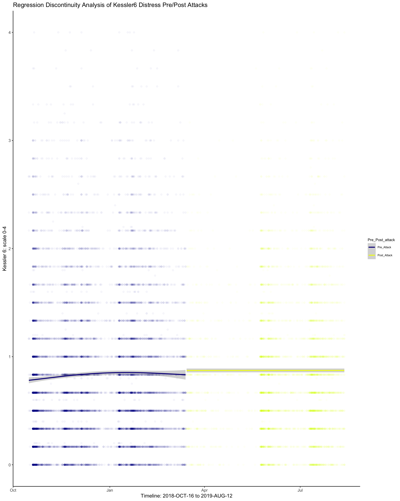
Show code
## long trend
npk <-
ggplot(data = df_rdd4,
aes(
x = Timeline,
y = KESSLER6
)) + scale_fill_viridis_c(option = "plasma")
change_distressk <- npk +
geom_point(alpha = .03) +
# stat_smooth(method = stats::loess) +
stat_smooth(method = "gam") +
theme_classic() +
scale_color_viridis_d(option = "plasma") +
labs(title = "Long term trend k6 distress") + theme(
legend.position = "right",
legend.text = element_text(size = 6),
legend.title = element_text(color = "Black", size = 8)
) +
ylab("Kessler 6: scale 0-4") +
xlab("Timeline: 2018-OCT-16 to 2019-AUG-12")
cdk <-
change_distressk + ggtitle("Long term trend k6 distress")
cdk
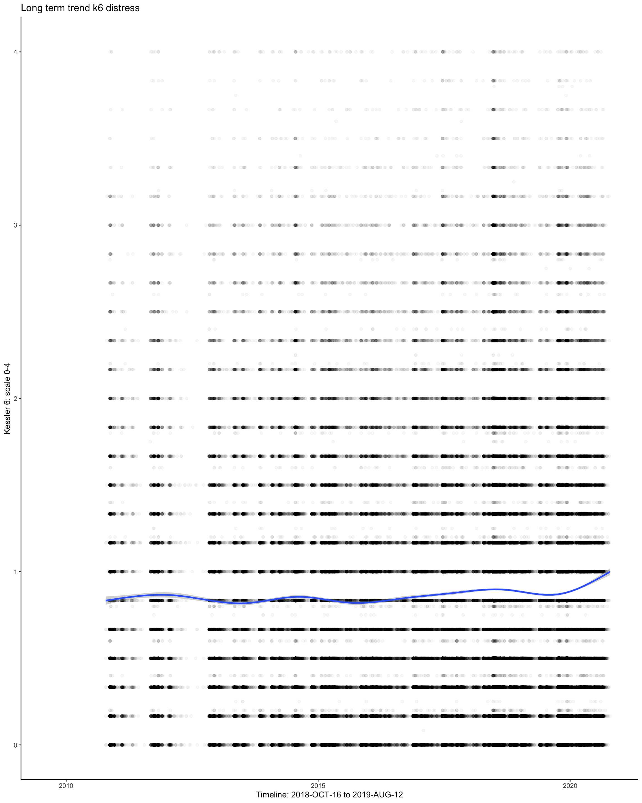
Show code
#### Terr Anx
np2 <-
ggplot(data = df_rdd2,
aes(
x = Timeline,
y = Terrorism.Anxiety #,
# group = Pre_Post_attack,
# colour = Pre_Post_attack
)) + scale_fill_viridis_c(option = "plasma")
change_distress2 <- np2 +
geom_point(alpha = .03) +
# stat_smooth(method = stats::loess) +
stat_smooth(method = "gam") +
theme_classic() +
scale_color_viridis_d(option = "plasma") +
labs(title = "Regression discontinuity attack shows little change in distress") + theme(
legend.position = "right",
legend.text = element_text(size = 6),
legend.title = element_text(color = "Black", size = 8)
) +
ylab("Kessler 6: scale 0-4") +
xlab("Timeline: 2018-JUL-01 to 2019-AUG-12")
cd2 <-
change_distress2 + ggtitle("Regression Discontinuity Analysis of Kessler6 Distress Pre/Post Attacks")
cd2
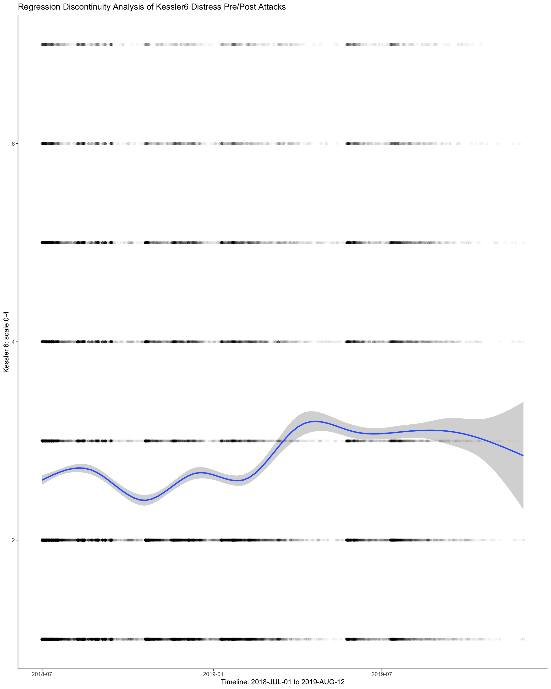
Show code
np3 <-
ggplot(
data = df_rdd3,
aes(
x = Timeline,
y = Terrorism.Anxiety
)
) + scale_fill_viridis_c(option = "plasma")
change_ta3 <- np3 +
geom_point(alpha = .03) +
# stat_smooth(method = stats::loess) +
stat_smooth(method = "gam") +
theme_classic() +
scale_color_viridis_d(option = "plasma") + theme(
legend.position = "right",
legend.text = element_text(size = 6),
legend.title = element_text(color = "Black", size = 8)
) +
ylab("Kessler 6: scale 0-4") +
xlab("Timeline:2016-2020")
cd3 <-
change_ta3 + ggtitle("Terrorism Anxiety 2016-2020")
cd3
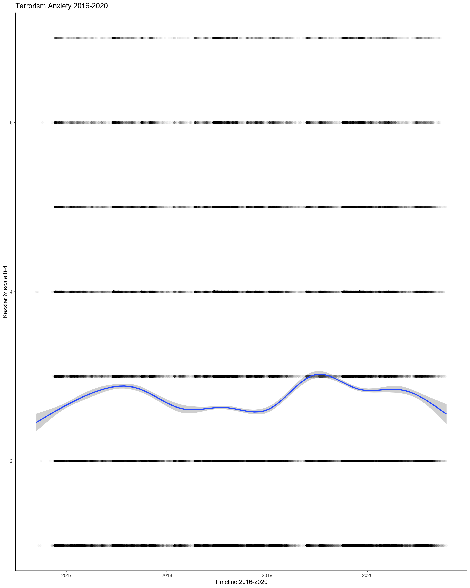
Show code
np3k <-
ggplot(
data = df_rdd3,
aes(
x = Timeline,
y = KESSLER6 ,
group = Pre_Post_attack,
colour = Pre_Post_attack
)
) + scale_fill_viridis_c(option = "plasma")
change_ta3l<- np3k +
geom_point(alpha = .03) +
# stat_smooth(method = stats::loess) +
stat_smooth(method = "gam") +
theme_classic() +
scale_color_viridis_d(option = "plasma") + theme(
legend.position = "right",
legend.text = element_text(size = 6),
legend.title = element_text(color = "Black", size = 8)
) +
ylab("Kessler 6: scale 0-4") +
xlab("Timeline:2016-2020")
np3k <-
change_ta3l + ggtitle("K6 Anxiety 2016-2020")
np3k
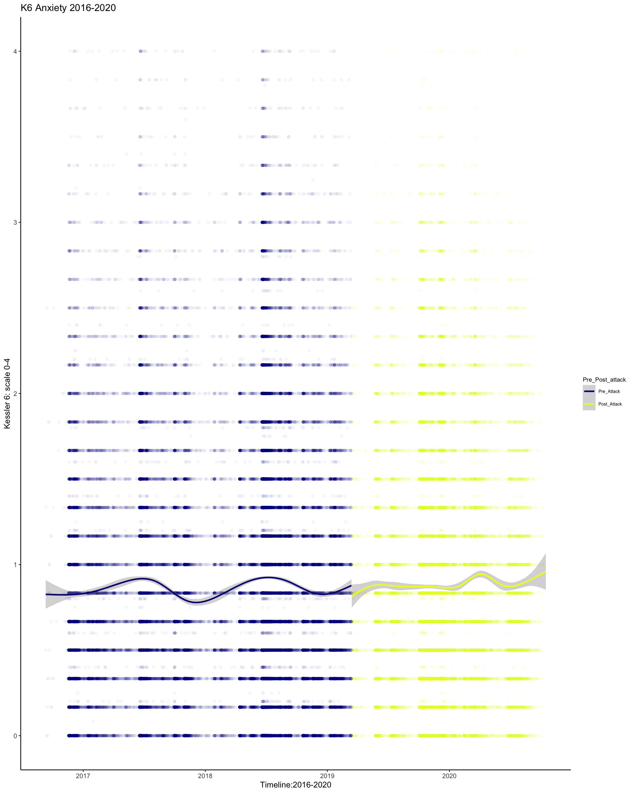
Show code
# library(splines)
# out<-glm(
# KESSLER6 ~ bs(days_0),
# data = df_rdd)
#
# summary(out)
# plot(
# ggeffects::ggpredict(out, "days_0"),
# add.data = TRUE,
# dot.alpha = .01
# )
## RDD FULL SAMPLE
np2 <-
ggplot(
data = df_rdd,
aes(
x = Timeline,
y = Terrorism.Anxiety,
group = Pre_Post_attack,
colour = Pre_Post_attack
)
) + scale_fill_viridis_c(option = "plasma")
change_terror <- np2 +
geom_point(alpha = .03) +
# stat_smooth(method = stats::loess) +
stat_smooth(method = "gam") +
theme_classic() +
scale_color_viridis_d(option = "plasma") +
labs(title = "Regression discontinuity attack shows greater change in terrorism anxiety") + theme(
legend.position = "right",
legend.text = element_text(size = 6),
legend.title = element_text(color = "Black", size = 8)
) +
ylab("Terrorism Anxiety: scale 1-7") +
xlab("Timeline: 2018-OCT-16 to 2019-AUG-12")
ct <-
change_terror + ggtitle("Regression Discontinuity Analysis of Terrorism Anxiety Pre/Post Attacks")
ct
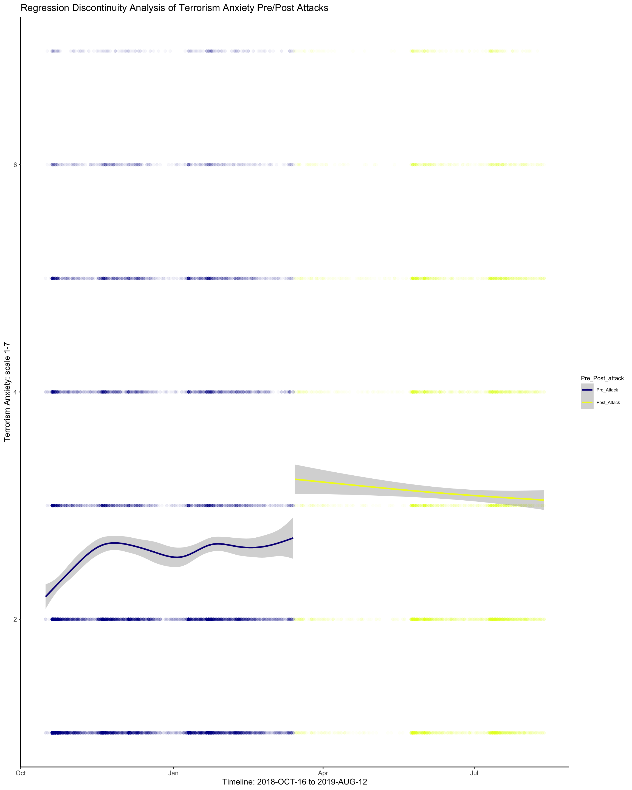
Show code
# library(splines)
# out2<-glm(
# Terrorism.Anxiety ~ bs(days_0),
# data = df_rdd)
#
# summary(out2)
# plot(
# ggeffects::ggpredict(out2, "days_0"),
# add.data = TRUE,
# dot.alpha = .01
# )
np3 <-
ggplot(
data = df_rdd,
aes(
x = Timeline,
y = Neighbourhood_Community,
group = Pre_Post_attack,
colour = Pre_Post_attack
)
) + scale_fill_viridis_c(option = "plasma")
change_belong <- np3 +
geom_point(alpha = .03) +
# stat_smooth(method = stats::loess) +
stat_smooth(method = "gam") +
theme_classic() +
scale_color_viridis_d(option = "plasma") +
labs(title = "Regression discontinuity attack shows greater change in community belonging") + theme(
legend.position = "right",
legend.text = element_text(size = 6),
legend.title = element_text(color = "Black", size = 8)
) +
ylab("Sense of Neighbourhood Community: scale 1-7") +
xlab("Timeline: 2018-OCT-16 to 2019-AUG-12")
nc <-
change_belong + ggtitle("Regression Discontinuity Analysis of Neighbourhood Community Pre/Post Attacks")
nc
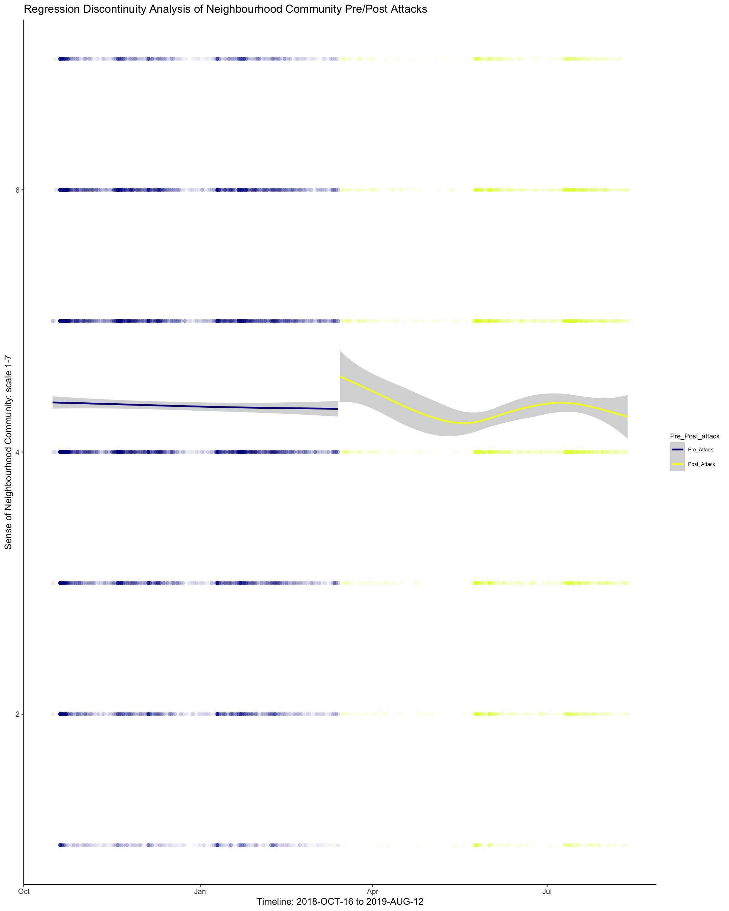
Show code
np4 <-
ggplot(data = df_rdd,
aes(
x = Timeline,
y = PWI,
group = Pre_Post_attack,
colour = Pre_Post_attack
)) + scale_fill_viridis_c(option = "plasma")
change_pwi <- np4 +
geom_point(alpha = .03) +
# stat_smooth(method = stats::loess) +
stat_smooth(method = "gam") +
theme_classic() +
scale_color_viridis_d(option = "plasma") +
labs(title = "Regression discontinuity attack shows greater change in Personal Wellbeing") + theme(
legend.position = "right",
legend.text = element_text(size = 6),
legend.title = element_text(color = "Black", size = 8)
) +
ylab("Personal Wellbeing: scale 1-7") +
xlab("Timeline: 2018-OCT-16 to 2019-AUG-12")
pwb <-
change_belong + ggtitle("Regression Discontinuity Analysis of Personal Wellbeing Pre/Post Attacks")
pwb
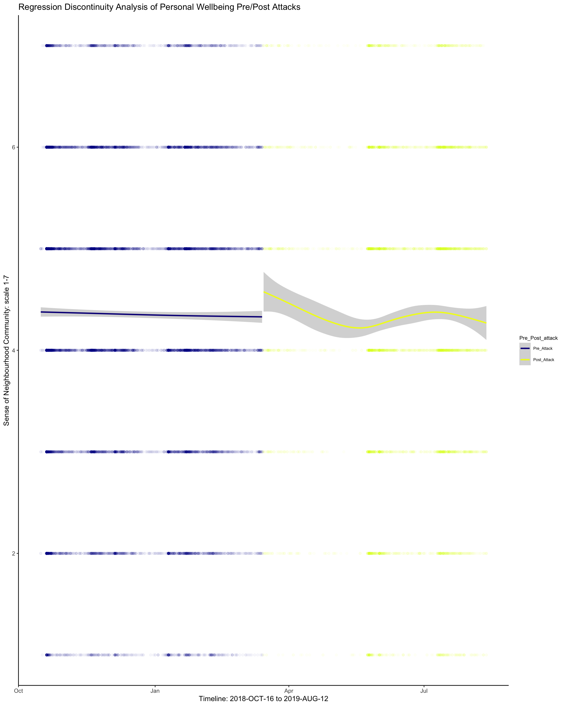
Show code
library(patchwork)
(ct + cd) / (nc + pwb) + plot_annotation(
title = "Specificity of Wellbeing/Distress Response",
subtitle = "Non-Muslims Distress Dimenisons Pre/Post Mosque Attacks, N = 17228
smooth = GAM (mgcv)",
tag_levels = "a"
) +
plot_layout(guides = 'collect')
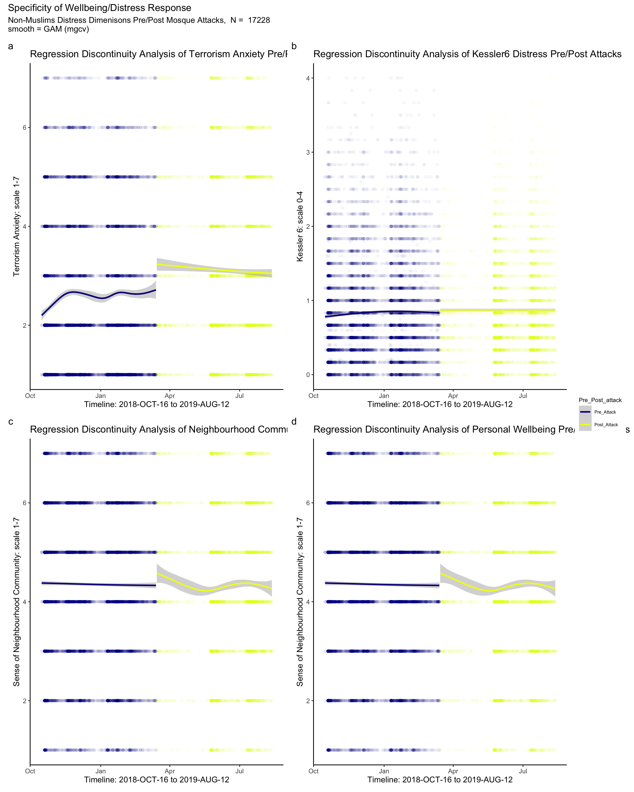
Show code
table1::table1(
~ Age + Male + EthnicCats + Terrorism.Anxiety + KESSLER6 + Neighbourhood_Community + Personal_Wellbeing |
Pre_Post_attack,
data = df_rdd
)
| Pre_Attack (N=11679) |
Post_Attack (N=5549) |
Overall (N=17228) |
|
|---|---|---|---|
| Age | |||
| Mean (SD) | 53.3 (13.7) | 51.3 (13.4) | 52.7 (13.6) |
| Median [Min, Max] | 55.2 [18.1, 99.1] | 52.8 [20.6, 94.1] | 54.4 [18.1, 99.1] |
| Missing | 1 (0.0%) | 0 (0%) | 1 (0.0%) |
| Male | |||
| Not_Male | 7311 (62.6%) | 3486 (62.8%) | 10797 (62.7%) |
| Male | 4338 (37.1%) | 2048 (36.9%) | 6386 (37.1%) |
| Missing | 30 (0.3%) | 15 (0.3%) | 45 (0.3%) |
| EthnicCats | |||
| Euro | 9557 (81.8%) | 4441 (80.0%) | 13998 (81.3%) |
| Maori | 1318 (11.3%) | 657 (11.8%) | 1975 (11.5%) |
| Pacific | 203 (1.7%) | 113 (2.0%) | 316 (1.8%) |
| Asian | 412 (3.5%) | 229 (4.1%) | 641 (3.7%) |
| Missing | 189 (1.6%) | 109 (2.0%) | 298 (1.7%) |
| Terrorism.Anxiety | |||
| Mean (SD) | 2.56 (1.60) | 3.11 (1.74) | 2.73 (1.67) |
| Median [Min, Max] | 2.00 [1.00, 7.00] | 3.00 [1.00, 7.00] | 2.00 [1.00, 7.00] |
| Missing | 431 (3.7%) | 240 (4.3%) | 671 (3.9%) |
| KESSLER6 | |||
| Mean (SD) | 0.829 (0.658) | 0.873 (0.656) | 0.843 (0.658) |
| Median [Min, Max] | 0.667 [0, 4.00] | 0.667 [0, 4.00] | 0.667 [0, 4.00] |
| Missing | 47 (0.4%) | 20 (0.4%) | 67 (0.4%) |
| Neighbourhood_Community | |||
| Mean (SD) | 4.35 (1.58) | 4.32 (1.60) | 4.34 (1.58) |
| Median [Min, Max] | 4.00 [1.00, 7.00] | 4.00 [1.00, 7.00] | 4.00 [1.00, 7.00] |
| Missing | 65 (0.6%) | 25 (0.5%) | 90 (0.5%) |
| Personal_Wellbeing | |||
| Mean (SD) | 7.14 (1.64) | 7.07 (1.64) | 7.11 (1.64) |
| Median [Min, Max] | 7.50 [0, 10.0] | 7.25 [0, 10.0] | 7.25 [0, 10.0] |
| Missing | 12 (0.1%) | 4 (0.1%) | 16 (0.1%) |
Show code
npN <-
ggplot(data = df_rdd,
aes(x = Timeline,
y = KESSLER6)) + scale_fill_viridis_c(option = "plasma")
change_distressN <- npN +
geom_point(alpha = .03) +
stat_smooth(method = stats::loess) +
# stat_smooth(method = "gam") +
theme_classic() +
scale_color_viridis_d(option = "plasma") +
labs(title = "Regression discontinuity attack shows little change in distress") + theme(
legend.position = "right",
legend.text = element_text(size = 6),
legend.title = element_text(color = "Black", size = 8)
) +
ylab("Kessler 6: scale 0-4") +
xlab("Timeline: 2018-OCT-16 to 2019-AUG-12")
cdN <-
change_distressN + ggtitle("Regression Discontinuity Analysis of Kessler6 Distress Pre/Post Attacks")
cdN
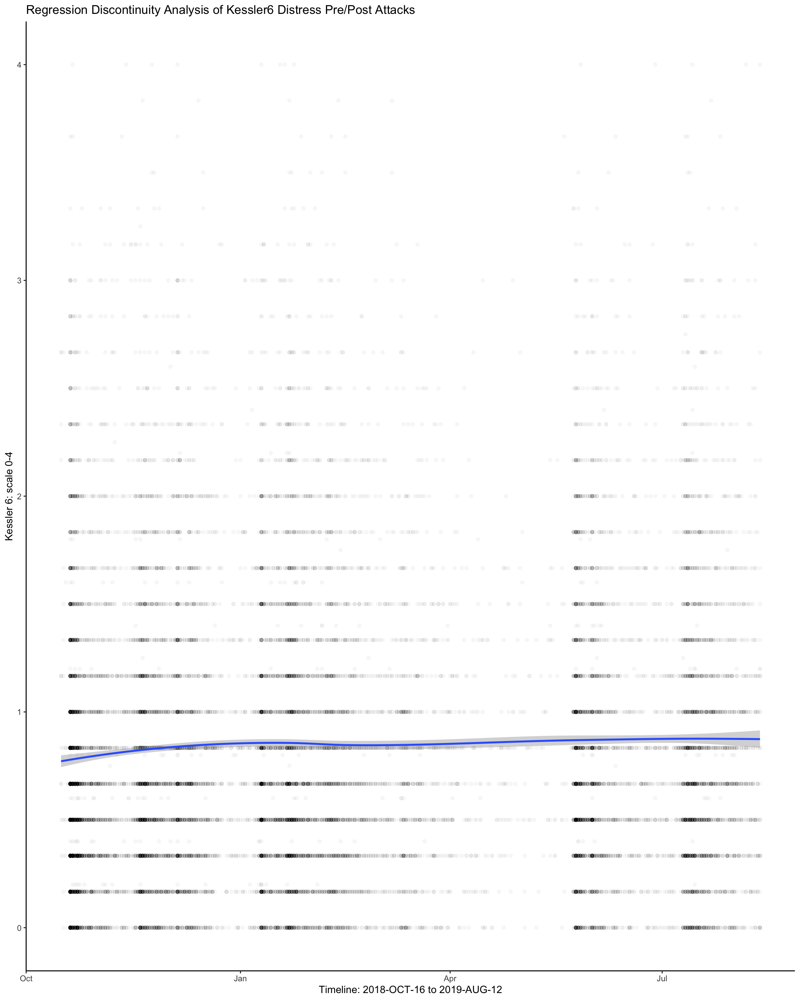
Show code
# library(splines)
# out<-glm(
# KESSLER6 ~ bs(days_0),
# data = df_rdd)
#
# summary(out)
# plot(
# ggeffects::ggpredict(out, "days_0"),
# add.data = TRUE,
# dot.alpha = .01
# )
## RDD FULL SAMPLE
np2N <-
ggplot(data = df_rdd,
aes(x = Timeline,
y = Terrorism.Anxiety)) + scale_fill_viridis_c(option = "plasma")
change_terrorN <- np2N +
geom_point(alpha = .03) +
stat_smooth(method = stats::loess) +
# stat_smooth(method = "gam") +
theme_classic() +
scale_color_viridis_d(option = "plasma") +
labs(title = "Regression discontinuity attack shows greater change in terrorism anxiety") + theme(
legend.position = "right",
legend.text = element_text(size = 6),
legend.title = element_text(color = "Black", size = 8)
) +
ylab("Terrorism Anxiety: scale 1-7") +
xlab("Timeline: 2018-OCT-16 to 2019-AUG-12")
ctN <-
change_terrorN + ggtitle("Regression Discontinuity Analysis of Terrorism Anxiety Pre/Post Attacks")
ctN
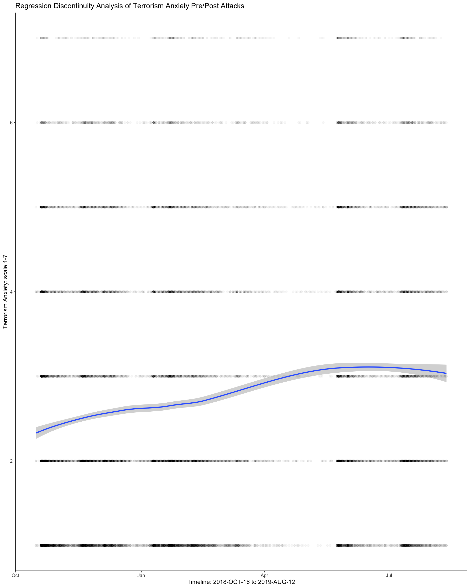
Show code
# library(splines)
# out2<-glm(
# Terrorism.Anxiety ~ bs(days_0),
# data = df_rdd)
#
# summary(out2)
# plot(
# ggeffects::ggpredict(out2, "days_0"),
# add.data = TRUE,
# dot.alpha = .01
# )
np3N <-
ggplot(data = df_rdd,
aes(x = Timeline,
y = Neighbourhood_Community,)) + scale_fill_viridis_c(option = "plasma")
change_belongN <- np3N +
geom_point(alpha = .03) +
stat_smooth(method = stats::loess) +
# stat_smooth(method = "gam") +
theme_classic() +
scale_color_viridis_d(option = "plasma") +
labs(title = "Regression discontinuity attack shows greater change in community belonging") + theme(
legend.position = "right",
legend.text = element_text(size = 6),
legend.title = element_text(color = "Black", size = 8)
) +
ylab("Sense of Neighbourhood Community: scale 1-7") +
xlab("Timeline: 2018-OCT-16 to 2019-AUG-12")
ncN <-
change_belongN + ggtitle("Regression Discontinuity Analysis of Neighbourhood Community Pre/Post Attacks")
ncN
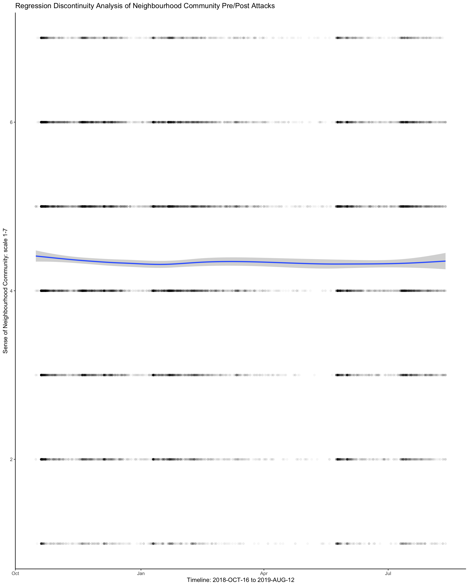
Show code
np4N <-
ggplot(data = df_rdd,
aes(x = Timeline,
y = PWI)) + scale_fill_viridis_c(option = "plasma")
change_pwiN <- np4 +
geom_point(alpha = .03) +
stat_smooth(method = stats::loess) +
# stat_smooth(method = "gam") +
theme_classic() +
scale_color_viridis_d(option = "plasma") +
labs(title = "Regression discontinuity attack shows greater change in Personal Wellbeing") + theme(
legend.position = "right",
legend.text = element_text(size = 6),
legend.title = element_text(color = "Black", size = 8)
) +
ylab("Personal Wellbeing: scale 1-7") +
xlab("Timeline: 2018-OCT-16 to 2019-AUG-12")
pwbN <-
change_belongN + ggtitle("Regression Discontinuity Analysis of Personal Wellbeing Pre/Post Attacks")
pwbN
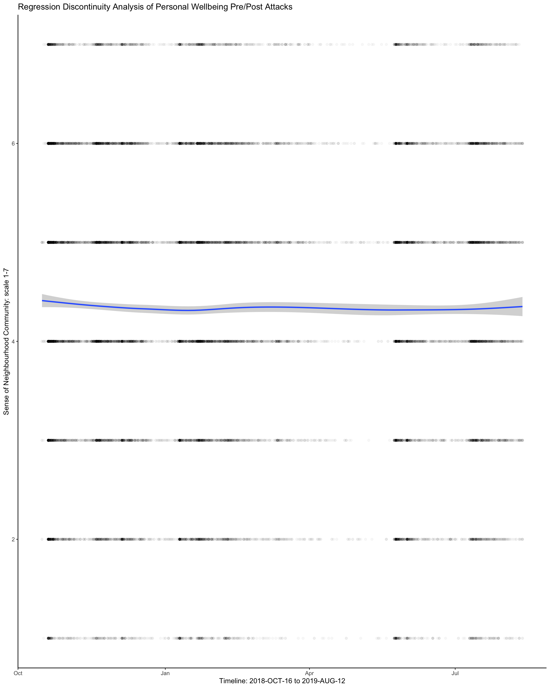
Show code
library(patchwork)
(ctN + cdN) / (ncN + pwbN) + plot_annotation(
title = "Specificity of Wellbeing/Distress Response",
subtitle = "Non-Muslims Distress Dimenisons Pre/Post Mosque Attacks, N = 17228
method = loess smooth",
tag_levels = "a"
) +
plot_layout(guides = 'collect')
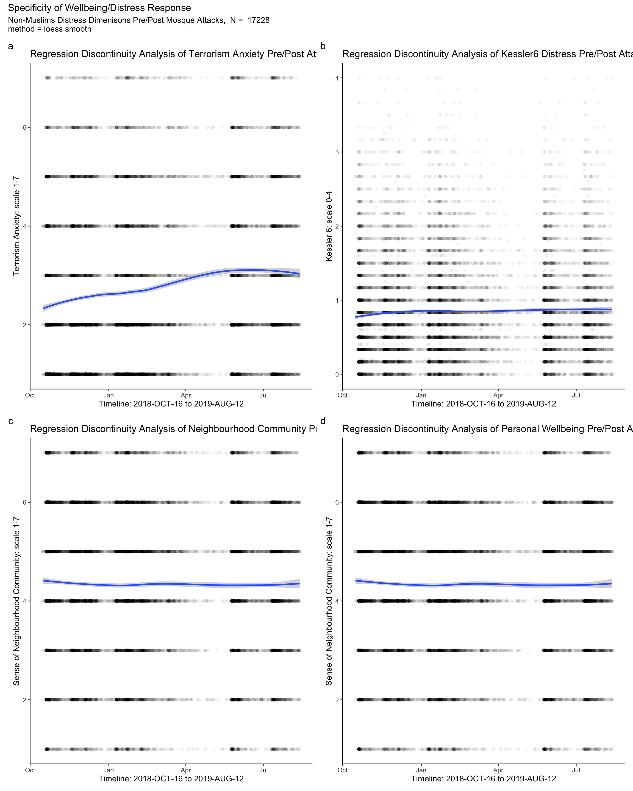
Show code
table1::table1(
~ Age + Male + EthnicCats + Terrorism.Anxiety + KESSLER6 + Neighbourhood_Community + Personal_Wellbeing |
Pre_Post_attack,
data = df_rdd
)
| Pre_Attack (N=11679) |
Post_Attack (N=5549) |
Overall (N=17228) |
|
|---|---|---|---|
| Age | |||
| Mean (SD) | 53.3 (13.7) | 51.3 (13.4) | 52.7 (13.6) |
| Median [Min, Max] | 55.2 [18.1, 99.1] | 52.8 [20.6, 94.1] | 54.4 [18.1, 99.1] |
| Missing | 1 (0.0%) | 0 (0%) | 1 (0.0%) |
| Male | |||
| Not_Male | 7311 (62.6%) | 3486 (62.8%) | 10797 (62.7%) |
| Male | 4338 (37.1%) | 2048 (36.9%) | 6386 (37.1%) |
| Missing | 30 (0.3%) | 15 (0.3%) | 45 (0.3%) |
| EthnicCats | |||
| Euro | 9557 (81.8%) | 4441 (80.0%) | 13998 (81.3%) |
| Maori | 1318 (11.3%) | 657 (11.8%) | 1975 (11.5%) |
| Pacific | 203 (1.7%) | 113 (2.0%) | 316 (1.8%) |
| Asian | 412 (3.5%) | 229 (4.1%) | 641 (3.7%) |
| Missing | 189 (1.6%) | 109 (2.0%) | 298 (1.7%) |
| Terrorism.Anxiety | |||
| Mean (SD) | 2.56 (1.60) | 3.11 (1.74) | 2.73 (1.67) |
| Median [Min, Max] | 2.00 [1.00, 7.00] | 3.00 [1.00, 7.00] | 2.00 [1.00, 7.00] |
| Missing | 431 (3.7%) | 240 (4.3%) | 671 (3.9%) |
| KESSLER6 | |||
| Mean (SD) | 0.829 (0.658) | 0.873 (0.656) | 0.843 (0.658) |
| Median [Min, Max] | 0.667 [0, 4.00] | 0.667 [0, 4.00] | 0.667 [0, 4.00] |
| Missing | 47 (0.4%) | 20 (0.4%) | 67 (0.4%) |
| Neighbourhood_Community | |||
| Mean (SD) | 4.35 (1.58) | 4.32 (1.60) | 4.34 (1.58) |
| Median [Min, Max] | 4.00 [1.00, 7.00] | 4.00 [1.00, 7.00] | 4.00 [1.00, 7.00] |
| Missing | 65 (0.6%) | 25 (0.5%) | 90 (0.5%) |
| Personal_Wellbeing | |||
| Mean (SD) | 7.14 (1.64) | 7.07 (1.64) | 7.11 (1.64) |
| Median [Min, Max] | 7.50 [0, 10.0] | 7.25 [0, 10.0] | 7.25 [0, 10.0] |
| Missing | 12 (0.1%) | 4 (0.1%) | 16 (0.1%) |
Show code
| Terrorism.Anxiety | |
|---|---|
| 489 (N=699) |
: Mean (SD): 2.29 (1.47) Median [Min, Max]: 2.00 [1.00, 7.00] Missing: 5 (0.7%) |
| 490 (N=1463) |
: Mean (SD): 2.26 (1.47) Median [Min, Max]: 2.00 [1.00, 7.00] Missing: 15 (1.0%) |
| 491 (N=549) |
: Mean (SD): 2.41 (1.55) Median [Min, Max]: 2.00 [1.00, 7.00] Missing: 13 (2.4%) |
| 492 (N=315) |
: Mean (SD): 2.62 (1.62) Median [Min, Max]: 2.00 [1.00, 7.00] Missing: 9 (2.9%) |
| 493 (N=284) |
: Mean (SD): 2.73 (1.66) Median [Min, Max]: 2.00 [1.00, 7.00] Missing: 12 (4.2%) |
| 494 (N=1120) |
: Mean (SD): 2.64 (1.56) Median [Min, Max]: 2.00 [1.00, 7.00] Missing: 65 (5.8%) |
| 495 (N=579) |
: Mean (SD): 2.79 (1.67) Median [Min, Max]: 2.00 [1.00, 7.00] Missing: 25 (4.3%) |
| 496 (N=712) |
: Mean (SD): 2.47 (1.56) Median [Min, Max]: 2.00 [1.00, 7.00] Missing: 26 (3.7%) |
| 497 (N=568) |
: Mean (SD): 2.83 (1.68) Median [Min, Max]: 2.00 [1.00, 7.00] Missing: 21 (3.7%) |
| 498 (N=302) |
: Mean (SD): 2.54 (1.57) Median [Min, Max]: 2.00 [1.00, 7.00] Missing: 15 (5.0%) |
| 499 (N=87) |
: Mean (SD): 2.46 (1.62) Median [Min, Max]: 2.00 [1.00, 7.00] Missing: 3 (3.4%) |
| 500 (N=109) |
: Mean (SD): 2.51 (1.54) Median [Min, Max]: 2.00 [1.00, 7.00] Missing: 2 (1.8%) |
| 501 (N=751) |
: Mean (SD): 2.49 (1.63) Median [Min, Max]: 2.00 [1.00, 7.00] Missing: 16 (2.1%) |
| 502 (N=546) |
: Mean (SD): 2.52 (1.59) Median [Min, Max]: 2.00 [1.00, 7.00] Missing: 18 (3.3%) |
| 503 (N=1130) |
: Mean (SD): 2.77 (1.70) Median [Min, Max]: 2.00 [1.00, 7.00] Missing: 53 (4.7%) |
| 504 (N=522) |
: Mean (SD): 2.74 (1.67) Median [Min, Max]: 2.00 [1.00, 7.00] Missing: 28 (5.4%) |
| 505 (N=580) |
: Mean (SD): 2.55 (1.62) Median [Min, Max]: 2.00 [1.00, 7.00] Missing: 30 (5.2%) |
| 506 (N=484) |
: Mean (SD): 2.55 (1.58) Median [Min, Max]: 2.00 [1.00, 7.00] Missing: 29 (6.0%) |
| 507 (N=297) |
: Mean (SD): 2.68 (1.64) Median [Min, Max]: 2.00 [1.00, 7.00] Missing: 15 (5.1%) |
| 508 (N=191) |
: Mean (SD): 2.83 (1.64) Median [Min, Max]: 2.00 [1.00, 7.00] Missing: 15 (7.9%) |
| 509 (N=157) |
: Mean (SD): 2.33 (1.49) Median [Min, Max]: 2.00 [1.00, 7.00] Missing: 4 (2.5%) |
| 510 (N=279) |
: Mean (SD): 2.86 (1.80) Median [Min, Max]: 2.00 [1.00, 7.00] Missing: 14 (5.0%) |
| 511 (N=152) |
: Mean (SD): 3.31 (1.80) Median [Min, Max]: 3.00 [1.00, 7.00] Missing: 9 (5.9%) |
| 512 (N=118) |
: Mean (SD): 3.54 (1.89) Median [Min, Max]: 3.00 [1.00, 7.00] Missing: 4 (3.4%) |
| 513 (N=85) |
: Mean (SD): 3.34 (1.83) Median [Min, Max]: 3.00 [1.00, 7.00] Missing: 2 (2.4%) |
| 514 (N=56) |
: Mean (SD): 3.12 (1.75) Median [Min, Max]: 3.00 [1.00, 7.00] Missing: 4 (7.1%) |
| 515 (N=34) |
: Mean (SD): 2.94 (1.77) Median [Min, Max]: 3.00 [1.00, 7.00] Missing: 1 (2.9%) |
| 516 (N=43) |
: Mean (SD): 3.25 (1.71) Median [Min, Max]: 3.00 [1.00, 7.00] Missing: 3 (7.0%) |
| 517 (N=27) |
: Mean (SD): 3.38 (1.65) Median [Min, Max]: 4.00 [1.00, 6.00] Missing: 1 (3.7%) |
| 518 (N=16) |
: Mean (SD): 3.81 (1.28) Median [Min, Max]: 4.00 [1.00, 5.00] Missing: 0 (0%) |
| 519 (N=25) |
: Mean (SD): 3.56 (1.76) Median [Min, Max]: 4.00 [1.00, 7.00] Missing: 0 (0%) |
| 520 (N=504) |
: Mean (SD): 2.99 (1.77) Median [Min, Max]: 2.00 [1.00, 7.00] Missing: 9 (1.8%) |
| 521 (N=931) |
: Mean (SD): 3.11 (1.76) Median [Min, Max]: 3.00 [1.00, 7.00] Missing: 14 (1.5%) |
| 522 (N=473) |
: Mean (SD): 3.21 (1.79) Median [Min, Max]: 3.00 [1.00, 7.00] Missing: 22 (4.7%) |
| 523 (N=212) |
: Mean (SD): 3.05 (1.68) Median [Min, Max]: 3.00 [1.00, 7.00] Missing: 11 (5.2%) |
| 524 (N=164) |
: Mean (SD): 2.96 (1.64) Median [Min, Max]: 2.00 [1.00, 7.00] Missing: 7 (4.3%) |
| 525 (N=133) |
: Mean (SD): 3.10 (1.75) Median [Min, Max]: 3.00 [1.00, 7.00] Missing: 8 (6.0%) |
| 526 (N=119) |
: Mean (SD): 2.97 (1.60) Median [Min, Max]: 2.00 [1.00, 7.00] Missing: 7 (5.9%) |
| 527 (N=675) |
: Mean (SD): 3.02 (1.76) Median [Min, Max]: 2.50 [1.00, 7.00] Missing: 41 (6.1%) |
| 528 (N=787) |
: Mean (SD): 3.11 (1.75) Median [Min, Max]: 3.00 [1.00, 7.00] Missing: 37 (4.7%) |
| 529 (N=394) |
: Mean (SD): 2.96 (1.64) Median [Min, Max]: 3.00 [1.00, 7.00] Missing: 25 (6.3%) |
| 530 (N=310) |
: Mean (SD): 3.19 (1.66) Median [Min, Max]: 3.00 [1.00, 7.00] Missing: 16 (5.2%) |
| 531 (N=192) |
: Mean (SD): 3.15 (1.67) Median [Min, Max]: 3.00 [1.00, 7.00] Missing: 11 (5.7%) |
| 532 (N=54) |
: Mean (SD): 3.25 (1.64) Median [Min, Max]: 3.00 [1.00, 6.00] Missing: 6 (11.1%) |
| Overall (N=17228) |
: Mean (SD): 2.73 (1.67) Median [Min, Max]: 2.00 [1.00, 7.00] Missing: 671 (3.9%) |
Show code
| Terrorism.Anxiety | Age | Male | EthnicCats | |
|---|---|---|---|---|
| 489 (N=699) |
: Mean (SD): 2.29 (1.47) Median [Min, Max]: 2.00 [1.00, 7.00] Missing: 5 (0.7%) |
: Mean (SD): 55.5 (15.3) Median [Min, Max]: 57.1 [18.1, 89.3] Missing: 0 (0%) |
: Not_Male: 405 (57.9%) Male: 290 (41.5%) Missing: 4 (0.6%) |
: Euro: 595 (85.1%) Maori: 58 (8.3%) Pacific: 13 (1.9%) Asian: 24 (3.4%) Missing: 9 (1.3%) |
| 490 (N=1463) |
: Mean (SD): 2.26 (1.47) Median [Min, Max]: 2.00 [1.00, 7.00] Missing: 15 (1.0%) |
: Mean (SD): 55.5 (13.4) Median [Min, Max]: 56.8 [19.6, 92.5] Missing: 0 (0%) |
: Not_Male: 892 (61.0%) Male: 569 (38.9%) Missing: 2 (0.1%) |
: Euro: 1267 (86.6%) Maori: 123 (8.4%) Pacific: 19 (1.3%) Asian: 28 (1.9%) Missing: 26 (1.8%) |
| 491 (N=549) |
: Mean (SD): 2.41 (1.55) Median [Min, Max]: 2.00 [1.00, 7.00] Missing: 13 (2.4%) |
: Mean (SD): 54.1 (14.3) Median [Min, Max]: 56.0 [19.1, 90.9] Missing: 0 (0%) |
: Not_Male: 328 (59.7%) Male: 220 (40.1%) Missing: 1 (0.2%) |
: Euro: 457 (83.2%) Maori: 54 (9.8%) Pacific: 11 (2.0%) Asian: 22 (4.0%) Missing: 5 (0.9%) |
| 492 (N=315) |
: Mean (SD): 2.62 (1.62) Median [Min, Max]: 2.00 [1.00, 7.00] Missing: 9 (2.9%) |
: Mean (SD): 55.4 (14.8) Median [Min, Max]: 56.8 [19.6, 99.1] Missing: 0 (0%) |
: Not_Male: 190 (60.3%) Male: 125 (39.7%) Missing: 0 (0%) |
: Euro: 263 (83.5%) Maori: 33 (10.5%) Pacific: 7 (2.2%) Asian: 10 (3.2%) Missing: 2 (0.6%) |
| 493 (N=284) |
: Mean (SD): 2.73 (1.66) Median [Min, Max]: 2.00 [1.00, 7.00] Missing: 12 (4.2%) |
: Mean (SD): 54.1 (15.1) Median [Min, Max]: 55.3 [19.6, 94.1] Missing: 0 (0%) |
: Not_Male: 191 (67.3%) Male: 92 (32.4%) Missing: 1 (0.4%) |
: Euro: 230 (81.0%) Maori: 33 (11.6%) Pacific: 8 (2.8%) Asian: 10 (3.5%) Missing: 3 (1.1%) |
| 494 (N=1120) |
: Mean (SD): 2.64 (1.56) Median [Min, Max]: 2.00 [1.00, 7.00] Missing: 65 (5.8%) |
: Mean (SD): 56.2 (13.8) Median [Min, Max]: 57.1 [20.4, 91.9] Missing: 0 (0%) |
: Not_Male: 714 (63.8%) Male: 403 (36.0%) Missing: 3 (0.3%) |
: Euro: 926 (82.7%) Maori: 138 (12.3%) Pacific: 12 (1.1%) Asian: 26 (2.3%) Missing: 18 (1.6%) |
| 495 (N=579) |
: Mean (SD): 2.79 (1.67) Median [Min, Max]: 2.00 [1.00, 7.00] Missing: 25 (4.3%) |
: Mean (SD): 55.4 (13.2) Median [Min, Max]: 57.2 [19.7, 90.7] Missing: 0 (0%) |
: Not_Male: 394 (68.0%) Male: 184 (31.8%) Missing: 1 (0.2%) |
: Euro: 487 (84.1%) Maori: 58 (10.0%) Pacific: 5 (0.9%) Asian: 22 (3.8%) Missing: 7 (1.2%) |
| 496 (N=712) |
: Mean (SD): 2.47 (1.56) Median [Min, Max]: 2.00 [1.00, 7.00] Missing: 26 (3.7%) |
: Mean (SD): 52.1 (14.5) Median [Min, Max]: 53.3 [19.1, 90.3] Missing: 0 (0%) |
: Not_Male: 447 (62.8%) Male: 260 (36.5%) Missing: 5 (0.7%) |
: Euro: 599 (84.1%) Maori: 71 (10.0%) Pacific: 9 (1.3%) Asian: 21 (2.9%) Missing: 12 (1.7%) |
| 497 (N=568) |
: Mean (SD): 2.83 (1.68) Median [Min, Max]: 2.00 [1.00, 7.00] Missing: 21 (3.7%) |
: Mean (SD): 52.8 (12.7) Median [Min, Max]: 53.9 [21.0, 84.9] Missing: 0 (0%) |
: Not_Male: 337 (59.3%) Male: 227 (40.0%) Missing: 4 (0.7%) |
: Euro: 466 (82.0%) Maori: 65 (11.4%) Pacific: 8 (1.4%) Asian: 20 (3.5%) Missing: 9 (1.6%) |
| 498 (N=302) |
: Mean (SD): 2.54 (1.57) Median [Min, Max]: 2.00 [1.00, 7.00] Missing: 15 (5.0%) |
: Mean (SD): 50.8 (13.4) Median [Min, Max]: 51.0 [20.7, 86.6] Missing: 0 (0%) |
: Not_Male: 175 (57.9%) Male: 126 (41.7%) Missing: 1 (0.3%) |
: Euro: 237 (78.5%) Maori: 47 (15.6%) Pacific: 5 (1.7%) Asian: 9 (3.0%) Missing: 4 (1.3%) |
| 499 (N=87) |
: Mean (SD): 2.46 (1.62) Median [Min, Max]: 2.00 [1.00, 7.00] Missing: 3 (3.4%) |
: Mean (SD): 47.9 (15.0) Median [Min, Max]: 49.1 [19.8, 87.5] Missing: 0 (0%) |
: Not_Male: 43 (49.4%) Male: 44 (50.6%) Missing: 0 (0%) |
: Euro: 65 (74.7%) Maori: 8 (9.2%) Pacific: 2 (2.3%) Asian: 11 (12.6%) Missing: 1 (1.1%) |
| 500 (N=109) |
: Mean (SD): 2.51 (1.54) Median [Min, Max]: 2.00 [1.00, 7.00] Missing: 2 (1.8%) |
: Mean (SD): 48.6 (13.2) Median [Min, Max]: 50.8 [22.7, 74.3] Missing: 0 (0%) |
: Not_Male: 67 (61.5%) Male: 42 (38.5%) Missing: 0 (0%) |
: Euro: 84 (77.1%) Maori: 15 (13.8%) Pacific: 1 (0.9%) Asian: 8 (7.3%) Missing: 1 (0.9%) |
| 501 (N=751) |
: Mean (SD): 2.49 (1.63) Median [Min, Max]: 2.00 [1.00, 7.00] Missing: 16 (2.1%) |
: Mean (SD): 49.0 (13.1) Median [Min, Max]: 50.6 [18.6, 88.7] Missing: 1 (0.1%) |
: Not_Male: 493 (65.6%) Male: 257 (34.2%) Missing: 1 (0.1%) |
: Euro: 603 (80.3%) Maori: 86 (11.5%) Pacific: 16 (2.1%) Asian: 33 (4.4%) Missing: 13 (1.7%) |
| 502 (N=546) |
: Mean (SD): 2.52 (1.59) Median [Min, Max]: 2.00 [1.00, 7.00] Missing: 18 (3.3%) |
: Mean (SD): 51.4 (13.3) Median [Min, Max]: 54.1 [20.2, 91.0] Missing: 0 (0%) |
: Not_Male: 330 (60.4%) Male: 216 (39.6%) Missing: 0 (0%) |
: Euro: 426 (78.0%) Maori: 78 (14.3%) Pacific: 13 (2.4%) Asian: 20 (3.7%) Missing: 9 (1.6%) |
| 503 (N=1130) |
: Mean (SD): 2.77 (1.70) Median [Min, Max]: 2.00 [1.00, 7.00] Missing: 53 (4.7%) |
: Mean (SD): 52.3 (12.3) Median [Min, Max]: 54.7 [19.1, 89.8] Missing: 0 (0%) |
: Not_Male: 726 (64.2%) Male: 402 (35.6%) Missing: 2 (0.2%) |
: Euro: 884 (78.2%) Maori: 153 (13.5%) Pacific: 27 (2.4%) Asian: 42 (3.7%) Missing: 24 (2.1%) |
| 504 (N=522) |
: Mean (SD): 2.74 (1.67) Median [Min, Max]: 2.00 [1.00, 7.00] Missing: 28 (5.4%) |
: Mean (SD): 53.0 (12.6) Median [Min, Max]: 55.2 [20.3, 89.6] Missing: 0 (0%) |
: Not_Male: 323 (61.9%) Male: 199 (38.1%) Missing: 0 (0%) |
: Euro: 412 (78.9%) Maori: 66 (12.6%) Pacific: 13 (2.5%) Asian: 24 (4.6%) Missing: 7 (1.3%) |
| 505 (N=580) |
: Mean (SD): 2.55 (1.62) Median [Min, Max]: 2.00 [1.00, 7.00] Missing: 30 (5.2%) |
: Mean (SD): 50.7 (13.1) Median [Min, Max]: 52.8 [20.3, 87.2] Missing: 0 (0%) |
: Not_Male: 380 (65.5%) Male: 199 (34.3%) Missing: 1 (0.2%) |
: Euro: 474 (81.7%) Maori: 53 (9.1%) Pacific: 10 (1.7%) Asian: 33 (5.7%) Missing: 10 (1.7%) |
| 506 (N=484) |
: Mean (SD): 2.55 (1.58) Median [Min, Max]: 2.00 [1.00, 7.00] Missing: 29 (6.0%) |
: Mean (SD): 52.2 (12.9) Median [Min, Max]: 54.0 [20.5, 90.0] Missing: 0 (0%) |
: Not_Male: 316 (65.3%) Male: 166 (34.3%) Missing: 2 (0.4%) |
: Euro: 383 (79.1%) Maori: 60 (12.4%) Pacific: 8 (1.7%) Asian: 17 (3.5%) Missing: 16 (3.3%) |
| 507 (N=297) |
: Mean (SD): 2.68 (1.64) Median [Min, Max]: 2.00 [1.00, 7.00] Missing: 15 (5.1%) |
: Mean (SD): 53.3 (12.9) Median [Min, Max]: 55.7 [20.0, 97.9] Missing: 0 (0%) |
: Not_Male: 198 (66.7%) Male: 99 (33.3%) Missing: 0 (0%) |
: Euro: 231 (77.8%) Maori: 41 (13.8%) Pacific: 9 (3.0%) Asian: 11 (3.7%) Missing: 5 (1.7%) |
| 508 (N=191) |
: Mean (SD): 2.83 (1.64) Median [Min, Max]: 2.00 [1.00, 7.00] Missing: 15 (7.9%) |
: Mean (SD): 53.0 (14.2) Median [Min, Max]: 54.5 [23.0, 95.5] Missing: 0 (0%) |
: Not_Male: 115 (60.2%) Male: 75 (39.3%) Missing: 1 (0.5%) |
: Euro: 150 (78.5%) Maori: 25 (13.1%) Pacific: 3 (1.6%) Asian: 9 (4.7%) Missing: 4 (2.1%) |
| 509 (N=157) |
: Mean (SD): 2.33 (1.49) Median [Min, Max]: 2.00 [1.00, 7.00] Missing: 4 (2.5%) |
: Mean (SD): 51.1 (13.2) Median [Min, Max]: 52.0 [21.9, 79.3] Missing: 0 (0%) |
: Not_Male: 109 (69.4%) Male: 48 (30.6%) Missing: 0 (0%) |
: Euro: 124 (79.0%) Maori: 24 (15.3%) Pacific: 1 (0.6%) Asian: 6 (3.8%) Missing: 2 (1.3%) |
| 510 (N=279) |
: Mean (SD): 2.86 (1.80) Median [Min, Max]: 2.00 [1.00, 7.00] Missing: 14 (5.0%) |
: Mean (SD): 53.6 (13.6) Median [Min, Max]: 54.6 [21.7, 89.0] Missing: 0 (0%) |
: Not_Male: 167 (59.9%) Male: 111 (39.8%) Missing: 1 (0.4%) |
: Euro: 231 (82.8%) Maori: 34 (12.2%) Pacific: 4 (1.4%) Asian: 7 (2.5%) Missing: 3 (1.1%) |
| 511 (N=152) |
: Mean (SD): 3.31 (1.80) Median [Min, Max]: 3.00 [1.00, 7.00] Missing: 9 (5.9%) |
: Mean (SD): 52.6 (14.3) Median [Min, Max]: 55.1 [20.6, 87.6] Missing: 0 (0%) |
: Not_Male: 93 (61.2%) Male: 59 (38.8%) Missing: 0 (0%) |
: Euro: 124 (81.6%) Maori: 19 (12.5%) Pacific: 1 (0.7%) Asian: 6 (3.9%) Missing: 2 (1.3%) |
| 512 (N=118) |
: Mean (SD): 3.54 (1.89) Median [Min, Max]: 3.00 [1.00, 7.00] Missing: 4 (3.4%) |
: Mean (SD): 53.4 (13.4) Median [Min, Max]: 56.3 [24.7, 90.7] Missing: 0 (0%) |
: Not_Male: 76 (64.4%) Male: 42 (35.6%) Missing: 0 (0%) |
: Euro: 95 (80.5%) Maori: 15 (12.7%) Pacific: 2 (1.7%) Asian: 4 (3.4%) Missing: 2 (1.7%) |
| 513 (N=85) |
: Mean (SD): 3.34 (1.83) Median [Min, Max]: 3.00 [1.00, 7.00] Missing: 2 (2.4%) |
: Mean (SD): 50.1 (14.2) Median [Min, Max]: 51.8 [20.7, 82.5] Missing: 0 (0%) |
: Not_Male: 57 (67.1%) Male: 27 (31.8%) Missing: 1 (1.2%) |
: Euro: 74 (87.1%) Maori: 6 (7.1%) Pacific: 1 (1.2%) Asian: 3 (3.5%) Missing: 1 (1.2%) |
| 514 (N=56) |
: Mean (SD): 3.12 (1.75) Median [Min, Max]: 3.00 [1.00, 7.00] Missing: 4 (7.1%) |
: Mean (SD): 50.0 (13.7) Median [Min, Max]: 52.2 [24.1, 82.3] Missing: 0 (0%) |
: Not_Male: 34 (60.7%) Male: 22 (39.3%) Missing: 0 (0%) |
: Euro: 47 (83.9%) Maori: 6 (10.7%) Pacific: 0 (0%) Asian: 2 (3.6%) Missing: 1 (1.8%) |
| 515 (N=34) |
: Mean (SD): 2.94 (1.77) Median [Min, Max]: 3.00 [1.00, 7.00] Missing: 1 (2.9%) |
: Mean (SD): 49.6 (13.7) Median [Min, Max]: 49.2 [21.2, 74.5] Missing: 0 (0%) |
: Not_Male: 24 (70.6%) Male: 10 (29.4%) Missing: 0 (0%) |
: Euro: 24 (70.6%) Maori: 6 (17.6%) Pacific: 2 (5.9%) Asian: 0 (0%) Missing: 2 (5.9%) |
| 516 (N=43) |
: Mean (SD): 3.25 (1.71) Median [Min, Max]: 3.00 [1.00, 7.00] Missing: 3 (7.0%) |
: Mean (SD): 50.6 (14.5) Median [Min, Max]: 50.3 [20.6, 77.3] Missing: 0 (0%) |
: Not_Male: 29 (67.4%) Male: 14 (32.6%) Missing: 0 (0%) |
: Euro: 33 (76.7%) Maori: 4 (9.3%) Pacific: 0 (0%) Asian: 4 (9.3%) Missing: 2 (4.7%) |
| 517 (N=27) |
: Mean (SD): 3.38 (1.65) Median [Min, Max]: 4.00 [1.00, 6.00] Missing: 1 (3.7%) |
: Mean (SD): 54.8 (13.9) Median [Min, Max]: 54.1 [25.3, 82.0] Missing: 0 (0%) |
: Not_Male: 19 (70.4%) Male: 7 (25.9%) Missing: 1 (3.7%) |
: Euro: 24 (88.9%) Maori: 3 (11.1%) Pacific: 0 (0%) Asian: 0 (0%) Missing: 0 (0%) |
| 518 (N=16) |
: Mean (SD): 3.81 (1.28) Median [Min, Max]: 4.00 [1.00, 5.00] Missing: 0 (0%) |
: Mean (SD): 51.9 (10.3) Median [Min, Max]: 50.5 [36.4, 77.9] Missing: 0 (0%) |
: Not_Male: 12 (75.0%) Male: 4 (25.0%) Missing: 0 (0%) |
: Euro: 13 (81.2%) Maori: 3 (18.8%) Pacific: 0 (0%) Asian: 0 (0%) Missing: 0 (0%) |
| 519 (N=25) |
: Mean (SD): 3.56 (1.76) Median [Min, Max]: 4.00 [1.00, 7.00] Missing: 0 (0%) |
: Mean (SD): 51.2 (13.2) Median [Min, Max]: 55.1 [26.6, 77.9] Missing: 0 (0%) |
: Not_Male: 15 (60.0%) Male: 10 (40.0%) Missing: 0 (0%) |
: Euro: 19 (76.0%) Maori: 1 (4.0%) Pacific: 1 (4.0%) Asian: 2 (8.0%) Missing: 2 (8.0%) |
| 520 (N=504) |
: Mean (SD): 2.99 (1.77) Median [Min, Max]: 2.00 [1.00, 7.00] Missing: 9 (1.8%) |
: Mean (SD): 47.3 (13.7) Median [Min, Max]: 47.5 [20.6, 90.7] Missing: 0 (0%) |
: Not_Male: 342 (67.9%) Male: 160 (31.7%) Missing: 2 (0.4%) |
: Euro: 406 (80.6%) Maori: 53 (10.5%) Pacific: 13 (2.6%) Asian: 24 (4.8%) Missing: 8 (1.6%) |
| 521 (N=931) |
: Mean (SD): 3.11 (1.76) Median [Min, Max]: 3.00 [1.00, 7.00] Missing: 14 (1.5%) |
: Mean (SD): 50.0 (13.3) Median [Min, Max]: 51.4 [20.6, 92.6] Missing: 0 (0%) |
: Not_Male: 589 (63.3%) Male: 338 (36.3%) Missing: 4 (0.4%) |
: Euro: 751 (80.7%) Maori: 111 (11.9%) Pacific: 16 (1.7%) Asian: 34 (3.7%) Missing: 19 (2.0%) |
| 522 (N=473) |
: Mean (SD): 3.21 (1.79) Median [Min, Max]: 3.00 [1.00, 7.00] Missing: 22 (4.7%) |
: Mean (SD): 52.3 (14.3) Median [Min, Max]: 53.6 [21.6, 88.9] Missing: 0 (0%) |
: Not_Male: 289 (61.1%) Male: 182 (38.5%) Missing: 2 (0.4%) |
: Euro: 387 (81.8%) Maori: 55 (11.6%) Pacific: 11 (2.3%) Asian: 12 (2.5%) Missing: 8 (1.7%) |
| 523 (N=212) |
: Mean (SD): 3.05 (1.68) Median [Min, Max]: 3.00 [1.00, 7.00] Missing: 11 (5.2%) |
: Mean (SD): 54.0 (14.1) Median [Min, Max]: 55.5 [21.8, 92.9] Missing: 0 (0%) |
: Not_Male: 141 (66.5%) Male: 70 (33.0%) Missing: 1 (0.5%) |
: Euro: 160 (75.5%) Maori: 33 (15.6%) Pacific: 3 (1.4%) Asian: 11 (5.2%) Missing: 5 (2.4%) |
| 524 (N=164) |
: Mean (SD): 2.96 (1.64) Median [Min, Max]: 2.00 [1.00, 7.00] Missing: 7 (4.3%) |
: Mean (SD): 50.1 (13.4) Median [Min, Max]: 51.6 [20.9, 78.5] Missing: 0 (0%) |
: Not_Male: 89 (54.3%) Male: 75 (45.7%) Missing: 0 (0%) |
: Euro: 128 (78.0%) Maori: 15 (9.1%) Pacific: 8 (4.9%) Asian: 10 (6.1%) Missing: 3 (1.8%) |
| 525 (N=133) |
: Mean (SD): 3.10 (1.75) Median [Min, Max]: 3.00 [1.00, 7.00] Missing: 8 (6.0%) |
: Mean (SD): 52.1 (14.0) Median [Min, Max]: 55.2 [20.7, 94.1] Missing: 0 (0%) |
: Not_Male: 71 (53.4%) Male: 61 (45.9%) Missing: 1 (0.8%) |
: Euro: 108 (81.2%) Maori: 16 (12.0%) Pacific: 2 (1.5%) Asian: 6 (4.5%) Missing: 1 (0.8%) |
| 526 (N=119) |
: Mean (SD): 2.97 (1.60) Median [Min, Max]: 2.00 [1.00, 7.00] Missing: 7 (5.9%) |
: Mean (SD): 51.0 (14.0) Median [Min, Max]: 52.0 [20.8, 85.4] Missing: 0 (0%) |
: Not_Male: 77 (64.7%) Male: 42 (35.3%) Missing: 0 (0%) |
: Euro: 96 (80.7%) Maori: 17 (14.3%) Pacific: 0 (0%) Asian: 5 (4.2%) Missing: 1 (0.8%) |
| 527 (N=675) |
: Mean (SD): 3.02 (1.76) Median [Min, Max]: 2.50 [1.00, 7.00] Missing: 41 (6.1%) |
: Mean (SD): 52.1 (13.3) Median [Min, Max]: 54.0 [20.7, 91.4] Missing: 0 (0%) |
: Not_Male: 432 (64.0%) Male: 242 (35.9%) Missing: 1 (0.1%) |
: Euro: 511 (75.7%) Maori: 91 (13.5%) Pacific: 20 (3.0%) Asian: 35 (5.2%) Missing: 18 (2.7%) |
| 528 (N=787) |
: Mean (SD): 3.11 (1.75) Median [Min, Max]: 3.00 [1.00, 7.00] Missing: 37 (4.7%) |
: Mean (SD): 52.7 (12.7) Median [Min, Max]: 53.8 [21.1, 92.1] Missing: 0 (0%) |
: Not_Male: 480 (61.0%) Male: 306 (38.9%) Missing: 1 (0.1%) |
: Euro: 627 (79.7%) Maori: 96 (12.2%) Pacific: 18 (2.3%) Asian: 33 (4.2%) Missing: 13 (1.7%) |
| 529 (N=394) |
: Mean (SD): 2.96 (1.64) Median [Min, Max]: 3.00 [1.00, 7.00] Missing: 25 (6.3%) |
: Mean (SD): 52.3 (12.6) Median [Min, Max]: 53.9 [22.5, 93.5] Missing: 0 (0%) |
: Not_Male: 246 (62.4%) Male: 148 (37.6%) Missing: 0 (0%) |
: Euro: 315 (79.9%) Maori: 48 (12.2%) Pacific: 3 (0.8%) Asian: 20 (5.1%) Missing: 8 (2.0%) |
| 530 (N=310) |
: Mean (SD): 3.19 (1.66) Median [Min, Max]: 3.00 [1.00, 7.00] Missing: 16 (5.2%) |
: Mean (SD): 51.4 (12.6) Median [Min, Max]: 53.1 [21.0, 83.7] Missing: 0 (0%) |
: Not_Male: 182 (58.7%) Male: 128 (41.3%) Missing: 0 (0%) |
: Euro: 254 (81.9%) Maori: 30 (9.7%) Pacific: 7 (2.3%) Asian: 12 (3.9%) Missing: 7 (2.3%) |
| 531 (N=192) |
: Mean (SD): 3.15 (1.67) Median [Min, Max]: 3.00 [1.00, 7.00] Missing: 11 (5.7%) |
: Mean (SD): 50.6 (12.4) Median [Min, Max]: 51.0 [24.2, 86.5] Missing: 0 (0%) |
: Not_Male: 128 (66.7%) Male: 64 (33.3%) Missing: 0 (0%) |
: Euro: 167 (87.0%) Maori: 16 (8.3%) Pacific: 2 (1.0%) Asian: 5 (2.6%) Missing: 2 (1.0%) |
| 532 (N=54) |
: Mean (SD): 3.25 (1.64) Median [Min, Max]: 3.00 [1.00, 6.00] Missing: 6 (11.1%) |
: Mean (SD): 54.3 (12.9) Median [Min, Max]: 57.7 [21.2, 76.8] Missing: 0 (0%) |
: Not_Male: 32 (59.3%) Male: 21 (38.9%) Missing: 1 (1.9%) |
: Euro: 41 (75.9%) Maori: 8 (14.8%) Pacific: 2 (3.7%) Asian: 0 (0%) Missing: 3 (5.6%) |
| Overall (N=17228) |
: Mean (SD): 2.73 (1.67) Median [Min, Max]: 2.00 [1.00, 7.00] Missing: 671 (3.9%) |
: Mean (SD): 52.7 (13.6) Median [Min, Max]: 54.4 [18.1, 99.1] Missing: 1 (0.0%) |
: Not_Male: 10797 (62.7%) Male: 6386 (37.1%) Missing: 45 (0.3%) |
: Euro: 13998 (81.3%) Maori: 1975 (11.5%) Pacific: 316 (1.8%) Asian: 641 (3.7%) Missing: 298 (1.7%) |
Show code
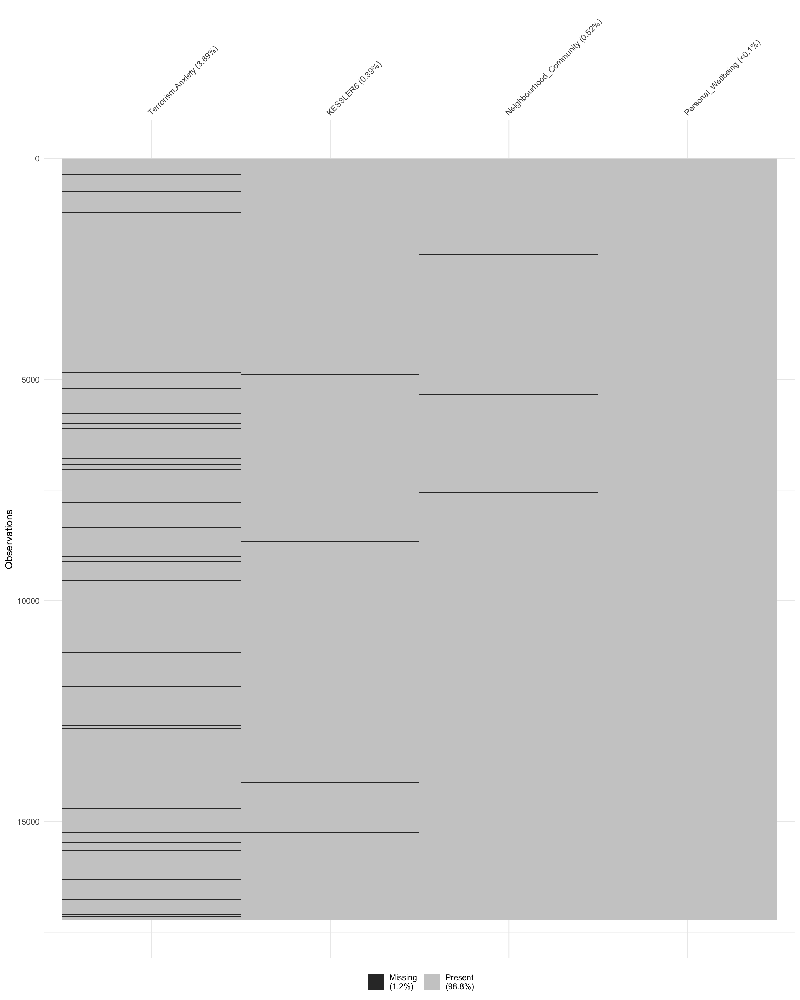